Loud, unserious, and absolutely catastrophic.
Chapter One
BESTAY CENTRAL
solarsystem:
 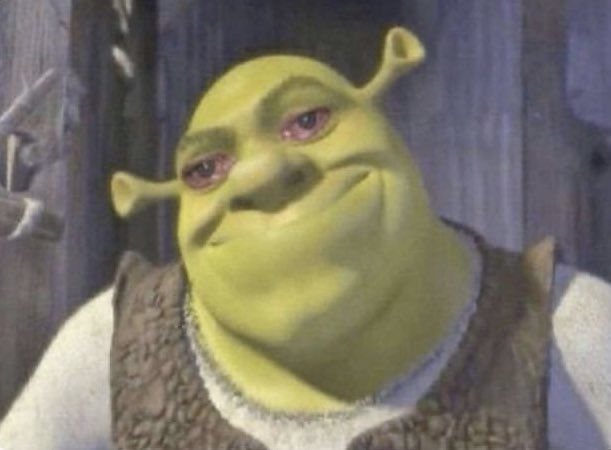
solarsystem:
i hate my life so much everyone
solarsystem:
what's the point anymore
asanoonecares:
oh goodie just what i needed
asanoonecares:
this dumb bitch to be emo in the gc
jaehyukkie:
why are you so unnecessarily rude?
cherryblossoms:
if i looked like asahi i would also be a bitter fuck every day of my life
geniusuk:
LMAOOOO
jihoney:

jihoney:
cherry already roasting in the gc
asanoonecares:
all i ever am is attacked by you people
jaehyukkie:
you ltrly called solar a dumb bitch???
junkyute:
can't even take up for you here, asahi... ur too mean to dear solar!!!!
junkyute:
speaking of, are u ok solar!!! do u need some ice cream and hugs!!!
asanoonecares:
oh ok so now honesty is looked down on
asanoonecares:
 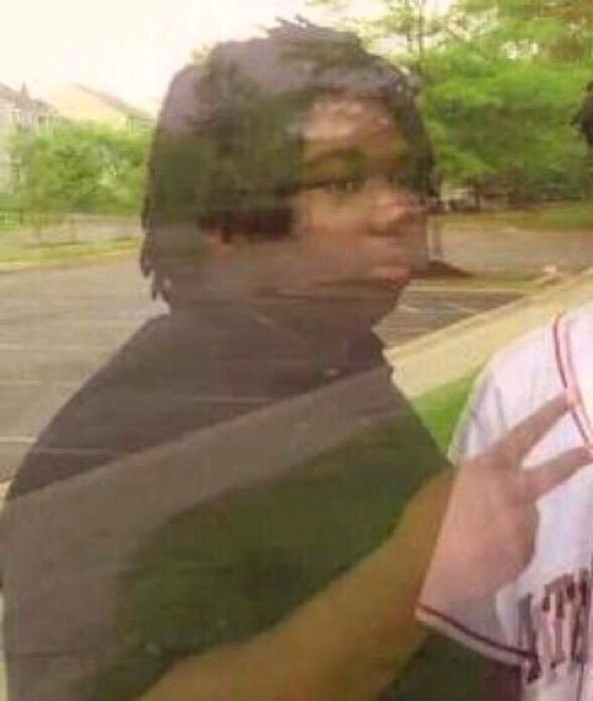
cherryblossoms:
fking idiot
solarsystem:
well JUNKYU since you are the ONLY one who asked . . .
solarsystem:
YES that is exactly what i need
jihoney:
i was literally on my way to your house as soon as i saw that awful shrek meme
jihoney:
don't give him all the UNDESERVED credit
solarsystem:
OK BUT WHO SAID SUMN FIRST?!?!?!?
junkyute:
me!! i can absolutely pick up some ice cream and come by your house, sol
jihoney:
 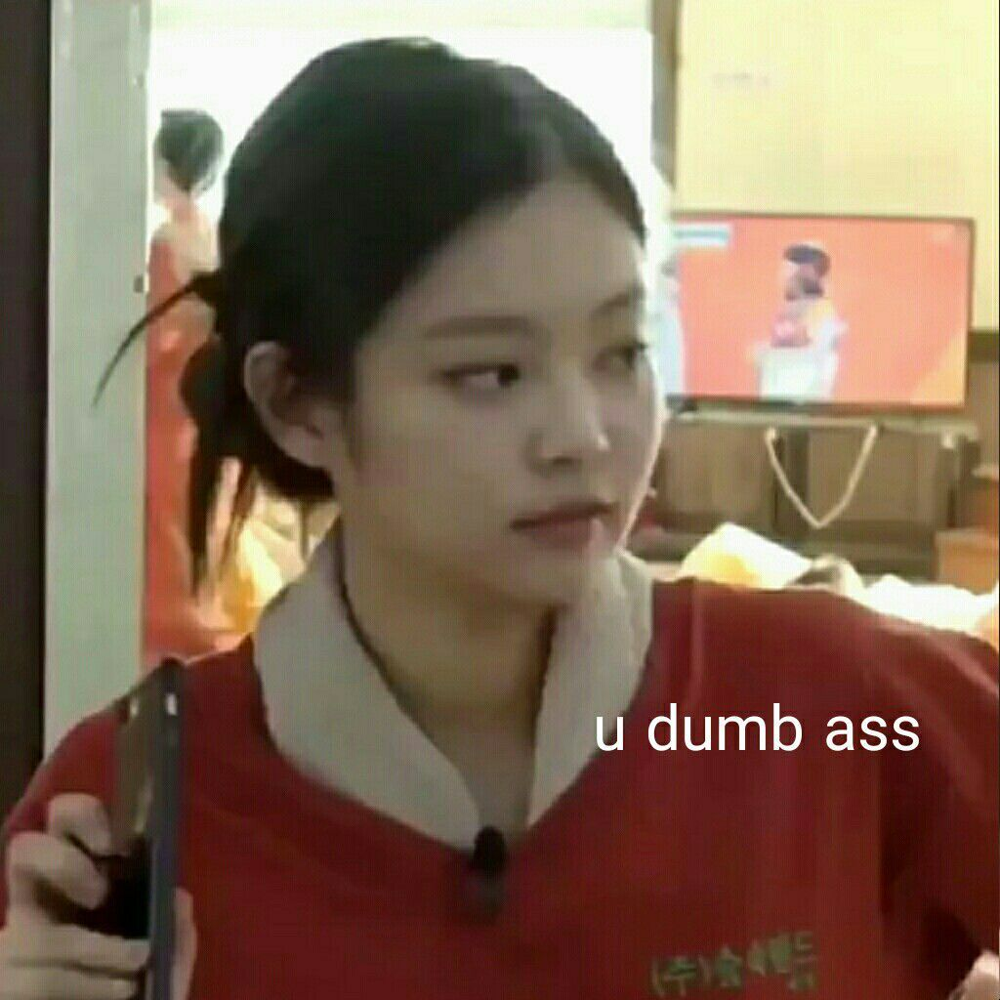
jihoney:
i better not fucking see u at solar's
jihoney:
as her best friend it is RIGHTFULLY MY JOB to bring her ice cream when she is sad over x reason
jihoney:
btw can u tell me what x reason is so i know what size of ice cream to buy? : )
junkyute:
all u do is hog her : ( and ur the meanest to her!! that's saying something when there's also asahi!!!
cherryblossoms:
not jihoon pretending i don't exist
cherryblossoms:
remember who's really in 1st mf
cherryblossoms:

jihoney:
ok but who is bringing solar ice cream when she's sad? not u CLOWN
cherryblossoms:
i don't live as close as u guys do???????????????????????????????????????
cherryblossoms:
or have a car like u????????????????????????????????
jihoney:
all i hear is lack of effort for apparently being number one
jihoney:
but ok queen go off
cherryblossoms:
HAHAHAHA JIHOON YOU'RE SO FUNNY CAN'T WAIT TILL SCHOOL STARTS SO I CAN GIVE YOU A BIG OL' HUG
cherryblossoms:

jihoney:
yeah ok bitch u can try but i do pilates
geniusuk:
god not with the fucking pilates again
jaehyukkie:
i promise we all know, jihoon, we know too much..
solarsystem:
it's exactly what cherry just said
junkyute:
beating up jihoon?
geniusuk:
hugging jihoon?
jihoney:
ltrly why are u both this stupid LOL
jihoney:
those are things that make her HAPPY not massively depressed!!!
geniusuk:
yeah ok dude
cherryblossoms:
school?
solarsystem:
 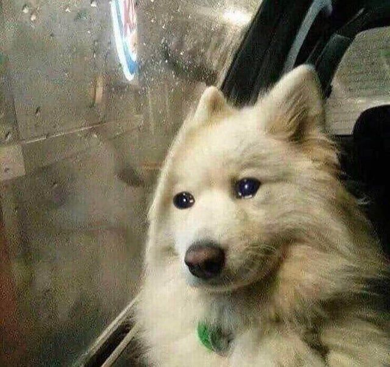
solarsystem:
exactly that . .
solarsystem:
tho for the record hugging jihoon is also pretty depressing
jihoney:
i am the fucking light of your disgusting life
jihoney:
on that note, getting a large tub
jihoney:
but it's all for me since ur so fucking unappreciative
solarsystem:
NOOO jihoon i was JKKK UR SO AMAZING THANK U I AM SO HAPPY THAT U R COMING TO MY HUMBLE ABODE
jihoney:
as u should be :)!
cherryblossoms:
fking projectile vomiting imagine liking anything abt park jihoon
jihoney:
omg stop pretending u dont think i am fantastic
cherryblossoms:
u make me hate my life
jihoney:
u might as well go with asahi, bitter ass bitch
jaehyukkie:
can u guys stop spamming the gc so much? i'm trying to study
junkyute:
wait but school hasn't started yet?
jihoney:
LMFAOOOOO MF IS STUDYING WHEN WE AINT EVEN IN SCHOOL YET
jihoney:
LMFAOOOLMFAOOOLMFAOO PLS GET A SOCIAL LIFE JAEHYUK
cherryblossoms:
yo this man..............
solarsystem:
ugh honestly i probably need to start getting out the books too
asanoonecares:
yeah with ur dumb ass
solarsystem:
asahi. . .
solarsystem:
 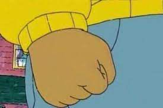
asanoonecares:
ok sorry it's funny
jaehyukkie:
sorry i like to be prepared, jihoon, maybe you should try it so you won't keep seeing C's on your assignments
jihoney:
 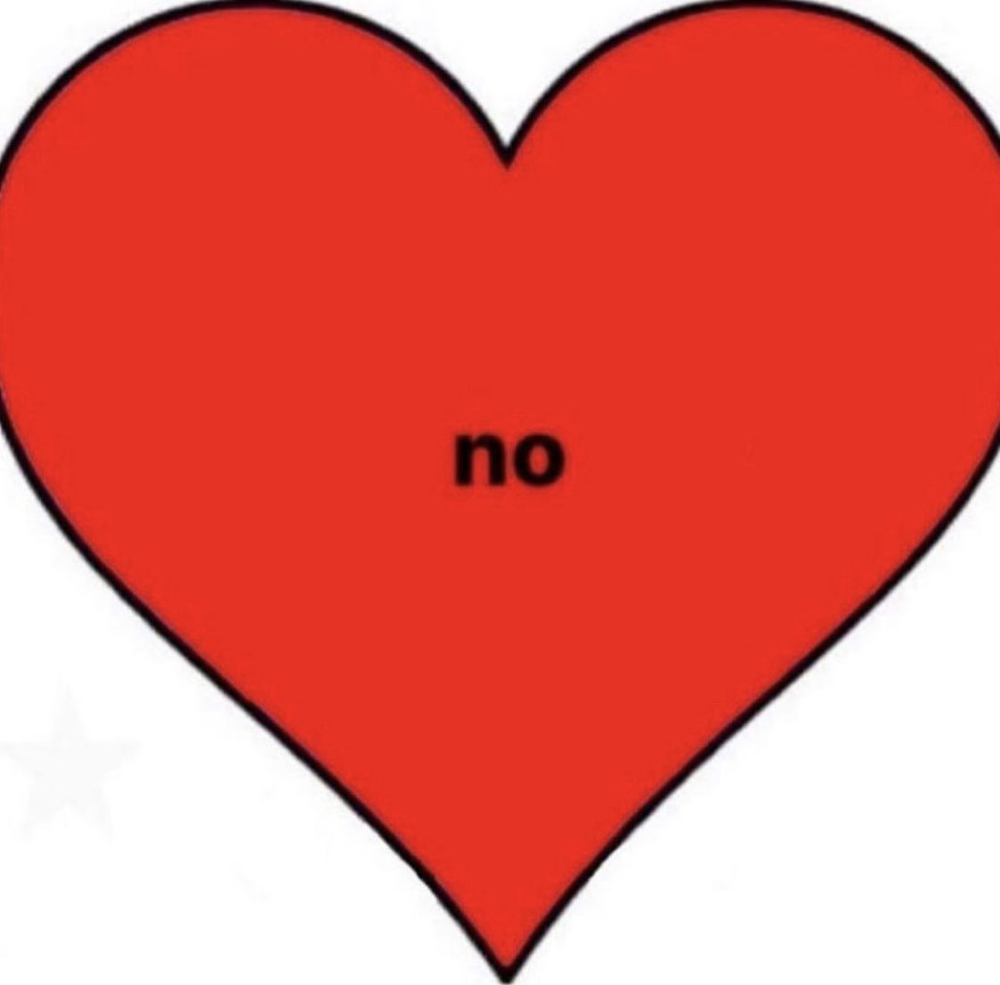
jaehyukkie:
you're hopeless
jaehyukkie:
i'm gonna have to mute the gc, but call me directly if you guys need anything
jaehyukkie:
the first council meeting is already on the first day so i have to be extra prepared
geniusuk:
gl jaehyuk
cherryblossoms:
don't shoot urself
jihoney:
FUCKING NERD LMAOOLMFAOLMFAOLMFOAO
solarsystem:
jihoon
solarsystem:
where the Fuck is my ice cream
jihoney:
bitch do not
jihoney:
rush me
cherryblossoms:
i probably would've been there already walking
junkyute:
i can still come solar!
jihoney:
no
junkyute:
you aren't even solar
jihoney:
i said no
junkyute:
???
solarsystem:
look at this guy thinking he can answer for me
solarsystem:
who gave you this authority jihoon??? OH RIGHT NO ONE
jihoney:
i deserve it SKank for putting up with u EVERYDASY of My Life
solarsystem:
?????????? and u think ur my favorite with this attitude
cherryblossoms:
ltrly imagine sky diving off this mans ego
geniusuk:
i dnt think u would ever reach the ground
junkyute:
you are a little full of yourself jihoon
junkyute:
which would be ok if you weren't so mean to people :/
jihoney:
it's not my fault you are all below me
jihoney:
except for solar
jihoney:
maybe
jihoney:
sometimes
geniusuk:
who's pretending now ;)
asanoonecares:
 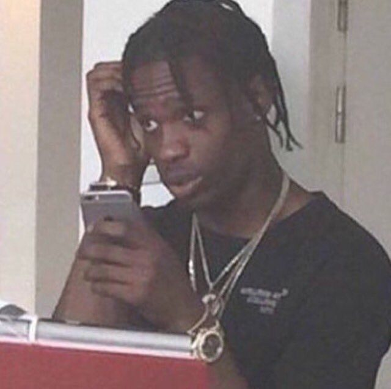
cherryblossoms:
MHMM.. OK..
solarsystem:
JIHOON I AM VERY SAD AND HUYNGRY
jihoney:
FUCK OH MY GOD IM STUFCKA T A TRAFFIC LIGHTOK
geniusuk:
he probably didn't even leave yet lol
jihoney:
Excuse Me? do not Accuse me of such a Grave Sin
cherryblossoms:
i hate u so much jihoon
cherryblossoms:
like ur existence makes my blood boil
jihoney:
all i'm seeing is fan behavior tbh
asanoonecares:
i promise cherry u r not the only one
cherryblossoms:
petition to throw jihoon out of the friend group
cherryblossoms:
everyone agree?
asanoonecares:
+vote
geniusuk:
+vote
jaehyukkie:
had to pop in to +vote
junkyute:
+vote only because you're so mean to everybody
jihoney:
 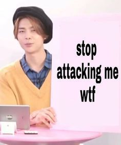
cherryblossoms:
well the majority has spoken goodbye jihoon
jihoney:
SOLAR??? HELLO? I AM BEING RUDELY ATTACKEDRN
solarsystem:
maybe if u would have already been here with my ice cream iwould stick up for u
jihoney:
ur all so fking fake why do i put up with this
jihoney:
Fuck All Y'all
jihoney:
at the end of the day, all u got is u
jihoney:
 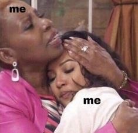
junkyute:
wait but jokes aside everyone, why are you actually so down about going back to school solar?
geniusuk:
she doesn't want to be around us that bad
jihoney:
so fake, i hoped u were the Only One i could trust, solar
jihoney:
#brocken #allyougotisyou #fakebitches
solarsystem:
obviously it's not that
solarsystem:
just everything else that school brings. work. endless studying. pressure. being on break was so nice
cherryblossoms:
see that's why i don't fucking care about something as stupid as school
asanoonecares:
or ur just unintelligent
jihoney:
HEHE both of u speaking str8 facts NOKAP
cherryblossoms:
 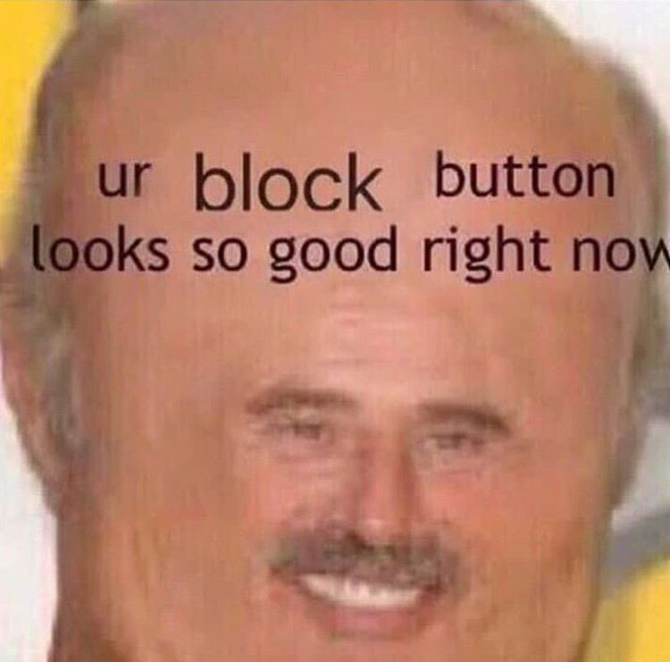
cherryblossoms:
never been so tempted in my life
solarsystem:
ur on ur last STRAW Park Jihoon
jihoney:
oh NO she pulled out the capitalized full name FUCKME
junkyute:
now you're really in trouble!! as you should be!!!!
solarsystem:
my parents have also been pressuring me to run for student council pres this year in a few months when the current pres's term ends
solarsystem:
i tried to tell them i would LTRLY never win but they won't listen
solarsystem:
so i'm prolly gonna have to and then embarrass myself in front of the whole school when NOONE WILL VOTE FOR ME
junkyute:
hey don't be like that, we'll absolutely vote for u!!!!!!! u have my full support!!!!!! team solar!!!
cherryblossoms:
ur parents are my 13th reason
cherryblossoms:
but u would be a good fit for smthn like that
jihoney:
stop she is ltrly going to ruin our school
asanoonecares:
idk our current pres kinda fucking sucks if i remember correctly anyway
junkyute:
who evn is it again??? omg i always forget his name
cherryblossoms:
i dont even know. all i know is he and his friends give me an anger disorder
solarsystem:
ummm wow i cant remember his name either, but i do know everyone in our school LOVES him and if i run against him i would be embarrassed so MF FAST
jihoney:
solar honey ur entire existence is an embarrassment on it's own <3 nothing new!
solarsystem:
honestly don't even come over anymore
jihoney:
wow you are so vile
jihoney:
#brockenonceagain
cherryblossoms:
im actually gonna block you
cherryblossoms:
like put ur phone down, do not talk anymore
geniusuk:
i second that comment
geniusuk:
please, for all of us
jihoney:
aWwwW i love how u all love me<3
jaehyukkie:
jungwon
asanoonecares:
man forgot jihoon's name
junkyute:
?
cherryblossoms:
same
cherryblossoms:
i wish i could do that
geniusuk:
who the fuck is that
solarsystem:
 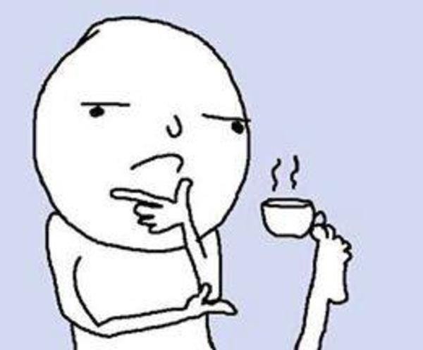
solarsystem:
feeling like i know that name
jaehyukkie:
that's the pres's name guys :|
junkyute:
OH
asanoonecares:
who
jaehyukkie:
don't
asanoonecares:
asked
jaehyukkie:
you guys literally did
asanoonecares:
NO
jaehyukkie:
i paused studying for this..
cherryblossoms:
jaehyuk do you think solar would have a chance against him?
jihoney:
pls don't give her anymore confidence she has too much
geniusuk:
UR one to Talk
jaehyukkie:
to be honest, probably not. not because of anything other than the fact everyone in the school loves jungwon. he and his friends are popular to the point that it's not worth anyone ever trying to run against them, that's why they've all had the important roles in the council for so long.
asanoonecares:
well, he gave it to you straight
asanoonecares:
as in you will fucking lose
solarsystem:
i mean i thought so
solarsystem:
def not worth the stress and effort
solarsystem:
but i don't think my parents will understand that
solarsystem:
they always want more
junkyute:
it's ok, sol, keep your head up!
junkyute:
jihoon can talk to them about it when he gets to your house, and if not, one of us gladly can!
jihoney:
do not throw such a burden at Me
jihoney:
however solar's parents do absolutely LOVE me
solarsystem:
u mean pity u?
jihoney:
fan behavior.
cherryblossoms:
ARE U NOT ALREADY AT HER HOUSE/????
jihoney:
omg Chill Young Lady i am pulling up rn
jihoney:
NoT that it was any of your BUSINESS, rotten BITCH
cherryblossoms:
GOD YOUJUST WAIT
Chapter Two
It would be around 6 PM when Solar was opening her front door to the Park Jihoon. His dark brown hair a mess atop his head from the wind outside, a t-shirt hangs loosely on his shoulders as he's dressed in 'lazy attire' which included grey sweatpants, showing he probably hadn't been doing much of anything productive today. With the sun already beginning to go down, the outside world was as cloudy as Solar felt, but Jihoon managed to be the bright light as he beamed down at her from his tall stance, ear to ear.
Holding up the tub of ice cream, he let himself inside, and would have knocked her over if she hadn't instinctively moved to allow him to do so. Jihoon practically shoves the tub into her arms, announcing to her, "I'm going to get the spoons. Are your parents here?"
She didn't even get to answer as she adjusts how the ice cream sat in her arms so it wasn't against her skin. Closing the door with her back, she never got to respond to Jihoon because he had waltzed his way towards the entrance of her kitchen before she could.
It wasn't like this was an issue to anyone in the household. The only one's that lived in it were Solar, her parents, and her dog, and none of them cared if Jihoon treated their home like his own. Her parents would probably hate it if it was anyone else, but Jihoon was practically their own child at this point. The two had been close friends since they were in preschool, their parents had always felt like they took part in raising him because of how inseparable they'd always been. For that reason, Jihoon was allowed to strut through their household with his typical demeanor without getting literally kicked.
And he also had a special influence that no one else would, except for maybe Cherry, since she was also someone she had known for a long time.
She already knew that Jihoon had asked about her parents so he could go try to talk to them about what they'd spoken of in the group chat. Sure, he appeared as one massive ass hat, but she knew he really would try his hardest to talk down her parents from making her run against the current student president. As her closest friend, Jihoon genuinely wanted nothing more than for her to be healthy and happy, and he knew doing something like that would not do either of that for her.
Since she hadn't got to tell them that neither of her parents were there, he'd come trotting out of her kitchen with two spoons in hand and a confused look on his face. When he sees Solar standing outside the kitchen in the living room, still holding the freezing tub of ice cream and waiting for him, he pends, "stayed late at work again?"
She only nods, "yeah, a meeting or something."
"Fuck," he breathes in defeat, "I rehearsed a whole speech on the way here and everything."
Chuckling, she raises a brow at him quizzically, "you rehearsed a speech for my parents for me?" Once she said these words, he began to realize what he said, and hurriedly shakes his head as if she had just said something absolutely atrocious.
"More like, for me so that I don't have to deal with the stress that you being stressed will bring me," he corrects, "understand?"
At his ridiculous attempt to keep his endless act on, she rolls her eyes. "Sure, Jihoon, whatever you say."
Seeming to want to change the subject, Jihoon suddenly turns around sporadically, eyes trailing around her house in search. "Solar, where is my beloved?" he's demanding, beginning to walk around the living room like a worried mother.
Resisting the urge to puke at his actions, she shakes her head in disbelief at Park Jihoon. "He's in my room sleeping," she finally informs him so he would stop pacing around like an idiot, "don't wake him from his nap, you know he gets grumpy."
But Jihoon was already rushing up the steps of the house to her bedroom. "He'll be less grumpy when he sees father Jihoon!"
She stood there for a second in the middle of her now empty living room. Slowly, her brain processed what exactly she just heard. What a fucking weirdo.
new post
solarkim
 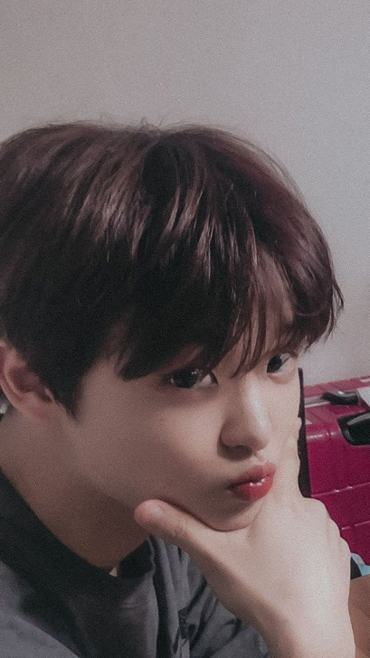
solarkim: he made me feel better... ig
jihoonie: YOU GUESS??? YOU FUCKING GUESS??!!
chxrry: @jihoonie literally why are you so loud
asahihi: @chxrry and ugly, he is also ugly
junkyuuu: VERY CUTE, i wish i could have come too:(
jihoonie: @chxrry @asahihi yall stay salty you'll never be on top like me
sukhyun: @jihoonie ltrly NOBODY WANTS TO BE LIKE U
new post
jihoonie
 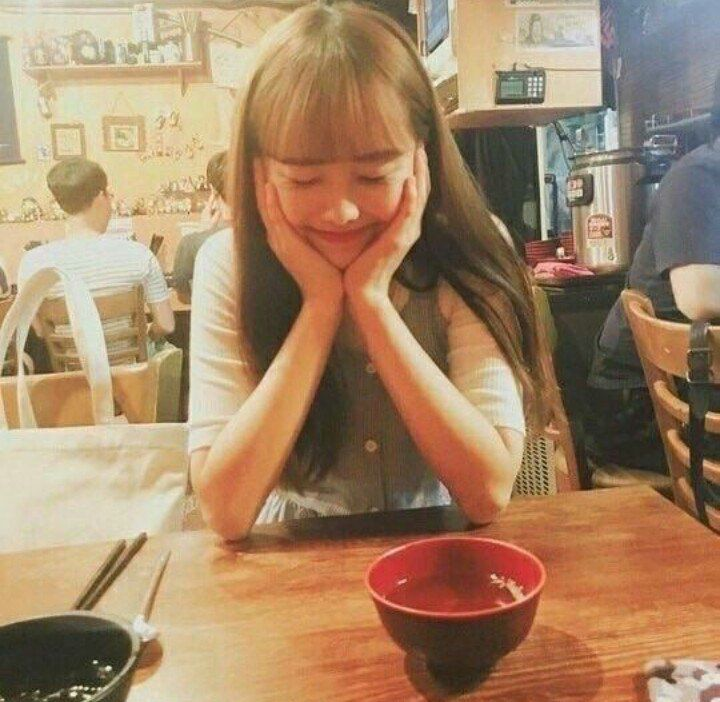
jihoonie: all of you are jealous, and you can stay jealous.
solarkim: GUYS THATS ME ON JIHOONS INSTAGRAM!! I'VE REALLY MADE IT EVERYONE
asahihi: charging you $20 for making me look at this picture
jihoonie: @asahihi sry she do be ugly but i felt bad since she posted me
chxrry: @jihoonie reasons why u will never be her favorite. ever.
junkyuuu: that doesn't look like ice cream to me!!
jihoonie: @junkyuuu bc this fat ass was still hungry
solarkim: jihoon paid too hehe
jihoonie: @solarkim LTRLY close ur mouth
Chapter Three
PARK JIHOON HATE CLUB
solarsystem:
JIHOOONIEEE
solarsystem:
PARK JIHOOOJNFOEN
solarsystem:
PARK UGLY JIHOON
solarsystem:
respectfully please wake up
solarsystem:
please awaken!!!!!!!!!!!
solarsystem:
WAKEY WAKEY
jihoney:
 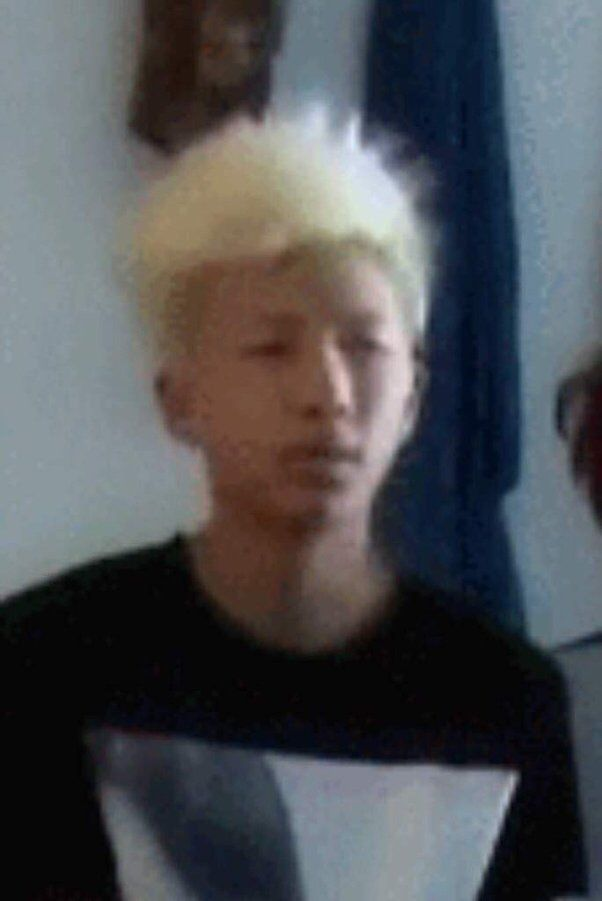
jihoney:
solar what the Fuck
jihoney:
Do You Want
asanoonecares:
ltrly stop spamming the gc when u can just pm him like what is wrong with u
asanoonecares:
as if im not dreading this day enough as it is
geniusuk:
poor emo asahi
geniusuk:
just cant handle the thought of going to school
cherryblossoms:
yeah tbh not really feeling it, might skip
jaehyukkie:
cherry, please go to school, you won't even graduate at this rate
cherryblossoms:
ZZZzzZZZ
solarsystem:
pick me up for school????>>> hello< <<? jihoon???
solarsystem:
our daily routine for HOW LONG NOW
jihoney:

jihoney:
no Solar i mean the Part were it's SIX IN THE FUCKING MORNING
junkyute:
did you rly need to raise your voice?
geniusuk:
these are texts tho??
jihoney:
I DO NOT WANT TO BE AWAEK AT SIX AM
asanoonecares:
dead ass tho imagine going to school at six am.. might as well actually run for pres if ur that psychotic
cherryblossoms:
imagine going to school at all
geniusuk:
but like.. what for tho
solarsystem:
omg jihoon i thought we could stop by starbucks for a while before hand MY FUCKING BAD FOR TRYING TO BE AROUND U
asanoonecares:
i mean that is ur fault why would u voluntarily want to be around him
solarsystem:
he has a car........
geniusuk:
lol jihoon getting used
jihoney:
ykw just bc of tht
jihoney:
i am going back to sleep
solarsystem:
FUCK U THEN BITCH
solarsystem:
I DONT FKIN NEED U
solarsystem:
 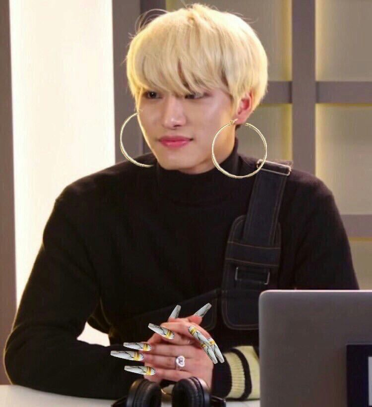
jihoney:
good cus im tired
jihoney:
see u at school in a couple hours hehe!!
solarsystem:
omg the actual betrayal i thought we were messing around
cherryblossoms:
who would've thought park jihoon was a fucking asshole
asanoonecares:
 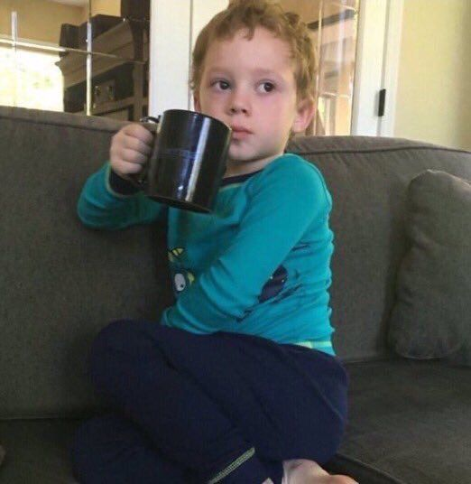
asanoonecares:
it was kinda funny tho
asanoonecares:
now she has to walk LOL
solarsystem:
stfu
solarsystem:
walking aint even that bad
geniusuk:
i can ltrly come get u since jihoon is a piece of shit
solarsystem:
NO IT IS OK I NEED THE EXERCISE
junkyute:
wait sol why do u never invite any of us too :(
asanoonecares:
sus ?
new post
solarkim
 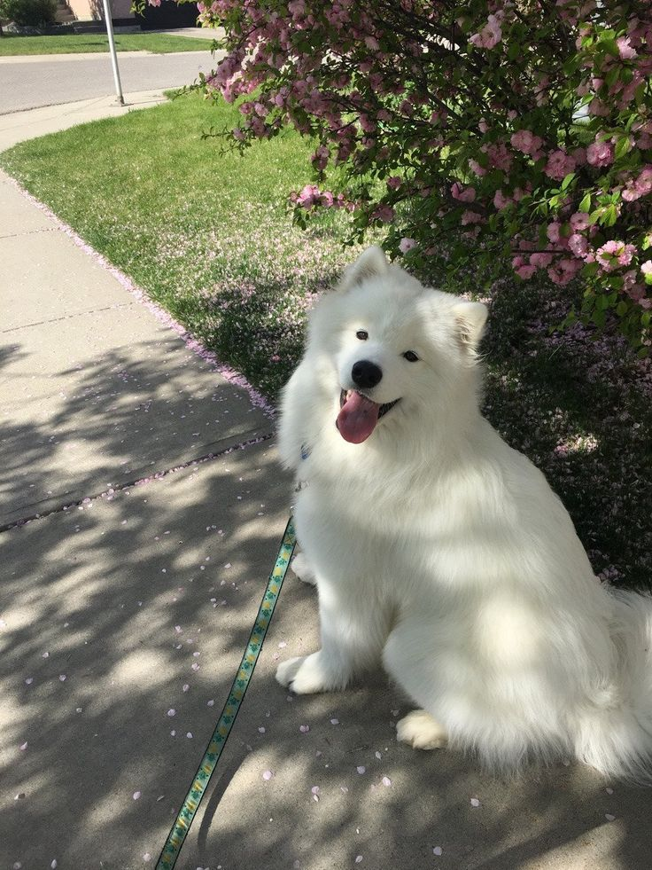
solarkim: peaceful morning walk with nana! @jihoonie should feel bad he missed such a golden opportunity
asahihi: finally something nice on the tl for once
sukhyun: PLEASE GIVE HIM A BEEF DOG BISCUIT FOR ME
junkyuuu: i wish u would invite me sol i miss nana!!
chxrry: tfw u wont hang out with anyone but jihoon
chxrry: tell nana his aunt misses him DEARLY
jihoonie: IM SORRY I MISSED YOUR MORNING WALK SON
jihoonie: @chxrry why would she? i am the superior option
jihoonie: @chxrry @junkyuuu all yall STAY MAD
solarkim: @junkyuuu @chxrry @sukhyun @asahihi we can literally all hang out after school??
Solar blinks down at her phone screen, exhaling deeply at her friends before she powers it off, sliding it back into the pocket of her bag. She was already in her school uniform, since she wasn't walking Nana too far and could easily drop him back off at her house. Changing into her uniform afterwards would take too much time since Jihoon had let her down like that.
It was okay, though. She wasn't mad at her best friend. More of, she wasn't surprised when he pulled things like that. That was just how Park Jihoon was, but she still loved him and all of his joking but cruel idiocy at the end of the day.
Plus, some nice time with Nana was always enjoyable. He was her beloved dog that she'd had for a good few years, and ever since then, the two had been inseparable. He was her closest friend that wasn't an actual human.
"Nana!" she's calling to him as he's running back with the ball she brought in her bag to play fetch with, "Good boy!" she cheers, bending down momentarily to pat his head sweetly. Nana grins up at her, tongue hanging out of his mouth and his big round eyes glistening under the morning sun, seeming to urge her to throw it again.
Her sneakers scrape against the concrete as they walk together through her quiet neighborhood that morning. It was understandable most people weren't awake and outside at 6:30 AM, she didn't blame them, really. The sound of chirping birds was therapeutic, just like Nana's bright smile as he excitedly chased the ball she had thrown as far as she could possibly manage.
Solar finds herself giggling as she watches his little legs go. He was a fairly big dog, but because of all of his fur, his legs looked silly. He was cute, she was always more than happy to watch him.
The ball was a pretty good throw on her part. It'd spun through the air at a high speed, before bouncing against the ground on someone's yard she didn't know since she was quite a ways from her own home now. Most people didn't really mind if you accidentally went into their yard, so she didn't think much of it as Nana had ecstatically sprinted towards the object.
It was when she saw a dog that was most definitely not Nana run towards the ball, too. Solar's eyes widened as she tried to process what was going on, but she didn't think it was necessary to call out to her dog, as he wasn't an aggressive type - typically. She only watches in confusion as to where the dog had even come from as it reaches the ball first due to being closer.
The much smaller dog had excitedly scooped it up in it's mouth. It's brown eyes scan over the area, before landing on Solar. As soon as they do, it's tail begins to wag vigorously, before it starts running full speed towards her.
Nana wasn't angry that the dog had gotten his ball. He was more so excited that he had a random friend to play with, as he had brightly chased the dog, making little barking noises as they ran side by side to try and communicate.
"Nana," she's calling as the two dogs finally reach her, sitting down nicely as the smaller one drops the ball, "looks like you found a friend, huh?" she coos to them. The tiny dog nudges her hand with the top of it's head as she reaches out for the ball, and she found her heart melting as she saw how precious it was. "Well, hi there," she greets it, stroking it's soft fur, "nice to meet you, I'm Solar, what's your name?"
It wasn't like the dog was going to respond, but she liked to think that it could. All it did was beam up at her with those brown eyes, pawing at her leg the second she would stop petting it.
Nana had nudged the dogs side with his nose, barking a bit to try and get it's attention. The only thing about him was that he could get a little hyper. Solar could tell that was what was happening when he began to jump around, as if he was urging the tiny dog to play fight with him. Poor Nana didn't realize how much bigger he was than the little dog, so much so that he had seemed sad when the dog didn't reciprocate his actions.
Solar didn't intervene in their play, because it didn't seem like she needed to at first. She was distracted by digging in her bag for the dog treats she always brought with her when she walked Nana. What kind of dog lover would she be if she didn't give this newfound friend a nice treat? A bad one.
It was when she heard a tiny squeak that her eyes widened, and her head jerked up in worry. Nana had tackled the poor dog as he was tired of waiting to play. It wasn't meant by him in a mean manner, he was just hyper.
A disapproving look takes over her face, "Nana -" she begins in the tone she used when he was in trouble, but she was cut off before she could instruct him to cut it out.
"Maeumi!" a voice had cried from somewhere by the front of the house she was sat in front of. Her eyes don't even have time to find the person before their right in front of her and the two dogs, picking up the small dog and cradling it in their arms as if they had lost a treasure. Nana had been confused at the action, blinking up at them whilst wagging his tail.
"What's wrong with you?!" they had incriminatingly cried to the girl, who was still sitting on the ground with her bag open, "You just let your dog attack Maeumi like that, you should be ashamed!"
Nana makes a confused noise from beside Solar, seeming to realize something was going on. He defensively sits on her feet in front of her as she rises to her feet, not seeming to trust the boy that was raising his voice at his owner. Solar dusts her uniform off, trying to gather her thoughts and what she should say to this stranger that seemed vividly upset.
"He could've gotten hurt, that dog is too big to play with him!" he'd been exasperating again, hugging the dog that was just casually in his arms, not seeming to understand what was going on.
Seeming to finally find her words, she awkwardly scratches the back of her head as she clears her throat, "um, I promise that Nana was just trying to play. He would never actually hurt - uh - Maeumi," she finishes, having to recall what the stranger said the dogs name was, "he just gets really hyper when he meets a new friend."
It was then that she had actually looked at the boy. He was dressed in a school uniform like she was, yet she wasn't sure if she had ever seen him. Solar assumed they must be in different years or something. His dark hair was a mess in his face, as he hadn't seemed to of messed with it yet, and something about his demeanor seemed to tell her he was not like her or any of her friends. She almost wondered who he was, but it wasn't like she could just ask that.
Especially when he was giving her such an attitude.
"Well, you should learn how to better control your dog before someone gets hurt," he snaps at her, completely unexpectedly.
The words took her off guard, but she couldn't even get to respond because he'd spun on his heel, before carrying the dog inside. Maeumi had peered over the boy's shoulder, innocent eyes peering at the two of them as if nothing bad had even happened.
After the boy was out of her sight, Solar looks down to Nana, who was looking up at her already, as if asking what just happened. She only shrugs down to her fluffy friend, "I don't know, either, Nana."
What a jerk, she could only think as she put on Nana's leash so they could head home, I hope I never run into that asshole at school.
Chapter Four
PARK JIHOON HATE CLUB
cherryblossoms:
ARE U GUYS NOT ALREADY HERE? OH MYGOD
cherryblossoms:
 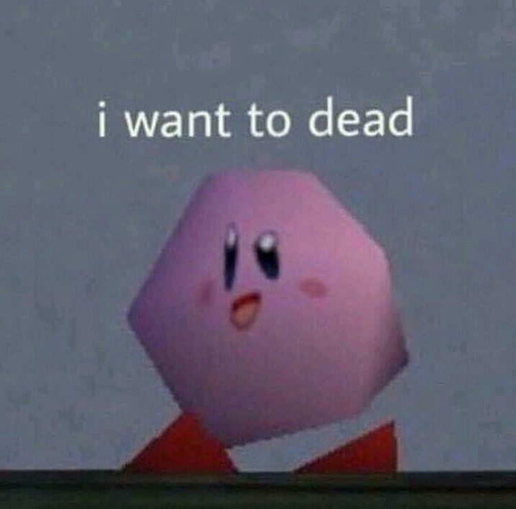
cherryblossoms:
WHY THE fucK did I allow jaehyuk to convince me to come to this FKING FORSAKENPLACE
cherryblossoms:
never listening to ur stanky ass again
jihoney:

jihoney:
do Not Fret, everyones Savior is on campus
cherryblossoms:
oh sorry i phrased my text wrong
cherryblossoms:
is anyone other than jihoon already here>>?
jihoney:
damn bitch ok, u can keep sitting there looking lonely then
solarsystem:
GUYS THE WEIRDEST THING HAPPENED TO ME THIS MORNING
solarsystem:
 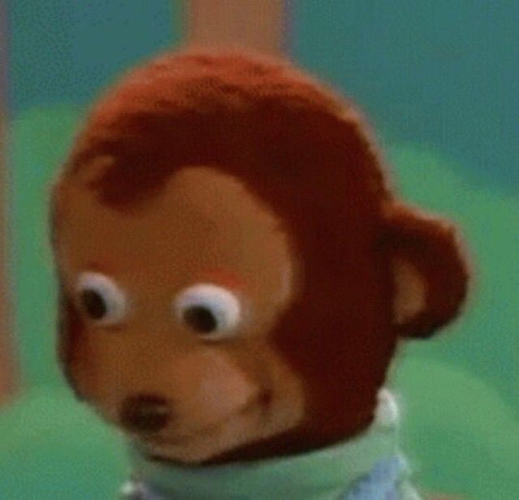
solarsystem:
like ive never been so Confused
jaehyukkie:
if it has to do with seeing your neighbor naked again, i ask that you please spare us the details
junkyute:
i sure hope not
asanoonecares:
no wait if it does i would like the details
geniusuk:
LMAO fucking weirdo
asanoonecares:
just bec its funny ?? wtf are U thinking u Sick Freak
jihoney:
is my son ok
jihoney:
tell me immediately
geniusuk:
how tf u know it has to do with nana
cherryblossoms:
ofc he's ok if he hasn't seen u
jihoney:
 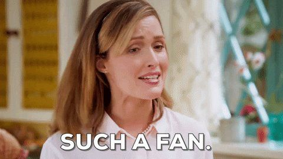
solarsystem:
i mean it does actually have to do with nana
jihoney:
see? fathers intuition.
cherryblossoms:
u r ltrly not his dad
jihoney:
did he tell u that himself? No i Did Not Think So
geniusuk:
u make me hate everything
asanoonecares:
agree
asanoonecares:
-rep so fucking unfunny makes me want to nuke my own home
jihoney:
silence Losers
jihoney:
now Solar Update me IMMEDIATELY
solarsystem:
i was walking nana and throwing his ball like normal bec u know, he LOVES his fetch
solarsystem:
and this cute little dog ran up to his ball and got it instead but brought it back to me
junkyute:
awww nana made a new friend!!
jihoney:
wheres the bad did he eat him or sumn
solarsystem:
No . . .
solarsystem:
basically nana just got rly hyper and wanted to play so he accidentally kinda harshly tackled the tiny dog bec he doesnt understand hes big
solarsystem:
but then the owner came out and basically yelled at me saying i need to control my dog n shit
solarsystem:
he was so Uptight for no reason, wouldnt even let me speak.........
solarsystem:
he had our school uniform on but i didnt recognize him
jihoney:
probably a bitch ass first yr
jihoney:
they always have smthn stuck up their ass
cherryblossoms:
ok but did u deck him in the face?
solarsystem:
no?
cherryblossoms:
disappointing
geniusuk:
maybe its one of those preppy school boys
geniusuk:
yk?
jaehyukkie:
actually solar do you have any details about him?
asanoonecares:
 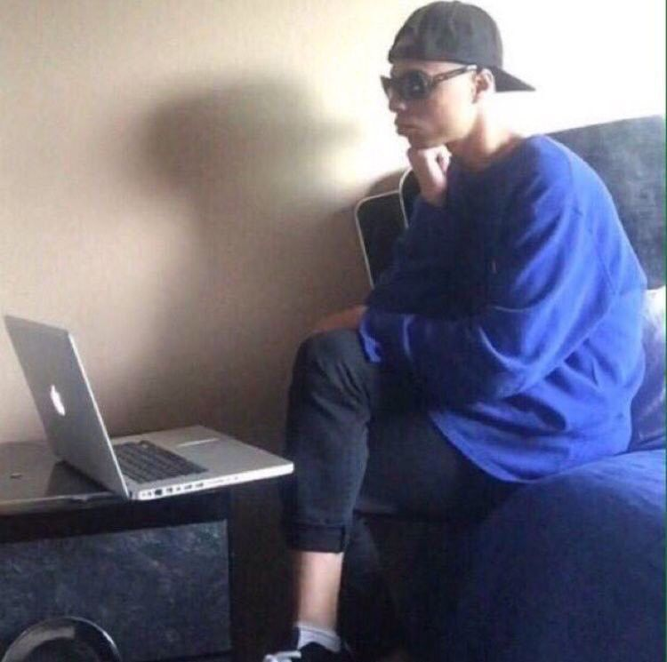
solarsystem:
i mean not rly? he just looked super young
asanoonecares:
oh wow that sure is a lot to go of off, gj solar
solarsystem:
fuck you
jihoney:
SHIIIT she pulled the F Word
jihoney:
tbf most high schoolers look young solar??? like???
jaehyukkie:
is that really all you can recall?
solarsystem:
UMMMM
solarsystem:
idk
cherryblossoms:
tfw the bell rings.........
geniusuk:
gg guys we'll never know
jaehyukkie:
it's ok, you can tell me later if you remember anything. my council meeting is already starting soon.
solarsystem:
OH WAIT
solarsystem:
HE HAD DIMPLES
solarsystem:
LIKE DEEP FUCKIN CRATER DIMPOLES
 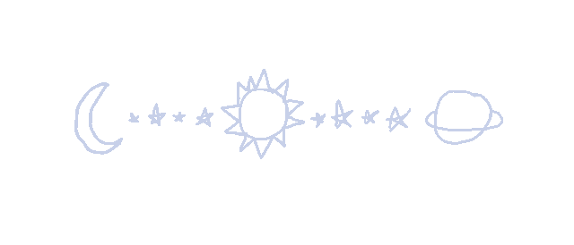
JUNGWON IS MEAN
injangwon:
the gc name??? rly???
rikiniki:
i felt like it was necessary
rikiniki:
 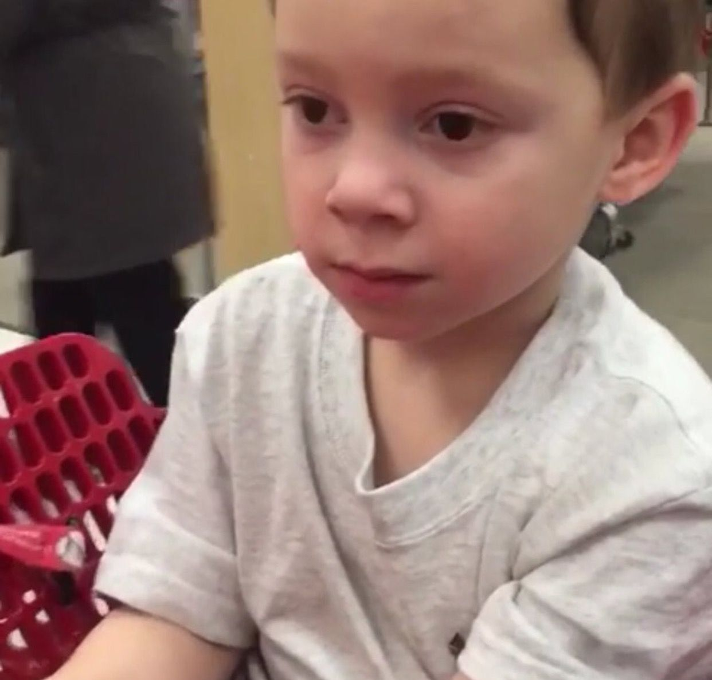
sunooshine:
i do feel bad for her tho
jbird:
imagine jungwon yelling at you at 6 in the morning
jbird:
that's just asking to be punched
jakeys:
hes finally reached his end guys, his villain story starts now
injangwon:
wow im sorry for being concerned for my dog
injangwon:
 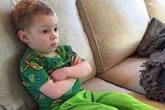
injangwon:
maeumi was ltrly going to get HURT
injangwon:
and all yall talking abt is that i yelled at some girl
jakeys:
yes jungwon, but DID maeumi get hurt?
injangwon:
no
jakeys:
exactly .
injangwon:
THAT DOESNT MENA HE WOULDNT OF???
sunooshine:
jungwon u did yell at the poor girl tho, imagine how she probably felt
injangwon:
SO WHAT I WAS WORRIED FOR MY DOG
sunooshine:
jungwon . . .
rikiniki:
man has no sympathy for human emotion
jbird:
i hope u run into her and she 360 decks u in the eye
jakeys:
why 360?
jbird:
idk just for the swag
rikiniki:
ik he didnt just say swag ...
princehoon:
nah he might tho
princehoon:
jungwon told me she was wearing our school uniform
jbird:

jakeys:
ima just try not to laugh
rikiniki:
LMAOOO GG HYUNG
injangwon:
thanks for sharing what i pm'd u sunghoON!! VERY COOL
princehoon:
i had nothing to lose
jbird:
GOOD LUCK TBH
heeheeseung:
this is good, that means if you run into her you can do this thing called apologizing for your mistakes
jakeys:
aw our vice pres, always seeing the bright side
rikiniki:
yeah unlike our pres who is a sour bitter ass wipe
injangwon:
excuse you ?????
injangwon:
im not gonna run into her, i didnt even recognize her so shes probably not in our year
injangwon:
and why tf would i apologize for saving my dog . . ?
sunooshine:
god someone help him
jbird:
for being one of the smartest kids in school u r impressively unintelligent
injangwon:
im gonna have u kicked off the football team
injangwon:
kiss ur scholarship goodbye
jbird:
YOO WTF JUNGWON??
jbird:
i'm gonna need U to Chill
princehoon:
can he even do that
heeheeseung:
no, no he most definitely cannot do that
heeheeseung:
now go find this girl and apologize
injangwon:
i dont even know who she is we went over this
princehoon:
tell me abt her i might know her
jakeys:
wouldnt be surprised if he did
rikiniki:
hyung do be kinda knowing every girl in school
rikiniki:
for unmentioned reasons
princehoon:
ltrly not my fault they all Want Me???
jbird:
yeah ok dude
princehoon:
all i sense from u rn jay is PURE Jealousy
injangwon:
the point is i dont want to know who she is
sunooshine:
jungwon, just tell sunghoon alry
injangwon:
no bc i just said? why are u all stuck on this
rikiniki:
they just want u to be less of a terrible person
rikiniki:
idrc tho this is funnyLOL
injangwon:
ur lucky ur not on the same floor as me rn
injangwon:
I DID NOTHING WRONG
jakeys:
please stop hiding from the truth
jakeys:
u R in the wrong
heeheeseung:
we can leave you alone about it, jungwon, we just wanted you to be a big person
heeheeseung:
but we have a council meeting in 10 min so
heeheeseung:
everyone get in here
heeheeseung:
being late for the first meeting is NOT cool
sunooshine:
omw rn
jakeys:
 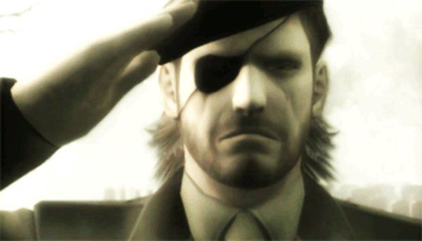
jakeys:
ill b there, just have to stop by ms. carters!
Chapter Five
Jaehyuk felt awkward - more awkward than he had intended feeling as a member of the student council committee. He typically enjoyed being a part of the council, it made him feel like he was providing something more for his school, plus it would look good on his resume. While he wasn't a fan of having to hang around the "popular boys" that everyone loved so much, he never minded it to the point it bothered him. Despite the popularity that might get to some of their heads, they did get done what needed to be done, and he respected that.
He never thought the president was that bad. He was actually fairly responsible, and he made even higher marks than Jaehyuk did, which was saying something. Whenever he spoke with him, which was only ever about something council related, he was always fairly straight forward and formal, but not to the point of being rude.
But after reading what Solar said in the group chat that morning, he knew too well who the boy that yelled at her was. It couldn't be anyone other than Jungwon. The short description he heard from her seemed to tell it all.
And as he had sat in the student council room, his suspicions had only been further confirmed thanks to the conversations that were occurring between the friends.
"Unfortunately, there's probably nothing we can do to straighten him out," Heeseung, the vice president, had been sighing to the other two.
"It could hurt his reputation," Sunoo, the secretary of the student council, had shook his head. His soft hair falls in his face as he sets his chin in the palm of his hand, staring off at the clock on the wall, "Sunghoon said she goes to our school. I'm sure she recognized him as the President, what if she tells everyone? We'll never get re-elected then."
The two friends look surprised from Sunoo's words. It appeared they hadn't thought of something like that thus far.
Jaehyuk pursed his lips as he processed what he was hearing. Little did they know, Solar had no idea that it had been the President. He wasn't sure if her knowing would have even changed much, though, other than probably causing her to know she now hates the student council president.
"I'm sure it's fine, guys," Jake assures his nervous friends, "no one usually runs against Jungwon anyway."

new post
jihoonie
 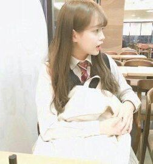
jihoonie: pay attention in class idiot @solarkim
solarkim: omg what is this weirdo taking pics of me while im trying to talk to junkyu???
chxrry: jihoon ur ig feed is starting to be only solar, just say ur in love with her
asahihi: LOL HES BEEN CAUGHT ^
sukhyun: jihoon is kinda sus everyone
junkyuuu: i think jihoons love for solar is kind of cute guys!! :(
jihoonie: @chxrry @asahihi @sukhyun @junkyuuu ok deleting because ur all making me vomit
jaehyuk__: did u forget the hw again @solarkim
solarkim: @jaehyuk__ MAYBE
new post
jaehyuk__
 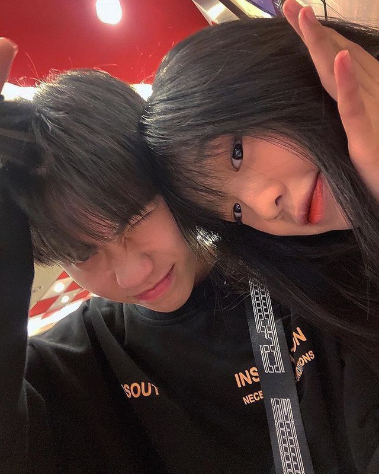
jaehyuk__: @solarkim you are so lucky I did your homework
solarkim: THANK US OO MUCH JAEHYUKKIEE I OWE U FOOD
jihoonie: breaking news - this is the reason solar actually makes good grades
sunhyuk: why wont u do my hw/?? wtf
chxrry: bc ull find a way to fail anyway
junkyuuu: YOU ARE SO PRETTY SOLAR! <3
new post
sukhyun
 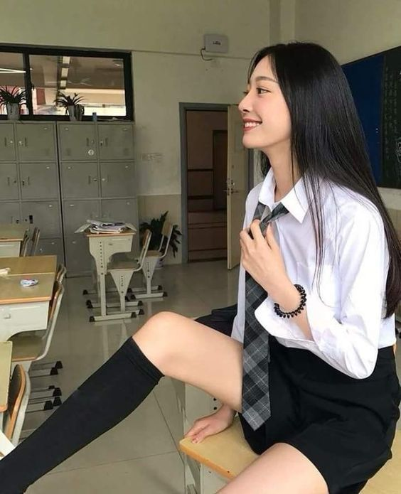
sukhyun: @chxrry only REAL rebels sit on the desks before class starts
chxrry: i am so fucking hot
jihoonie: awwhoney im so sorry but who lied to you???
solarkim: YESSCHEYRRY GETITT SO FUCINF SEXY
sukhyun: @jihoonie stop talking challenge! impossible!
chxrry: @sukhyun hehe look at this guy sticking up for me
JUNGWON IS MEAN
princehoon:
*sent a post by jaehyuk__*
jbird:
no sunghoon we don't care about the new girl of the week
rikiniki:
it's posted by a guy tho, man is after a taken woman this time LMOA
sunooshine:
wait so jaehyuk rly knows her?
sunooshine:
omg
jbird:
wtf is going on
rikiniki:
u guys told SUNGHOON something before ME?
rikiniki:
 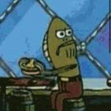
rikiniki:
FUCK YALL
jbird:
so fill us in guys?? thats not sunghoons girl of the week???
jakeys:
no, also i dont think she is taken they're just part of the same friend group
princehoon:
NOTED
jbird:
this guy fr...
heeheeseung:
that's the girl jungwon yelled at, guys
rikiniki:
and she knows jaehyuk? isn't he a member of the committee or sumn
jakeys:
yep, exactly that
rikiniki:
 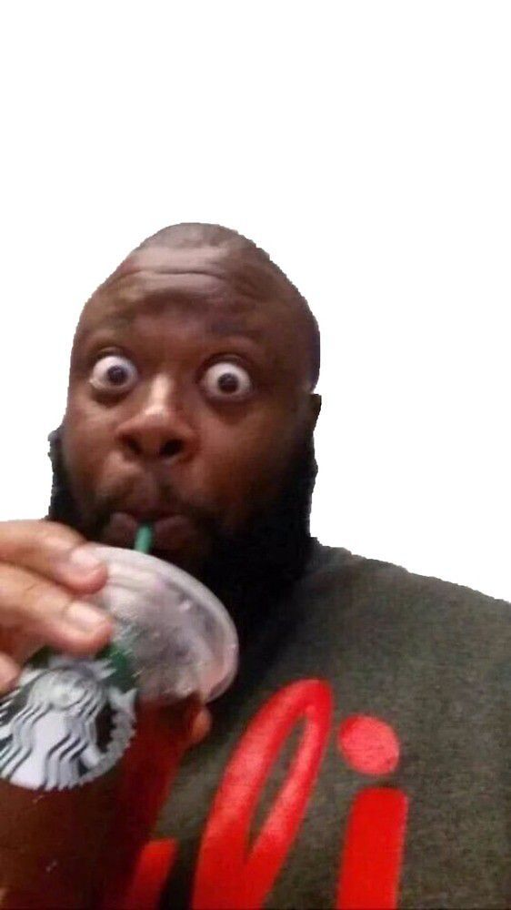
princehoon:
jungwon ill do you the honors of talking to her dont even bother
heeheeseung:
how about we dont do that sunghoon :)
jbird:
bro ltrly why r u like this
sunooshine:
notice jungwon still is not replying
rikiniki:
@injangwon @injangwon @injangwon
rikiniki:
please get in here i want entertainment
jakeys:
@injangwon look here
injangwon:
wtf do u all Want
jbird:
backread
jbird:
but gl
injangwon:
...
injangwon:
how do u guys even know thats Her
injangwon:
im ltrly the only one who saw her . . .
princehoon:
heeseung told me what u told him abt what she looked like
princehoon:
and then conveniently jaehyuk ur trustee student council committee member posted this picture that weirdly fit that desc
heeheeseung:
is it not her jungwon?
injangwon:
oh so we just gonna pretend like u didnt tell SUNGHOON what i told u
injangwon:
out of ALL PEOPLE
heeheeseung:
i wanted to know if he knew who she was
heeheeseung:
no big deal, jungwon, don't try to ignore the subject at hand
injangwon:
ok yeah its her
injangwon:
so what that she knows jaehyuk that has nothing to do with me
rikiniki:
HMMM...
jakeys:
or does it?
Chapter Six
"Did you even look at the papers I gave you?" Jungwon is asking his friends, arms crossed over his chest as he tapped his foot against the tiled floor impatiently. He had a meeting with one of the advisors about a math competition coming up that he was obliged to enter thanks to the principal recommending him, and he could not be late for such a thing. While it was a shame that it was during his lunch period, he was already used to not eating lunch. The last thing Jungwon needed on his already busy first day was to deal with his friends giggling and teasing him about something as pointless as what happened that morning. From that day on, he didn't want to tell them anything ever again.
"Dude," Sunghoon pats his back, "chill, if you're a few minutes late they aren't going to expel you."
His friends attempt at assuring him was short lived when a group of girls had walked up to him, completely stealing Sunghoon's attention as he plastered that same "woman killer" smile on his face before turning to them. The sight caused Jungwon to roll his eyes as he spins on his heel, tired of waiting for a response from his dumb friends. He swore he was the only one around here that actually cared about the council.
"Oh wait, there she is!" Sunoo is crying to the others, and the friends follow the area his eyes were directing them to.
"That's her?" Niki blinks, trying to recall the picture he saw in the group chat earlier. Sure enough, his eyes fall on the same girl from the picture, sitting with a group of people, one of which included Jaehyuk.
"It would be a good time to go apologize," Heeseung hums to Jungwon, who had been rudely stopped from leaving due to the boy grabbing the sleeve of his hoodie, "it'll only take you a minute, you won't be late to your meeting."
Jungwon didn't even bother to look in the direction of the girl as his friends had began to tease him about the entire situation all over again. Trying to hide the annoyance that was only building up inside of him further, he shakes his head in disappointment, ripping his sleeve out of Heeseung's grasp.
"No," he blatantly snaps, and before anyone could try to convince him further, he made his way out of the cafeteria to his meeting.
"He really is hopeless," Jay is shaking his head as they watch him disappear outside the cafeteria doors.
"It's because he's overworking himself," Heeseung sighs, a dull look taking over his face due to the concern he felt for his friend, "as his vice president, I try to help him, but the advisors just give him more work."
"You're saying that's the reason he's a complete asshole?" Niki hums, "are you sure that's not just Jungwon?"
"I really am worried about him," Jake admits, "but I don't know what we can do to ease his mind."

"Sol," Junkyu's tiny voice had nervously spoke up from beside her, "don't freak out, but I think the popular kids are staring at you."
The tiny brunette had been angrily digging in her locker for the correct book she needed for her final classes. She did care a lot about her grades, no matter what some of her friends (Jihoon) said. But when it came to being organized, she was not at the top of the list.
A defeated exhale leaves her lips as she had finally realized what Junkyu said to her. Confusion had spread over her face as she turns away from her locker, eyes scanning around the school hallway to try and see these apparently 'popular kids' that were staring at her.
"Kyu, what are you talking about?" she asks when she doesn't see anyone, "I don't even know what those popular kids look like," her voice trails off as she goes back to digging in her locker, "and I can't find this fucking book..."
Junkyu had pursed his lips as he watches his friend struggle to find the book. He wasn't sure if he should further explain to her, he was more so just confused. Why would they be staring at us? They had never acknowledged their presence before, he didn't understand why they would be now.
"Junkyu!" the boy jumps at the sight of Jaehyuk suddenly in front of him in the bustling school hallway. A blank looking Cherry is standing beside him, and Junkyu is just as blank as she is when he meets Jaehyuk's eyes, "hey, can we talk? I need to tell you and Cherry something."
Looking to Solar, Junkyu appears a bit torn. "I don't wanna leave Sol here all alone," he explains, just as the tiny girl had let out a triumphant cry, holding up a book in the air as if she just found gold.
"Fucking finally!" she yells, gaining some confused looks from students in the area, "this book was really fucking playing with me!"
The girl had yet to even notice the two friends that were standing there behind her due to how glad she was to of found the stupid book. She was also so engrossed she'd forgotten what Junkyu was even telling her minutes ago.
Though, her joy could only last so long, when a hand had harshly smacked her book on the ground. A screech of surprise left her lips at the action as the book hit the ground with a loud smack, and her mouth hung open with shock as her head jerked up to face the culprit of such a rude action.
"Whoops, accident," Park Jihoon shrugs, and when her eyes tear holes into him, he only sends her a wink. That was when his eyes notice the three that were standing behind her, and he blinks at them in wonder, "why the hell are you three standing there like FBI agents?"
"I couldn't really tell you, to be honest," Cherry shrugs, before she looks to the book that was on the ground. "Oh, but wait," she seems to remember something seemingly important. Taking a few steps towards Solar and Jihoon, the girl bends over to pick the book off the ground.
Not understanding what was going on, Solar watches as she looks down at the book first, "What are you -"
"- Bitch if I see that book come anywhere near my face," Jihoon hadn't got to say much more when the girl had started angrily waving the book like a baseball bat towards exactly that.
Solar fell into fits of laughter as Jihoon had backed up to get away from the wrath of the thick textbook. Until finally, he seemed tired, so he simply let it hit his hands that he held in front of himself defensively. "Can you calm the fuck down?! Oh my God, Cherry, jealousy is a disease!"
"Fuck you," is all she says as she finally stops beating him with a textbook. Making her way back to Solar, she hands her the book with a smile as if she did nothing wrong, "thanks for letting me borrow it for that time being."
With that, she had motioned followed Jaehyuk and Junkyu down the hall to some place unknown, who had told Solar they were just going to grab something they forgot in the cafeteria. She didn't really think much of it because there wasn't anything she could even think of her friends hiding from her. That just didn't happen in their friend group, everyone was an open book.
"Damn," Jihoon is cursing as he dusts himself off, "that bitch has some issues."

"Wait, it was the president?" Cherry is asking again, looking for clarification. But just seeing the look on Jaehyuk's face seemed to be enough for her, as she bursts into laughter, "oh my God, that's so fucking funny, I didn't think the council president was that big of a prick," she had suddenly turned to look around the hallway they were in, as if she was looking for him, before she casually asks her two friends, "so, you guys happen to know what his next class is?"
Junkyu and Jaehyuk knew exactly what she was thinking of doing. "How about you don't cause a scene," Jaehyuk sternly tells her, "and don't tell Solar. She's better off not knowing it was him, so just let it be. He doesn't have any intention of apologizing to her, I heard his friends talking about it."
A look of realization had spread of Junkyu's face, "oh, so that's why they keep staring at us?!" he cries, "they're urging him to talk to Sol?"
Jaehyuk nods, "that's what it seemed like."
Cherry scoffs, "and he won't? What a fucking asshole, how hard is it to walk up and say I'm sorry?"
"Must be pretty hard for him," Junkyu frowns.
You could tell how much the news annoyed Cherry. She couldn't believe it was the president out of all people that treated her best friend like that. More than anything, she wanted to give him a piece of her mind. But she could understand where Jaehyuk was coming from, and for that reason only, she would momentarily keep to herself.
"You know what," she announces, "I think Solar should run against him."
"You mean for the re-election?!" Junkyu gawks at her, surprised she would suddenly suggest something like that.
"Yeah, she should beat that fucking ass," she asserts, "some dick like that shouldn't have any power."
Chapter Seven
PARK JIHOON HATE CLUB
cherryblossoms:
solar
cherryblossoms:
i have a mission for u
solarsystem:

solarsystem:
reporting for duty ma'am
jihoney:
i am also reporting for duty
asanoonecares:
 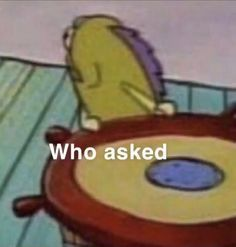
cherryblossoms:
jihoon notice i said SOLAR
jihoney:
ok and
jihoney:
we are a packaged deal
geniusuk:
be less obvious jihoon ❤
jihoney:
 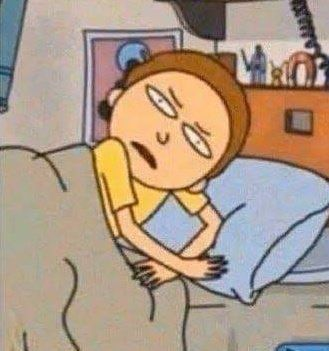
jihoney:
ik u didnt just type that and press send
junkyute:
it looks like he did to me?
asanoonecares:
thats what we all think every single time u say anything
solarsystem:
ok but what is the mission miss cherry>>??
cherryblossoms:
oh sorry i was resisting the urge to end my life
cherryblossoms:
i need u to run for pres
asanoonecares:
 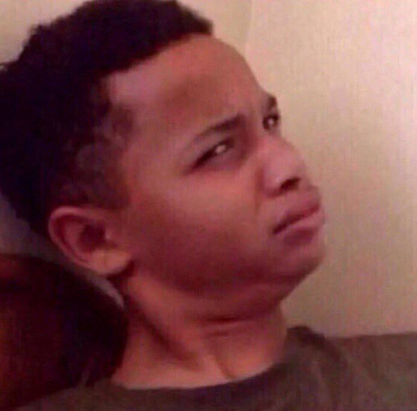
geniusuk:
wtf
geniusuk:
werent we just talking about how solar shouldnt do that
asanoonecares:
girl wants to watch her best friend get humiliated LMAO I DIG IT
jihoney:
yeah tbh we arent a packaged deal anymore good luck solar
solarsystem:
. . . wtf why tho
jaehyukkie:
cherry. . .
cherryblossoms:
i think it would b good for u
cherryblossoms:
u could actually form a rly good campaign and u never kno
cherryblossoms:
u could fix this shit hole ass garbage school
jihoney:
yeah i think she just wants free clout or sumn
jihoney:
hate to tell u but if solar was pres she would choose ME as her vice pres, sorry not sorry
junkyute:
something tells me you might not be the best fit for a vice pres jihoon
jaehyukkie:
I feel like we all know who she would realistically choose
geniusuk:
me
asanoonecares:
nope
geniusuk:
it was nice to pretend for a second ig
solarsystem:
i mean thank u cherry but i still dont think i would win
solarsystem:
like we said everyone likes the current pres way too much they wouldnt vote for some rando
cherryblossoms:
hey u dont know that its worth a try
cherryblossoms:
and it would make ur parents happy
jihoney:
naW i'M sensing some ill Intent Right Now
cherryblossoms:
jihoon ltrly sell ur phone
jihoney:
as solar's favorite human being to ever grace the earth it is my job to tell her when there is some Sus Intent Going On
jihoney:
and that is All I Am getting from U
asanoonecares:
 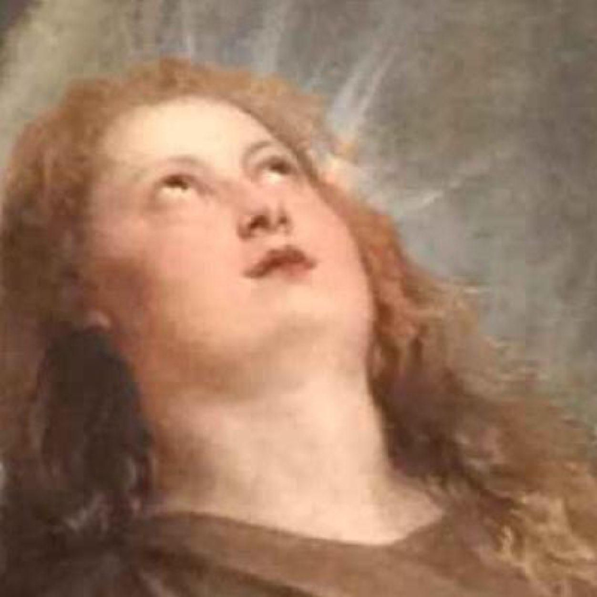
geniusuk:
we are all exhausted jihoon
junkyute:
cherry is just being supportive theres nothing wrong with that!
junkyute:
team solar!!!
asanoonecares:
i mean shit they all pressuring u now what u rly got to lose
geniusuk:
MIGHT AS WELL
geniusuk:
ill support ur down fall solar
geniusuk:
jk im not jihoon you can do it
jihoney:
No Comment
solarsystem:
shit idk where this came from
solarsystem:
but its true my parents are prolly gonna force me to run whether i like it or not
solarsystem:
at least i kno u guys got my back
solarsystem:
except for jihoon
jihoney:
bitch
jihoney:
i have ur back the MOST
jihoney:
my 4lifer
geniusuk:
 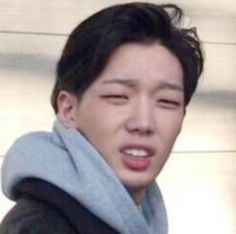
asanoonecares:
ew i dont even have a picture to show how disgusted i am
jihoney:
SALT
solarsystem:
i still dont know who the current pres is lol
solarsystem:
but ill show this popular kid HA
solarsystem:
(no i wont)
junkyute:
BELIEVE IN URSELF SOLAR!!

JUNGWON IS MEAN
sunooshine:
jungwon did you ever eat lunch?
injangwon:
when would i have had time to do that
injangwon:
ill eat when i get home from school
rikiniki:
ur ltrly gonna die lol
jakeys:
why is that funny
rikiniki:
why is it not
jakeys:
. . .
sunooshine:
ur gonna pass out if u dont eat SOMETHING jungwon
injangwon:
im just busy. no time.
injangwon:
re-elections plus this math comp, plus keeping up with all the work for the council
injangwon:
plus extra credit hw
heeheeseung:
i can handle some of the work for the council, you don't have to work yourself this hard
heeheeseung:
you are drastically hurting your health
injangwon:
no it's fine, it's my job as the president
princehoon:
why are u even worried abt re-election
rikiniki:
true no one cares enuff to run against u
injangwon:
you never know, i need to make sure i have a campaign anyway
injangwon:
even if i'll be the only candidate, i'm not trying to look lazy
sunooshine:
everyone knows you're the furthest thing from lazy
jakeys:
yeah, lazy would mean you don't try in school
rikiniki:
so sunghoon??
princehoon:
excuse you
princehoon:
show some respect
rikiniki:
 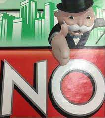
jakeys:
to be fair all u do in class is talk to girls
princehoon:
sorry that everyone likes me
princehoon:
ltrly not my fault
sunooshine:
u kinda provoke them, though
princehoon:
oh so we're all ganging up on me now huh???
princehoon:
it's ok, i like the attention, keep it going
jbird:
this fucking guy

"Hello, how may I help you?" the lady at the front desk of the school office had sent the brunette a kind, welcoming smile, setting the pen she was holding down to show her full attention.
Solar returns her kind gesture, feeling a little awkward being inside the school office. The only times she ever had really been in here was when she would get dragged into something her friends had done. It gave her more anxiety than she was planning to have as she stutters over her words a bit, "u-um, I'd like to know how to go about running for school council president?"
The woman blinked at her a few times, as if she was unsure she just heard the correct words. Solar felt like she was going to be sick as she watched the confusion take over her face for a split second, before she seemed to shake it off. That smile returned to her face as she turned around in her office chair to look for something on the other side of the desk.
Until a moment later, she turned to Solar again, sliding a piece of paper across the desk to her. "Sure, just fill this out and bring it back to the office," she explains as Solar had nervously picked up the paper from the table, "that way, we can inform the students who is running during the assembly on Wednesday."
Not knowing what else to say or do, Solar bows politely, "thank you, I appreciate it. I aspire to have a good campaign."
That sounded stupid, why did I even say that?!
"Good luck to you!" is all the woman offers her, because Solar had already spun on her heel to head out of the office.
No way she could do this, but she was going to try anyway.
Chapter Eight
new follower
princesunghoon
PARK JIHOON HATE CLUB
solarsystem:
who the fuck is sunghoon
asanoonecares:
 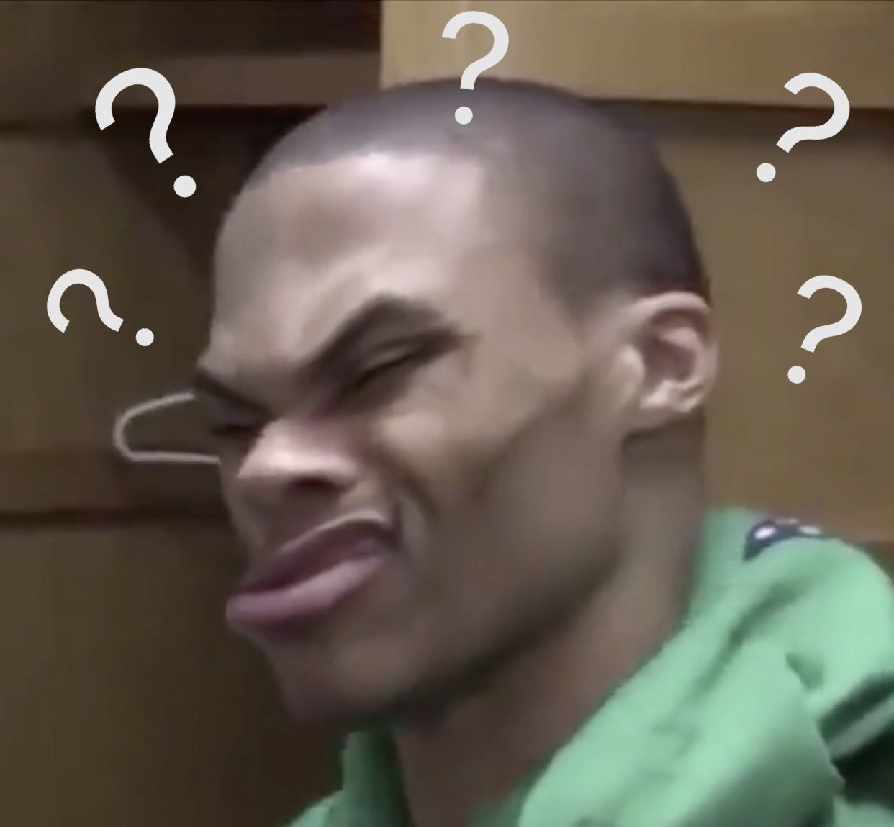
geniusuk:
idk lol
cherryblossoms:
that guy is a fucking dumb ass
jaehyukkie:
one of the popular kids, why do you ask, solar?
solarsystem:
idk he followed me on instagram
solarsystem:
i've never seen him before
geniusuk:
ohhh wait i think i know who ur talking abt
asanoonecares:
isn't that the literal man whore of the school
cherryblossoms:
the only brain cell that dude must have is shoved up his ass
cherryblossoms:
ltrly block
jaehyukkie:
I guess it's because of my post, he follows me
cherryblossoms:
why the fk would uhave anything like that on ur socials
jihoney:
damn i didnt think solar was that bad and thats coming from me
jaehyukkie:
. . . most of them follow me since i'm in the council
geniusuk:
i mean, makes sense
cherryblossoms:
ok well no reason for that thing to follow solar
cherryblossoms:
block
solarsystem:
i mean not like hes gonna try to talk to me im sure its fine
solarsystem:
i was just confused
solarsystem:
cus idk any of them
junkyute:
maybe you kinda should since ur gonna be running against them
junkyute:
find out their weaknesses!!!
asanoonecares:
junkyu going to the dark side
junkyute:
no never! i am just supporting solar
cherryblossoms:
wait r we still hanging out today??? or is solar gonna ditch us for fking park jihoon
junkyute:
i think that would break my heart :(
asanoonecares:
honestly id be glad to not see either of them
solarsystem:
YES WE R
solarsystem:
SAME PLACE
solarsystem:
just bc i hang out with jihoon every now and then smh
jihoney:
sorry she just loves me so much more than all of you

"Thank fucking God!" Cherry had cried in relief, quite loudly though, which was earning the group of friends more looks than they had probably bargained for.
No one really noticed though, because all of the other friends were just as happy as she was. That was, except for Solar, who's hand had fell back into her lap in defeat, a pout forming on her face as she realized what this meant. She had indeed lost the competitive game of rock paper scissors.
"Man, my wallet is empty enough as it is!" she whines, but nonetheless rises to her feet to go take everyone's order. She lost fair and square, and she had to respect the deal.
The friends bright attitudes all die down as they watch Solar get in line at the cafe. They could tell just from her demeanor she was really dreading have to pay for the six's entire order. There was no telling how much it would cost her, and they did know she didn't have much money as it was.
It made them start to feel a little bad.
"Eh, it's fine," Asahi had shrugged, leaning back into the booth, "she'll get over it."
"So cold hearted," Cherry had shook her head at him.
Eventually, they all decided to shrug it off since Solar had insisted it was okay. The only one who hadn't done such a thing was Jihoon, but he didn't tell them that.
pjihoon has cash app'd you $30!
A deep breathe left his lips as he powered his phone off after this. Looking up, he watched Solar's phone go off, and her brows furrow in confusion as she peered down at it.
Slowly but surely, they'd trailed up to stare straight at him. "Why did you do that?!" she mouthed to him in exasperation, but he only sent her a smile and a thumbs up, mouthing back, "you're welcome."
"Why do you look like that?" a voice had broke him out of his thoughts. Cherry was narrowing her eyes at Jihoon, a quizzical look written all over her face, "Park Jihoon is acting fucking weird."
"No ones acting weird," he rolls his eyes defensively, "I'm sorry you can't get over how beautiful I am."
"You're pretty ugly," Hyunsuk cuts in, earning a disapproving look from Jihoon, but he only shrugs.
"Keep pretending," is all Jihoon had said, and Cherry and Hyunsuk had exchanged a glance. They seemed to be thinking the same thing, but neither of them would ever say it.

JUNGWON IS MEAN
jakeys:
are we still rudely disturbing sunoo's work today?
heeheeseung:
putting it like that makes us sound like horrible people
jbird:
yes im almost there alrdy
sunooshine:
dw u guys arent disturbing! happy to see my friends while im working!
sunooshine:
plus the cafe is kind of empty today
sunooshine:
it would be really quiet if it wasnt for this group of friends here
princehoon:
just tell them to stfu
rikiniki:
imagine hating fun
rikiniki:
speaking of people who hate fun
rikiniki:
@injangwon
rikiniki:
are u even coming
injangwon:
no
injangwon:
work
rikiniki:
bitch wtf
jakeys:
thats probably all he's gonna say
jbird:
LMAO left just like that
princehoon:
w/e we don't need him, what does he provide when there is Me
heeheeseung:
alrighty, well i'll see you guys soon
sunooshine:
wait guys
sunooshine:
i think that girl is here
rikiniki:
jungwon's girl? LMAOOO NOWAY
jbird:
niki rly just said jungwon's girl 💀
rikiniki:
idk what else to call her
princehoon:
i followed her on instagram
princehoon:
her name is solar
jakeys:
did you talk to her sunoo?
sunooshine:
well i'm about to take her order so brb
Chapter Nine
"Hello, welcome to the cafe," Sunoo had beamed to the short girl as she was finally to the front of the counter, "what can I get for you today?" He used his typical 'customer' tone, trying to think of what he should - or if he should - say anything further to her.
As soon as she met his eyes, Sunoo was worried she would freak out. Pushing pieces of brown hair out of her face, she's narrowing her eyes intently at the menu, trying to figure out what she could order for her friends that wouldn't be massively expensive. She knew she was going to have to get a good amount of food to sufficiently feed the six of them, though, they ate a scary amount.
"Umm. . ." her voice trails off into the comfy atmosphere of the nearly empty cafe, and she was lucky that it was so dead that day since she would otherwise be holding up the now nonexistent line, "sorry, I'm really indecisive," she apologizes, still not making eye contact with her friend, "I'm struggling to figure out what will possibly feed all of my friends."
As she finished her statement, her eyes had finally met Sunoo, clearly in search of any suggestions. But she appeared indifferent as she did so, and he seemed to realize that she probably had no idea who he was. Though this shocked him since he thought everyone in the school knew their friend group, he shrugged it off, not taking it as a big deal.
"Hm, you're Jaehyuk's friend, right?" he takes it as the chance to ask.
At the sound of her friends name she had not expected to hear, Solar blinks up at him in confusion, but nods anyway, "oh, yeah, do you know him?"
When she spoke, she sounded so out of it. Sunoo found it funny as he chuckles a bit, "yeah I do, I'm the council secretary, so I see him pretty often."
Now that he had said this, he knew she was going to say something about Jungwon. Why wouldn't she?
But she only purses her lips, nodding her head as she seems to take in the information. "Wow, that's cool!" she finally hums in a cheery tone, "Do you think you could help me out?"
Now he was confused. Sunoo isn't sure what to say, or what she could possibly be asking for unless it was for him to punch Jungwon in the face - which even if he deserved, he was not going to do.
"Oh, well, sure," he hesitantly agrees because he wasn't sure what else to say. Solar appeared to friendly for Sunoo to turn down, it was making him feel even worse at the fact his idiotic friend had yelled at her.
"Uh . . ." she stutters again, beginning to rethink everything as she looks to her feet in thought. Finally, she seemed to shrug it off, deciding she had come to far to give up now, "I know that you and the other council members are good friends, but I'm hoping to run for student president. Do you think I would be wasting my time?"
Sunoo's mouth falls open a bit, as if he was gawking at something absolutely mind blowing. He just was not expecting that from her. The girl Jungwon yelled at wanted to run against him? What kind of twist was that? He found himself wondering if she was doing it because of how she probably hated Jungwon - but then again, wouldn't she have said that?
When he doesn't respond due to being deep in thought, Solar grows nervous, fearful she might of told the nice stranger too much. "Sorry!" she hurriedly cries, "I don't want it to seem like I'm saying your friend does a bad job as the current president, I don't think that at all. In fact, I don't even actually know him - I just - um . . . my parents want me to, and I don't really have a choice, so I'm looking for some advice."
So she really didn't know it was Jungwon.
"Oh, no, no!" he assures her, smiling to ease her nerves, "I was just surprised because no one ever bothers to run against him. I think you should go for it! Even if you don't win, it's a fun experience creating your campaign!"
Solar was surprised that someone who was close to the president had given her such advice. She was surprised that he was so nice because all she had ever heard from her friends was bad things about the popular kids. She returned his bright smile as she slowly nods, "hm, okay, thank you for the advice and understanding, it helped ease my nerves a lot!"
"Sure, no problem," he waves it off, "oh, but did you want to order? I recommend getting some of our croissants, they're pretty big in size and loved by our regulars."
"Oh, right!" she gasps, giggling to herself in disappointment that she had gotten so carried away talking to him, "that sounds good, I'll take seven of those and seven coffees, please!"
"Coming right up, oh, but what's the name for the order?"
"Solar!"
Chapter Ten
JUNGWON IS MEAN
sunooshine:
she's so nice!!!
sunooshine:
one thing though..
sunooshine:
she has no idea who jungwon is
jbird:
she doesn't know the pres of her own school? LMAO
rikiniki:
jungwon is that unmemorable honestly
sunooshine:
no, like, she hasn't put two and two together
sunooshine:
as in she doesn't know that it was jungwon who yelled at her
sunooshine:
and she also doesn't know anything about the current pres at our school
jakeys:
well i guess that means his reputation can't get damaged
jakeys:
but that still doesn't make anything right
rikiniki:
is there even a point in him apologizing then
heeheeseung:
. . yes?
heeheeseung:
like jake said, that doesn't make it right just bec she doesn't know who jungwon is
jbird:
i'd really hate to b the one to tell u guys this
jbird:
but that mf aint apologizing
rikiniki:
true
rikiniki:
but its funny watching u guys hound him
princehoon:
who even cares about that anymore
princehoon:
i must meet her
princehoon:
immediately
jbird:
dude . . .
jbird:
 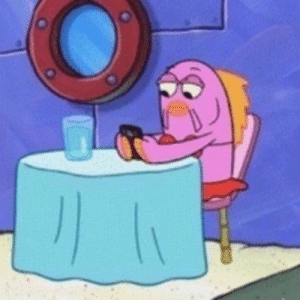
heeheeseung:
please leave the girl alone sunghoon........
PRIVATE MESSAGE FROM: sunooshine
sunooshine:
hyung
sunooshine:
there's one part i left out in the gc because i wasn't sure if i should tell jungwon
heeheeseung:
what is it sunoo?
sunooshine:
she asked me for advice
sunooshine:
on running for president against jungwon
heeheeseung:
oh
heeheeseung:
fuck

"We should just leave it alone," Heeseung had been advising Sunoo, leaning against one of the counters in the kitchen of the cafe, watching Sunoo prepare the order for the girl and her friends. He asked if he wanted any help, but poor Sunoo insisted that he could do his job the best on his own, he always swore it was hit duty to his grandmother - to perfectly run her business for her. Since he was the first out of the friend group that had arrived, they were able to talk about what Sunoo had said over text freely. "Telling Jungwon that someone, especially her, is going to run against him will just stress him out even more," he sighs, "in fact, we should probably just drop this whole thing for a while. While I'm disappointed he's not going to be the bigger person, I'm too worried about his health as his friend right now."
Sunoo had been nodding intently to his friend's words to show he was listening. He'd been pouring the final cup of coffee into it's desired glass, a satisfied exhale leaving his lips as he sets it on the tray with the rest of the order. "You're completely right," he finally expresses to Heeseung, "we need to try to help Jungwon as his friend first. But it wouldn't be a shame to talk to her, she does seem really kind."
Heeseung appears to be intrigued by his friend already speaking so highly of someone he only met one time. As nonchalantly as he could manage, his brown eyes trail across the cozily decorated cafe to land on the table she was sitting at, before they fall back on his friend. He could help but ask quizzically, "do you think she has a chance against Jungwon?"
They both knew she didn't, just like anyone else in school did. From the fact he liked her so far, Sunoo pouts a bit as he shakes his head, "well, no, of course not - but she seems really determined. I don't want to burst her bubble, but I also don't want to work against my own friend."
Heeseung let out a deep breathe as Sunoo had picked up the tray, preparing to bring it to their table. "Well, there's nothing wrong with making new friends."
Just as the tray was securely in the boy's hands, the double glass doors to the cafe had swung open dramatically. The bell above the door lets out a ding, and it was so quiet in the cafe that afternoon that it caused everyone inside to look up at the loud commotion entering - that was, except for the other loud noise source in the cafe.
The rest of the friends, minus a hard working Jungwon, eagerly poured inside the cafe. Some were still dressed in their school uniforms from likely staying late at school, and some were in their sports attire from coming back from practice. Their presence always seemed to turn heads, not that any of them paid much attention to such, except for Sunghoon.
"Oh, nice, I'm hungry!" Niki had been crying in delight, reaching for one of the large croissant's atop the tray Sunoo was holding.
Sunoo was about to have a heart attack, until Jay had slapped the boy's hand away. "That's for a customer, dumb ass, not you."
"Speaking of today's customers," Sunghoon had announced, turning away from the friend group to look around the cafe grounds. It doesn't take long for his eyes to find the people he was looking for, and he smirks to himself as if he had just acquired something amazing, "I see two possible candidates."
Not in the mood for exactly what he was thinking, a chorus of groans and sighs of disappointment echoes through out the boys.
"Don't do anything like that," Heeseung sternly snaps to him, but Sunghoon didn't seem to care much about his words.
Realizing he had been standing there holding the tray of food for far too long, Sunoo rolls his eyes at his friends now bickering with Sunghoon about how all he wanted to do was flirt with women. "I have to go give them their order," he informs them, before making his way towards the table without another word.
"I didn't think one of them would actually be a decent human being," Cherry had been thinking out loud, leaning back into the booth she sat in. Her eyes peer up at the ceiling of the cafe as she ponders further, "how weird that he would encourage you to run against his own friend."
"Not weird," Jihoon corrects her, shaking his head angrily, "it's pretty obvious, he's encouraging it because he knows you're going to get embarrassed." His usual playful and cocky demeanor was diminished as he looks to Solar, a disapproving tint in his irises, "why would you just tell that to one of the president's friends, Solar? He's obviously going to tell everyone and they're going to make it that much worse for you."
With the way he was scolding the girl, you'd think he was a parent or something of the sort. Solar didn't seem too phased by his words, though she was confused at seeing him so concerned over something that didn't seem that serious to her.
"He was nice," she shrugs, "I didn't sense anything like that from him, he seemed like a good guy, maybe all of them aren't actually that bad."
All of her friends make noises of disgust or wrinkle their noses at her words. Solar couldn't exactly blame them for doing so. All they had ever heard and assumed was that these so called 'popular' group was a bunch of assholes. It was a well known stereotype that too often pended to be true. None of them had ever seen any positives about the group, nonetheless known or interacted with them because there had never been a point to.
Now that they were learning their assumptions weren't completely true, it left them feeling sour.
"Nah," Cherry disagrees stubbornly, "no way that's true."
"He's probably fake," Hyunsuk adds, "those kinds of people are almost always fucking fake. That's why I stay the fuck away from them."
The only one who had yet to comment anything on the matter was Jaehyuk. He was the only one who actually knew any of them, and he also knew that it was pointless for him to try and speak up about how they weren't genuinely all terrible people. His friends were stubborn and set in their ways.
Solar frowned a bit, clearly not liking how bad her friends were talking about them - or more like, the only one she met. She realized then she hadn't even got his name.
"Well, I guess we're all in for a treat, huh?" Asahi breaks the insults that had been flying from everyone's mouths about how disgusting 'they' were.
"Don't be mean, guys," Junkyu had practically pleaded to them, being the only other one who wasn't openly insulting them.
No one knew what they were talking about until they looked up to see a beaming Sunoo. "Order up!" he hums, placing the tray in the middle of the table before he stands back up straight, clapping his hands together, "is there anything else I can get you guys?"
"Yeah, do you guys happen to have a pacifier for this piece of absolute -"
"- No, thank you for asking!" Solar's hand was harshly over Cherry's mouth, who had the most unimpressed expression she had ever seen on her face. When she was sure she wasn't going to continue her statement that was directed for Jihoon, she removes her hand, shaking her head in disbelief.
"Alrighty," Sunoo hums, seeming to kindly ignore the incident that just occurred, "well, it was nice to meet you, Solar. Oh, and nice to see you, Jaehyuk!"
Sunoo wouldn't mind talking to Solar and Jaehyuk more, but he was sensing more of an unfriendly vibe from the rest of them. Not wanting to cause any trouble, he decides it would be better to do another time as he spins on his heel to walk back to the counter.
Though, as soon as he turns around, he's met with the sight of his other friends who suddenly were not standing at the front counter like he'd left them. He knew that wasn't good.
Chapter Eleven
"Why hello," Sunghoon had dramatically bowed, holding out a flower he had just taken out of the vase in the middle of the table they sat at to the girl, "I'm pleased to make your acquaintance, Solar, I'm Sunghoon."
Sunoo let out a deep sigh of disappointment. Niki was struggling to hold in his laughter as he turned away from the scene to cover his mouth with a hand. Jake was standing there in shock, not knowing if he should say something or let the scene play out. Solar was sitting there in complete confusion as she peered up to the boy, before recalling that he was the one who followed her on Instagram and what her friends had called 'the literal man whore of the school.'
Before she could even figure out what to do and before Jihoon, who was the closest to her since he was right next to her, could take the flower and shove it somewhere that wouldn't be pleasant, Heeseung had stepped forward to slap the back of Sunghoon's head. "What did I tell you? You seriously have no common sense."
"What?" he defends himself, not understanding why everyone was looking at him either in disappointment or disgust, "Am I not allowed to politely introduce myself to a beautiful girl?"
Asahi, Hyunsuk, and Jihoon make gagging noises of absolute disarray. Solar's mouth is still hung open as she tries to process what was going on. She was sure many girls would be excited at this occurrence, but then again, if this guy was what she heard he was - she was sure they probably had already experienced it.
"Why don't you shove that fake flower up your fucking ass?" Cherry had called from her seat, "Step away from her or I'll do it for you."
The boy's eyes widened, not having had expected such a response. As soon as the last words leave her lips, he takes a gentle step back, nodding in acknowledgement, "hm, I see, I do like them feisty."
He's about to walk towards Cherry, who looked as if she was prepared to pick up a chair and beat him with it. She was already not fond of this guy from what she had heard, and she was not about to let him try to 'charm' her or her best friend.
But before he can, Jake grabs his arm, pulling him back to stand with the rest of them. After whispering something in his ear, he sends an apologetic smile to the group of friends, "we're so sorry, Sunghoon can't seem to help his tendencies, apparently. It's best to just ignore him."
This was not the way they wanted to meet Solar, but unfortunately, it was what was happening and all they could do was go with it.
"It's okay," Solar finally finds her words, deciding she should be the one to speak because if Jihoon or anyone else did it might not be very pretty, "I honestly thought he was joking."
The friends look to Sunghoon, who only shrugged in response, but when he felt eyes on him, he winks. It left Solar feeling even more confused as Sunoo sighs, "I'd like to think that, too. I'm sorry again, that was totally not cool."
"Calm down," Sunghoon had rolled his eyes, "you're all acting like I took my clothes off -"
"- Please keep your mouth closed," Jay snaps to him, and the boy scoffs in disbelief at the attitudes he was receiving.
"Anyway, we wanted to introduce ourselves, Sunoo said you were hoping to run for president?" Jake had asked, wanting nothing more than to change the subject from such a painful one.
"Oh, yeah," she wasn't expecting the question but didn't mind it, as the unknown boy had grabbed a chair from one of the other tables to pull it towards theirs, "I'm kind of being forced to. It's not because I think you do a bad job or anything!" she had hurriedly assured, assuming that one of them had to be the current president.
Some of them chuckled at how worried she had gotten, and eventually the group of friends were all sitting around them, joining their table. Hyunsuk and the others were visually uncomfortable, leaning in to whisper to each other about the current occurrence and what they should even do. Jihoon was watching Solar and the boys interact like a hawk, as if he was waiting for any suspicious move.
"Sorry, I have to keep taking care of the cafe, but I'll be around if you guys need anything!" Sunoo had told them, before excusing himself back to the front counter.
"Don't worry," the same boy she had been talking to shakes his head, "we didn't think that, and the current president isn't here right now, so you're okay!" His smile was calming as it beamed to her, and she felt as if he genuinely seemed like a kind person, much like Sunoo. "But it's nice to meet you, I'm Jake."
The others had all cut in to introduce themselves, until Solar felt like she was getting a head ache from trying to make sure she remembered all of their names. "It's nice to meet you guys," she nervously greets them, "I'm Solar, and these are my friends. . ." she introduces her friends herself because she had a feeling they wouldn't do it otherwise, "oh, and Jaehyuk, I think you guys already know him."
"Jaehyuk!" Heeseung calls to him cheerily, "hey, I didn't see you back there!"
Jaehyuk grins to him as he rises from his seat to bring it closer to where they were all chatting, "it's convenient to see you, actually, I wanted to ask if you could give these papers that Jungwon gave me during the meeting back to him," he's saying, pulling a stack out of his backpack, "I looked over them, and I added some ideas I think would work well. I'm hoping to know what he thinks as soon as possible, tell him he can text me if he has any comments."
Heeseung nods in understanding as he takes the papers from his hands, slipping them into his own book bag, "oh, you're fast! I'll do that, no problem, I'm probably going to go by Jungwon's later today, anyway."
Before she knew it, Jaehyuk got caught up in a conversation with his fellow council members about the upcoming plans. Meanwhile, Solar had been talking to Jay and Niki, whom of which she learned were both star athletes and very different. She found herself finding them funny as she spoke to them, which was something she didn't think would ever happen if she interacted with someone like them.
But she was finding that Jaehyuk was right, they really all weren't bad. Even Sunghoon, despite being a complete insufferable flirt, was actually nice to talk to if you could get past the flirting and cockiness.
The time began to fly by when she was talking to them. It took a lot to get to know someone, and she was already feeling like she could talk to them for hours. She was actually casually talking to the most popular kids in her school right now, kids that she didn't even know until approximately thirty minutes ago.
They were even giving her kind advice on how to create a good campaign. She would have never guessed members of the current council who were best friends with the current president would so nicely give her advice. Though, she figured part of it might be because of what Jihoon said, she couldn't really blame them. She still didn't think they had any ill intent, they just weren't going to tell her they knew she would lose.
"Sol, we're going back to my house," Cherry had poked the back of her head to grab her attention, "you can come by if you're done sucking up to these wenches." Her words were harsh, and it caught the boys she was talking to off guard as they peer at the girl in shock.
Solar frowns as she realizes her friends seemed a little upset with her almost, except for Junkyu, who had nicely assured her that he would see her later before following everyone else out of the cafe. The only one's out of her friend group that were left was her, Jaehyuk, and a burning Jihoon that was still sat behind her. He would be damned if he left her alone with these people, even if Jaehyuk was here.
"Sorry, ignore her," she had apologized to them, "she's not very um. . . fond of you guys."
"We can't really blame her," Jay shrugged, "especially after the first impression we made thanks to this fucking dumb ass."
Sunghoon rolls his eyes.
But she hadn't even gotten to speak to them much more when a certain someone sitting behind her had grabbed her hand, pulling her out of her seat. Her eyes are full of questions as she looks up at Jihoon, who looked madder than she'd seen him in a long time. She sends the boys she had been speaking to an apologetic smile as she'd dragged away in a rush by the boy.
The wind is cold as it hits her skin once they step outside the cafe, goosebumps spreading over her skin. Only then did he let her hand go now that they were in the safety of the outside world, turning to face her as his brown hair is made a mess atop his head from the angry weather. Though the blazing wind wasn't as fiery at his expression as he glares down at her.
"Jihoon, what's your problem?!" she's asking in dismay, rubbing the hand he'd held in discomfort. He'd gripped her hand so hard she was genuinely surprised it hadn't broken off.
"Are you really believing any of the bullshit they're spewing?!" he cries to her in annoyance, his voice booming through her eardrums even with the raging wind, "those are the fakest people I've ever seen, they're making a fool of you, Solar!"
"How do you know that?" she shakes her head at him, clearly displeased, but yet doesn't raise her voice like he is, "you don't know them, Jihoon, don't immediately jump to assumptions."
"We've all heard about them," he snaps, "don't act like you know them, either."
Chapter Twelve
"Hey, are you okay?" the cafe bell had let out another ding as someone exited it, calling out to her. Solar was standing there, trying to process what had just happened to her as she watched Jihoon's car speed off down the road. He really left her there, which wasn't a dire problem since she had Jaehyuk, but she was just so confused at how upset he'd gotten. She hadn't had a fight with any of her friends for as long as she could remember, and now they're all gonna be upset with her because she was becoming friends with the popular kids at their school?
The fact that Jihoon of all people had yelled at her had her feeling out of place. As hard as she was trying not to, tears were welling up in her eyes. Shaking her head, she turns back to face Heeseung, who was now standing a few feet away from her and looking at her in concern.
"Sorry, I'm okay," she assures him with a soft smile, "he's a little upset because he doesn't trust you guys."
"Oh, gosh, I'm sorry," he pauses, trying to think of what to say, "I understand he's probably heard some unpleasant rumors, but I promise we really don't have any bad intent," he slowly explains, "Sunoo told us that you were looking to run for president and that you seemed really nice, so we wanted to meet you. It's rare for Sunoo to say that about people."
There was a big piece of the pie he was leaving out, but it was probably better for her to not know that.
Though, they weren't sure what would happen when she did meet the boy she would be running against.

new post
chxrry
 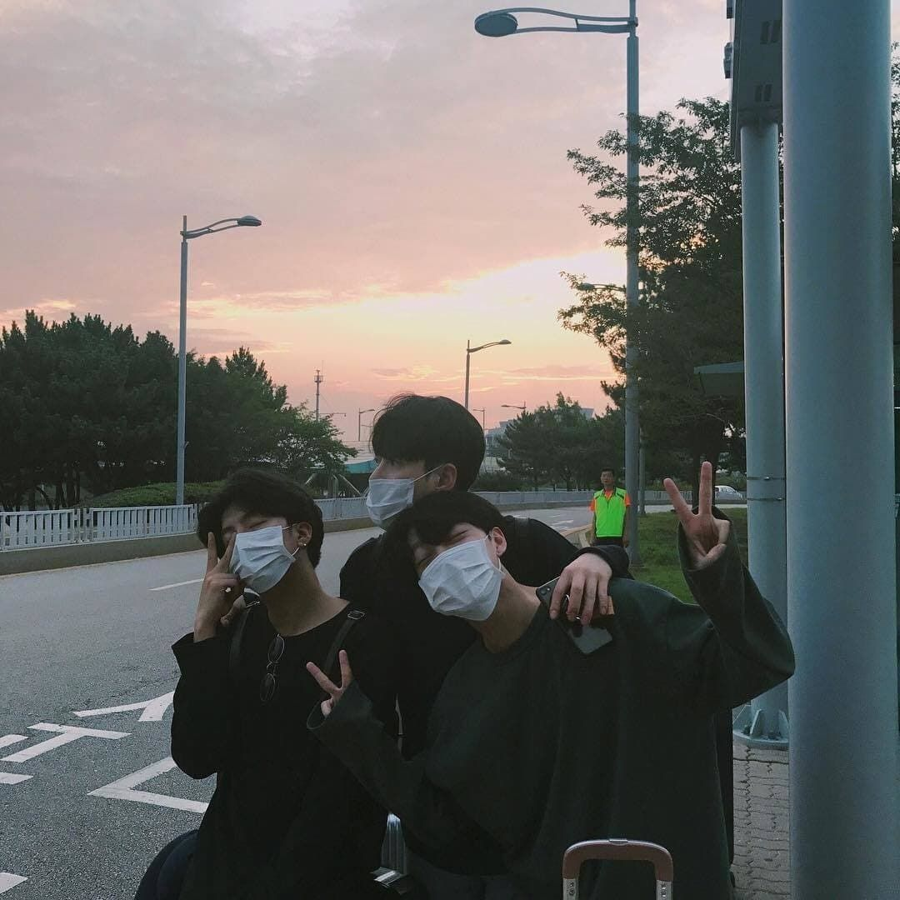
chxrry: the REALEST ones out there @sunhyuk @junkyuuu @asahihi
jaehyuk__: you guys really...
sunhyuk: i was the first @ everyone HA
jihoonie: @sunhyuk be less obvious ❤
sunhyuk: @jihoonie lmfao stfu sour puss
chxrry: @jaehyuk__ really what, jaehyuk!!! :)
5 new followers
sunshinesunoo
parkjay
rikiniki
heeeseung
jakeyy
new post
solarkim
 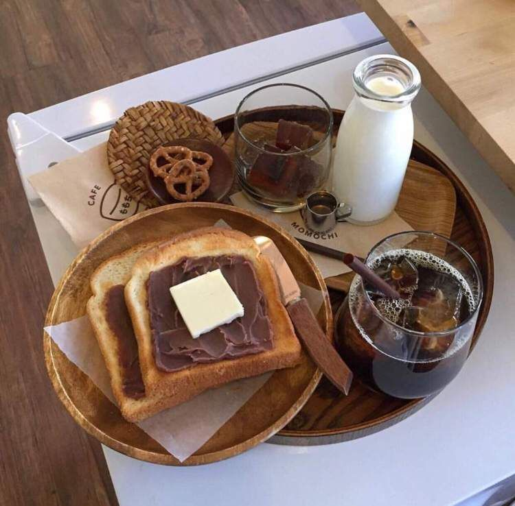
solarkim: met the coolest food and new friends today at yeobo's cafe!!! ~.~
sunshinesunoo: thank you for the advertising!!!! it was great meeting you!!
rikiniki: this pic makes the food look way better than it is
princesunghoon: it was ESPECIALLY my pleasure meeting you ;)
parkjay: @princesunghoon dude pack it up already
jakeyy: fighting solar!!!
solarkim: @sunshinesunoo you're welcome!! deserved for the yummy food
solarkim: @rikiniki hey it's actually so good though!!!!!!
new post
jungwongarden
 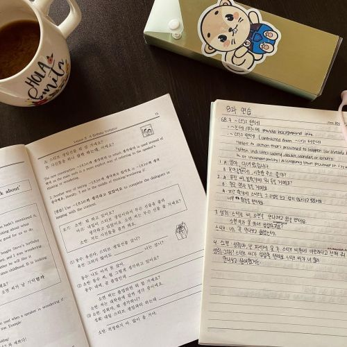
jungwongarden: almost done with the provided study for the math comp . . .
rikiniki: hope u lose
parkjay: @rikiniki FEARLESS ???
jakeyy: @rikiniki don't say that you'll jinx it!
heeeseung: good luck jungwon! if you need any help just dm me, srsly
sunshinesunoo: go president, you got this!!
sunshinesunoo: stay hydrated!!!!!
Chapter Thirteen
new post
solarkim
 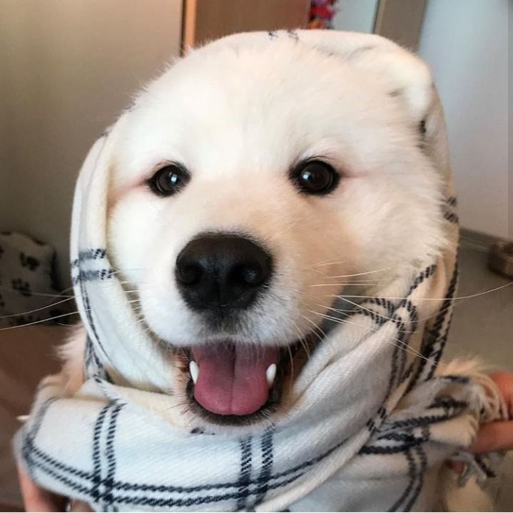
solarkim: the only thing that's making me feel better recently :( i'm so NERVOUS!!!!
junkyuuu: text me sol!! i can happily come over if u need me!!
jaehyuk__: you got this, no sweat, solar. just remember what we practiced!
solarkim: @jaehyuk__ I KNOWW AHH but i always forget things when i'm nervous
sunshinesunoo: you'll do great! it's just a short welcoming speech!
jakeyy: FIGHTING! and your dog is SO CUTE! our dogs should meet sometime!!
rikiniki: wait THIS is the dog...
solarkim: @sunshinesunoo @jakeyy THANK YOU GUYS FOR ALL THE HELP
solarkim: @rikiniki whut?
heeeseung: @rikiniki you're on your last straw, niki
JUNGWON IS MEAN
rikiniki:

rikiniki:
THATS THE DOG MAN???
rikiniki:
SO SCARY WOW
heeheeseung:
niki, last straw
heeheeseung:
i am asking you as kindly as possible, be quiet
jbird:
he's trying to say shut the fuck up
jbird:
fucking idiot
jakeyy:
come on, niki
jakeyy:
he is very cute though
jakeyy:
i can just tell him and layla would be best friends
heeheeseung:
honestly, really not the point right now
rikiniki:
damn, ok, nice to know u got sumn stuck up ur ass
injangwon:
what is going on this time
princehoon:
 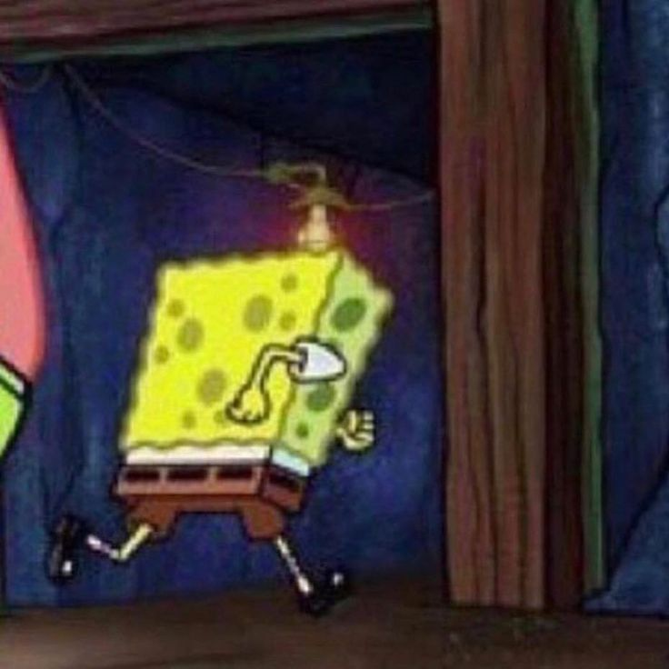
jbird:
naw take me too
heeheeseung:
nothing niki is just being dumb
jakeyy:
we're just talking about someone's dog we saw at the cafe
jakeyy:
he was the cutest thing ever
rikiniki:
yeah u rly missed out hyung
rikiniki:
LMAO
sunooshine:
hey niki, cut it out already
sunooshine:
thank you :)
injangwon:
ok i guess
injangwon:
you guys are just being weird so i'm going to keep working on my welcoming speech
heeheeseung:
did you ever eat dinner? do i need to come by and bring food again?
heeheeseung:
if so it's ok, i don't mind
heeheeseung:
i just want to make sure you're not gonna faint again
sunooshine:
yeah please eat and stay hydrated, jungwon. we worry about you doing that to yourself.
injangwon:
i'm fine
injangwon:
i have to finish my speech
injangwon:
talk later guys
rikiniki:
hey guys i think that was basically a no
jbird:
no fucking shit
PRIVATE MESSAGE FROM
solarkim
solarsystem:
hey sunoo sorry to bother u so late again
solarsystem:
i'm just kinda thinking a lot and idk if its rly a good idea for me to run
solarsystem:
i rly appreciate u and jake helping me out but i know the current pres is u guys friend and i dont want to seem like im overstepping and trying to say hes a bad pres
solarsystem:
plus its been rly cool getting to know u guys so i dont wanna offend anybody
solarsystem:
sorry for all the msgs, but i could just tell my parents i missed the sign up window or something
sunooshine:
hey solar its ok! i am always here to talk!
sunooshine:
you're thinking way too hard, you should totally go for it. whether you win or not, creating a campaign and everything is a great learning experience
sunooshine:
i promise it doesn't seem like that at all, the current pres is our best friend but to be honest with you i think it might be good for him to step down
sunooshine:
i'd never tell him that though, he just overworks himself too much with everything else he's already doing. so him being the pres for so long on top of that is really hard on him
sunooshine:
he barely eats anymore and he's fainted multiple times
sunooshine:
so as his friend and yours i think you should run for pres, solar
solarsystem:
oh wow im so sorry to hear that that sounds terrible
solarsystem:
i know being the pres takes a lot of work too
solarsystem:
im not sure if i would be able to handle it
sunooshine:
dont worry, you do have the other council members to help with the weight load
sunooshine:
the problem is just that he refuses to let us help him
solarsystem:
oh gosh i hope he's ok
solarsystem:
i wish the best for him!!
sunooshine:
yeah me too! :(
Chapter Fourteen
Nerves were all Solar had felt that morning.
Gripping her textbooks in her arms as if they were a prized possession, she closes her locker with a deep sigh. She still hadn't spoken to any of her friends today other than Jaehyuk and Junkyu, who had been happily at her side to try and help ease her current fear for the events coming up that day. The two had assured her that her friends would come around, they were just momentarily upset because they worried about her being involved with people they didn't trust.
Really, she couldn't blame them. She knew they wouldn't hate her for something like that. It was just a casual occurrence of pettiness that wasn't unusual. That was, except for Jihoon.
"Stop worrying, Sol!" Junkyu had cried out to her as she was turning away from her locker. He pats her back soothingly as he frowns, "if you keep looking like that, you'll get wrinkles!"
"I'm not sure if that's something she needs to hear right now," Jaehyuk blankly retorts to the innocent boy, who hadn't seemed to understand his words. Solar hadn't said a word, and instead begins making her way down the school hallway to the last class she had before the assembly started and she would be announced as someone running for president and have to give a horrifying welcoming speech.
The two boys jog to catch up to her speed walking. "Hey, Sol, just keep rereading that paper, alright? If you start to panic during your speech, just look at me." Jaehyuk was always good at easing people's nerves, but even then, she still felt like she was bound to pass out.
"You'll do great!" Junkyu cheers from her other side.
"Thanks, guys," she sighs as they finally reach the door of her class, "I'll see you at the assembly." The two friends send her big smiles and thumbs up before waving to her as she disappears into the classroom.
Once she was gone and they were left in the bustling school hall, the two turn to each other with worried expressions. Them and Cherry were the only ones who knew of the issue at hand, and they weren't sure what to do about it - or if they should do anything.
"Do you think something bad will happen?" Junkyu asks Jaehyuk, who appeared to be deep in thought.
After a moment of contemplation, he shrugs, exhaling deeply, "No, I'm sure it'll be fine. It's not like they're going to physically beat each other up on the stage."
But the innocent boy didn't appear too convinced. He knew Solar was not a fan of the mystery boy she had ran into that day that insulted her and her beloved Nana. When she realized it was the current president that she was running against, he wouldn't be surprised if she had a rather strong reaction.
Still, Jaehyuk knew best, and he wasn't going to argue. "I hope you're right," is all he says, "and I hope the rest of our dumb friends come to their senses. It's not right to be mad at her over making new friends, they should be happy!"
"They just don't trust them," Jaehyuk explains blankly, "you know how they are. It's why I never bothered to say much about them despite knowing them for so long myself since we're all council members."
There's a pout on Junkyu's face as the two walk away down the hall to their own classes. He hated everything that was going on. Why couldn't they just go back to normal?

One problem had arose before the assembly, one that Solar was too nervous to even think about, until she had walked in the classroom to face it.
Hyunsuk, Asahi, and Cherry were in this class with her. She forgot they all had this class together, and she was faced with a feeling of defeat as she entered to see them already there, sitting in their usual seats at the very back of the classroom. Cherry was sat by Hyunsuk, and Asahi was next to him. She'd usually sit next to Cherry since they were her friends - despite how difficult they made it to concentrate because none of them cared about class.
Now she wasn't sure if she had that option. To be fair, she was afraid to. She hadn't heard a word from any of them since that day at the cafe, and she hadn't had the courage to reach out. If they were mad at her, she hoped they would eventually get over it.
"Come sit, dumb ass, no one's mad at you."
She jumps at the sight of her best friend standing right before her. Blinking in confusion, Solar tries to make sense of the fact she had not seen her move from her seat in the first place.
Before she could even respond, Cherry rolls her eyes, grabbing onto the girls hand and dragging her to the back of the class. She takes Solar's books from her hands, setting them down for her at her usual seat. Solar still hadn't found words to even say due from the momentary state of shock she was in as she fell into her usual seat, feeling as confused as ever.
"Aren't you mad though?" she finally blinks.
"No," Cherry deadpans, "I just care about you, and I don't want you to get hurt by some fucking idiots. I will not hesitate to kill all of them, starting with that literal pathetic excuse of a man whore."
"I've never felt as much second hand embarrassment as I did when that man opened his mouth," Asahi had sighed from his seat, shaking his head in disbelief.
"He thought he was smooth, too," Hyunsuk wrinkles his nose in disgust, "I was about to get out of my seat and break his nose when he tried to come talk to Cherry - I swear to God."
"Oh, yeah, right," Cherry snorts, "you're not breaking anyone's nose."
Solar was confused as she watched the interaction between them. Cherry hadn't even looked to Hyunsuk when she said that, so she hadn't seen the way he pouted a bit from her words. But Solar did, and took great note of it.
"Anyway, you have a big day, huh?" Cherry slaps her back, changing the subject to something that was of importance, "how you feeling?"
She couldn't lie, she felt better now that she knew all of her friends weren't mad - all except for Jihoon. But that didn't mean her anxiety for the day ahead was any better, as she buries her face in her hands, "awful, I feel fucking awful."
Chapter Fifteen
new post
jungwongarden
 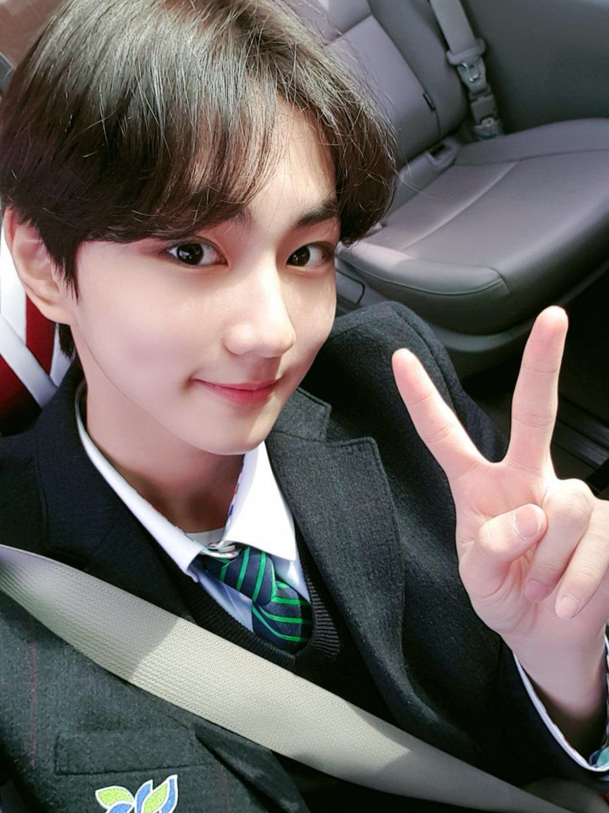
jungwongarden: school assembly today at 2PM, everyone please attend for my welcoming campaign speech! remember to vote for me as president this semester, i'll happily keep working to please everyone on campus! thank you:)
parkjay: man never looks this happy irl
rikiniki: @parkjay true so fake #notmypresident
rikiniki: i'm voting for the opposition
heeeseung: @rikiniki i'm literally going to kill you.
jakeyy: wooo go pres! get that reelection! ignore niki, he's stupid
princesunghoon: we're all rooting for you. sort of. ig
jungwongarden: @rikiniki ??? what are you talking about anymore
new post
solarkim
 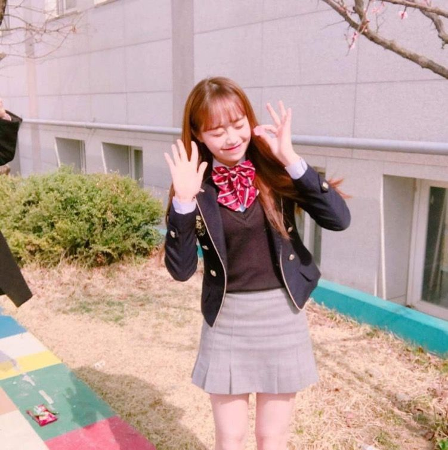
solarkim: before the assembly, wish me lucky everyone there is a 55% chance i pass out on stage!
chxrry: LETS FUCKING GOOOO BITCHGFOSF FUCK THOSE LOSERS
chxrry: worthless ass mfs dont deserve shit
chxrry: OH PHOTO CREDS @ METHO
sukhyun: knock em out solar
jaehyuk__: JUST LIKE YOU PRACTICED!
junkyuuu: yay everyone made up again?!??! FIGHTINGGG SOL!!!! :D
sunshinesunoo: good luck solar:)!
jakeyy: you got this!! cheering you on!
asahihi: can u pass out tho it would be so funny
chxrry: @asahihi stfu

"Have you guys seen Jihoon?" Solar found herself asking her friends as they were making their way down the hall to the school gym for the assembly. It was a weird thing for her to be thinking about when she was about to have to give a speech in front of the entire school, but she couldn't help but be curious.
Jihoon always was walking with them, he was always tied to her hip like a bad allergy. As much as they played around, she missed having him beside her all the time, even with his painfully sarcastic remarks every three seconds.
"Nope," Cherry is the first to respond, wrapping an arm around her shoulders as they walk, "it's nice, isn't it? No sarcastic fuck wad to retort things no one cares about."
Solar frowns at her words due to the fact they weren't what she was looking to hear. How was he going to stay mad at her when he knew what was coming up today? More so, how was he going to just not show up? She didn't understand how he could just be MIA from school over something like this, unless he was suddenly sick.
The group finally reaches the main hall that leads into the gym, when a certain few people catch their eye, who were also making their way into the gym.
"Oh, hey Solar!" Jake calls to her, slowing down his pace so he could stop to talk to her, "cheer up, I can tell you're dying of nervousness!"
Solar pouts, "is it that obvious?"
"Trust me, you'll feel anything but nerves once you get up there," Niki cuts in, earning an annoyed look from his friends. She noticed Sunoo and Heeseung were missing, and figured they must be with their friend that was the current president, helping him prepare for his own speech. Thinking about that made her grip her paper with her own speech written on it tighter in her hands.
"I'm not sure what that means," she blinks to the youngest boy, but sends him a smile anyway, "but thanks, Niki. I'll see you guys around."
With that, they all make their way into the gym, with her friends sending glares to the group of boys she had just spoken to. Luckily, this time, they hadn't bothered to make any rude remarks, likely for her sake.
It wasn't long until all of them had taken their seats in the loud gym. Plastic chairs were scattered everywhere to seat the hundreds of students, and Solar felt nauseous as she let her eyes rake over all of them. The noise of chatters and screaming weren't helping, either, and she found herself wanting to disappear into the floor as she realized what she was really doing.
"Stop looking like that," Cherry snaps from beside her, "you're making me feel sick."
"I can't help it!" she cries defensively, "I've never done anything like this before!"
"You'll do great," Jaehyuk assures her for the 100th time that day, "remember, if you start to get nervous, just look at me and follow my lead."
"And don't knee anyone in the balls," Cherry cuts in, "even if you really want to. I promise I'll do that for you later."
She didn't catch the glare that Jaehyuk sent Cherry, nor did she get to respond to the weird comment, because the principal had stepped onto the stage, clearing his throat into the microphone.
"Good afternoon, students of Hanlim Highschool, this month's assembly is for a very exciting time on campus - the election of our council president."
An eruption of claps sound through the gym.
"Like every other semester, I will introduce and call our candidates to the stage, and they'll give you all a welcoming speech to their campaign and what they aspire to do for you and our school as president. So, without further ado, I will now announce this semester's running candidates."
She was going to puke, there was no denying it.
"Solar Kim and Yang Jungwon please come to the stage."
Chapter Sixteen
When she felt like she was glued to her seat, Cherry had harshly elbowed her, earning a screech as she had been lost in her own head. Only then did she realize how many students were staring at her in surprise, whispering to each other as they realized that someone was actually running against the current president. Others were busy cheering for the boy named Jungwon, whom she had known of but only due to his friends speaking of him. She found herself feeling bad as she recalled how popular he was in their school, and how she was never going to actually win against him.
She couldn't blame them for liking him. From what she heard from Sunoo, he worked hard.
The girl was too scared to lift her head as she walked to the stage. Her body was shaking as she watched her own feet go up the side steps, before she was standing directly beside the principal. She could feel the presence of the current president, and other candidate, on the other side of him, but she didn't have the guts to look up to meet his eyes.
Just calm down, everything is okay, she assures herself. The principal continued to speak into the mic, likely introducing them based off what they had wrote on the papers they had to turn into the office, but she didn't hear a word. Finally easing her nerves enough to look up, her eyes find her friend group.
As soon as they land on her friends, all of them cheer out loudly, despite the fact the principal was in the middle of talking. Cherry makes a heart with her hands, and Junkyu blows her a kiss. Jaehyuk sends her two thumbs up, mouthing the words you got this. Her friends idiocy, while embarrassing, managed to ease her anxiety.
That was, until she saw something else at the very back of the assembly seats. It took her a moment to realize and believe that she was seeing right.
But there was no denying who it was, it was none other than Park Jihoon. Park Jihoon sitting in the middle of a group of girls.
Her mouth fell open at the sight, and as soon as she realizes she was gawking in shock in front of the entire school, she hurriedly closes it. Regaining her composure, she rips her eyes away from the sight of giggling girls next to him, trying to comprehend what the hell she just witnessed.
In all her years of knowing Jihoon, which was since preschool, she had never seen him care about any girl before. He never even mentioned liking a girl period, which was a little suspicious. Anytime you'd ask him about it, he'd shrug it off with a "I have better things to do than waste my life away on a relationship, I'm already dating myself" or something similar. But despite this, he never cared enough to do something most high school boys did - which was hook up with girls and flirt with ones he didn't even know.
But seeing him then, it looked like that was exactly what was going on. She was confused, and even sad, that he would do something like that on a day that was so important to her. Wasn't he supposed to be her best friend?
Why would he do something like that all over her making new friends with the popular kids?
"Now, could the presidential candidates please exchange a hand of greeting and word of good luck before your welcoming speeches?"
She hadn't expected to hear those words, and they'd snapped her back into reality. Her eyes are wide with surprise as she looks to the principal. Solar realized she hadn't known that they had to do this because she was the first person that had ever bothered to run against the current president.
Swallowing the lump in her throat, she watches as the principal step back to allow the two to face each other. Only then did she see what the president, Jungwon, looked like - and only then did she realize exactly who he was.
"What?!" she accidentally blurted, so loud that it was picked up slightly from the microphone they were standing by. Realizing what she said and that to the students, it probably looked rude, she hurriedly cleared he throat, brushing it off.
It's okay, it's okay, she tells herself, you have to stay cool. But she was more confused than ever. How could the current president, the best friend of her newfound friends, the boy she heard them speak so highly of, be the complete jerk wad from that morning? The same asshole that yelled at her and insulted Nana? That couldn't be true.
She realized that his friends and her friends probably had no idea as far as she knew. The best thing she could do in such a situation was shake it off and pretend, even though she wanted nothing more than to punch him in the face.
Jungwon is holding out his hand to her, and she ignored the urge to puke as she looked down at it. Before she changed her mind, she takes his hand, bowing to him as he did the same.
There was a look of surprise buried in his eyes, she could see it. He hadn't expected anyone to run against him, nonetheless for it to be the girl from that morning. The same girl that his friends had begged for him to apologize to, until they had finally abruptly let it go that day they all hung out at the cafe without him. The more he thought about it, the more he put the puzzle pieces together, and the more he realized why Niki had kept making those comments.
His friends already knew.
Jungwon wasn't sure if he should be mad or just shocked. Either way, he had no time to focus on something like that due to the fact he had a speech to give, one he worked very hard on. Now that he actually had opposition, he couldn't slack. He had to recall every word like he practiced, and that he would do.
He'd be damned if he let this girl beat him, the same girl that nearly got Maeumi hurt.
Chapter Seventeen
"Like every other semester, I am fully prepared to continue helping our school in anyway I can. I hope to show you through the upcoming homecoming dance that the experiences of each student is important to me. I hope for your continued support through my campaign to help me so that I can in turn help you, thank you so much, everyone!"
Solar thought his speech would never end. She admired his hard working attitude, and she didn't blame anyone like Sunoo for what his friend had done to her. More than anything, she found herself wondering if he was putting on a façade, or if she had apparently just really offended him that day to deserve the kind of treatment she received.
Jungwon didn't even bother to make eye contact with her again as he stepped back to the side of the stage after bowing to the crowd of students. The principal had motioned for her to come forward to give her own welcoming speech, and as soon as she realized, she found herself growing nauseous all over again.
You're fine, she tells herself harshly, you'll show this asshole.
So, stepping forward, she lowered the mic a bit to the right height for her. With a deep breath, she began the speech that Sunoo, Jake, and Jaehyuk helped her practice for days on end.

Solar had been in the middle of her speech when Cherry saw it. She had been happily cheering for her best friend, but a part of her couldn't stop thinking about what had freaked Solar out so much earlier - prior to her realizing who Jungwon was. As funny as the moment of them meeting had been, and as much as she wanted to personally slaughter Jungwon, she was curious about that look of shock.
It was when Asahi had poked her arm, furiously motioning to look behind them. She hadn't understood what the fuck it could possibly be, only until she turned around.
And when she saw what he was motioning to, she was not happy.
Hyunsuk had seen the commotion, or more like he saw the rage that filled her expression like a wildfire, and followed their gazes. As soon as his eyes land on Jihoon, they bulged out of their sockets. Looking back to Cherry, she was already picking up her bag to likely get up and go confront Jihoon. He knew that wouldn't be pretty.
Knowing that she was going to immediately resort to violence, he grabs her hand before she could rise to her feet. The action catches her off guard, as her eyes wander to the boy in confusion and annoyance from the fact he was preventing her from doing what she swore she had to do.
"Let me talk to him, okay?" he pleads with her softly.
She was about to instantly deny his request, only until she saw the soft look in his irises. Pursing her lips, she found herself giving into the boy she hadn't expected to give into, heaving out a sigh as she leans back into the plastic chair. "Fine, okay," she sighs, "but if he makes any sort of rude comment knock his fucking teeth out of his mouth."
Hyunsuk shakes his head, giggling to himself at how unbelievable she was. He was awestruck every single time. "I'm not promising I'll do that," is all he says, hurriedly rising to his feet before she could see the giddy smile that was on his face.
To be fair, Hyunsuk wasn't happy either. He was probably the most confused out of all of them, because he knew things about Jihoon that none of the others did.
"Hey," he calls out to the boy, standing behind him, "we need to talk, man."
Jihoon turns to face his friend, who looked a mixture of disappointed and annoyed. Not wanting to start anything in the middle of an assembly and already having a good feeling as to what it was about, he excuses himself before rising to his feet to follow Hyunsuk into the hallway.
As soon as the double doors close behind the two boys, Hyunsuk had let out a deep exhale, before spinning on his heel to face Jihoon, blurting the words, "what the fuck is up with you, dude?"
"Do we really have to talk about this here?"
"Yes, because for someone who's constantly prided themselves off being Solar's 'best friend,' you're being a real fucking shitty one."
"It's not about that."
"Yeah, I know what it's about Jihoon," Hyunsuk snaps, almost offended he would think he didn't know the truth, "but do you think Solar knows that? You're her best friend, she relies on you more than anyone else, and you haven't been there when she needs you the most. You know she saw you, how do you think that made her feel?"
Jihoon's mouth is wide open as if he was lost in a trance. His mind was full of clouds as he shakes his head, his dark hair falling in his face as his voice is a mutter, "It's not like she's bothered the way I was."
He didn't have to say more. Hyunsuk knew exactly what he was talking about.
"I get it, Jihoon, you know I get it," he sighs, stepping forward to put his hands on his shoulders. There's a pained look in Jihoon's eyes when they look up to meet Hyunsuk's, "but don't let that ruin what's more important - your friendship."
Chapter Eighteen
"So you guys didn't think it was important to tell me that you're all friends with the girl who tried to kill Maeumi and is running against me for president?!"
The friends all exchange glances as Jungwon had glared at them from his stance. His eyes were full of rage, so much so he had no idea how much he was overreacting. Still, they were unsure what to say to him in such a state.
"Look, Jungwon, it's not that serious," Jay is the first to sigh.
"I know for a fact that dog of hers would not be capable of killing anything," Niki rolls his eyes as he leans against the wall outside of the gym, "not even your tiny rat of an animal."
The youngest remarks sadly tended to be terribly timed. Right then was indeed a terrible time, as Sunoo had scoffed in disbelief and Heeseung slaps his arm rather hard in annoyance. His words only annoyed Jungwon even further, as he squeezed his hands into fists at his sides, trying to contain how upset he was feeling. This was a total betrayal to him.
"Really, Jungwon, I met her at the café, and she was really sweet," Sunoo finally explains kindheartedly, "she didn't know who you were up until right now, in fact. We just became friends with her because we genuinely liked her as a person, I've talked to her a lot and I promise you she never had any intent of allowing her dog to hurt Maeumi. You should really calm down and think rationally, okay?"
"That doesn't assess the fact you all knew she was planning to run against me and none of you thought to tell me?!" he cries, waving his hands dramatically in the air as if this was the most obvious thing ever.
"Well," Sunghoon deadpans, "look at you, man. You really need some women in your life."
"No, I need my closest friends to be fucking honest!"
"Jungwon, telling you would've made it that much worse for you," Heeseung cuts in before the situation could get any worse. Since the assembly was over, students were pouring out of the gym and making their way past them. A lot of them appeared confused as the sight of the president so distressed. It was likely they had never seen him in such a state since Jungwon managed to be composed most of the time. "You're barely taking care of yourself as it is, none of us want to cause you more stress. You know you have the highest chance of winning either way."

new post
solarkim
 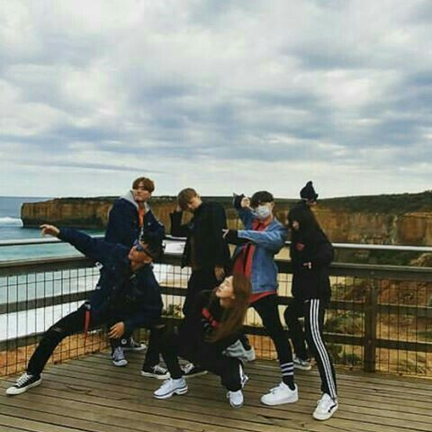
solarkim: I DID IT EVERYONE! appreciation post because i couldn't have done it without you guys, i love u ALLLLL SO MUCH!!!!! @chxrry @asahihi @jaehyuk__ @junkyuuu @sukhyun
chxrry: GOOD JOB HOTTIE beat that ugly stank of a current president, all he is is FUCKING FAKE
junkyuuu: YAYYY GO SOLAR!! OUR SOLAR CAN DO ANYTHING SHE PUTS HER MIND TO! WE LOVE YOU!
rikiniki: @chxrry true
asahihi: disappointed u didnt pass out tho but seeing the look on ur face when u realized who the current pres was was just as good
asahihi: still stuck on that tho bc wtf
jaehyuk__: you did great
sukhyun: this pic is so old tho WOOWNPD
sukhyun: @asahihi right, same... but not surprised hes fake, like who wouldve thought
chxrry: @rikiniki dawg who the fk r u
Chapter Nineteen
PARK JIHOON HATE CLUB
junkyute:
sol did u tell ur parents about ur amazing speech?!??
cherryblossoms:
yeah they outta be fucking happy bc ur ass showed them
cherryblossoms:
looking all professional and shit
jaehyukkie:
honestly, despite jungwon's popularity, i think some students really like what you have to offer
jaehyukkie:
they're probably bored of the idea of having the same pres until they graduate
asanoonecares:
or they pity you
cherryblossoms:
zip it wanna be kellin quinn
asanoonecares:
?????????????????????????????????????????????????????
geniusuk:
did she stutter?
asanoonecares:
bitch what
solarsystem:
i did talk to them, they're happy about it i guess
solarsystem:
works for me though because now they'll leave me alone at least for a while until the election is over
solarsystem:
after today i think i really would like to win
cherryblossoms:
that kid is lucky i didnt see him after the assembly or i wouldve personally broken his balls in half
asanoonecares:
that put the absolute worst but hilarious image in my head, thank you
geniusuk:
bro why ru so weird
asanoonecares:
why are u such a suck ass
geniusuk:
ok man. . . . .
junkyute:
i wonder what his problem even was with you
junkyute:
everyone speaks so highly of him yet he treated you like that! it makes no sense
geniusuk:
it's called being a fake piece of shit. it makes perfect sense
cherryblossoms:
aw hyunsuk always knows right
asanoonecares:

solarsystem:
idk it makes me kind of sad i genuinely felt really bad for running against sunoo and everyones friend because sunoo spoke so highly of him like wow he works so hard and tries his best for everybody
solarsystem:
and i was like fuck i dont want to seem like a bitch walking up like hey ur a shit pres its my turn or something
solarsystem:
and i already wasnt feeling well because of . . . yeah
solarsystem:
and then i look up and see its that fucking guy, like how can he be the one sunoo was talking about?? he treated me like literal trash over the smallest thing
solarsystem:
then again maybe its not even a huge deal bec it was like 6 in the morning and im sure he was super tired and grumpy bec i get grumpy in the morning too
solarsystem:
but like it still feels weird
geniusuk:
yeah because it is a big deal
cherryblossoms:
yeah nah no excuse he is a piece of shit
cherryblossoms:
of course his piece of shit friends tried to tell you he was not a piece of shit
cherryblossoms:
he just let his true side show LMAO
junkyute:
for the record i do not think solar's new friends are fake, they seem very kind!!!!!
jaehyukkie:
they really aren't that bad.
solarsystem:
yall hear me out i have spent a lot of time with them and they are cool ppl
solarsystem:
im not a complete idiot i can sense if people are fake, you guys just have to stop being so hard headed
solarsystem:
but with this jungwon guy, idk, he just seems like a fucking cunt
solarsystem:
fuck him
cherryblossoms:
bitch u aint catching me giving no flower boy mfs no chance
geniusuk:
i wouldnt let u either way
asanoonecares:
caught in 4k hyunsuk
asanoonecares:
 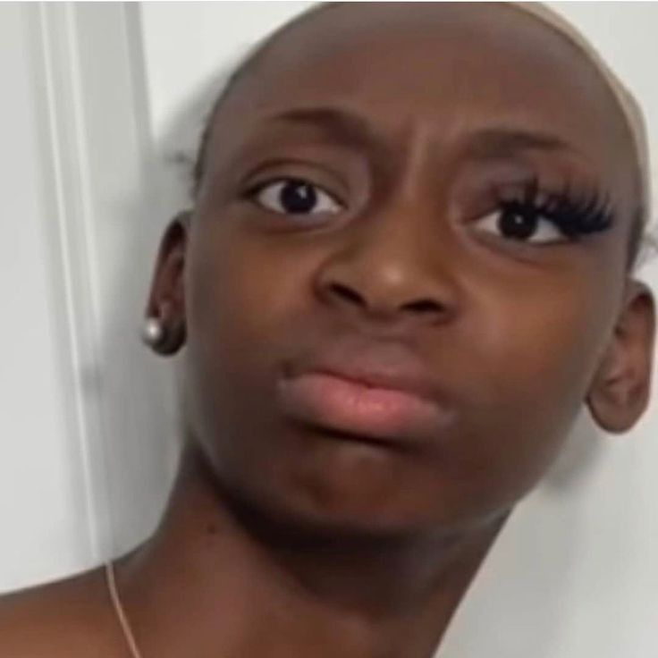

A sigh left the lips of the current student council president as he set his pencil down onto the desk he sat at, burying his face in his hands as he squeezed his eyes shut for a moment. Those few seconds were his rest, as he exhales, picking up the pencil to get back to work.
It was a late night, no doubt, but he didn't have time to worry about something like sleep. His math competition was tomorrow, and he couldn't seem to feel as ready as he wanted to feel.
The truth of the matter was that he had been a little lost in his thoughts since the assembly and his argument with his friends. Despite how much they kept texting in the group chat, he just didn't have time nor care to reply. They could think he was overreacting all they wanted, but he had a right to be annoyed.
They all pestered him so much about some girl he didn't even know for absolutely no reason, all for them to become friends with her. To be truthful, he found it weird. He didn't think she was any different from any other girl. Why did they feel the need to become friends with the exact girl he apparently "treated so terribly?"
Heaving out another impatient sigh, he shook the thought out of his head. He didn't have anymore time to waste thinking about someone he didn't even know. Whether it was intentional or not, she was now his competitor, and even if his chances were basically guaranteed, he was not going to slack off. The only problem was the fact he had to get this math competition out of the way first.
But just as he picks up his pencil, the sound of a doorbell going off downstairs rings through his ears.
Cursing under his breath, he knew it had to be at least one of his friends. If he didn't answer it, they would just keep ringing it, he knew that from experience.
So without checking his phone, he rises to his feet. As soon as he's standing, though, he finds himself stumbling. Jungwon catches the side of his desk before he could actually fall, holding a hand to his head as he squeezes his eyes shut to stop the dizziness from taking over his vision completely.
I'm fine, you're fine, he sternly reminds himself, letting out a deep breathe before he exits his room and heads downstairs.
Luckily, he opened the front door to the one friend he didn't mind seeing too much.
"Hey," Heeseung breathes out into the cold air, "I brought you food. I know you haven't ate all day."
Jungwon's lips form a straight line as he looks down to the bag of food in his friends hand. Before he could say a word, Heeseung pushed passed him to let himself into his house.
"I'm really not hungry," he finally finds words to state. He says this, but the scent of the food caused his stomach to let out a low grumble that Heeseung more than clearly heard.
Knowing well of the lie, the boy rolls his eyes. "Right, I know you need to keep studying, just eat first," he practically demands, shoving the bag of food into Jungwon's arms before he could oblige.

PRIVATE MESSAGE FROM
solarkim
solarkim:
hey sunoo could you help me with my campaign poster??
solarkim:
also any ideas for my campaign in general
solarkim:
i really feel motivated honestly after the assembly today:)! i want to make sure i have a great campaign
sunshinesunoo:
oh yeah sure solar, no problem
Chapter Twenty
"Oh, that's a great idea!" She cries in awe, "You really do know what you're doing, Sunoo." With that, she hurriedly typed in what the boy had just said to her over the FaceTime call so she didn't forget each detail. She was glad she enlisted the help of Sunoo and Jake, they both had so much experience as long time council members that they basically knew everything there was to know. Without them, she would have been doomed.
She decided not to mention the entire Jungwon situation and what he had done to her. It seemed like they were fond of her friend, and she wasn't about to bad mouth him to his own friends - even if they were her friends now, too. The best thing she could do was leave it alone.
But she would not give up on this campaign now that she knew who Jungwon was.
And wasn't it ironic she had the help of his own friends? She would be happy to take him off the council, too, maybe it would make him less stuck up.
"I guess I just know a few things!" Sunoo had giggled on the other line, his cheeks rosy pink as he brushes his hair out of his eyes, "I wanted to run for president once, too."
"I remember that," Jake had laughed loudly, "poor Sunoo was too shy to give a speech, though."
"Hey, I don't blame you," Solar shrugs, "that shit was scary as hell!"
"You did great, though!" Jake assures her, as everyone had been doing recently, but Solar shrugs it off. It was nice to hear so much positive feedback, though.
Silence had fell over the three, but it wasn't awkward. Solar enjoyed being around her new friends, even if they did happen to also be best friends with the only person she seemed to hate in her entire school - Jungwon. She couldn't blame them for the fact he was an asshole to her, though. So, she figured it was for the best to just not mention him to them. If she did, she'd have to tell them the entire story she assumed they didn't know.
"Solar?" Sunoo's voice breaks through her thoughts, causing her eyes to jolt to the phone screen, "Hey, I feel like we should apologize - we did know about the whole dog incident that happened with our friend and you. We probably should've warned you about him being the president, we're sorry about that."
Wait, so they did know?
"Yeah, we were just worried," Jake cuts in softly, "we think you're really cool! I'm super glad we talked to you that day at the café. I don't know why Jungwon is so butthurt about what happened."
"He's just stressed and has way too much going on," Sunoo sighs, "I don't think he intends to be that way deep down, but he won't let himself let loose, if that makes sense."
"Oh..." is all she knows to say, her voice trailing off as she purses her lips in a straight line. After a moment of thought, she shrugs, "I appreciate you guys telling me that. I guess it would make sense for him to have told you."
"We've been trying to get him to apologize himself," Jake goes on, "but that kid won't be a big person to save his life."
"It's okay," she waves the subject off, "I don't really expect him to. I know he's your friend, but he's seriously an ass."
"Don't worry, we agree with you," Sunoo groans, "I don't know how to even help him anymore."
She hadn't expected to suddenly be talking about their friend, but the conversation made her feel a little better. Solar couldn't let herself feel bad for Jungwon, even if he did have so much going on. He was an asshole, and that was that.
"Who cares, honestly," she finally asserts, "I'd much rather focus on my campaign that dwell on the fact that he's a sucky human being."
Sunoo giggles from the other line, nodding in agreement, "true, I just wanted to get that off my chest."

The clock struck midnight, and Solar knew she should probably head to sleep. Sunoo and Jake had done so a while ago, leaving her to sit alone at her desk for a while, continuing to brainstorm more campaign ideas until she was growing too tired to do so anymore.
Her parents had been home when she got home from school, which was a rarity, but before she knew it they were gone again for another meeting. She was just glad she got to tell them about her speech.
Sitting atop her mattress, Solar was texting Cherry something about how she felt like Hyunsuk was being weird, when the doorbell had rung through out her house. She sent her best friend a quick text letting her know someone was here, before climbing off her bed and trudging downstairs.
With all the crazy events that happened today, the one that had seemed to hurt her the most was seeing Jihoon and whatever he thought he was doing. Because she now had bigger things to focus on, she hadn't let herself think about it. It was better that way than dwelling on it.
But because she refused to allow Jihoon to enter her mind after that, it also meant she didn't even think about the fact he might be standing at her front door - only until she swung it open to see him standing there.
She hadn't even begun to think about what she was planning to say to him. But it was too late for her to try to due to the fact he was standing right before her, with bags of food in one arm and a large strawberry Boba in the other. She's left in momentary shock, before her brain slowly caught back up with reality. And when it did, she acted quickly, slamming the door right in his face just as he was about to speak.
"Bitch - I know you did not just slam that fucking door in my face," he snaps from the outside. Solar purses her lips, trying to comprehend what she should do. She was hungry, and the scent of that McDonalds was killing her now that she knew he had it. But she was still hurt.
"Solar, open the door or I will not hesitate to break it," Jihoon wasn't giving up anytime soon. To be extra annoying, he rings the doorbell a few times, "you know I do pilates, right? How many times do I have to tell you not to mess with the pilates, seriously? Do you know nothing? You'd be an idiot to pass up the opportunity of spending time with your gorgeous best friend, honestly, you should really think about it."
Tired of his yapping and knowing he would go on forever, she heaves out a long groan. At all the commotion, a certain someone had come trotting down the steps, hearing Jihoon's voice on the other side of the door. Nana's ears perked up at the sound of Jihoon, who he liked a lot for some reason, and he eagerly runs to the door, barking in excitement as he urges his owner to open it.
"Nana, my son, I know you've missed me!" Jihoon cries, "See, Solar, Nana is telling you straight - let me the fuck in."
She really had no choice.
Swinging the door open, Jihoon nearly falls on his face due to the fact he had been leaning against it. Standing up straight, he lets himself inside as Solar had walked away from the open door to fall onto the couch in the living room. The boy, still balancing all of the food in his arms, greets the excited dog who was begging for his attention, before following his hurt friend into the living room.
There's silence between them as he sets the bags of food and Boba down on the coffee table. The cushion sinks under Jihoon's weight as he falls onto it next to her, and even then, she wouldn't look at him.
For the first time, Park Jihoon was at a loss for words. He had never been in this kind of situation with Solar before. All these years, he never had a fight with her, he never got to the point where he needed to apologize. Now that he had, he had no idea what to say.
"I didn't mean to hurt your feelings," he finally sputters out, clearing his throat. "I know I looked like a real fucking asshole, but I was just caught up in my emotions, you know? I really don't trust those guys, and I felt like you were getting rid of me for them, some idiots you just met."
It wasn't the full gist, but it would do. Because some things were better left unsaid.
Solar's silent for a good moment. Jihoon found himself growing worried as he tried to think of what more to say. "I'll admit, I was being a little petty at the assembly, that was fucked on my part, okay?"
Digging in the bag of food, Solar pulls out a serving of fries, shoving some in her mouth as he says this. When the words a little left his lips, her eyes fall on him as a look of disbelief spreads over her face.
"Alright," he scoffs, "I was fairly petty, okay? I figured your fat ass would forgive me, I spent $40 on fucking food for you."
"Well, maybe don't be a fucking asshole next time!"
Her words were harsh, but they made Jihoon smile, because it was the first thing she had said to him. At the sight of him grinning like an idiot, Solar rolls her eyes, turning away to focus on her food. With a mouthful of nugget, she finally assures, "I forgive you, I guess. It's not like I have a choice anyway."
He let out a breath of relief he didn't know he was holding.
"But they're not bad guys," she adds sternly, "well, except for the president. You'll never fucking believe who the president is."
Chapter Twenty-One
new post
jihoonie
 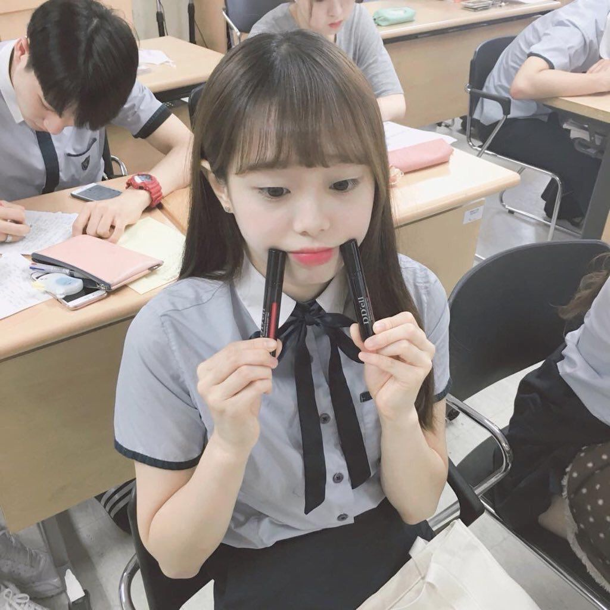
jihoonie: this bitch cheats off me on the daily teacher please suspend this woman all of her grades are fake guys don't vote for her it's all a lie
solarkim: I LITERALLY GAVE UALL THE ANSWERS TO THE HW AND THIS IS MY REWARD???
solarkim: i hate u park jihoon u never do anything for me our friendship is strictly one sided
jihoonie: @solarkim wow everyone as you can see the running candidate is also a liar
jihoonie: @solarkim did my $40 food just disappear from your fat fucking brain you ungrateful rug
solarkim: @jihoonie what is $40 to u being a terrible friend HAHAHAHAHA
chxrry: @jihoonie you're the worst person to ever walk the earth
asahihi: looks like they made up again, should we pretend like we're happy?
chxrry: @asahihi no because no ones happy about it
junkyuuu: @chxrry @asahihi i am!! yayyy everyone is back together
junkyuuu: nobody listen to jihoon though he is a troll, please vote solar for your council president!! #teamsolar!!!
sukhyun: idk why i even follow jihoon anymore
jihoonie: @asahihi @chxrry @sukhyun as per usual, everyone is jealous of me. get in line
rikiniki: #teamsolar
jihoonie: @rikiniki whomst the fuck ?
JUNGWON IS MEAN
jbird:
not niki commenting on solar's friends posts for NO REASON LMAO
sunooshine:
niki, why??
rikiniki:
BRO ITS FUNNY
rikiniki:
LET ME HAVE FUN
rikiniki:
it doesnt even matter
heeheeseung:
wait but how do you know jay? do you guys all follow her friends or . . ?
jbird:
idk im just mutuals with most ppl at our school
jbird:
ik its her friend bc they dead ass post pictures of her
princehoon:
give me the @?
jbird:
no
jbird:
fucking weirdo
rikiniki:
yo what if sunghoon hyung just wants some fruit
princehoon:
no i want the girls @
heeheeseung:
don't you already follow solar?
heeheeseung:
either way, stop being weird.
sunooshine:
yeah that would be a great thing for you to do
jbird:
i think he means her friend
jbird:
i dont remember her name
princehoon:
cherry
jakeyy:
hey guys well that's still a fruit right? get it
rikiniki:
hyung please leave the group chat
rikiniki:
please
jbird:
yeah im definitely not giving you it though, idk if i even have her
rikiniki:
i do
princehoon:
give it to me
rikiniki:
nah
rikiniki:
fucking loser
jbird:
all niki has is nerve LMAOOO
heeheeseung:
he's definitely .. . . a bold one
sunooshine:
guys please stop talking about solar's friends it's weird
sunooshine:
i literally was just talking to her and now i'm in my own gc talking about her friends
jbird:
now he's flexing
sunooshine:
no? i'm just saying
rikiniki:
anti fun
rikiniki:
so boring
sunooshine:
plus there are more important things happening today
heeheeseung:
true, jungwon, how was your math comp?
heeheeseung:
you studied hard, there's no way you didn't do great
rikiniki:
hope u lost
jbird:
NIKI???
princehoon:
yet you all attack me
jakeyy:
he definitely did NOT lose, niki!
sunooshine:
@injangwon be sure to update us!!! we're eager to know
injangwon:
i won
jakeyy:
LETS GO PRES
sunooshine:
OMG GREAT JOB JUNGWON!!
heeheeseung:
i told you all the studying would pay off
heeheeseung:
now you can take a break for a while, you need to take care of yourself. please don't worry about the campaign right now.
injangwon:
i can't do that
injangwon:
the math comp was just one thing out of many that i have to do
injangwon:
i can't ignore my campaign, and we're still planning hoco remember?
sunooshine:
jungwon, let us handle hoco
jakeyy:
yeah we can take care of it and just bring everything to you when it's done
jakeyy:
seriously let yourself rest!
heeheeseung:
did you even sleep last night after i left?
injangwon:
sort of.
heeheeseung:
sort of? what does that even mean jungwon???
heeheeseung:
we're really worried about you, man
injangwon:
i'm fine
injangwon:
focus on yourselves please
injangwon:
i'll see you guys later
injangwon:
i won't be at lunch though, the administrators want to talk to both of the presidential candidates
injangwon:
now that i actually have competition...
Chapter Twenty-Two
PARK JIHOON HATE CLUB
jihoney:
Solar i dont Understand why u wont let me come With U
jihoney:
i am a very Civil person i just want to be ur representative
jaehyukkie:
jihoon, that's literally not a thing.
jihoney:
Bitch notice no one asked u
cherryblossoms:
she doesnt fucking want u to come with her so stfu for once in ur life
cherryblossoms:
if anything u should let me come with
cherryblossoms:
i'll show that fking president a great time when i knock his teeth down his throat
jihoney:
yeah Ok like ur doing that to anyone other than hyunsuk bc i'm Sure he's into that
jihoney:
i just want to have a nice Chat with the guy
jihoney:
Truly
geniusuk:
wait what the fuck
cherryblossoms:
what are u EVER FUCKING SAYING JIHOON
asanoonecares:
LMAOMAOI he hit a sore spot
solarsystem:
ltrly neither of u r coming with, ur not gonna beat up my opposition in front of the administrators
jihoney:
it dont gotta be in front of them
cherryblossoms:
jihoon actually said something right for once
cherryblossoms:
good job
cherryblossoms:
but ur still a worthless piece of garbage
jihoney:
Bitch what u Always so SALTY for
jihoney:
nvm i already know
jihoney:
jealousy
cherryblossoms:
solar why the fuck did you forgive him
cherryblossoms:
literally why when he acts like this
cherryblossoms:
i know ur not sorry jihoon, we ALL know
geniusuk:
yeah maybe we should expose him
asanoonecares:
jihoon is pissing himself rn i wish i was in his class
junkyute:
i am, and he looks very nervous. i've never seen jihoon nervous before
jihoney:
this bitch talking out his Ass the almighty Hoon is never Nervous
jihoney:
lying ass bitch all u want is clout
cherryblossoms:
yeah ok, don't make me say the truth
jihoney:
there is no Truth how about u shut ur fat Trap Skank
cherryblossoms:
you are on your last fucking leg
cherryblossoms:
in fact you better hide after the bell rings because i'm going to break off both of your legs
jihoney:
ooooHHH wow i am petrified rn absolutely Peeing my Pants
geniusuk:
no, jihoon, she looks pretty serious
geniusuk:
i'm honestly feeling kinda scared sitting next to her
jihoney:
of fucking course u r simp
geniusuk:
u have NO room to talk???
solarsystem:
guys . . .
solarsystem:
what the hell are any of you talking about
solarsystem:
it is entertaining me and distracting me from the fact i have to go to this meeting with the ass hat but
solarsystem:
i still don't understand
asanoonecares:
i think if u did u would be puking rn
jihoney:
Bitch
cherryblossoms:
i mean
jihoney:
Silence
jihoney:
dirty Whore
cherryblossoms:
u better think wisely jihoon, real wisely
solarsystem:
yall fucking weird
jihoney:
oh but what room is the meeting
jihoney:
I will Be There
cherryblossoms:
actually just pm it to me
solarsystem:
im not pming either of u
solarsystem:
no one will be murdering this asshole except me
solarsystem:
he will die by my hands for ever talking shit about nana
jihoney:
Oh Please
jihoney:
you aint killing Shit with those Nappy Ass hands of urs
asanoonecares:
yo??
asanoonecares:
he right tho LMAOOOO
solarsystem:
stfu asahi fuck u
asanooneoncares:
bitch what about the clear problem
cherryblossoms:
true why give jihoon a pass when hes the rudest one to you
jihoney:
Bc I am better than All of U
solarsystem:
yeah no i fucking hate u too jihoon
solarsystem:
in fact i hate u the most
jihoney:
wow
jihoney:
i want a refund
jihoney:
puke up my food.
geniusuk:
wtf???????
solarsystem:
nope ur fucking loss loser
solarsystem:
brb about to enter the meeting room
solarsystem:
ugh i think hes already here
solarsystem:
wish me fucking luck man ill need it

The room was cold when she entered. Not cold as in temperature, but cold as in she could feel the bitter attitude of her opposition as soon as she stepped foot inside the administrator office. Greeting the staff that were already waiting in the room, she finally allows her eyes to land on Jungwon, who was sitting across the desk from them in one of the two chairs.
He didn't even bother to meet her gaze. Solar resisted the urge to scoff as she falls into the chair next to him. He really has some fucking nerve. She found it hard to believe anything Sunoo told her. How could he not intend to be such an ass? It seemed rather intentional to her.
Either way, she wouldn't let herself dwell on it right now. She needed to focus on showing the administrator's she was serious about her campaign.
So, for the next 45 minutes, the staff asked them questions regarding their genuine goals for presidency, and what they wanted to do for the school. They asked Solar specifically what urged her to run since no one tended to run against Jungwon ever, to which she responded some bullshit she had made up off the top of her head that she figured would sound good to them. It wasn't like they wanted to hear the fact she did it for her parents, and now to show Jungwon.
Thankfully, she hadn't had to speak to Jungwon. Speaking to him probably would of ended terribly. She wasn't sure if they could sense the tension between the two, but they didn't ask.
But she swore she could feel his eyes glancing to her every once in a while. Solar wouldn't allow herself to look at him again, though, she only focused on the staff, nodding intently as if she was hanging onto every word they spoke.
Until finally, they dismissed them, saying they gathered all the information they needed. Solar let out a breathe of relief as she slowly rose from the seat, only to see Jungwon practically racing out of the room. He was acting as if he'd be sick if he was around her for a second longer. She watched as he rushed out after bowing to the staff, and she could see the disgust that was hidden in the back of his irises. What a joke.
"Oh, Solar, I'm sorry," one of the staffs calls out to her just as she's slinging her bag over her shoulder to leave as well. She turns to them with curious eyes, and they hold out two packets of papers to her, "We forgot to give you both these. Could you pass that on to Jungwon, please? Thank you, I appreciate it."
She didn't even have a chance to say no - and it wasn't like she could. All she knew to do was nod with a soft smile in agreement, before making her way out of the room.
As soon as she was in the safety of the hallway, she cursed under her breath. You've got to be kidding.
It's okay, just give it to him and leave. No talking required.
The problem was, she wasn't for sure which hall he even went down. Solar shrugged, going down a random hall and hoping she got 'lucky' enough to spot this asshole. She was gripping the papers so hard she wouldn't be surprised if her fingers created holes in them, eyes scanning every inch of the hallway in search for the boy.
Really, she could just give the papers to Sunoo or Jake and ask them to do it for her. But then she would look like a real loser.
Finally, she spots Jungwon rushing down the hall. He was hunched over as if he was in pain, holding one hand to his head and caressing his temple with the other. It was a weird sight, but she decided she didn't care about whatever might be wrong with him as she broke into a jog to catch up with him.
Due to the fact everyone else was still in class, the halls were empty. This meant Jungwon heard her steps behind him, causing him to heave out a sigh as he mutters out, "Guys, I'm really not in the mood-"
"-They wanted me to give these to you," she cuts him off. He clearly assumed she was one of his friends. At the sound of her voice instead speaking to him, his eyes bulged out of their sockets. Hurriedly, Jungwon keeps his cool, trying to act like he was completely fine as he fixes his posture, turning to face her and sporting the most blank expression he could manage.
But he didn't take the papers, he just sat there, staring at her. Solar pursed her lips, wondering if he was suddenly braindead as she extends her arm that was holding out the paper to him further.
That was when he snapped back into reality, shaking his head and clearing his throat, before snatching the papers out of her hand. He didn't meet her eyes again, or in fact, say anything at all - as he spins on his heel, heading towards the exit doors.
As much as she was trying to act unbothered, it annoyed her to her core.
So much so, that before she could stop herself, her feet were following after him again. Jungwon likely heard her doing this, but didn't care enough to stop.
"Hey," she calls out harshly, "hey, do you mind telling me what the hell your problem is?"
No response. Solar scoffed in disbelief as she kept trailing behind him, this guy was seriously unbelievable. She had never met anyone who managed to make her so angry by simply doing nothing.
"Wow..." she mutters under her breath. It was insane to her that he could act this way when she never even did anything to him. She was so caught in her own anger that she didn't notice Jungwon stopping in the middle of the hall. He stopped as if he was a robot that ran out of battery, abruptly halting and standing there.
Since she didn't notice, she screeches in shock as she runs right into him. Her eyes are wide with confusion, and her first assumption was that he did it on purpose to try and make her fall.
That was, until she noticed the state he was in. With his hand still on his head, his eyes were squeezed shut as if he was trying to ease something he was feeling. Solar opens her mouth to speak before closing it as she takes a few steps back, unsure if she should ask him if he was okay or just leave him there.
Her head momentarily wanders back to what Sunoo had told her. Slowly, it began to sink in as to why he was acting like he was so exhausted and in pain. But before she could say or do anything, the boy before her collapses on the ground.
Chapter Twenty-Three
PRIVATE MESSAGE FROM
solarkim
solarkim:
umm hey sunoo i dnt want to bother u but ur friend passed out in the hallway
solarkim:
i didnt rly know what to do so i took him to the nurses office
solarkim:
they said hes fine just dehydrated
solarkim:
i just wanted to let u know cus im obv not gonna stay lol
sunshinesunoo:
omg what??? wait what friend
sunshinesunoo:
wait jungwon right? cus u guys were in the meeting together
sunshinesunoo:
omg thank u for helping him solar
sunshinesunoo:
he probably didn't sleep or eat at all
sunshinesunoo:
ugh hes such an idiot
solarkim:
yeah.. jungwon
solarkim:
no worries i was tempted not to but i decided i would help him
solarkim:
even tho he didnt deserve my help
sunshinesunoo:
yeah he really doesnt, but you're just a good person!!!
sunshinesunoo:
ill come to the nurses office right now
sunshinesunoo:
thank u again, he owes u an apology AND a thanks now
solarkim:
yeah but we know thats never happening
solarkim:
no offense but ur friend is a jerk
sunshinesunoo:
none taken bec i agree with u :/

"Jungwon, there's no way you're serious right now," Sunoo pouts. HIs tone isn't harsh, though, but softer than anything. He himself sounded hurt about the situation that once had nothing to do with him because now it did. Solar was his friend, and he knew that the entire situation could be solved if Jungwon would just talk to her and apologize.
"No," is all he snaps in reply, clearly not interested in the subject. Deep down, Jungwon was embarrassed - he was humiliated that he had fainted again, but more so, in front of the one person he disliked in school. And to add onto it, she told his friend, who would now be pestering him until the day he died.
He might as well be cursed.
Sunoo heaves out a deep sigh from behind him. He didn't want to bother Jungwon anymore about it. If anything, he was just worried about his friend. He had known Jungwon for a long time, and never had his health gotten so bad. Jungwon wasn't previously like this - stuck up and rude - he used to be as carefree and joyous as the rest of them. Becoming president was at first, a fun thing for him, but after all these years - Sunoo was beginning to think more and more that it was time for him to let it go.
It was ruining him.
For that reason, he knew he had to help Solar as much as he could with her campaign, whether Jungwon liked it or not.
Sunoo is snapped out of his thoughts by the sound of not normal chatter as he reaches the exit doors of the school behind Jungwon - but screaming, very loud screaming. His eyes widen in slight fear as he looks to see what's going on, not seeing Jungwon at first since there were so many students in the halls now that school was out.
All he could think when he finally spots his poor friend was oh no.
"Cherry, calm the fuck down!" Solar is begging desperately, holding onto the girl's wrist as if it was the last thing she'd ever do in her life, "I told you, you're not going to beat him up!"
"Bitch, you got me fucked up!" she cries in anger, trying to yank her wrist out of Solar's grip again. Jungwon was standing there, by the exit doors, busy talking to someone. He hadn't seemed to notice the fact that there was a crazed girl attempting to murder him since he was so involved in the conversation. "Just look at that kid, I doubt he could even withstand a single punch," she snorts, wrinkling her nose in disgust as she eyes the boy up and down, before snapping to Solar again, "I'll be quick - hit and run, 'kay? Just let me go."
"No!" she groans, and only then did the boy's conversation end. A few students were whispering and pointing to the two girls, probably confused. Jungwon slowly turned to follow the whispers, and when his eyes fall on the girl who was furiously glaring at him, trying to lunge for him, one would think he'd appear afraid.
But his face remained blank.
"This motherfucker..." Cherry starts again, and Solar was scared she probably wouldn't be able to hold her back any longer.
Until a bright Sunoo appeared before them, blocking the view from Jungwon and allowing him to leave the school without Cherry being able to see.
"Hey Solar, hi Cherry!" he greets cheerily, "Are you guys - alright?" he asks as if he didn't know.
A breathe of relief leaves Solar's lips as she releases Cherry from her grip. She was more out of breathe than she planned to be as she holds a hand to her head, leaning against the lockers they stood by. "Jesus fucking Christ, I am very far from alright right now."
"You," Cherry hisses, pointing an accusing finger at Sunoo and narrowing her eyes, "I'm gonna need you to straight your fucking friend out before I have to do it myself. And trust me, if I have to, it'll be really fucking violent."
Solar resisted the urge to slam her head into the locker.
Sunoo catches her apologetic look, and hesitates for a second as he tries to figure out what to say to Cherry. "Oh, uh, I promise I'm trying to," he finally assures innocently, "I don't agree with how Jungwon is acting either, it's upsetting me, too."
But the girl rolls her eyes, scoffing, "yeah, okay, clearly not enough or one of you would've beat him into shape by now."
"Cherry," Solar sighs from behind her, "not everyone solves problems like you."
Chapter Twenty-Four
PARK JIHOON HATE CLUB
asanoonecares:
LMFAOOOOO THE PRES DID WHAT NOW
cherryblossoms:
ik unbelievable disgusting excuse of a human being STILL didn't have the guts to apologize or even say a WOW THANKS
cherryblossoms:
makes me FUEL with rage
solarsystem:
yes i noticed when u nearly broke both of my arms trying to kill him! rage indeed!!!
cherryblossoms:
should of let me go then.
junkyute:
i can't believe that. i almost feel bad for him
junkyute:
you know? like his friends told you he was struggling recently
cherryblossoms:
don't feel bad for him he's a fucking asshole
asanoonecares:
i just think it's fucking funny
asanoonecares:
imagine how EMBARASSED he is right now prob hiding in his closet crying
junkyute:
well that isn't nice
jaehyukkie:
guys, seriously
jaehyukkie:
i agree the pres is not the best person to solar at all, but he is clearly having some serious health issues
jihoney:

jihoney:
what the Fuck is going on that ALL of u failed to inform me of
jihoney:
Solar ??? HELLO
solarsystem:
sorry, i have been a little busy dealing with stuff. i only told cherry when i ran into her in the hallway after school
cherryblossoms:
yeah i regretted to inform your soon-to-be salty ass
jihoney:
Tell me now Skank
cherryblossoms:
how ab fuck u
asanoonecares:
the famous president fainted in front of solar and she had to take him to the nurses office
jihoney:
huh ?
jihoney:
HAD to ? ur telling me u didn't LEAVE him there ?
cherryblossoms:
that's what i said
geniusuk:
i have a very bad feeling
solarsystem:
no, jihoon, i did not leave him there. i still have MORALS
jihoney:
then throw them the fk away and LEAVE him there in the dirt where he BELONGS
jihoney:
it's ok, i'm just going to end up putting him back there anyway. no sweat really!
geniusuk:
don't get too mad now, jihoon
cherryblossoms:
guy is so fucking salty rn
asanoonecares:
LMFAOOOOO JEALOUS FR
jihoney:
all of You will die by my Hands
jihoney:
i'm serious, solar, i'm fking done with this guy being such an asshole
jihoney:
getting on my last fking nerve
junkyute:
making fun of jihoon's jealousy aside he is scarily fit i think he could really hurt someone
cherryblossoms:
i would thoroughly enjoy watching that
cherryblossoms:
though i would still personally like to be the one that murders him
solarsystem:
OK. can we just call take a breather here
solarsystem:
i know u guys aren't GENUINELY telling me i should of left someone UNCONSCIOUS in the middle of a hallway?
solarsystem:
like . . . don't get me wrong . . . I THOUGHT ABOUT IT!
solarsystem:
but no one is that shitty of a person, guys
cherryblossoms:
yeah idk where ur getting that info from
asanoonecares:
agreed w cherry
solarsystem:
and yes before any of u say i KNOW he won't say thank u
solarsystem:
but i still had to do the right thing
jihoney:
i have to do the right thing, too
asanoonecares:
GOD i can't wait to know what that is
geniusuk:
jihoon . . .
solarsystem:
umm ok guys well i'm busy working on my campaign poster rn sooo talk later
PRIVATE MESSAGE FROM
geniusuk
geniusuk:
i already know what you're thinking about doing
geniusuk:
gonna tell u rn it's not the way to go
jihoney:
why
jihoney:
seems like the right thing to me
jihoney:
kid won't have a choice but to apologize when i'm ab to knock his teeth down his throat
geniusuk:
jihoon, i know you don't want to talk about it
geniusuk:
but we know the rest of why you're so worked up over this
geniusuk:
and you know that i know how you feel, but you can't let it control you like this
geniusuk:
you and solar JUST made up, think about how upset it'll make her and how much trouble you'll BOTH get in if you make some rash decision like that
jihoney:
...yeah
jihoney:
i guess
jihoney:
idk. i'll think about it
jihoney:
at the end of the day i don't want to make anything worse for her
jihoney:
i just wish i could tell her sometimes.

A breathe of relief leaves Solar's lips as she sets the marker down on the table, before she fist pumps the air in excitement. "Phew, thanks for helping me with all of these, Sunoo, I really don't know what I would of done without you."
The boy across from her sends her a shy grin. "Don't worry about it," he insists, "it'll be good for everyone if you win this election, and part of that is having good campaign posters."
"If you say so," she hums, not feeling too sure of her posters making much of a difference, but she believed him anyway. "This is already tiring, though, didn't you say I have to give another speech soon?" You would think she would remember what happened during student council president elections from previous years, but the thing was, she had never paid attention to them until now.
Sunoo sits in thought for a moment, before he nods in remembrance, "right, yeah, remember when you had that meeting the other day with Jungwon and some advisors about what you wanted to do if you got elected? You're basically going to take everything you told them and turn it into a speech you give in front of the entire school."
Just when she thought the horror of his words were over, he adds, "I guess it's sort of like a debate more than a speech. You're allowed to debunk - in other words - argue with Jungwon over who's policies are better, or what he's missing - well, you get the gist."
Solar felt like she wanted to throw up.
"For real?" she gawks, "I'm not so sure if I'm up for that, that sounds awful."
Sunoo chuckles, but hurriedly assures her, "don't worry, it's not as bad as you think. All you have to do, really, is show that you have better ideas than he does."
Staring at the ceiling of the cafe Sunoo worked at where they had been hanging out for the last couple of hours, she finds herself questioning into the air, "but do I?"
"Course you do!" he cheers her on from across the table, "And if not, I can help you with that, too!"
"Jeez, Sunoo, you're like my vice president already."
Chapter Twenty-Five
Solar's entire weekend had been spent designing her campaign posters. Sunoo had come over to her house for the first time to help her, and before they knew it, she had stacks on stacks of posters ready to be hung up on Monday. Though it was comforting she had that done, she could only feel exhausted upon realizing how much more she had to do. No wonder Jungwon was so tired.
She was going to have to start writing her debate speech next. Sunoo had already gave her some pointers, so she wasn't completely lost, but it was still gonna be a lot of work.
Though, on the current Sunday afternoon, she was too tired to keep working. More than anything, Solar needed a break from things that involved school and the asshole that was Jungwon.
So, there she sat, slumped into her mattress. Nana was laying beside her, his eyes blinking at her as he watched her be a bum.
"I'm tired, Nana," she tells him with a sigh, as if the dog was going to say anything in return.
She should've known her day of relaxation wouldn't last long.
"Surprise!" her door is swung open, and she squeezes her eyes shut as if to pretend she was passed out - even though that wouldn't make him go away. She wanted to try to pretend like he wasn't here, just for her sanity.
As Jihoon fully enters her room, closing the bedroom door behind him, his brown eyes fall onto the girl obviously trying to act like she was sleeping. "Bitch, I know you're not fake sleeping right now."
With a groan that he knew so quickly, she sits up straight in annoyance, "why are you here, Jihoon?! This is my relaxation day!"
Rolling his eyes, he falls to sit on the bed beside her after greeting Nana. "Uh, I know that - hello? That's why I'm here."
His sassy tone made her want to hit him. She was deeply tempted to do so, until he opens his mouth again, "so, what are you doing? Get dressed already, we have things to do."
"Huh?!" Solar snaps in astonishment, brows furrowing as she processes what he just said to her, "you think I'm going somewhere? You are very wrong, Jihoon, it's nap time," she informs him matter-of-factly, laying back down on her mattress and turning on her side to face away from him.
But Jihoon never gave up - on anything, for that matter.
Which was why in the next few minutes, she was falling on the floor.

"Jihoon!" she's whining out dramatically, "I was not in the mood for hiking today!"
Usually, the two attitudes of the friend's would be reversed. The overdramatic, drama queen had always been Jihoon, but it was true when Solar said she was exhausted. She had only gotten maybe an hour or two of sleep since she'd been working on her posters, and that meant she especially hadn't been trying to exercise today.
"Ugh, stop being such a little bitch," Jihoon retorts to her as he continues to drag her along. Solar only groaned loudly in response, not paying much attention to Jihoon's face as he walked in front of her. Even if she wanted to stop walking, she wouldn't be able to, thanks to the fact he was so much stronger than her. Despite how he acted like such a pussy, Jihoon was scarily strong.
Since she was busy looking around at all the trees surrounding them and trying not to fall asleep, she didn't see the giddy smile on Jihoon's face. It was true, Park Jihoon looked like a silly school boy that just aced his first test, bouncing down the gravel hiking trail like he'd won in life, because he knew she didn't notice him intertwine their fingers.
It felt right. It sent sparks through his body and chills up his arm. He wanted to grip her hand harder.
But he wouldn't.
"Whoa," Solar abruptly mutters, causing his eyes to focus back on where they were on the trail. He liked to go hiking every now and then, so he had been on this trail before, but it was likely Solar hadn't since they were a bit out of town. He finds himself grinning again, but mischievously this time, once he sees what part they were at.
So, without a word, he yanks her forward to walk onto the skinny bridge that crossed the deep river. Solar screeches from his sudden action, as she thought they were finally stopping.
"Calm the fuck down!" she yells to him, "Fuck, won't even stop for three seconds!"
But he ignores her, only until they reached the middle of the bridge that overlooked the entire area. Jihoon breathes in the fresh air, putting his hands on the rails of the bridge, only he didn't let Solar's hand go. Since she was trying to look around now that they had stopped, she finally noticed his weird action, growing confused.
"Let me go, weirdo," she urges him jokingly, and the boy jumps once he realizes.
But like always, Jihoon kept his cool. "I'm making sure your dumb ass doesn't fall off," he hums, but drops her hand anyway, "it's the least I can expect from you, you know, you're not really the brightest."
She only glares at him. "You got some nerve for someone I could push off a bridge right now."
"Solar, you are the weakest person I know."
Her eyes narrow at him, clearly not appreciating his insult. Knowing it was all fun in games, though, she sighs as she pulls out her phone. "I need to take a picture, I would appreciate if you moved."
But Jihoon gawks at her like she was crazy, "Me, move? I am the view."
"You're a fucking idiot."

new post
solarkim
 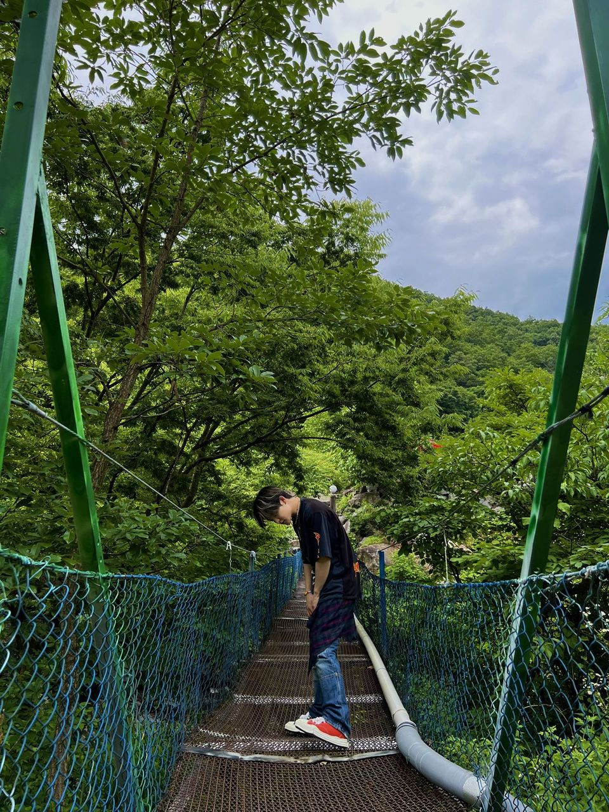
solarkim: i was kidnapped today but at least i got to see nature AND wildlife (beware he was VERY aggressive)
asahihi: what an insult to actual wildlife
sukhyun: @jihoonie JIHOOOOON????
chxrry: bro this is not fucking real
chxrry: U WENT ON A DATE WITH JIHOON OUT OF ALL THE SPECIMENS ON EARTH?
junkyuuu: this is sooo cute!
solarkim: @chxrry ewww wht ru SAYING why in my right mind would i go on a date with jihoon
solarkim: @chxrry BOOO throwing tomatoes
sukhyun: LMFAOOOOOOOOOOOOO
jihoonie: @sukhyun @chxrry close your mouths and NEVER speak again
jihoonie: @sukhyun @chxrry you are SHUNNED by humanity SILENCE and stay salty
sukhyun: @jihoonie do you need a hug bro?
rikiniki: kind of an ugly elephant
jihoonie: @rikiniki who the fuck IS THIS GUY????? say it to my face fr.
solarkim: @rikiniki LMFOASMFPSO NIKI
Chapter Twenty-Six
PARK JIHOON HATE CLUB
solarsystem:
hey do any of u guys want to help me hang up posters
solarsystem:
i dont want to ask sunoo or any of his friends cus they prolly dont want to make jungwon mad
jaehyukkie:
i can sure
jaehyukkie:
just give them to me during first period
junkyute:
i would love to help tooo!! #teamsolar
asanoonecares:
cringe
asanoonecares:

jihoney:
can i add my own spice to them or no
jihoney:
i alrdy know they will need it they probably Suck
cherryblossoms:
be quiet no one likes u
jihoney:
oh and everyone DEFINITELY likes u. Sure.
solarsystem:
DO U TWO WANT TO HELP OR NO
cherryblossoms:
ofc i got u
solarsystem:
and no u cant "add" anything jihoon
jihoney:
ZZzzZZZZzz
jihoney:
then clearly u dont want my help Woman
geniusuk:
jihoon idk if this is how u do it bro
cherryblossoms:
LMFAOOOOO
cherryblossoms:
fr jihoon, ur slacking
cherryblossoms:
do better
jihoney:
Shut
jihoney:
the Fuck
jihoney:
i am on the way solar
jihoney:
:)
junkyute:
wow i have never seen jihoon use a smiley face before
asanoonecares:
i wonder why HAHAHAHAHAAHAUDGIAK
solarsystem:
ummm ok see u all at school

JUNGWON IS MEAN
jbird:
better get on top of those posters jungwon ur competition is beating u
heeheeseung:
can we not right now
sunooshine:
they look great don't they!!
sunooshine:
but lets not talk about that right now, jay, jungwon is stressed as it is
jbird:
mb i was just letting him know
rikiniki:
jungwon better straighten his act up fr her bf is built af
princehoon:
bf?
jbird:
course bro's gonna pop in now
jakeys:
i don't think solar has a bf i'm not sure where niki is pulling this from
heeheeseung:
either way it's irrelevant, guys
sunooshine:
are u talking about her best friend?
rikiniki:
best friend my ass LOL
sunooshine:
it is indeed her best friend, stop being weird, niki
sunooshine:
anyway jake r u heading down to the office for the announcement?
jakeys:
yepp on my way

"You're getting bold," Cherry is laughing hysterically, "a date, Jihoon? You had the audacity to take Solar on a date!" she bursts into more laughter. Cherry would never miss the opportunity to make fun of Jihoon, especially for the life long crush he had on her best friend. It was sad, honestly. He acted so high and mighty but never had the guts to tell her.
Hyunsuk was standing beside her at their lockers, and Jihoon had heaved out an annoyed sigh as he closed his to peer at the two of them. They had been teasing him since they'd got to school that morning, and it was really getting on his last nerve.
"Oh, I'm sorry that I actually made a move," he snaps, "why don't one of you try it, hm? Or are you going to continue distracting yourselves by focusing on my feelings?!" He was as sassy as ever, and his words were harsh.
But they never took Cherry off guard, because she didn't really care for anything he ever had to say. "Yeah, I wouldn't really call you being the only one calling it a date a move, but okay, sure."
The boy squints his eyes at her, as if he was plotting a murder. "Now, if you would excuse me, I have quite better things to do than be around you two incels," he hums, before pushing past them to make his way to Solar.
The two only watch him go, with Cherry still giggling away at how much of a joke he was. "Is he ever going to stop being a pussy?" she finds herself asking out loud to no one in particular.
Since Hyunsuk was the only one around to hear her question, he shrugs. But he found himself asking himself the same thing.
"Yeah, they turned out pretty good," Solar had been saying as Jihoon walked up to stand beside her. She was in the middle of a conversation with Jake, who had stopped by to talk a bit as he was making his way to the office for an announcement from the council, to compliment her on the posters for her campaign. Her friends had done a good job helping her hang them up, as they were already on nearly every corner of the school hallways.
"Mhm, I can tell Sunoo helped you," he chuckles in response, "they have Sunoo written all over them."
Solar gawks, as that seemingly concerned her, "what, really?! Do you think Jungwon will notice and get mad at him? I would feel bad - not for Jungwon, but for Sunoo."
"Nah," Jake hurriedly assures her, "you're good, it's just funny - oh, hi, Jihoon - right?"
Solar turns to look to her side from Jake's sudden greeting to her friend. The boy was peering down from his tall height to the two of them, before he finally offers a greeting to Jake.
"Hey, Solar!" another one of the popular friend's appears before anyone could say more, "You definitely have my vote, fyi, I want to watch Jungwon lose!"
"Niki..." Jake sighs.
"Nice to see you too, Niki," she snorts, feeling happy to hear such a comment from one of them, even if it was a joke.
Jihoon found himself realizing something. It took him a moment to put two and two together, until he finally got it - that's the dude that troll comments on everyone's Instagrams.
Now it made sense.
He shrugs, honestly, his comments were pretty funny most of the time. You know, unless they were directed at Jihoon.
"So, what's the big announcement today, anyway?" Solar is asking Jake.
"Oh, right, I was supposed to tell you!" he cries in realization, "It's for the homecoming committee, Sunoo and I are anointing you already!"
Her eyes widen in shock. "Homecoming - me? I don't know if I even know how to plan a dance, Jake."
"Well, that's what we're for," he insists, "it'll be good for your campaign!"
She thought about it for a moment. He was right. She should probably be thankful they were appointing her just like that. "Hm, true," she finally nods, "well, let me know any details."
"Of course-"
"-Jake, where are the sign up sheets?"
Silence seemed to fall over the group. A lump formed in Solar's throat as she processed who it was that was standing behind Jake. Niki's mouth formed an o as he realized what this meant, and a humorous smile spread across his lips as he turns away to cover his mouth with his hand to stifle his laugh.
There was definitely an awkward feeling that settled in. Jihoon's blood was boiling, it was the first time he had been so close to that sack of shit. Now that he was, he realized how much shorter he was, and the fact he was nowhere near built. Cherry had been right, he would never have a chance against the likes of Jihoon, especially not with his Pilates on his side.
Jungwon had avoided eye contact with anyone that wasn't Jake, who had awkwardly turned to look to him. Solar cleared her throat, figuring they should probably excuse themselves and just head to class. She knew damn well that Jihoon was thinking of something bad.
"Uh, we haven't printed them yet, man," Jake responds, scratching the back of his head as his eyes dart elsewhere, "you're gonna have to wait till after the announcement."
The president heaves out a tired sigh. That seemed to be the end of their conversation, but before he turned to walk away, his eyes rake across everyone standing there. They land on Solar, before he meets the harsh gaze of Jihoon, who was likely trying to be intimidating. But Jungwon's expression didn't change.
In fact, he only rolled his eyes, before he spun on his heel, walking away from them without a word.
And Jihoon did not like that.
"That guy has some real fucking nerve," he's mumbling under his breathe, anger rising in his bones before he could control it. He immediately tried to bolt after him to do God knows what, but Solar had held him back by his arm, causing him to halt.
"Seriously?" he snaps to her angrily, "You know he deserves it. I could care less if any of his friends see."
"It's not about that, Jihoon," she nags, shaking her head in disbelief from how he was acting like he didn't have common sense, "you know how much trouble you'd get in. You can't get expelled."
Jihoon heaves out a sigh.
"Yeah, okay," he finally gives up, and Solar let out a breathe of relief. But before they could walk away, Jihoon looks to Niki and Jake, that had just been watching the entire thing go down, "might want to give him a warning."
Then, he jerks his arm out of the girl's grasp, before making his way down the hall to their first period.
She was left to gawk at him. "Ignore him," she insists to the two, "he's just - riled up over how Jungwon is."
Niki shrugs, "I don't blame him, he's an asshole. Your boyfriend sure is protective." Jake facepalmed, but Niki had the most mischievous look on his face.
Solar thought she was going to pass out.
"My what?!" she sputters, "Uh, no, Jihoon is just my best friend."
"Sure," Niki snickers, "might wanna see if he thinks that."
Chapter Twenty-Seven
"The student council is now accepting applicants for the homecoming committee! Please stop by the front office to pick up a sign up sheet by the end of the week. Next Monday, the committee members will be announced and the first meeting with take place on Tuesday. Feel free to ask me or Jake any questions regarding the sign up, thank you!"
"Hey, Jihoon!" Solar had been calling as she tries to catch up with her best friend, who was walking irregularly fast down the hall. She knew it was lunch time, but dear God, there was no way he was that hungry. She stumbled a bit, just barely managing to catch all of her books that she held in her arms.
"If you trip, I'm not helping you," Jihoon mutters when she finally catches up to him. Only then did he slow down, earning an annoyed huff from her.
But she had bigger things to focus on. "You're not really thinking you're gonna beat him up or something, are you?"
No response. He just kept walking, as if he hadn't heard a word she said and she was speaking a foreign language.
Feeling annoyed from his abrupt attitude this morning and not understanding the cause, she takes one of her books and hits his arm about as hard as she could manage. The boy gasps from the sudden impact, finally looking to her in frustration, "the fuck is wrong with you?!"
"Hello, don't act like you didn't hear my question!" she cries.
Jihoon looks away again. Unexpectedly, he stops in the middle of the hallway, turning to her with a rather serious expression on his face. It scared her. She wasn't used to Jihoon being serious, and she didn't think she wanted to be with how creepy it made him look.
"I don't think anything, Solar," he professes after a moment, "but if I see him again, whatever happens, happens, you know?" He finishes with a cocky smile, before beginning to walk towards the cafeteria again.
"Wh-hey!" she calls after him, having to run again, "Jihoon, you know you can't get kicked out of this school! If you assault the fucking president, it's pretty safe to say that's what'll happen!"
"Yeah, so be it," he sighs, "I'll do it for you, Solar."
By then, they reached the cafeteria, and she found herself stopping in her footsteps from his words. They were confusing. Why did he say it like that? It wasn't like she was asking him to beat up Jungwon, in fact, she was asking the opposite. Why did it seem like he was trying to prove something?
Solar watches as he enters the cafeteria without looking to see if she was following him. The truth was clear - Jihoon was being fucking weird. She knew him and Cherry were set on hurting Jungwon, but he seemed to have a deeper motive than just the fact he was rude to her a few times.
Frankly, though, she couldn't deal with that right now. She still had a speech to write.
"Hey, Sol!"
"Oh, hi Hyunsuk," she breathes to her friend that had walked up behind her.
"I was looking for you," he seemed weirdly giddy about something, "I need your help."
Solar blinks at him in wonder. She wasn't really sure what he could need help with, until the obvious pings inside of her brain, "oh, homework troubles? What class?"
But the boy shakes his head, a goofy smile tinting on his lips. "No, no homework, it's actually some um... advice... about Cherry," his voice trailed off nervously. He couldn't really fathom he just said it out loud - well, basically. He said it to her best friend, the gig was up. He was finally doing it after all this time.
The brunette before him stares at him for a long while, an evident look of confusion on her face. Other students passed them several times as they were standing in the middle of the school hall right outside the cafeteria, looking to the girl oddly as she likely appeared to be a deer in headlights just standing there blankly.
She had no idea what he meant - until it sunk in.
"Oh... oh!" she cries abruptly, scaring some people that had been walking by and earning her even more weird looks, "oh my God, Hyunsuk, what?!" she was acting as if she had just saw a baby animal as she bounced up and down on her heels in excitement. She couldn't believe it, Hyunsuk liked her best friend. She guessed she should've figured that out herself, it wasn't like it was the most hidden thing in the world.
Hyunsuk looked like he was gonna be sick from how loud she was being, as he nervously scratches the back of his head, glancing around to make sure no one important was hearing the conversation. "Mm, yeah, what you're thinking is right. But - can we talk somewhere with a little less people?"

"Trust me," Solar had been sternly assuring him, crossing her arms over her chest, "she will love it, and I know what you're thinking - there's no way Cherry would love that - but listen to me, I know Cherry." She had been rambling like a crazy person for the longest time now as the two stood outside of the school, basically in the back of the building where no one really came unless they needed a smoke break.
Hyunsuk had become more and more visibly nervous the longer the conversation went on. He guess he didn't truly process what he was setting himself up for, but upon realizing there was indeed a possibility he could be rejected, he felt sick.
"A-Are you sure?" he purses his lips, feeling stubborn about the idea, "I don't want it to seem... extra."
Solar rolls her eyes, scoffing as if she was offended he would say such, "extra? Hyunsuk, who doesn't love extra?" she snaps, shaking her head in disbelief, "It's not even extra, it's romantic. There's nothing cuter than living out a scene from a rom com."
"If you say so," he hums, "I guess I don't have much to lose - you know, except our friendship, my confidence, my sanity, and the girl I like."
She did not appreciate his sarcasm.
"Oh, please!" she slaps his arm in annoyance, "You'll be fine, this is a classic rom com movie. Childhood best friends to lovers, how cute is that!"
He found himself finding that statement interesting coming from her.
Knowing this might be the only chance he would ever get to get any intel for his poor friend Jihoon, he clears his throat, "actually - where was Jihoon? It's weird seeing him not stalking you."
Solar's face fell.
"Uh..." she pauses, not seeming to be able to articulate the words to explain, "I don't really know what's up with him. It feels like we just made up, and now he's acting like a stubborn asshole all over again, saying he's gonna beat up the president," her voice is small as she goes on, feeling a bit dull now that she was thinking of the situation again, "he's serious, too, Hyunsuk. I don't know what's up with him, he's never acted like this until recently."
He felt bad seeing how it was making her feel. Solar felt like her best friend was slipping away from her, like he didn't listen to her at all anymore. It was one of the worst feelings she'd ever felt.
In that moment, he wanted to tell her.
"He means well, Sol," he finally finds the words to console her, "I think he's just confused, but he'll come around in time, you know. Jihoon forgets how to show he cares sometimes."
The girl sighed, shrugging her shoulders as she turned away. "Yeah, that's for sure."
Chapter Twenty-Eight
PRIVATE MESSAGE FROM
cherryblossoms
cherryblossoms:
what the fuck did u tell him
solarsystem:
hi to u too bestie
solarsystem:

cherryblossoms:
WHATS WRONG WITH U
cherryblossoms:
TELL ME WHAT U TOLD HYUNSUK I WILL NOT HESITATE TO KILL U
solarsystem:
ALRIGHT ALRIGHT CALM DOWN
solarsystem:
what exactly happened why are you coming to ME SO HOSTILE
cherryblossoms:
BECAUSE OUR CHILDHOOD FRIEND HYUNSUK JUST ASKED ME ON A FUCKING DATE????
cherryblossoms:
AND I KNOW HIS DUMB ASS WOULDNT COME UP WITH IT HIMSELF
cherryblossoms:
it has ur dirty hands all OVER it
solarsystem:
I KNOW NO SUCH THING
solarsystem:
A DATE????
cherryblossoms:
yeah ok bitch keep fucking pretending
cherryblossoms:
ill let u live FOR NOW because ill say that im impressed
solarsystem:
OKKK SO UR GOING?
solarsystem:
EEEE THATS SO CUTE HEHEHEHEHE>>>
cherryblossoms:
i mean ig
cherryblossoms:
i wasn't really expecting that from him
cherryblossoms:
so at the most he deserves a chance for the effort
solarsystem:
HEHEHWHEHEHEHEHE
cherryblossoms:
stop rn
solarsystem:
i'm excited
cherryblossoms:
it's just sort of weird
cherryblossoms:
we've been friends for so long
cherryblossoms:
i never really imagined i'd go on a date with hyunsuk out of all people
solarsystem:
now that i look at it u guys have always been close
solarsystem:
esp recently i should've noticed how tied to ur hip he is
solarsystem:
the signs were there i'm just blind
solarsystem:
that boy wants u BAD if u ask me
cherryblossoms:
YEAH ITS WEIRD to hear him ask
cherryblossoms:
it's all fun in games until it ACTUALLY HAPPENS
solarsystem:
embrace it hyunsuk is sweet
solarsystem:
if anything it's good that u have known each other so long
solarsystem:
u ALREADY know everything about one another there's no weird first dates
cherryblossoms:
IT'LL STILL BE WEIRD
cherryblossoms:
but i'll give him a chance
cherryblossoms:
JUST BECAUSE i like ice skating
solarsystem:
ICE SKATING HAHAHAHA SO CUUTE
cherryblossoms:
stfu omg go on another date withh jihoon
solarsystem:
i have and would never go on such a thing with park fucking jihoon
cherryblossoms:
LMFAOOOOOOOOOOOOOOOOOOO
cherryblossoms:
oh my poor solar
solarsystem:
??????>>?<:>:"?

"You what?!" the boy gawks in disbelief, a look of disgust falling over his facial expression. His arms fall to his side, the paper he was holding slapping against the table he stood in front of. It was clear he was unable to fathom the words he just heard from these people that he thought were his friends.
"We appointed her," Sunoo heaves out a sigh, tired of how dramatic he was being over something so minimal. He and Jake knew he would act this way, but they figured it was for the better. It was all part of their silly plan. "It's not that serious, Jungwon, she's our friend, too."
"I'm starting to feel like you aren't my friends at all," the boy huffs, "I'm still the president, it's automatically my duty to work on homecoming."
"Well, technically, it doesn't actually say that anywhere," Jake pitches in, trying to be helpful, but Jungwon was shooting daggers through his soul, "Solar is nice, Jungwon, you just need to get over this grudge you have. I know she's your opposition, but have you ever thought maybe a break from student council would be good for you?"
Jungwon was appalled. "Are you trying to tell me I should quit?" he snaps, "Look, I'll cut her some slack, but I'm not going to just drop out of the election," he huffs, before sliding the sign up paper across the table to them, "here, see you tomorrow," he mutters, not wanting to hear anymore of this conversation, before heading out of the front office.
The boy sighs as he walks away down the hall, more than ready to just go home. He still had to do the finish touches on his "debate," now that he actually had someone to debate with. It wasn't anything he hadn't done before, he had clear experience in speech. Jungwon would do great, but he couldn't quite say the same for his opposition.
He sighed. What was the big deal about her running against him anyway? He hated how his friends were suddenly so infatuated with her. It was annoying - and weird, to say the least.
A ping of pain hits his head, and for a moment he starts to see spots in his vision again. He had to stop in the middle of the empty hallway, as most students already went home, holding a hand to his temple. The memory of how he passed out in front of her appeared in his mind, but he hurriedly shook it away.
So embarrassing.
Maybe he could at least say thank you, even if it would take all of his pride.
But he would say nothing more than that.
Chapter Twenty-Nine
PARK JIHOON HATE CLUB
solarsystem:
i am so tired everyone
solarsystem:
this campaign shit is NOT FOR ME PEOPLE
asanoonecares:
hey read my name
solarsystem:
what
asanoonecares:
no one cares
solarsystem:
...
solarsystem:
fuck you wtf
junkyute:
i care!
solarsystem:
thank you junkyu :)
junkyute:
sure :)
junkyute:
did u finish ur debate solar? i'll be cheering for u!!!
solarsystem:
almost i just have to proofread it really
solarsystem:
sunoo helped me a lot
solarsystem:
let me tell u i would be done 4 without him
jaehyukkie:
it's crazy that he's working against jungwon
jaehyukkie:
jake too, they seem to like you a lot
solarsystem:
yeah i think they just want him to lose cus he's in an unhealthy place rn or whatever
cherryblossoms:
fuck that guy
cherryblossoms:
he a dumb hoe
solarsystem:
u r not wrong
cherryblossoms:
i want to go home
cherryblossoms:
i cannot hear another lecture
geniusuk:
poor cherry <3
asanoonecares:
 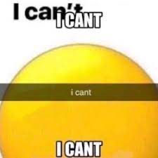
asanoonecares:
cant fucking stand this homo shit rn
geniusuk:
see yourself out then
junkyute:
ummm solar??
solarsystem:
yes junkyu
junkyute:
i dont want to alarm you and dont look but
junkyute:
the president has been staring at you for like the last ten minutes
junkyute:
it is sort of scary please don't look
asanoonecares:
LMFAOOOO?????
cherryblossoms:
he what now
cherryblossoms:
i thought u didnt have any classes with him how would u not have fucking seen him before
solarsystem:
I DONT IM CONFUSED AS FUCK
solarsystem:
WHERE JUNKYU IM CONCERNED
junkyute:
i think he goes around and helps different teachers during his free period
junkyute:
i guess he just decided to come in here today
junkyute:
anyway i told you don't look
junkyute:
maybe he wants to say something to you!
cherryblossoms:
fucking weirdo is just being a creep
geniusuk:
sounds about right
geniusuk:
he doesn't seem like the most normal guy im ngl
cherryblossoms:
he seems like he needs to be kneed in the balls
cherryblossoms:
by me
solarsystem:
how ab not
solarsystem:
i'm not looking but that is odd
solarsystem:
i'm just gonnnnaa......... mind my own business
asanoonecares:
@jihoney
jihoney:
what the fuck do u want
asanoonecares:
LMFOAOOO HE SAW IT IMMEDIATELY BROS BEEN CREEPING IN THE CHAT
jihoney:
Stfu i have done no such thing Peasant my finger hit the notif
asanoonecares:
yeah ok be fucking for real Weird Mf
asanoonecares:
u mad bro?
geniusuk:
no he is
cherryblossoms:
HAHAHAHAHAH
jihoney:
i fucking Hate u people

Solar felt a bit awkward since earlier when Junkyu told her that. She never made eye contact with Jungwon after that class, she didn't even acknowledge that she knew he was there. She just went about her day like she never knew, figuring it was better that way. Never again would she bother approaching him or even talking to him unless she had to, like during the debate this Friday.
The school day had gone by as fast as ever, just like the entire week had been. She couldn't say she was ready for Friday even though it was tomorrow, but she had to be by tonight.
Thankfully, she had some great help.
By the time the last bell had rang, she was ready to go home. She found herself thinking about the committee that Sunoo and Jake had been advertising over the intercoms every morning since Monday, and how they apparently appointed her already without even asking. The more she thought about it, the more she realized she really didn't know the first thing about planning a dance.
"Hey, Sol, have you seen Jihoon?" Junkyu calls from somewhere behind her, pushing through all the students that were pouring through the halls to leave school. The innocent boy finally catches up to where she was standing on the side of the hall, "I was gonna ask him for a ride home, but I haven't seen him anywhere."
Jihoon... Jihoon... she racked her brain, but she hadn't seen much of him for days even. Really, she hadn't even got to talk to him too much. She thought her conversation with Hyunsuk made her feel better about what was up with him, but he didn't seem to be coming around like Hyunsuk assured her.
"Nope," she finally shrugs, "I don't know what's up with him, he's been being weird all over again."
Junkyu frowns at this. Even he wasn't blind enough to not know what was going on, but he didn't think it was his place to tell Solar. "Oh, that's not good," he breathes, "I think he's just worried about you, but Jihoon doesn't seem to know how to deal with stress too well."
Solar shrugs again, not seeming to really buy that, "Yeah, that's what you and everyone else has been saying."
Junkyu could tell talking about Jihoon seemed to make her sad, so he hurriedly cheerily changed the subject, "well, I can just walk home with you, do you want to work on our math homework together?"
She didn't really think about it much before nodding, "sure, I think Sunoo is coming over later to help me practice my debate, so you can provide some feedback," Junkyu makes an excited noise of agreement, "but first, I gotta head to the front office to talk to Sunoo and Jake about this homecoming committee thing, you can come, too."
With that, the two make their way through the halls towards the front office. They were practically a ghost town now, with no one in sight since everyone was always so eager to get home. Most students didn't even think about staying after school.
Her and Junkyu made small talk as they walked, finding themselves going on about Hyunsuk and Cherry and how cute it was that they liked each other. Even if Cherry hadn't admitted it yet, Solar swore she had to like him or she wouldn't of agreed to go on a date in the first place. So cute.
"Say, Junkyu, you would probably be good at planning a dance," she'd hummed, not paying attention to anything else as she looks to her innocent friend walking beside her.
It took Solar a minute to realize Junkyu wasn't listening to her. All of a sudden, he looked like he was lost in the stars as he was staring ahead of them, his brown irises growing wide with concern. He seemed to be trying to process what to do as Solar was trying to process what the hell was wrong with him, before she finally decided to look towards what he was looking at.
Once she realized, she'd halted in her tracks, but he was already approaching her.
"Uh... Solar, right?" Jungwon clears his throat awkwardly, brown eyes darting anywhere that wasn't at her.
Solar blinks at him a few times. She did not know what was going on. First, he was staring at her, and now, he was trying to talk to her?
And to think she was just going to try to avoid him from now on.
Junkyu noticed she seemed to be in shock, so he hurriedly elbowed her gently to snap her back into reality. Realizing her idiocy, the brunette coughs a bit to clear the air, "yeah, did you want to practice our debate or something? Because I'm not really in the mood right now."
Jungwon didn't find her funny.
In fact, he found that quite the opposite. There's a blank look on his face as he monotones, "well, I would prefer to save embarrassing you for when you're in front of the entire school, so no."
"Great, what do you want then, Jungwon?" she sighs, not finding him funny either, and wanting to just go talk to Sunoo already.
"Um, Solar," Junkyu calls out to her, but his voice was that of a baby. It was barely a whisper as he grabbed onto her arm like a child to their mother, yanking it to try and get her to pay attention to him so he could show her a very clear problem that was approaching them.
But she was in la la land, completely oblivious to what was about to happen. The bad part about that was Jungwon was too, as he was trying to work up the courage to say what he needed to say. That was it, nothing more.
"Solar... we might have a problem," Junkyu calls again, a bit louder this time.
"Look, I want to say I appreciate you-"
"-She doesn't want your appreciation, it's a little too fucking late for that."
Solar jumps in surprise at the sudden voice she was not expecting to hear right then. Her eyes are wide once she realizes what was going on, and what Junkyu was trying to tell her seconds again. Jihoon had pushed the two of them aside, and he was practically getting in Jungwon's face with a clear indication of what he wanted to do.
Jungwon's facial expression was as blank as ever. Clearly, he was uncomfortable with the proximity from someone he didn't know, as he slowly took a few steps back. But Jihoon just got closer again.
"I really wasn't talking to you," Jungwon sighs, annoyed by the bother of whoever this guy even was, "I don't think she really needs a white knight."
"No one's a white knight, I'm just doing what needs to be done."
Jungwon opened his mouth to speak again, likely to ask what it was that even meant. He didn't think this guy would actually hit him, after all, he didn't know Jihoon or anything about him at all. He didn't know the deep anger that Jihoon had built up for him.
Which meant he didn't know that he was going to swing his fist until it was too late and he was stumbling backwards, holding his cheek as he tried to catch his balance.
"Jihoon, what the fuck is wrong with you!" Solar screams, running forward to grab his arm and pull him back with all of her might, "You're seriously a fucking idiot, you'll get in so much shit for this!"
He ignored her. "Are you too good to fight back?" Jihoon scoffs, stepping forward again as he yanks his arm out of Solar's grasp, "you and your friend's are so fucking fake. It's bad enough that they act like they care about her, so don't even think about trying to act like you suddenly do."
Jungwon stands up straight again, his hands falling back to his sides. His cheek was no doubt going to bruise, but yet he didn't really look phased. He didn't show anymore emotion than usual. He just stared, he stared at Jihoon and didn't say anything.
Until, finally, he mocks, "I really don't have time to deal with an emotional wreck like you."
With that, he turns around and tries to walk away. Jungwon was bold for that, too bold for his own good.
"Jihoon!" Solar screams again, grabbing his arm and trying to pull him back with all of her strength, but the boy was too angry. He would overpower her no matter what she did, and that was the unfortunate truth.
Jihoon ripped his arm out of her grasp again. He catches up to Jungwon's walk, hand gripping the back of his school uniform and pulling him back until he slammed against the tiled walls. Jungwon didn't even have time to react as the boys fist was slamming into face again, right into his nose.
A crack echoed through the quiet halls. He was breathing heavily with adrenaline, still holding Jungwon up by his uniform collar, before he dropped him. The impact to the nose was bad, it sounded like it could've even broken it. Jungwon was no doubt in pain even if he didn't want to show it. He didn't move when Jihoon let him go, he just stood there against the wall, his hand slowly going up to cup his nose.
His fringe falls in his face so no one could see his expression anymore. His hands covered the rest of it, but it wasn't long until blood began to drip from his chin onto the floor.
"Oh my God..." Solar began to panic, not knowing if she should try to aid him or not. "Jihoon, what the fuck is wrong with you?!" she turns to scream at the boy, but he was gone. He was walking down the hall towards the exit as if he hadn't just assaulted someone on school property - nonetheless the school president.
"Jihoon!" she yells angrily, "Are you not gonna fucking say something?! I don't even know who you are anymore!"
She didn't.
Tears tug at the corners of her eyes, and she tried to steady her breathing as she turned back to the boy. This was the last thing she needed.
"I'll go try to find an ice pack at the front office," Junkyu mutters, running off down the hall.
It was just her and Jungwon.
"Hey, are you okay?" she awkwardly asks, even though it was a stupid question. "You're definitely gonna need to get that looked at, there's probably no one in the nurses office," she goes on.
But Jungwon didn't say anything. He didn't even move. He was just stuck there, frozen in time, covering his face as blood continued to drip on his uniform.
Solar clears her throat, realizing that for the first time - she felt bad for Jungwon. That only happened because of her, she hated him with all of her guts, but he was still a human that didn't deserve to get beat up, especially when he already had health issues.
"Here, come on," she offers, stepping forward. She didn't process what she was doing as she grabbed his arm, gently tugging him to come with her towards the nurses office. Once she realized what she was doing, she felt like an idiot, like he was going to call her weird or tell her to fuck off.
But he didn't, he let her pull him.
And they walked together.
Chapter Thirty
"Well, it's not broken," Solar vows, squinting her eyes to see the injury better as she continues to dab it with a wet cloth. Jungwon was silent, and had been for nearly the entire time. He was sitting on the counter in the nurses office next to all the cabinets that held the supplies, and Solar had been standing basically in between his legs to clean his wounds as they dangled there and he stared off somewhere behind her, seeming to dissociate from the entire situation.
She felt a range of overwhelming emotions. More than anything, she was confused, she was angry, and currently, more awkward than she had ever felt in her life. It was not on her bucket list to be this close to Jungwon, nursing him back to health as if that was her job at all - or as if he deserved her help. But here she was, being the bigger person she always had to be.
"Does it still hurt?" she asks cautiously, but didn't wait to lightly dab some alcohol onto his cheek where the bruise was, hoping it would help it not be so bad.
Though, the second it grazes his skin, Jungwon's eyes suddenly bolt to meet hers since she was already looking at him. She jumped at the abrupt motion, his gaze seeming to burn holes into her, and without meaning to, the cloth falls from her hand, causing her fingers to tap his cheek before she realized.
"Sorry..." she mutters, feeling embarrassed even more from their proximity. Quickly, she bends down to grab the cloth again, before standing back up to bring it back to his cheek, "it should help it not bruise so badly."
She knew he was in pain, he had to be. Every now and then, he would wince ever so slightly, but that was it. She wasn't sure how he could take two punches to the face so casually, but he had. She knew Jihoon packed a punch, and that he was stronger than him. It had to be painful.
"You shouldn't let him control you like that."
His words had her halt her actions from shock. She furrowed her brows, not seeming to understand. "What do you mean?"
Jungwon stared at her as if she should know exactly what he meant, "your boyfriend. If he reacts that way to people outside of your circle talking to you, that's a clear indicator he's controlling."
Her hand seemed to be frozen by his cheek, holding the cloth there. She was in a daze as she processed what he just said to her, before her eyes widened a bit. "Oh... no, Jihoon isn't my boyfriend," she corrects him with a dull exhale, "he's just my best friend. He just doesn't trust you or any of your friends, and he's mad about - you know, you not being the nicest person," she clears her throat awkwardly, not really wanting to talk about that fact, "I'm not really sure what's gotten into him recently though..." her voice trails off as she lost her train of thought.
"It's not my place to say, but he's acting like that out of jealousy," Jungwon deadpans.
"Jealousy? Well, yeah, but we already talked about how I'm not going to replace him, I mean, he's been my best friend since we were kids," she shakes her head, disagreeing with his statement because it just didn't make any sense to her.
For the first time, Jungwon chuckled. She was caught off guard by seeing him show some kind of emotion, so much so she did not know how to react.
"Not that kind of jealousy," he finally explains slowly, as if he was talking to a child, "a friend doesn't get jealous like that."
"Huh?" she gawks, "No, that's not - Jihoon isn't like that."
"People think you're dating for a reason, you know, you're the only one who doesn't."
She guessed people did ask her that question quite often. But that didn't mean Jihoon thought something like that, that didn't mean her childhood best friend had feelings for her.
"Just don't let him control who you're friends with, that's not what a good friend does," Jungwon sighs, his face falling back to the blank state it usually was, voice as monotone as ever as he clears his throat, "and... uh... I was trying to say I appreciated you helping me when I fainted."
She pursed her lips as she took that sentence in.
"Sure, don't worry about it," she finally nods with a small smile, "how about you try to maybe take care of yourself? Especially now that half of your face is bruised."
He shrugs. "I just do what's important."
The door to the nurses office had opened behind them, causing the brunette to jump from the sudden sound. "Uh, hey guys - Jungwon, how are you feeling?" Sunoo had been calling as he, Junkyu, and Jake entered. Though, once they saw the odd proximity between the two, the three seemed to stop in their tracks across the room.
Realizing how weird it looked, Solar hurriedly scurried away to sit on one of the chairs against the wall. Jungwon had stood up straight, dusting his pants off as he mumbled, "Fine."
Sunoo and Jake exchanged looks, as if having some kind of telepathic conversation, before Sunoo hums, "okay... your face is pretty bruised, what are you gonna tell your parents?"
Jungwon was already walking to the door to leave. "Accident," is all he responds blankly.
Accident? Solar processed, he wasn't going to tell on Jihoon?
That would be the nicest thing he'd probably ever done, even though Jihoon deserved it.
Jake had followed Jungwon out the nurses office, leaving Sunoo and Junkyu to stand there. Sunoo seemed to think for a moment, before he rose a brow, "is it safe to ask what even happened?"
Rising to her feet so they could all make their way home, she tried to find the right words to even explain. All the new information she had learned was still registering in her head. "I think me and Jihoon need to have a serious talk."

PRIVATE MESSAGE FROM
jihoney
jihoney:
hyunsuk
jihoney:
holy fuck i have fucked up big time
jihoney:
i don't know what's wrong with me i'm a fucking idiot
jihoney:
i feel like a joke
jihoney:
i literally ruined everything
jihoney:
i'm probably going to get expelled now too
geniusuk:
whoa man calm down
geniusuk:
chill chill stop typing
geniusuk:
im getting ready to go to the ice skating rink with cherry
geniusuk:
a guy doesnt know what to fucking wear for this shit
geniusuk:
what the hell happened?
jihoney:
fuck
jihoney:
idk honestly i just did something really fucking stupid
geniusuk:
ok but what IS really fucking stupid
jihoney:
i might've beat up that twirp
jihoney:
not too bad but
jihoney:
enough to do blatant damage and get me expelled
jihoney:
also enough to make solar hate me probably and think i'm a crazy piece of shit
geniusuk:
yo jihoon what
geniusuk:
WHY would u do that
geniusuk:
i mean i get u hate the guy cus hes an ass and u have feelings for ur best friend
geniusuk:
but its not like they talk to each other
jihoney:
i just
jihoney:
i think he was apologizing to her
jihoney:
or saying some sappy shit
jihoney:
and i was already cautious bc of the group chat this morning
jihoney:
idk i just lost it
jihoney:
i dont trust him at all hes fake as fuck all of a sudden gonna suck up to her just like his fucking friends
geniusuk:
man
geniusuk:
i dont like them either but this isnt the answer
geniusuk:
ur letting ur jealousy control u man
jihoney:
yeah i fucking realize
jihoney:
now i lost her for good
jihoney:
i wish i would of just told her
jihoney:
this is fucking terrible
geniusuk:
alr jihoon calm down
geniusuk:
where r u man? r u driving?
jihoney:
no i left my car
jihoney:
im just walking
jihoney:
idk anymore
jihoney:
this is fucking helpless
geniusuk:
bro chill
geniusuk:
just send me ur location man
Chapter Thirty-One
Cherry leaned against the railing along the ice skating rink, blowing air in her cheeks as her eyes darted every which way. Pulling her jacket tighter against herself, she finds herself wondering if maybe this was a bad idea after all. For all she knew, this could be some kind of dumb ass prank between her friends, and she would not be very happy if it was.
She wouldn't admit it out loud, but sure, maybe she had a little something for Hyunsuk. He was sweet, he was the only one out of all the guys that always looked out for her, always had her back. He was different.
So it wouldn't be a lie to say she might have been looking forward to going on a date with her childhood friend.
Though, she wasn't so sure now that she realized she must be getting stood up.
An annoyed sigh leaves her lips as she spins around, deciding that since she's here, she might as well try to enjoy herself. She wasn't the best ice skater, but she wasn't the worst either. With a little more practice, she would be a professional, if you asked her.
She probably should've known better.
But it was okay.
Just as she's getting ready to step out onto the ice, a certain person catches her eye. She had to squint to process what she was even seeing - this person, whoever it may be, looked like they were in the Olympics, as they spun around the ice rink like a clear show off. She could only watch for a minute, feeling a little jealous that someone could do jumps and tricks so effortlessly. It was impressive.
She watched them longer than she planned, until the mystery person had walked towards the exit of the rink. It took her a minute to process they were walking towards the exit she was standing by.
Upon realizing, she moved out of the way. That was when she saw who it was.
It was one of those fucking popular kids. And at that, it was one of the worst ones, the weirdo that had been around with every woman that existed in their school.
You've gotta be fucking kidding me.
"Well, were you enjoying the view?" whatever-his-name raises a brow as he exits the skating rink, a smirk tinting on his lips.
"I could've enjoyed it more if you broke something," is all she says as he leans against the railing besides her, turning away so she didn't have to look at him.
He chuckled a little bit, but didn't appear phased. "There's gotta be a reason you're here, no? You don't really ping me as the skating type."
"Right," she rolls her eyes, "because you know me so well..." her voice trails off as she glances to the boy besides her, pursing her lips in thought for a moment before offering, "to be fair, you don't either."
He coughs a bit, seeming a little weird suddenly, but she wasn't sure why. "Yeah, I guess it's not my most masculine hobby," he awkwardly mumbles. She didn't know it was possible to make such a dumb ass feel awkward, but there was a first time for everything. "It's an old hobby of mine, I still do it every now and then when I need to clear my head."
"Uhuh..." she mutters, "that's cool, I guess."
"Now you're turn," he urges, "why are you here, Cherry?"
She wasn't aware he knew her name. And she didn't know if she was uncomfortable or not.
Cherry had to remind herself that this guy was a walking human piece of shit. This was not worth her precious time in the slightest. But she was also stuck at the skating rink alone now, so did she really have much to lose? It wasn't like she was dumb enough to fall for any of his ridiculous flirting attempts. At the most, she could have a little fun with an idiot like him.
So she shrugs, "Just a recent hobby of mine. It's nice when there aren't obnoxious high schoolers like you here."
"Oh, please," he snorts, "we both know you're glad to see me."
"Dude, I don't even know you."
He appeared offended. "Wow, you might be the first girl that's ever forgotten my name."
She wrinkles her nose in disgust. "And yet you seem flattered."
"Intrigued," he corrects with a cocky smile, holding out his hand, "it's Sunghoon."
Her eyes glance from his hand that he was holding out before back to his face, realizing what he thought he was doing. "Yeah, no, we're not doing that," she shuts him down immediately, snickering to herself at the fact anyone would let such a dirt bag touch them.
Little did she know, he only thrived off of a challenge.

"Solar, you don't look so good," Junkyu is fretting, staring at the girl that was standing in the middle of the bedroom, whilst he was sitting next to Sunoo on the edge of the mattress, "do you want to take a break?"
The brunette sighs, raising a hand to rub her temples out of stress. Sunoo felt bad for her, as he hums, "yeah, feel free to take a break. Your debate is solid, don't worry about perfecting it anymore, you've had a long day."
She finally obliges, padding across the carpet to fall onto the bed next to her friends. They exchange glances before looking to her, wondering if she was gonna say anything about what happened. Ever since they all walked to her house from school, Solar had been pretty dead silent about it. The only thing she spoke about was her debate.
But after hours of practicing, she looked like she was drained. It was clear she was bothered.
"I just don't get it," she blurts, "I mean, we made up, and he was fine a few days ago. We went on that hike together," she's thinking out loud dully, "I thought we were good..." her voice trails off as the sadness fills her veins. She didn't want to lose her best friend, but Jungwon was right, this wasn't how a friend - nonetheless a best friend - acted at all.
Something had gotten into Jihoon, and if it was what Jungwon said, she felt like there was only one thing she could do to help him - and that was to get him to get over it. Even though she wasn't sure if it was true, she didn't think she could hear it from Jihoon, anyway. It would be too much for her. The last thing she would ever imagine is hearing Jihoon say those words.
She didn't know when she would be ready to talk to him, even though she needed to.
"Jihoon is clearly conflicted with himself," Sunoo tries to advise, "I don't know him like you guys, but I have seen how he looks at you, Solar."
Not this again, she couldn't hear anymore of this.
A groan leaves her lips as she grabs one of her pillows, falling flat onto her back and covering her face with it. "I know, okay!" she whines into the pillow, "Stop saying it, it's making me nauseous!"
"Sol..." Junkyu asks softly, finding himself needing to know, "how do you feel about Jihoon?"
Silence falls over them. Solar was in deep thought, trying to figure out how to answer that.
Finally, she throws the pillow aside to peer at her friend. "What do you mean exactly? He's my best friend since I was like four."
Junkyu nods, but that wasn't the answer he was looking for, "yeah, Sol, you keep saying that, but that isn't how you feel. Jihoon is your best friend, but how do you feel about him?" he rephrases, "More so, how would you feel if he really said it to your face that he has feelings for you?"
She winces as if someone just decked her in the face. "I can't even think about that," she shakes her head, "I just can't imagine seeing Jihoon that way."
It was quiet again. Nobody seemed to know what else to say, until Sunoo cuts in, "as far as turning him in, I don't think Jungwon's going to. I'm not sure what he's gonna say when people ask - but - at least there's that, even though he's in pretty bad shape, it could've been way worse."
"Yeah, I - I sort of feel bad for him," she confesses, "today was the first time I've ever seen him be a normal person and he basically got beat up for it."
Sunoo shrugs, "I do, too, but he was being an asshole for quite the while."
"True."
"So does that mean you're friends now?" Junkyu puzzles, "What about your dramatic competition for the election?"
Solar finds herself chuckling. "No, we are not friends just because we had one normal conversation, Kyu, trust me. I don't know if I could be friends with someone as pretentious as Yang Jungwon."
Chapter Thirty-Two
The debate rolled around faster than Solar would've liked. After the events of Thursday, all she wanted was to go home and try to figure out what she was going to do. She didn't want her friend group to fall apart over this, and she didn't want to lose her best friend, either - but she was beginning to wonder if losing Jihoon was just inevitable.
She had dreaded seeing him that day. She would need some time to process before she was even ready to talk to him, and she found herself worrying about Jihoon instead of the very important speech she had to give in only a few hours.
But Jihoon never showed up to school.
It left her in a state of panic. She didn't know if he skipped on purpose, or if Jungwon had tattled and he'd gotten expelled. Jihoon could not afford to get expelled from their school, it was hard enough to even get into it, his mother would kill him.
It wasn't like Solar didn't think he deserved it - he did, but as his friend, he knew how hard he worked to get into a private school like this one.
But before she knew it, she was standing on the assembly stage in front of her entire school, preparing to start the debate. Her eyes rake over the hundreds of students, searching for someone she knew she wouldn't see. It reminded her of the last time she gave a speech and Jihoon had been upset with her. He never seemed to really be there when she needed him recently.
Maybe that was really it for their friendship.
"Now, our student president candidates will proceed to give a five minute speech about their plans for bettering our school," the principal had been saying into the podium microphone. Solar's green eyes look from where her friends were sitting, smiling to herself as Cherry had loudly cheered for her even though the room was dead quiet since the principal was talking. Slowly, she glances to Jungwon, who was standing on the opposite side of the principal, but he was looking off into space. "After each candidate gives their speech, they will then have fifteen minutes to debate who has the betterment of our school in mind, and the necessary measurements to do so."
She snapped back into reality, it was time...
"Now, candidates, please take your podiums..." he announces, stepping back to allow Jungwon to have the podium he had been standing at.
Solar cleared her throat, stepping up to the other one she was by. Jungwon had finally met her eyes when she looked to him, as if asking if she wanted to go first.
Feeling her heart in her throat, she shakes her head, giving him a look that told him it was his turn. The current president nods, before he looks to the front down at the audience, "Good morning, as the current student council president of two years, I'd like to restate what our school means to me and the importance of the quality of our education..."
She found herself dozing off, not really wanting to listen to him talk. Sure, they made some improvement as far as Jungwon being less mean, but just because he thanked her once didn't mean she would forget the way he'd acted all those other times.
"...I believe it's important we continue to offer volunteering at our local homeless shelters, and continue our fundraising for local charities, while keeping the amount of school social events limited to therefore focus on our educational studies... However, as always, that does not include well known events such as homecoming..."
She thought his speech would never end. When it was finally her turn, Jungwon had closed off his speech, before his eyes wander to her, sending her a slight nod as if to let her know she could go now.
There was a lump in her throat as she looked away from him to the podium, stepping forward hesitantly. Here goes nothing, she told herself. Giving the speech would be the easy part, since it was what she had practiced. The only thing she couldn't technically practice was the debate, since she would never be able to know exactly the points Jungwon would make.
With that in mind, she knew she had to keep her head in the game. She could feel a little bad for Jungwon, but she wouldn't give up on this campaign.
So, clearing her throat, she begins as confidently as she could manage, "Today, I come to you as a new voice, to assure you that a bigger change can occur in our school. A change that is necessary, but furthermore, a change that'll help our students to enjoy the final years of high school..."
She finally finished her speech.
Just when she thought she wouldn't be able to do it, she did. Students had clapped as the both of them finished, and she let out a breathe of relief that at least one part was over. Cherry and her other friends stood up from their chairs, yelling and screaming like they were at some sort of concert. She loved their support, but it had her feeling a little embarrassed as she felt her cheeks burn from the sight of her goofy friends.
All she had to do now was get through the debate.

"While it's important to keep the quality of our education in mind, Jungwon, that doesn't mean we have to take away the valuable parts that make high school memorable," she maintains, "while fundraisers and volunteering are great for our school and the community, they can be done while still holding social events centered around our sports teams and dances for celebrations."
Jungwon didn't seem to be expecting her to make as many comments as she had been. But his face remained blank as per usual, as he leans forward to speak into his own mic, "Of course, but having too many social events means an overload of funding that would take away funds for more important matters such as education."
"Well, that's why our students can in turn have more fundraisers that can be used to support the funding of the events we choose to hold - and based off of the funds raised, the student council can in turn budget for what is affordable."
She was making good points, good enough points that had Jungwon caught off guard for a second. She couldn't tell because he didn't show any emotion, but because he would blink an extra time and narrow his eyes as he glanced to her ever so slightly.
"While that is possible, it's important to recall the purpose of high school is not to hold social events..."
By the end of the debate, Solar felt proud of herself.
The principal had announced time was up, before letting them know they both did an equally wonderful job. With that, the students had been dismissed, and Solar watched them all pour out. Her friends were likely going to wait for her in the hall, since she and Jungwon would be dismissed after the building was clear.
Once pretty much everyone had gone back their classes, Jungwon had made his way off the opposite side of the stage. Solar watched him go, rushing away like he always did, and before she could change her mind, she was rushing after him.
"Hey," she calls out as she jogs a bit to catch up to his quick walking pace, "hey, did you tell the school about Jihoon?"
Her question caused him to stop in his tracks. Jungwon slowly turns to face her, and it was the first time she had really got a clear look of his face again. There were no doubt a few bruises on his face, but he seemed to have used some makeup to cover them up to the best of his ability. Still, it didn't take a genius to recognize them.
It almost made her feel bad all over again, but she needed to know the answer.
"No," he deadpans after a moment. Solar opened her mouth to say something, before he cleared his throat hesitantly, "you made valid points during the debate. Good job."
And before she could say anything in response, he spun on his heel and left. She only watched him go, blinking a few times as she thought about what she just heard. Jungwon was weird.
Chapter Thirty-Three
new post
solarkim

solarkim: one speech down, x amount left to go! vote for me as ur student council president for LOTS of guaranteed fun :D
chxrry: MY GIRLBOSS
jaehyuk__: great debate today!!! proud of you
asahihi: this does not make me want to vote for you
junkyuuu: #TEAMSOLAR!!!!!
sunshinesunoo: u did great!
solarkim: @asahihi it should
solarkim: @sunooshine @jaehyuk__ thank u guys :)
rikiniki: u have my vote i love watching jungwon lose
jungwongarden: @rikiniki wtf?
jungwongarden followed you

JUNGWON IS MEAN
rikiniki:
sus
rikiniki:
the world is watching u jungwon
heeheeseung:
god what are you bothering him about now
jbird:
probably the debate it was pretty intense
jbird:
she DID NOT come to play LMMAO
jakeys:
i thought she did great, definitely giving jungwon a run for his money!
jakeys:
but u did good too, jungwon, as always
rikiniki:
i saw u
injangwon:
dude what are you talking about
injangwon:
why are you on some shit every time you talk
jbird:
LMAOOOO FR
rikiniki:
brooo this guy is making a move
rikiniki:
her bf gonna beat u up again
jbird:
NIKI IS UNHINGED
sunooshine:
niki that is really not cool to say at all
sunooshine:
solar does not have a boyfriend period. she's very upset about what happened
rikiniki:
idc it was funny
rikiniki:
get ur girl b4 its too late jungwon
injangwon:
?????
injangwon:
i dont have time for this shit
jbird:
have yall even seen the guy that punched jungwon around
jbird:
i thought about giving him a piece of my mind physically im ngl
heeheeseung:
thats really not the way to solve problems
sunooshine:
that would make quite literally everything worse, too
sunooshine:
if jungwon is letting it go, we have to as well
injangwon:
who said i was letting it go?
rikiniki:
OHHH SHIT
rikiniki:
FIGHT TO THE DEATH
jakeys:
niki u r helping no one
rikiniki:
yeah and what i only help myself
rikiniki:
by making fun of jungwon
rikiniki:
L
jbird:
this GUYYY
injangwon:
i have hw to do
injangwon:
goodbye
Jungwon sets his phone down, heaving out a deep sigh as he leans forward on his desk. His hands reach up to caress his aching temples. Most days, he ended up with a headache, likely from lack of food and dehydration. But he was just busy. On top of his presidential duties, preparation for his campaign, academic competitions, and dual credit courses - he just couldn't focus on anything else. School and his education would always be the most important thing to him.
But for the first time in his life, he found something other than academics on his mind. Jungwon pursed his lips, feeling a bit frustrated that his brain was thinking of such. For the first time ever, he found himself almost wanting to talk to someone, someone he thought he hated and had avoided for the longest time.
His mind reminisces on what happened, and his fingers reach up to touch his cheek as if he didn't think it was real. Wincing a bit at the feeling of the purple bruise on his skin, he heaved out a sigh. Why didn't he fight back? There was no point. That guy had been driven by emotion, and Jungwon didn't have any of that.
He clearly had some jealousy, but he didn't get why he targeted him with it. Sure, he hadn't been the nicest to Solar, but he was at least saying thank you. Why did that get him punched in the face? More so, why didn't he go after any of Jungwon's other friends that were much closer to her than he ever would be?
Rolling his eyes, he shakes his head in annoyance. It was Friday. He had the entire weekend to not be at school, but to study and finish his homework.
And maybe take Maeumi on a well deserved walk.

PRIVATE MESSAGE FROM
solarsystem
solarsystem:
hyunsuk have you heard from jihoon?
solarsystem:
i know he didnt get expelled so where was he today?
solarsystem:
also how was your date with cherry? every time i ask her about it she gets mad at me
solarsystem:
and i can't tell if it's because something cute happened and she's embarrassed or if something not good happened and she's angry
solarsystem:
but i DID notice you two werent sitting together today so spill i am losing my mind out here
geniusuk:
uhhhhhhhhhh
geniusuk:
well i have several things to say and i dont know if u will be happy with them
solarsystem:
SPILL IT RIGHT FUCKING NOW HYUNSUK
geniusuk:
OK CALM DOWN
geniusuk:
i may or may not have sort of i guess technically stood cherry up
solarsystem:
CHOI HYUNSUK??????????????????????????????????????????????>>>>>>>>>>>>>>>
solarsystem:
HELLLO??????? WHY WOULD YOU BLOW IT
solarsystem:
GOD FUCKING DAMMIT I WAS HOPING YOU KISSED OR SOMETHING
solarsystem:
YOU WERE SUPPOSED TO BE MY CUTEROM COM COUPLE AND U BLEW IT WTF
solarsystem:
ugh what the fuck would be good enough to do that and DID you at least TALK TO HER AND SAY SORRY
geniusuk:
uhhhhhhhhhhhh
geniusuk:
okay well....
solarsystem:
omg ur an idiot no wonder why shes been so damn cranky
geniusuk:
i didnt think she would really care!! an emergency came up
geniusuk:
its not like she really likes me i figured it wouldnt be a big deal
geniusuk:
but shes been sort of avoiding me
solarsystem:
omg IDIOT u need to fucking explain to her
solarsystem:
and me what the hell was this emergency
geniusuk:
well speak of the devil it was jihoon LMAO
geniusuk:
when he beat up jungwon he ran off somewhere and was texting me all this emo shit
geniusuk:
he was not in a good state of mind so i had to go pick him up
geniusuk:
he was fucked up, sol, i didnt want to risk him doing something even dumber than he alrdy did
solarsystem:
ugh leave it to jihoon to fuck up everyones day
solarsystem:
im glad u still have his back even when he doesnt really deserve it
geniusuk:
in jihoons defense him beating up jungwon does not affect me
geniusuk:
im ngl to u solar i could careless lol
geniusuk:
im more worried about you two
solarsystem:
me too
solarsystem:
i know jungwon is an ass but hes gotten better
solarsystem:
and say what u want but he didnt deserve to get beat up
solarsystem:
jihoon is lucky he didnt get turned in that wouldve been it for him
geniusuk:
ig
geniusuk:
hes just got some conflicted feelings right now
geniusuk:
they're really getting to him solar i promise he would never want to lose you
solarsystem:
yeah people have been telling me a little bit about that
solarsystem:
but i just dont understand
solarsystem:
we're best friends
solarsystem:
it feels like hes just suddenly being a dick for no reason and fucking shit up for me
geniusuk:
you know jihoon wouldnt do that
solarsystem:
but he IS
solarsystem:
does that mean youve seen him
geniusuk:
no not since yesterday
geniusuk:
i took him back to get his car and then he went home
geniusuk:
all he said was that he was gonna distance himself for a while to figure himself out
geniusuk:
but he didnt explain what that included
solarsystem:
why tf did it include him skipping school
geniusuk:
no idea
solarsystem:
well let me know if u hear anything
solarsystem:
its probably best if we give each other space
solarsystem:
but i still wanna know if hes ok
geniusuk:
he'll be fine, sol
Chapter Thirty-Four
It was weird not talking to Jihoon. It was even weirder not having him randomly show up at her house. Solar could act like she was annoyed when he did so, but of course deep down she never was.
It appeared that she would be spending her Sunday alone in her sad, empty house. Well, empty except for Nana. She deemed that she would take him on a nice walk that day since it was pretty outside and she didn't have any homework or speeches to write. The only important thing she had that week was the new homecoming committee thing Jake and Sunoo invited her to. She'd never done anything like that before, but she figured it wouldn't be that demanding.
So, she'd gotten up, gotten dressed, and put Nana's harness and leash on before they trotted down the stairs together. After packing a water and some dog treats in her little backpack, she slung it over her shoulder and left the safety of her home to walk around the neighborhood.
She took Nana on walks at least a few times a week. Ever since her first encounter ever with mean Jungwon, she had avoided going that route since it was where his house was and she didn't want to run into him again.
But that day, she decided she would take it again.
It wasn't like she wanted to see Jungwon. She just decided she liked to take that route. Sure.
So, she made her way down the sidewalk, humming along to the song that played through the one airpod she had in. Nana happily trotted along, not having a care in the world. She usually would let him off the leash every now and then since he usually did pretty good.
She let him get used to the route they were going before she did just that. Nana excitedly jumped around, never straying too far away from her, but would just run a little ahead to get out some of his energy.
"Don't go in the road, Nana!" she warns him sternly, as if the dog even knew what she was saying.
Solar giggled as she watched him pick up a random stick he found in someone's yard, before he started running ahead down the sidewalk like a psychopath. The thing was, he was going so fast she couldn't keep up with him.
"Nana, slow down!" she calls out, feeling frustrated since he didn't usually do that. Solar breaks into a jog, not wanting to lose sight of her beloved animal.
But the route they were going went over a hill, so she was having to get quite the workout to try and keep up. Nana only seemed to go faster and faster as she felt herself going slower since she was not the most in shape person.
She yells out to her dog again and again, feeling panic settle in her bones. What was wrong with him? she thought angrily, Nana never acted this way, all for a stick? Where did he even think he was going?!
"Nana!" she yells, finally reaching the top of the hill.
"Sounds like you lost this."
"Oh, Nana!" she breathes out in relief, hurriedly bending over to attach the leash to his collar again that the boy was holding, "thank you so much..." she had been cheerily offering, her brain not processing who had just saved her dog since she had been so concerned for him.
Until she did process who.
"Jungwon..." she clears her throat, not knowing what to say. Her eyes glance down to his side, where she saw his own dog, the one that Nana had excitedly tried to play with the first time they saw each other.
"Hi," he monotones, "I was just taking Maeumi for a walk, when your crazy dog ran up the hill after us with a stick."
She swallowed a lump in her throat. "Sorry about that, I don't know what got into him."
But Jungwon didn't look mad this time. He only shrugs, "I think he likes Maeumi."
Her green eyes look down to the tiny dog, before she chuckles a bit, "Maeumi is a cutie."
Jungwon almost looked like he wanted to smile from her complimenting his dog. There seemed to be something different about him that day, as he was quiet for a moment, looking to the sky in deep contemplation. After a moment of silence, he clears his throat, offering, "well, would you be interesting in walking together? I usually take Maeumi to the park a couple of blocks over."
Oh.
"Oh... um... sure," she coughs out, probably sounding like a dumb ass, "that sounds fun!"
Jungwon didn't say anything. He only nodded in agreement, before walking off ahead of her down the sidewalk. Solar stared at his back for a while, going over what even just happened in her head, before she came back down to reality, running after him.
The two of them didn't say anything for a while. They just walked in silence.
Until she felt obligated to ask, "is your face feeling any better?"
"It feels fine," he responds blankly, "you don't have to keep asking me, it's starting to sound like you care."
Solar rolls her eyes. "Well, sure I do, not everyone is rude like you."
Her words were harsher than Jungwon expected. He didn't really think he came off as rude, did he? He just never paid attention to things like that.
At first, she thought she might've said something wrong, until he quips in return, "Hey, watch what you say, you're still talking to the student council president."
She laughed out loud, cringing physically from how that sounded, "ew, not for long, it'll be a real shame when I beat you."
Jungwon let out a low laugh. He laughed - she wasn't aware he was capable of such an emotion, "sure, I'll let you tell yourself that because I pity you."
Solar gasps dramatically, "see? Yang Jungwon, you're fucking mean."
He only shrugs in response to her insult. But his face wasn't blank and derived of emotion anymore, there was a smile peeking it's way on his lips.

new post
solarkim

solarkim: found the saddest looking stray dog at the park today
chxrry: what in the god damn fuck is going on here
chxrry: SOLAR KIM???? HELLO
chxrry: YOU HAVE SOME FUCKING EXPLAINING TO DO
asahihi: this is an entertaining plot twist
junkyuuu: wait oh my god
junkyuuu: wait i just realized is that the president??????
asahihi: @junkyuuu ur slow.
sunshinesunoo: so glad to see you two getting along:)
rikiniki: LMAOOO HE SCORES
solarkim: @chxrry i have no explaining to do it is a stray dog
injangwon: @solarkim do i look like a dog to you? seriously?
solarkim: @injangwon yes :D
Chapter Thirty-Five
PARK JIHOON HATE CLUB
cherryblossoms:
SOLAR KIM WHAT THE FUCK IS GOING ON
solarsystem:
hi to u too ig
cherryblossoms:
bro did u go on a fucking date with that prick bffr
solarsystem:
i dont go on dates stop accusing me of going on dates w ppl!!!
asanoonecares:
cherry leave her alone solar is just trying out the diff flavors LMFAOOOO
geniusuk:
ok thats sort of funny
cherryblossoms:
yang jungwon is almost a worse flavor than park jihoon
solarsystem:
can yall stop
solarsystem:
we just ran into each other and decided to walk our dogs together
solarsystem:
its not that deep and hes still an ass 90% of the time
cherryblossoms:
u are so fucking naive
junkyute:
stop bullying solar
asanoonecares:
ok
asanoonecares:
@jihoney
asanoonecares:
hey buddy
asanoonecares:
how u feeling
cherryblossoms:
nahhh i know he aint just do that
cherryblossoms:
HAHAHAHA
junkyute:
i dont think hes gonna respond
junkyute:
i wonder if jihoon is ok
junkyute:
@jihoney hope ur ok jihoon! even if ur a meanie
cherryblossoms:
hope hes dead
solarsystem:
yall r weird
solarsystem:
see u nerds at school

JUNGWON IS MEAN
rikiniki:
HAHAHAHAHA THEY WENT ON A DATE
jbird:
see now i try not to take nikis side but i did kinda look like that
jbird:
@injangwon i support u my man
princehoon:
stop acting like jungwon knows how to take a woman on a date
princehoon:
he most definitely does NOT
jbird:
dude where have u even been
princehoon:
busy with the ladies
jbird:
plural?
rikiniki:
sus
rikiniki:
cant be true u havent obnoxiously bragged in days\
jbird:
nah fr LMAO
jakeys:
i thought solar's instagram was cute
rikiniki:
bro
rikiniki:
@injangwon u in love?
injangwon:
do not tag me in ur idiocy
injangwon:
leave me alone
rikiniki:
HAHAHAHA OK KEEP HIDING
sunooshine:
niki, leave jungwon alone
sunooshine:
i'm happy he's friends with solar
injangwon:
we aren't friends
rikiniki:
yall dating alrdy?
rikiniki:
that was quick af
injangwon:
i WILL block you
sunooshine:
it seems like you guys are getting along great to me
injangwon:
i tolerate her
injangwon:
doesn't make her my friend.
injangwon:
see you guys at school

Solar yawned as she continued digging through her locker, trying to find the annoying textbook she needed for her next period. It was only second period, but she was already tired. She hated to say it, but she didn't get much sleep last night. After she got home from her walk with Jungwon, she found herself thinking about it most of the night, but she would never say that out loud.
Jungwon was just weird, to put it simply. He was so mean, but sometimes, it was like he slipped up and let himself go. During those times, she didn't find him so bad.
And then there was Jihoon. They had first period together, but he didn't show that Monday - again. She was worried about him, worried about whatever it was that he was doing that included him "distancing" himself from her. She knew them being apart right now was for the best, but she still figured he would come to school.
Finally finding the book she needed, she closes her locker. Her green eyes scour the halls, wondering where any of her friends were.
She didn't have time to search for them too long, as the school bell rang, indicating it was time for the next class to start. With a sigh, she heaved her bag over her shoulders, turning around to head towards her first class.
In the corner of her eye, she saw the exit doors to the school open. She didn't usually stare at people, but something intrigued her - something told her - to look towards whoever just walked in. And when she did, she felt her mouth fall open.
Jihoon?
She didn't realize she stopped dead in her tracks, gawking at the boy that had just entered the halls. Hurriedly, Solar slams her mouth shut before anyone saw her being a weirdo, trying to regain her composure. What the hell?
Jihoon's usual brown hair was dyed black - something she hadn't seen him do ever - and to top it off, he had blonde streaks dyed into it. Solar cleared her throat, shaking her head at herself in confusion. Weird, why would he just go and randomly dye his hair?
He was walking towards her direction, but his eyes didn't glance at her once. It was like she wasn't even there. She found herself feeling a bit sad, but nonetheless, she kept walking down the hall. As much as she almost wanted to say something, as she wanted to snap at him, she forced herself to look away and focus on where her next class was.
Though, when Jihoon walked past her, she found herself glancing at him again. He got his ears pierced, too? She furrowed her brows together, it was so unlike him.
What the hell was up with Park Jihoon?
Chapter Thirty-Six
"God, I can't believe you ditched me for Park fucking Jihoon," it was obvious that Hyunsuk had explained what happened to Cherry. She didn't seem mad anymore, she was just more so offended. Cherry heaved out a salty sigh, looking over to her best friend, which only made her mood worse as she slapped her arm, "Solar, stop fucking staring at him. Dear God, you're making this that much more painful."
With a pout, the brunette snaps her eyes away from where Jihoon was sitting across the cafeteria. She was just still confused, she couldn't help it.
"I'm sorry, I didn't think you would really care!" Hyunsuk had whined, continuing to defend himself despite feeling bad about it, "how about another try this Friday? I promise I won't let you down, Cherry."
Cherry narrows her eyes at him from across the lunch table, taking a sip of her drink before she looks to the ceiling in thought. "Hmm, I'm not sure if you deserve another try, Hyunsuk."
"Please?" the boy cries desperately, "I thought Jihoon was gonna try to kill himself or something!"
"Then let him!" she snaps in response, "God knows the world would be a better place without Jihoon - even though I was kinda proud of him for punching that president in the face." She started to laugh as she recalled the events. She didn't really blame Jihoon, the guy had it coming. Which was why she found the whole dramatic fight he and Solar were having a bit weird, but she knew it was just because Jihoon wouldn't tell Solar about his real feelings.
As much as she would get a kick out of just ratting him out to Solar, she decided it would be the one nice thing she would ever do for Park Jihoon.
"Jeez," Hyunsuk frowns, "you're harsh, Cherry, it's one of my favorite things about you."
Only then did any of the other friends at the table pay attention to what was going on, it was hard not to overhear. Asahi made a loud gagging sound as he wrinkled his nose, "Can you spare me, please?"
Hyunsuk only retorts with a no.
"Stop being a lonely bitch, Asahi," Cherry ribs with a devious smile on her lips, "before you end up like Jihoon over there."
"Nah, he's just a pussy."
"He'll come back eventually," Jaehyuk chimes in, "he's just having his main character moment or whatever he thinks he's doing with the new hairstyle."
Junkyu had been dully staring across the lunch table to where Jihoon was. "I feel kinda bad," he confesses to the friends, "he looks so - oh..." the innocent boy cuts himself off, his eyes widening a bit from whatever he was looking at, "well, nevermind, looks like Jihoon has some friends now."
Solar turned in her seat to see what Junkyu was talking about, but Cherry slapped her arm again. "He's just being a man whore, it doesn't call for your attention."
A man whore? She thought back to when Jihoon had been randomly sitting with girls when she had to give her first speech, and how she had been so confused about that. Her mind wanders back to everything Jungwon had told her in the nurses office.
Maybe he was right...
With a sigh, she leans her chin in the palm of her hand, disappearing into her own thoughts for the 30th time that day.
"No more talking about Jihoon," Cherry announces, "if I had to hear his name one more fucking time I'm going to lose it."
"What about Jungwon, Solar?" Junkyu pipes up, "Are you guys gonna hang out more?"
Solar makes a playful face of disgust. "No, Junkyu, I wouldn't even really call us friends."
Asahi snorts as he pops a piece of fruit in his mouth, "why the fuck do you lie so much?"

"Hello, this is your student council treasurer, Sunoo! The first homecoming committee meeting will take place today after school, I'll now announce the people that we've chosen to take part in the committee this year! If you hear your name, please meet us in the student council room after school!"
Solar had tuned out the majority of the announcement, until her ears perked up at certain names being called.
"Solar Kim... Yang Jungwon..."
Oh boy. That would be interesting.
So, when the end of school finally rolled out, she put her books away with a deep sigh. Closing her locker, her eyes still felt weird when they didn't see the annoying Jihoon standing there waiting for her. It didn't take her long to spot him down the hall, talking to some student she didn't recognize. Her eyes linger there for a second, and a part of her wanted to run over and bother him, but she knew she shouldn't. She needed to leave Jihoon alone for the time being, it was for the best.
With that in mind, she turns away and heads down the hall towards the student council room, all without noticing the familiar eyes that watched her go.
Reaching the room after a few minutes, she didn't bother knocking as she entered. The student council room was a normal old but small room, with a large round table in the middle and a white board on one of the walls.
And there at the table sat Sunoo, Jake, and Jungwon. Their eyes all jerked to her when she entered, and she grinned as she walked to sit next to Sunoo and across from Jungwon, "hey there, my fellow committee members!" she hums.
Jake chuckled a little bit from her weird greeting. Sunoo greeted her back, making small talk, and Jungwon looked like he just saw the most gruesome sight as he peered at her.
"The rest should be here in a few minutes," Sunoo informs them, eyes looking to the clock on the wall, "if they're not, we can just start without them."
"What exactly do we do, anyway?" Solar questions in confusion, "Do we just come up with theme ideas until we like one? What are the typical themes?"
Jungwon blinked at her from across the table, finding the need to blatantly ask, "have you never attended a homecoming before?"
Solar shrugs, ignoring his snarky tone, "no, I usually skip them."
Sunoo gawks in surprise at her words, "seriously? Oh gosh, we have to change that."
"But to answer your question, that is the first step!" Jake jumps in, and Solar slowly nods.
"Sounds easy enough."
"Okay, well, if no one else cares to show, let's just begin," Sunoo begins, rising to his feet and walking over to the whiteboard. Picking up a marker, he scribbles the word themes onto the board, before stepping back and looking to the three, "so, to begin, let's all pitch in at least two themes, and go from there."
Solar didn't have to think hard as she cried excitedly, "what about a masquerade ball? They always look cute in the movies."
"How about you come up with something more generic?" Jungwon abruptly chides, causing Solar's head to whip to him as a look of annoyance takes over her face.
"Well, I don't hear you coming up with anything," she retorts.
He returns her look of annoyance, before looking to Sunoo and clearing his throat to offer his own idea, "what about The Great Gasby theme?"
Solar blinked at him. "What exactly would that entail?"
The dimpled boys brown eyes peer into hers as he sighs, seeming disappointed in her question, "Sorry, let me put it into simple terms for you - the twenties."
Jake and Sunoo exchanged concerned looks as Solar had scoffed. Jungwon really tended to have an attitude that progressively worsened when he was on school grounds. She would've liked to reach over and slap him across the face, but she knew someone had sort of already done that recently.
"You know, do you really have a reason to be such an ass all the time?!" she wonders in exasperation, not really expecting an answer.
But Jungwon couldn't lose an opportunity to taunt her, "if I didn't, you're sure giving me one."
Chapter Thirty-Seven
new post
jihoonie

jihoonie: food solves everything even deep despair
sukhyun: the hair is a move fr hoon
chxrry: fyi dyeing your hair doesn't make you any less ugly
asahihi: @chxrry LMAOOOOO can't give this poor man a break
junkyuuu: i like ur new hair jihoon!
jihoonie: @chxrry @asahihi can u ppl get out of my comments? OBSESSED.
chxrry: @jihoonie how bout u grow some balls

A long, dramatic yawn leaves the lips of the brunette as she stretches her arms out above her head before flopping them onto the wooden table in front of her. The clock on the wall read strictly 4 PM on a Tuesday, and she was now at the second meeting for the homecoming committee.
Luckily, more people had shown up this time, so she wasn't left to sit and argue with Jungwon. In fact, she hadn't really spoken to him at all today, since he chose to sit further away from her this time.
"Okay, so these are our final line up of themes," Sunoo had been saying as he uses the end of his dry erase marker to motion to the names written on the board, "Jake is going to pass out slips of paper, and everyone is going to write the theme they vote for on it, then we'll tally up the votes. After that, we'll begin planning, and choose who will be sent to buy the decorations."
Everyone makes noises of agreement, and Jake hands out the tiny slips of paper.
Solar pursed her lips as she picked up a pencil, narrowing her eyes at the piece of paper. She found herself wondering exactly what she would want in a homecoming dance, but it was harder to picture than she thought since she never attended one.
There wasn't any particular reason as to why, her and her friends were just never too interested in silly school events like that. And she wasn't sure she was very interested this year, either, but she guessed she might be obligated to go as a president candidate and member of the planning committee.
What a nightmare. She would feel embarrassed attending alone.
Really, when it came to themes, she didn't care too much. Most people would probably wear what they wanted, anyway. So with a shrug, she scribbled down one of the theme names.
Within an hour, Sunoo had tallied all the votes. The boy was in deep concentration as he counted them all for the 10th time, before clapping his hands together and looking to all the committee members, "well, looks like we'll be doing a twenties theme this year."
"The Great Gatsby, Sunoo, call it The Great Gatsby," Jungwon corrects in that firm tone he always used, as if he wanted to remind people who he was.
Somehow, Sunoo always kept his calm and bright composure, "right, much better theme name."
"Now, to figure out who we can appoint to get the decorations," he goes on after a minute, "we would obviously need someone who can drive, but additionally, one more person that has the vision of the theme in mind."
Sunoo bends over a box that was in one of the chairs, digging furiously for a moment before he pulled something out. Setting it in the middle of the table, he clears his throat, "looks like our budget this year is... four hundred... and... fifty dollars..." he looked back up to everyone and let out a deep exhale, "well, I'm sure we can work with that. Would anyone like to volunteer?"
A second hadn't even passed when Jungwon reached over the table to grab the paper that explained the budget given. His eyes squint as he looks over it, lips in a straight line of concentration, before he glances back up to Sunoo. "As the council president, I'm sure it would be ideal for me to do it," he announces, "but I don't need any help, I'm usually trusted with buying the decorations alone."
There was a weird look in Sunoo's eyes Solar couldn't quite put her finger on. He exchanged a seemingly knowing glance with Jake before he grins, but still shakes his head. And just when she thought she was safe that day, his eyes bolt to her. "Solar, would you mind going with Jungwon?" he hums innocently, "As the two presidential candidates, I know you two would be a great pair."
Solar's mouth formed an o as she tried to process what he was asking of her. Just because she'd had maybe two normal conversations with Jungwon ever did not mean she would be able to tolerate planning an entire dance theme with him.
Meanwhile, Jungwon looked like he wanted to throw a chair at Sunoo, as he glared rockets into his heart. But Sunoo kept his composure, with that bright smile on his face that seemed to tell everyone he could do no wrong.
When Jungwon realized Sunoo wasn't going to back down from his request, Jungwon heaved out a sigh, "fine."
He rose to his feet after that, presuming the meeting was over. Solar and everyone else only watched him leave.
With a satisfied smile on his face, Sunoo dismissed everyone after that. She was left there to wonder when the hell they were even supposed to do this - furthermore, could Jungwon even drive?
Once everyone left and it was only her, Jake, and Sunoo, she found herself blurting in curiosity, "does he have a car?"
Jake chuckled from her abrupt question. "Nah, he uses his moms," he explains, "Jungwon is very particular about the few social events we have, but trust me, you'll be fine!"
"If you need anything, just call, okay?" Sunoo assures her.
All she could do was nod and smile in agreement.
With that, she left the meeting room to try and find the boy that had rushed out like he always did, so she could figure out when they were supposed to do this. Her feet are quick against the tiled floor, eyes jolting every which way. She was beginning to worry he had already left, when she spots his back at the end of the hall.
Wanting to get home more than anything, she broke into a jog to get to the end of the hall. He looked like he was in the middle of talking to someone, but was blocking her view of whoever it was. Her shoes click against the floor as she calls out just loud enough to grab his attention, "hey, Jungwon!"
She called his name again by the time she was in feet of him, reaching out to tap his shoulder. But when she was finally beside him and he turned around, she was able to see who he was talking to.
Her eyes bulge out of their sockets, and she choked on her own air. Hurriedly clearing her throat, her eyes glance from the boy standing there to Jungwon as she nervously mutters out, "uh, what are - what are you guys doing?"
Jungwon stares at her for a minute, before he deadpanned, "nothing, I was just having a word with him, that's all."
Slowly, she looks to Jihoon, only to see he was already staring at her. Their eyes met for a moment, before he heaved out a deep sigh, looking away. There was a look in his eyes she'd never seen before as he turned away, and she called out to him without meaning to, "Jihoon!"
But he ignored her. Jungwon seemed to be almost annoyed that she tried to talk to him as he shook his head, "let him go, he's not worth your time."
A frown spread over her face as she watched her best friend leave the school. It left her to wonder what exactly they were talking about.
"I don't think he's the kind of person you thought he was," Jungwon goes on to say, crossing his arms over his chest with that same blank tone, "someone who cares about you doesn't treat you that way."
Frankly, she wasn't interested in his random spouts of advice he would give her right before he would go back to being an asshole. So, Solar decided not to respond. "When do you want to buy the decorations?"
He didn't seem to be expecting the question, almost as if he thought they were going to have a different conversation. But she would never know since Jungwon showed his emotion rarely. "Tomorrow after school is the only day I'll be free this week."
"Okay, that's fine," she agrees, "I'll see you then."
Chapter Thirty-Eight
"Oh God, what do you think they were talking about?" Cherry snorted, unable to hold in her laughter. She was always entertained to hear about this kind of drama, it was just funny to hear how much of a pussy Jihoon was. It gave her more reasons to bully him.
Solar had shrugged as she continued to shove her books in her locker, as the school day was finally ending. She had been dreading going to buy decorations for homecoming with Jungwon, but honestly, she just wanted to leave the school already so she'd stop having to see Jihoon everywhere.
"I don't know!" she cried in frustration, "For all I know, they're gonna try to beat each other up again."
Cherry leaned against the closed locker beside hers, raising a brow as he hummed, "so, your opposition has a thing for you, huh?"
The poor brunette thought she was going to faceplant into the floor. "No!" she snapped at her as if she just said the most foul thing known to man, shaking her head in disbelief, "Dear God, you need to stop throwing these kinds of things around. I can barely process that Jihoon might have feelings for me - but Jungwon is just borderline mean."
"Yeah, exactly!" she confides, starting to laugh hysterically again as she gawks, "how are you so naive? It's been blatantly obvious Jihoon has had a crush on you since we were in middle school, I mean, seriously. Look at the kid."
Solar gives her a look of annoyance from everything she was saying that was the last thing she ever wanted to hear. "Look, I get it, okay? I get it and I don't know what to do about it," she sighs, "so do not start trying to tell me the student council president has a thing for me, too."
"I'm not," she shrugs, "but we all know being mean is the oldest flirting tactic in the book."
Rolling her eyes, Solar slams her locker shut. When she does so, she let out a yelp as if she was a dog, feeling her heart fall out of her chest from shock. Her eyes are wide as she had to think about what just happened, holding a hand to her chest as she sent the boy that had been standing behind her locker a look of disbelief.
"What the fuck is wrong with you?!" she curses, "Christ, you can't creep up on people like that."
Jungwon didn't move from where he was leaning against the locker opposite of where Cherry was. "I was just enjoying the gossip."
Cherry was sending the president a look of disgust, as her eyes trail to look back to Solar, and she states, "this is painfully gross, please don't make him the Jihoon replacement. I almost want to say it's worse."
"Cherry," Solar sends her a look as if to beg her to stop everything she was doing, "all I'm trying to do is go buy homecoming decorations."
But the girl scoffs, rolling her eyes as if she knew better - because she did. "Yeah, okay..." she scrapes her boots against the tiled floors as she walks away slowly, her eyes narrowing at Jungwon, "I've got my eye on you, preppy freak."
And then she was gone, probably on her way to Hyunsuk, leaving Solar there to dwell in her embarrassment at the fact Jungwon likely heard everything they were speaking about. She stood there for a minute in thought, finding herself debating whether she wanted to apologize to Jungwon or not.
Nah.
"Preppy freak, huh?" he's humming blankly, "I guess that's not the worst insult - but I've heard better."
Swinging her bag over her shoulder, Solar heaved out an exhale as she walked away towards the school exit doors. "Yeah, don't tell Cherry that."
The boys footsteps follow her until he was walking beside her. They were closer than she expected them to be, but she tried not to let it make her feel awkward, especially since it appeared Jungwon didn't have a care in the world. Instead, he was busy pulling his keys out of his pocket, jingling them around his finger.
She found herself thinking of how Jake said it was his mom's car, and she almost wanted to laugh. Did he think he was showing off?
Jungwon had randomly seemed to unintentionally get closer to her. She noticed it when she was distracted by glancing around her and felt skin graze hers. Her eyes bolted to him again, but he wasn't looking at her. She found herself wondering if it was on purpose, following wherever his gaze was.
It was on Jihoon.
Swallowing a lump in her throat, she forced her eyes away from the black haired, darkly dressed boy that was leaning against his own locker, talking to Hyunsuk. As her and Jungwon passed, she sent Hyunsuk a wave, before hurrying out the front doors of the school before her friends could say anything - or more so, before Jihoon could.

"Mm, not quite like that, I was thinking more like this," the boy had corrected her for what felt like 100th time, as he went on his tip toes to grab something from the top shelf, holding it out in front of her, "see, it's sort of glamorous looking, that's the type of stuff we're going for."
Solar was tired. She was tired of this man hating absolutely every idea she ever had.
"Okay," she breathes, not having the energy to argue anymore, "why don't you just pick things out?"
Jungwon's face almost seems to fall. It was like he was wanting her to fight him. Until he shrugs, "well, okay, if you say so. It's probably better that way."
And then he turned to continue picking things out. All she did was push the cart and watch him as he chucked things into it.
It was when he was going on the tip of his toes again, trying to reach a silver wreathe that was on a top shelf, that she'd jerked her attention to him again. It wasn't because she was trying to be weird and stare at him, but because she noticed him suddenly squeeze his eyes shut, as if he was calming himself or something.
She was about to open her mouth and ask if he needed any help, but before she could, he'd grabbed the wreathe. But as soon as he stepped back, allowing all of his weight onto the ground, he seemed to lose his balance, stumbling backwards.
Her eyes widened at the sight, as the memory of him fainting replayed in her mind. Letting go of the cart, she hurriedly rushed over to where he was in front of it, subconsciously grabbing his shoulders and holding him up before he could fall on the ground.
Jungwon coughed a bit as he steadied himself, holding a hand to his head as he squeezed his eyes shut even tighter.
"Uh, Jungwon, are you okay?" she finds herself asking out of obligation. But she was well aware of his health problems that Sunoo spoke about, "did you eat anything today? When was the last time you drank water?"
He didn't say anything, until he'd exhaled deeply after a minute, opening his eyes and replacing his one pained expression with that of nothing. "I'm fine," he snaps, "I don't need you to be nice to me."
Jeez.
"I'm just asking if you've taken care of yourself, remember?" she coaches, ignoring his rude comment, "you sure love to give advice, but get snappy as hell when you receive it."
He turns away to continue walking down the aisle. "Because I don't need it."
Solar rolls her eyes as she pushes the cart behind him, "be real, Jungwon. Why don't we go get food after this?"
He stopped walking. Spinning on his heel, Jungwon rose a brow at her in question, deadpanning, "are you trying to ask me on a date?"
"Jesus fucking Christ, what is up with people and dates?!" she cries in exasperation, "No, I'm trying to get you to fucking eat, Jungwon."
It was the harshest he'd ever speak before, he was impressed. Turning back around, he only boredly calls back, "It was a joke. But sure, I guess I'll agree."
A breathe of relief left her lips, "Thank God, I was about to lose my fucking mind."
Chapter Thirty-Nine
Solar glanced up at Jungwon every now and then, as if she was making sure he was actually eating the food. There was silence between them as they sat there in the ramen shop, slurping up the noodles like there was no tomorrow and not really bothering for any conversation. Though it was quiet, the silence wasn't quite uncomfortable, much like when they walked their dogs together.
But for some reason, she couldn't call Jungwon a friend. He was still weirdly at her throat during times that made no sense, and every time she thought he was getting nicer, he'd make some snarky remark to remind her who he really was.
She thought of several things while looking up at him every now and then. She thought about his weird conversation with Jihoon, and about earlier when Cherry told her those horrifying things. It made her wrinkle her nose, sure, being mean was a flirting tactic maybe in the movies - not in real life.
Right?
"Did you want to take a picture?"
She jumps from his sudden words, his blank stare pouring into her wide eyes. Solar blinks a few times as she comes back to the real world, before she realized what he even said to her.
There it was, a snarky remark. But she would take advantage of that, as a mischievous grin spread over her lips and she pulled out her phone. A look of annoyance spread over Jungwon's face, and he was almost surprised when she hums matter-of-factly, "actually, maybe I do want to take a picture," she raises her phone to face him, cooing as if he was a child, "okay, smile now, Jungwon!"
The boy looked like he wanted to commit a murder. He didn't bother to even look at the camera and instead looked down at his food, "I'm gonna pretend like you didn't say that..." his voice trails off as he shoves more food in his mouth, shaking his head, "don't post that... seriously."
But Solar was already on her social media. "Too late!"

new post
solarkim

solarkim: spotted - control freak president FINALLY takes a break from his duties to eat for the first time ever!!
chxrry: and this girl has the AUDACITY to EVER tell me im wrong
chxrry: SMFHHHH solar
asahihi: oh he aint gon like this one
chxrry: @asahihi tbh i dont either but i love watching him suffer
junkyuuu: @chxrry @asahihi u guys r mean!!! i hope u had fun solar
sunshinesunoo: glad to see u guys had a good time with the decoration buying!
solarkim: @sunshinesunoo idk if i would call it that
jungwongarden: @sunshinesunoo that's also the last thing i would call it
jungwongarden: @chxrry also, you are still wrong, respectively
solarkim: @jungwongarden FUCK U FR im the one who put up with ur ass

JUNGWON IS MEAN
rikiniki:
I KNOW I AINT THE ONLY ONE
rikiniki:
THATS THINKING WHAT IM THINKING
jakeys:
uh oh, here he goes
sunooshine:
niki i'm beginning to think u have a concerning obsession with jungwon and solar
princehoon:
more like just solar
princehoon:
do u have something to admit niki?
rikiniki:
i know dam well i aint hearing that from U out of all people rn
princehoon:
im a better man
rikiniki:
bitch Wtf
rikiniki:
bro ur nose is gonna be 9ft long if u keep lying like this
jbird:
bro is ponnochio?
jbird:
how do u spell that
rikiniki:
LMAOOO
sunooshine:
solar and jungwon are just getting along
sunooshine:
its nice that they're not completely at each other's throats anymore
rikiniki:
BFFR
rikiniki:
@injangwon so did u ever even apologize for being an ass
injangwon:
how many times do i have to tell you i don't want to be included in your bullshit
rikiniki:
i mean u can keep saying it but its not gonna make me care
rikiniki:
answer the question and i shall consider
injangwon:
no
rikiniki:
no as in u wont answer or no as in no to the question
injangwon:
no to both
rikiniki:
BRUHHH HE AINT EVEN SAY SORRY FR
sunooshine:
niki
sunooshine:
seriously
heeheeseung:
let's just call it quits here
heeheeseung:
jungwon has a heavy week ahead of him
heeheeseung:
also jungwon i said i could take your place in the faculty meeting
heeheeseung:
it's not a big deal
injangwon:
no it's fine
injangwon:
i've been feeling a little better recently anyway
injangwon:
don't worry about me
heeheeseung:
alright but remember as your vice pres i'm here!
injangwon:
yeah ofc
rikiniki:
HMMM ANYONE WONDER WHY HES FEELING BETTER
sunooshine:
STOP
sunooshine:
also @injangwon @jakeyys we're starting decorating this friday !
sunooshine:
only a couple weeks until hoco so we gotta be on top of it !!
Chapter Forty
"Hyunsuk!"
If she wasn't stupid, she would almost think he was purposely ignoring her.
"Excuse me, Hyunsuk!" she calls again in frustration, until she finally was close enough to grab the sleeve of his sweater, causing him to spin around to face her.
The boy was wincing as if he was about to get punched. Solar furrowed her brows in confusion as her hands fall back to her side. "The fuck is wrong with you?"
"I just have a gut feeling what you're gonna ask," he sighs, "and I'm telling you right now I cannot answer."
The girl pouts, not liking that response one bit, especially when she didn't even ask her question yet. "I need to know, Hyunsuk!" she insists desperately, "It's driving me insane. They're not planning to fight again, are they?"
Heaving out a sigh, the poor boy caught in the middle only shrugs, "No, Jihoon isn't that dumb. He feels bad about what happened, Solar."
"Okay, well when is he going to show that, then?" she counters, "I miss my best friend, Hyunsuk. I never thought in my life that I would say I missed Park Jihoon."
Hyunsuk purses his lips in sudden thought. His eyes wander somewhere behind her, and she didn't get a chance to turn around to look before the devil himself walked by. Solar felt her cheeks grow red realizing Jihoon just heard her spout that, almost as if it was planned. She could already hear him making fun of her in his head.
The boy before her no doubt sees the look on her face, and a tiny smile spreads over his own as he puffs out another sigh, "Give him some time, Solar, he'll come around. He's just figuring himself out," he's about to turn around to head into the cafeteria where Jihoon disappeared to, when he pauses to add, "oh, I'm probably gonna sit with him today, but tell Cherry I'll her see next period, okay?"
Solar only nodded. "Yeah, sure, but she won't be very happy about that."

PARK JIHOON HATE CLUB
junkyute:
solar since ur part of the committee and running for president and all that big stuff are u going to hoco this year?
solarsystem:
uhhh ig yeah probably
solarsystem:
feel like it would look weird when a key part of my debate was that we should fund more social events to not attend one of the biggest social events yk?
asanoonecares:
cringe
asanoonecares:
u gonna go with the current president or what
solarsystem:
Wtf asahi
solarsystem:
no
cherryblossoms:
that's not even a far fetched question
solarsystem:
YES IT IS???
solarsystem:
i just have to be around him bc we keep getting appointed to work on committee stuff together
cherryblossoms:
wow it's almost like that's on purpose
solarsystem:
why would it be on purpose
cherryblossoms:
bc ur friends that are his friends want u to be fucking friends
cherryblossoms:
or more
cherryblossoms:
bc they see his weird ass middle school crush on u
asanoonecares:
LMAOOOO GAVE THE WHOLE SCOOP
junkyute:
omg is that really true solar??? they're trying to set u guys up??? omggg
solarsystem:
no wtf
solarsystem:
i mean yeah they want us to be friends
solarsystem:
but it aint that deep
asanoonecares:
aint that deep cus u shallow as shit
cherryblossoms:
girl im trying my best out here
cherryblossoms:
to help u
solarsystem:
omggg im fine
solarsystem:
im not going to hoco with anyone
solarsystem:
esp not jungwon even if he asked in some alternate reality
solarsystem:
hes still mean and pretentious as hell
solarsystem:
i ltrly just have to go for my campaign
solarsystem:
yall should suck it up and come too
junkyute:
i would like to thats why i asked
junkyute:
i feel sad that we always skip these memorable events
asanoonecares:
yeah its called not wasting your time
junkyute:
it looks fun!
sukhyun:
would any of u guys be interested in going?
asanoonecares:
no
sukhyun:
no one asked u
asanoonecares:
????????????????????
cherryblossoms:
WOULD U>?
sukhyun:
if ur a yes im a yes
asanoonecares:
god i want to fucking kill myself
solarsystem:
shut up sour puss at least they have spirit

"Just try to talk to him," Cherry is rolling her eyes, clearly tired of the dumb drama between the two best friends, "as much as I love seeing Jihoon suffer, I'm suffering more from hearing you fucking talk about him all the time."
Some of the friends at the lunch table exchange glances. They were communicating something between each other that Solar was completely oblivious to. All she did was sigh as she set her chin in the palm of her hand, "Hyunsuk said to give him time..." her voice trails off into the thousands of other voices that were chatting and screaming in the school cafeteria, "I wonder if he ever even apologized."
"To Jungwon, seriously?" Cherry scoffs, "Did Jungwon ever apologize to you?"
She was dumbfounded. "Well, no..." she stutters, "but he also didn't deck me in the face - you know - twice."
But Cherry didn't seem impressed by her insistence. "Okay, it's called fucking karma."
Solar heaved out a sigh, not wanting to talk anymore about either of them. She just always found herself asking her friends about Jihoon, wondering if any of them had spoken to him. Cherry did every now and then because she was always hanging out with Hyunsuk, but other than that, the only one who was still on regular terms with Jihoon was Hyunsuk.
And she knew he wasn't planning to tell her anything she wanted to know. All she could do was wait and hope their friendship wasn't ruined forever.
And in the meantime, focus on the homecoming committee and her presidential campaign.
Chapter Forty-One
"Solar!" a cherry Sunoo is intoning somewhere behind her, as she walked through the halls with her bag thrown over her shoulder. It was the end of the school day on a Friday, meaning every student that didn't have an after school activity was running out of the building like a psycho. Unfortunately, she realized that she did have one of those annoying after school activities. "Jake and I are going to start decorating for homecoming, did you want to join us?"
The brunette purses her lips, knowing she should be a good person and say yes. But she was so tired, and she had originally just been planning to go home first and come back later to help. Sunoo seemed to notice the look on her face, and offered her a small smile, "don't worry, you can come back later, the only thing is - you might get stuck with Jungwon."
She found herself not caring anymore at that point. "Whatever," she shrugs, "I'll see you later then, Sunoo, I need a nap."
Sunoo chuckled, bidding her goodbye. And with that, she hurriedly left the school building. The fresh air hit her skin like a breeze, and she closed her eyes for a minute to take it in, almost feeling at peace already.
Until she remembered she had to walk all the way home.

Solar felt like she was disintegrating when she finally rolled out of bed to get dressed again to head back to the school for decorating. Sometimes, she found herself forgetting why she started all of this in the first place. But one thought of Jungwon didn't make it hard to remember.
Once she was dressed, she made sure her phone was in her back pocket, before bidding goodbye to Nana. Her feet clicked against the steps as she headed down to the first floor of her house, when the doorbell had rung.
The sound echoed through the house, and a million thoughts entered her mind as she approached the front door. Something inside of her was thinking it was Jihoon, because that's who it always was.
But as she swung open the door, still half expecting to see her annoying best friend grinning at her, she recalled that times had changed.
"Hi," Jungwon spouts out, "Sunoo told me you probably wouldn't have a ride back to school and made me come offer to take you."
She nods slowly, but there was a look of question on her face. "Against your will? We both know you don't do anything against your will," she teased, already walking out of her house and locking the door behind her. A devious smile tints her lips as she turned to face him again, "be honest, Jungwon."
The boys rolls his eyes as he spins on his heel to head to his car that was parked on the curb. "I find you extremely annoying, that's my honesty."
"Yeah, right, that's why you came to kindly offer me a ride," she retorts with a loud, obnoxious laugh. But it didn't make Jungwon's skin crawl quite like it used to.
Jungwon was already in the vehicle with it running by the time she opened the passenger door. And he impatiently glared to her, "if you hurry up, my offer will disappear."
She ignored him as she climbed in, closing the door and putting her seatbelt on. She knew damn well it wouldn't.
The drive to the school was silent except for the brief hum of the radio. Jungwon didn't say much, or even make any occasional snarky comments like he usually did. She found herself nosily glancing over to him as he drove, seeming to wonder why that was. The boy hadn't looked away from the road, and a deep yawn left his lips. She noticed then how dark his eye bags were, he looked exhausted.
As she thought about it, she recalled him mentioning he had a heavy scheduled week. How harsh was being the student council president? It was clear he was working himself too hard.
She pursed her lips, feeling mad at herself for caring.
Within an hour, you would find Jungwon, Solar, Jake, and Sunoo all decorating away in the school gym. They ended up being the only four there, as the rest of the committee had gone home already since it was getting late and they clearly wanted to enjoy their weekend.
But it wasn't bad, really, Solar could almost say she was having fun.
"What do you guys think?" Sunoo is humming, a proud smile on his face as he took a few steps back to stand in the middle of the gym.
Solar follows his actions until she was beside him. She had to say, it looked pretty good for them just starting. Jake had been the next one to join them, nodding in satisfaction as the work they had gotten done.
Until finally, Jungwon stood there, narrowing his eyes as he was no doubt critiquing, "Hmm, definitely still plenty of work to do."
"I think it looks good so far," Solar shrugs, offering to everyone cheerily, "good work, guys!"
"I agree," Jake chimes.
"Are you guys hungry?" Sunoo spoke up abruptly, "Jake and I can run and go get us some food."
Solar hadn't thought much of his offer. The second she heard food, she was interested. "That sounds great, Sunoo," she agrees instantly. Jungwon probably needed to eat, too.
"Alright, great!" the boy cheers, "Let's go, Jake. We'll be back shortly, guys!"
She waved goodbye to them as they left. When she turned around, she hadn't expected Jungwon to be already continuing the decorating, and it caught her off guard as she saw him at the top of a unstable ladder, hanging up some silver twine.
"Christ..." she's muttering as she rushes over, "have you ever thought of taking a break, Jungwon?" she calls up to him as she stabilizes the ladder at the bottom.
The boy didn't spare her a glance. "Sounds like a waste of time."
She heaved out a sigh, he was stubborn. Her eyes curiously watched him work on hanging up the twine, noticing he seemed to be having some trouble.
"Do you want me to hang it up?" she offers a second later, "You can just keep the ladder stable."
She could tell he was having a bit of a problem, with the way his hands would shake every so often and how he would angrily squeeze his eyes shut, as if he was seeing spots. He had to be dizzy, there was no doubt about it. Therefore, it probably wasn't the best idea for him to be ten feet off the ground.
"Huh?" he seemed to be processing, "No, I'm fine."
As he said that, his foot stumbled a bit, causing him to lose control momentarily. The boy didn't lose his cool, or even make a sound, despite how Solar's heart dropped. He managed to sturdy himself before he let out a deep exhale, "I suppose I can take a break."
She was thankful to see him climb down from there.
"Okay," she breathes as Jungwon got in position to hold the ladder, "this shouldn't take me too long."
"I'm sure we'll be here all night," he boredly mumbled as she was already half way up the ladder.
She chose not to comment.
Ten minutes later, she was making good progress. She definitely didn't have much left to do, at least in the small area she was in. It was when she was hanging up one of the last strands that she felt the ladder stumble a bit, causing her to nearly fall. Her eyes widened from the movement, causing her to look down to Jungwon. "You okay down there?"
"Fine," was the blatant reply she received.
Though, she was still unsure about his current state, she kept working on decorating. She knew Jungwon was clearly having some problems, but surely, he would be okay just holding the ladder.
Or so she thought.
It was when she felt it begin to shake that she realized he wasn't quite focusing on holding it anymore. Her eyes widen with fear as she looked down to him, noticing he was looking down with his hand on his temple, like his head was experiencing a sharp pain. She felt bad even though she didn't want to feel bad.
Unfortunately, it wasn't the time to feel bad for anyone else. She called out Jungwon only when it was too late, and the ladder slipped out from under her feet.
She couldn't process what was happening, only until she felt the hardwood of the gym floor slam against her back and head. The pain surged like lightning through her entire body as she cursed out in agony, squeezing her eyes shut as if it would make it go away any faster.
The impact of her body hitting the wood let out an echoing slam into the air. Jungwon seemed to come back to reality, realizing what he just let happen as he opened his eyes. Once he saw the girl lying there, eyes shut, he felt his stomach drop to the floor.
"Fuck!" he cried, his harsh demeanor no more as he rushed to the side of the hurt girl, "Are you alright? I didn't realize I let go of the ladder..." his voice trailed off as he sat there beside the girl, cursing at himself mentally. The fact he let something like that happen would be something he yelled at himself for for months.
Solar didn't respond. Jungwon pursed his lips, not allowing himself to panic in a time like this. He knew staying calm was one of the most important parts. The boy seemed to figure she had fainted from the impact, and with a sigh, he slowly slipped his arms under each side of her body. Once he had a firm enough grip, he forced his body up, so he could carry her across the school and to the nurses office.
It was late. Everything in the school was locked up, but luckily, as the student council president - he had keys.
Chapter Forty-Two
Solar couldn't say the hard mattress of the bed in the nurses office made her back, neck, or head feel any better. More so, she felt like the wrist she fell on was going to burst out of her body. She had hurt herself a number of times, but it was hard to say if she had ever been in pain in as many places as she was now.
But she didn't quite pass out. She could say she was still conscious, even through Jungwon carrying her. And even through when he sat next to her, hesitantly leaning in to look at where she'd gotten hurt at. It was clear he was hesitant to touch her, not wanting to be that kind of person since he thought she wasn't awake and might not be okay with that.
Though, more than anything, he was concerned as to if she broke something or not.
Heaving out a sigh, Jungwon's breathe was shakier than she'd ever heard it. "I'm sorry I let you fall like that," he'd mumbled out shamefully into the empty air, "and here I was, thinking I was protecting you from the bad." He let out a snort, shaking his head in dismay.
He still thought she was unconscious. Solar had to remind herself she couldn't respond. Her brain couldn't even fathom Yang Jungwon saying anything like that to her in reality.
But just when she thought he couldn't surprise her anymore, there was a noise of hesitation, before he cleared his throat. His voice came out as barely a whisper, as if he was horrified to say the words, "and I'm sorry I ever treated you like that in the first place."
There it was, the apology she thought she'd never get.
And technically, did she really get it if he thought she was unconscious when he said it?
Knowing she couldn't lay there and pretend forever, she slowly opens her eyes as if she was just waking up. Squinting in the dimly lit nurses office, she calls out, "Jungwon?"
The boy jumped from his seat, shocked that he just heard her speak. "Oh, Solar," he exhales, "you're awake, I need to examine anywhere that hurts. It's possible you could've broke something."
She purses her lips in a straight line. A part of her wanted to say something about it so bad, but she knew she shouldn't. There were bigger things to focus on.
Gathering her courage, she tries her best to sit up. But as she does so, a sharp pain spits through her back and down her spine. A cry of pain leaves her lips, and Jungwon's eyes bulge as he rushes to slowly push her back down onto the mattress, "hey, sitting up is probably not ideal for you right now. I know your back took a pretty big hit, but you'd be in way more pain if it was broken, so it's likely bruised pretty bad. How about your arms, your wrist?"
"Uh..." she paused, "my right wrist... hurts."
Jungwon nods immediately, before he slowly reaches over. She winced as she watched him lift up her arm in slow motion, placing his hand under her hand so that all the weight would rest on it and her wrist wouldn't feel any impact. As much as it hurt, she couldn't help but feel embarrassed from what was going on right now.
"It's gonna sting, okay?" he looks to her for confirmation. Jungwon's voice was soft, the softest she had ever heard him speak, and way softer than she thought was even possible for him to manage, "I just need to make sure it's not broken."
She let out a chuckle, "sure, doctor."
The boy shook his head in disbelief, before he slowly began to move her wrist upwards. Solar yelped as the sharp pain shot through her body, and squeezed her eyes shut as if it would help deal with it.
Until finally, he was done. "Not broken," he announces with a bit of relief, "definitely bruised. I don't know if it would even be good for you to walk right now - it seems like it hit your head, wrist, and back, right?"
"Mhm..." she responds weakly.
"Okay... well," he sighs, suddenly leaning forward to pull something out of his back pocket. His mind seemed set on whatever it was doing, and she found herself watching him in question.
"What are you doing?"
"Texting my parents to let them know I won't be home tonight," he mutters back, as if she should've known that. But his answer only confused her even more.
"Huh?!" she blinks in shock, "Why would you say that?"
"Well, how else are you going to get home?" he raises a brow.
She was still confused. "I mean, but I don't see how that includes you staying at my house."
"Someone has to help you do basic things," he snaps to her matter-of-factly, "it's my fault you're hurt, so I need to be the one to help you... your parents are away on a business trip, right?"
She stared at him for a while. "How do you know that?"
Jungwon shrugged, "Sunoo talks about you a lot."
Solar's eyes widened as she processed not what he said, but the name he just mentioned. To think she had been so caught up, she completely forgot about those two. "Where the fuck even are they?" she blurts, "They should've been back like thirty minutes ago."
The president was in the middle of gathering any of his things that he brought in here, already preparing to head back to Solar's house. But his face didn't look as confused as hers did, "They probably went home," he explains blankly, "probably part of one of their dumb plans."
Dumb plans? She thought back to what her friends had been saying in the group chat.
But she didn't care to ask him anymore. Solar was tired and hurt, she wanted to go home more than anything. All she could do was hope that by Monday, she was able to walk well enough to come back to school - and that it wouldn't get to the point where she'd need to go to an actual doctor and not just Jungwon.
So, she tried to sit up again, but the aching pain in her body told her that wasn't a good idea. Jungwon looked to her in disappointment as she did so, instructing sternly, "Hey, I told you, stop trying to sit up right now."
She only puffed out a frustrated sigh as she laid back down. He'd made his way over to her, bag over his shoulder, and bent down to prepare to pick her up.
Her eyes peered into his as he did so. There was something inside of her that was making her a little nervous from what was happening, she felt awkward. As much as she didn't want to, she did.
"Stop staring at me like that," he deadpans, "I'm trying to help you."
"Sorry," she found herself retorting, "I can't help but show my surprise that Yang Jungwon is helping me."
He rolls his eyes, gently picking her up off the hard mattress of the nurses bed. Solar's wrist felt somewhat okay to move, even though it hurt. She felt awkward with her arms hanging there, so she hesitantly wrapped them around his neck.
So awkward.
And they made their way out of the school. Jungwon placed her as soft as he could manage into the back seat so she could lay down, before he went to make sure he locked all the doors.
She laid there in thought for a while, trying to figure out what was even going on inside of her head. But she didn't have long to think when he was already back, climbing into the front seat and starting the vehicle.
"Do you need my address?" she finds herself asking, just in case.
"No," he chuckled a bit, "think I have it memorized, Solar."

new post
jungwongarden

jungwongarden: @solarkim sorry about your injury, I solemnly swear to possibly nurse you back to health
solarkim: POSSIBLY???
solarkim: ITS UR FAULT AND I GET A POSSIBLY
jungwongarden: @solarkim you're lucky i didn't leave you there until someone found you on Monday
solarkim: @jungwongarden UR A COLD BITCH
rikiniki: BRO IT COULD NOT BE MORE OBVIOUS
heeeseung: what exactly happened at the decorating committee meeting???
sunshinesunoo: wait is solar okay?
sunshinesunoo: @solarkim call me! i'm so sorry
jakeyy: it's great you guys are getting along so much better but i feel bad now
jakeyy: @solarkim we WILL be bringing u lots of food!
solarkim: @jakeyy @sunshinesunoo i'm ok! doctor jungwon isn't so bad hehe
jungwongarden: @solarkim delete that comment immediately
Chapter Forty-Three
JUNGWON IS MEAN
rikiniki:
you know
rikiniki:
just to throw this out there
heeheeseung:
how about we just don't for one day
sunooshine:
I feel so horrible about solar
sunooshine:
i thought me and jake were doing something good for them
sunooshine:
@injangwon is she ok?? how is she doing? she hasn't replied to me much and i NEED to know
jakeys:
i think sunoo is having a heart attack
rikiniki:
homecoming IS coming up
rikiniki:
@injangwon JUST SAYINNN now that u gotta make it up to her somehow since ur dumb ass LTRLYYY hurt her
jbird:
how tf did that happen anyway
jakeys:
im guessing jungwon just lost control of the ladder
rikiniki:
Weak
heeheeseung:
NOT THE TIME
injangwon:
she's doing good, sunoo. nothing broken, just bruised.
rikiniki:
wait
rikiniki:
SO YOUVE BEEN STAYING AT HER HOUSE?
rikiniki:
LMFOAAAAAAAA
injangwon:
stop
injangwon:
stop acting like a child
injangwon:
but thanks for the homecoming idea.
jbird:
OH SHIT

PARK JIHOON HATE CLUB
cherryblossoms:
SOLAR KIM
cherryblossoms:
@solarsystem
cherryblossoms:
if you do not get in this chat RIGHT NOW and explain to us what is going on
cherryblossoms:
JAEHYUK SAW JUNGWONS INSTAGRAM
cherryblossoms:
TELL US
cherryblossoms:
I AM GOING TO BRUTALLY MURDER THAT FKING PRESIDENT IF ITS THE LAST THING ID O EITEHER WAY
jaehyukkie:
did you really have to tattle on me?
junkyute:
we love you and hope you're doing okkk! @solarsystem
asanoonecares:
since jihoon aint here ill say it hope u broke all ur bones
jaehyukkie:
unfunny
asanoonecares:
omg didn't know the funny police was here
solarsystem:
please calm down cherry
cherryblossoms:
OK SURE ill calm down when my knee is in jungwons balls
asanoonecares:
see that just doesnt sound right
solarsystem:
no ones knee will be in ANYONES balls
solarsystem:
i just fell from a ladder when i was decorating
cherryblossoms:
AND?
cherryblossoms:
i know there's fucking more to the story and I KNOW DAM WELL it has to do with that fucker
solarsystem:
i wont tell you if you dont CHILL
cherryblossoms:
i am chill
geniusuk:
she is most definitely not chill dont listen to her solar
cherryblossoms:
STFU HYUNSUK
geniusuk:
sorry </3
solarsystem:
jungwon just lost control of the ladder i was on
solarsystem:
it wasn't really his fault tbh he's been having a rough time
cherryblossoms:
oh my fucking god
cherryblossoms:
youARE NOT sticking up for him??? HELLO???
cherryblossoms:
did the fall give you fucking memory loss
solarsystem:
no but we've made up now i think
solarsystem:
he apologized for everything
cherryblossoms:
oh PLEASE yeah two months later befr
solarsystem:
it's not gonna do me any good to hold a grudge, cherry
solarsystem:
plus he genuinely feels bad
solarsystem:
he's a hard headed fuck but he's been really nice
cherryblossoms:
holy shit
cherryblossoms:
YOU HAVE A THING FOR YOUR OPPOSITION DONT YOU
cherryblossoms:
oh my god i feel so sick and almost cheerful at the same time if it was just ANYONE FUCKING ELSE
solarsystem:
NO????
solarsystem:
STOP WITH YOUR ACCUSATIONS
solarsystem:
say nothing else that is ltrly irrelevant
solarsystem:
anyway the point is that i'm ok guys i will be at school tomorrow
junkyute:
glad ur ok sol and i support you in whatever
cherryblossoms:
i dont
cherryblossoms:
but i love u bitch

By the time Sunday rolled around, Solar was able to walk - though she could only walk, and at that, it had to be slowly. Though, she would likely be able to walk normally with pain in a week or so, she was feeling better with the fact that she could at least somewhat care for herself. Jungwon had wrapped medical tape around her wrist, which he'd found at the nurse's office, and secured it so that her wrist would have cushion and not so much heavy movement.
The last day had been a fever dream - or at least she liked to think that. Jungwon had slept in the guest room down the hall, just telling her to send him a text message every time she needed something. Then, every now and then, he would knock ever so gently on the door, before he'd call to her to tell her he brought her some water, or that he made some ramen.
He was sweet. And you wouldn't catch her dead saying those words out loud. She felt like he was finally showing her the side of him that wasn't always fixated on academics, that didn't always have some snotty remark to make, but just the side of him that let go.
It had her wondering if he would go back to the same old when they went back to school.
"You can call me if you need anything else," Jungwon was saying as he threw his bag over his shoulder. His voice was still rather monotone, but his eyes were softer than they typically were, as he looked to her, "I'm just down the road, so it's not a big deal. I'll be studying for a math competition tonight that I have on Wednesday, but I don't mind taking a break."
Wow, Jungwon didn't mind taking a break from his studying? No one would ever believe that.
Nana had been sitting at Jungwon's feet, looking up at him as if he expected some kind of attention. Jungwon had bent over to bid the dog farewell, seeming to have grown a friendship with the animal.
"I'll be okay," she assured him with a small grin, "I appreciate it, Jungwon."
The boy shook away her kind words as he stood back up. "It's my fault you got hurt, so it's only right for me to help."
But Solar shook her head, not really wanting to place the blame, "I guess you can call it my pay back for being the reason you still have a bruise on your cheek."
There was an ever so small sparkle in his brown irises when he looked to her again, and he laughed, "Sure, touché."
Chapter Forty-Four
As soon as half the Monday was over, Solar was realizing she was going to hate every school day up until homecoming. Sunoo insisted she didn't have to worry about helping anymore with decorating, so at least she didn't have to focus on that anymore. But it was the fact that students were beginning to ask other students to be their date to the dance. It meant she was forced to watch significant others be happy and bright, causing her to realize she didn't have anyone like that.
She found herself wondering about other things, such as when her next speech was or what her next duty was as a presidential candidate. It was true the election may have slipped her mind a little bit, even though she had become so close with the current president. Jungwon might've exhausted himself from working too hard, but he was a good president, whether she liked it or not.
Solar realized, she wouldn't really be mad if he won again anymore.
"Hey Sol!" she was greeted by an overly happy Hyunsuk as she closed her locker.
Her eyes blink at him in confusion as to what was up with his bright attitude, but nonetheless, she sends him a small smile, "What is it I can help you with this time?"
Hyunsuk's cheeks grew a light pink once he realized she already seemed to know. The boy turned to glance around them, making sure no one was in the halls that would overhear. Luckily, they were fairly empty since most of the students had gone to lunch.
So, he took a deep breathe, "alright, tell me if I'm crazy, okay?" he demands sternly, and Solar only furrowed her brows as she stared at him. Noticing he was waiting for a cue to go on, she nods, and he blurts, "I want to ask Cherry to homecoming."
Oh my God.
"What?!" she screeches in excitement, having to cover her mouth with her hand from how loud she was, "Oh my God, that's adorable, Hyunsuk - yes, you absolutely should!"
The nervous boy seemed relieved that she agreed instantly. "Doesn't she hate these kinds of things, though?" he's asking, "I can't afford to mess up again, Solar, I really need your input here."
Solar pursed her lips, carefully leaning against the locker so not to hurt herself. "Well, I'll admit Cherry's never been one for romantic dances," she hums in thought, looking up at the ceiling, "but I do think she likes you, Hyunsuk. If you asked her, there's no way she'd say no."
But his face seemed to tell her he did not believe a word she was saying. Solar rolls her eyes at his insistence, "Seriously, I mean it. Cherry's hard-headed and stubborn, but I know when she likes someone. You can trust me, remember?"
Hyunsuk exhales, but hesitantly agrees, "I trust you, Sol, I just have to figure out how to ask her."
"Hey..." a voice spoke from behind her, causing both of their attentions to bolt to the new presence, "Is your back feeling okay?" Jungwon is asking her, before his eyes seem to notice Hyunsuk, and he offers a slow nod, "Hello, I'm Jungwon."
Hyunsuk returns his weirdly formal greeting, eyes going from him to Solar as he takes in what was going on.
"Uh, yeah, Jungwon - still hurts a bit but definitely better," she assures him with a smile, before looking back to Hyunsuk, "why don't you do something cute? Buy her a big gift and surprise her."
Her words seemed to ignite something in him. "You're right, Sol," he pipes up with wide eyes, "good thinking, I'll see you later!"
And then he was gone.
Solar watched him leave, before she turned to Jungwon. "You know, speaking of, are you going to homecoming?"
Jungwon gave her a weird look, as if he wasn't expecting her to ask such a question. "I don't really have much of a choice," he responds blankly.
Solar wasn't really sure why she asked.
Or was she?

"Uh, is anyone else seeing the clear problem here?!" Cherry is gawking as Solar had finally sat down at their lunch table.
"Hi Solar!" Junkyu had happily waved from across the table, she returned his greeting with a smile, before looking to her best friend.
"What is it you're gonna bully me about today?" she hums, raising a brow to the girl.
Cherry was narrowing her eyes at her, shaking her head slowly as she took in the information she knew. "Girl, don't act like I didn't see you walk in the cafeteria with Jungwon," she snaps, "and like I didn't notice him coming to talk to you at your locker like fifteen times between each period."
"I'm sure someone else saw that, too," Asahi is snickering from his spot.
Jihoon... she nearly physically winced as the name popped in her brain. As much as she wanted to, she'd been forcing herself to not pay any attention to him and whatever antics he may be up to. She never found out what it was that he and Jungwon spoke about, and really, she wasn't sure she wanted to know.
"No one cares about that," Cherry hissed to the emo boy, before looking back to Solar, "let's stop pretending now," she demands, "the fucking preppy president freak has a blatant thing for you, you know, he's probably gonna ask you to homecoming."
Her jaw nearly fell on the floor. "What?!" she cries, "Stop, it's nothing like that, Cherry - maybe you're the weirdo!"
Cherry rolled her eyes. "You'll say that until he gives you flowers."
"No one's giving me flowers!"
She was maybe planning to attend homecoming just for the sake of her campaign, but there was no way Solar would be going with anyone other than herself.
Chapter Forty-Five
By the time the school day had ended on Tuesday, it was safe to say Solar was sick of homecoming already. Here she was, in horrible pain all because of a dumb dance she wasn't really that excited for anymore thanks to the obnoxious couples that kept rubbing it in her face. She swore that if she had to see anymore dramatic romantic gestures tomorrow, she would lose her mind and crumble right then and there.
She realized then that she couldn't even really go with Cherry, since Hyunsuk was asking her and she obviously would say yes. Solar was happy that her two friends had cute crushes on each other, but it had her feeling alone.
And she still hadn't spoke to Jihoon.
With a sigh, she tried to distract herself by doing homework, when she found that even that was troublesome for her. The truth was, math was not her forte.
But she knew someone who was good at it.
PRIVATE MESSAGE FROM
solarkim
solarkim:
hi jungwon i know ur studying for that math comp but i was hoping u could help me
jungwongarden:
hi
jungwongarden:
you're okay, i can take a break. what's up?
solarkim:
ummm well it's sorta relevant i was hoping u could help me with the calc hw
solarkim:
im really bad at math
jungwongarden:
oh
jungwongarden:
i'm not surprised
solarkim:
HEY
solarkim:
idk what that means
jungwongarden:
which question?
solarkim:
10 and 14
jungwongarden:
ok, do you want me to explain them to you or are you just looking for answers?
solarkim:
i don't think i'd really understand if u did explain it tbh
jungwongarden:
well, it's important that you do, exams are coming up soon
jungwongarden:
i'll give you the answers now, but sometime after my math comp i can tutor you if you want
jungwongarden:
just probably not this week. thursday we finish homecoming decorating, and friday i have a faculty meeting.
solarkim:
ohh wow PRESIDENT yang jungwon is offering to TUTOR me???
solarkim:
i am SO SPECIAL
jungwongarden:
you're making me regret offering
jungwongarden:
10 is sin x + (x + 1) cos x
jungwongarden:
14 is −8sin2x+1/x+1
solarkim:
THANK U SOOO MUCH
solarkim:
also if u want to take the time then sure jungwon, that would be cool
solarkim:
i will be in deep shit if i flunk my exams
solarkim:
so it would mean a lot
jungwongarden:
okay, how about saturday?
solarkim:
sure sounds good !!!!
jungwongarden:
alright, i'm going to get back to studying now.
solarkim:
wait jungwon
solarkim:
one more q
jungwongarden:
yes?
solarkim:
what do u like on ur sandwiches?

PRIVATE MESSAGE FROM
sunooshine
sunooshine:
hey jungwon, can we talk
sunooshine:
i promise i won't rat you out to anyone or anything
injangwon:
that sentence alone is genuinely concerning
sunooshine:
it's nothing serious! don't freak out
sunooshine:
i'm just coming to you as your friend
injangwon:
you are only raising my concern currently
sunooshine:
it's about solar
injangwon:
great
sunooshine:
no, seriously, jungwon
sunooshine:
you guys have been spending a lot of time together
sunooshine:
i've never seen you really pay attention to a girl before
injangwon:
you guys literally forced me to pay attention to her
sunooshine:
well, sure, we wanted you to just say sorry
sunooshine:
but i think you've done a little more than that
sunooshine:
you can tell me the truth jungwon, i'm your friend
sunooshine:
do you like solar?
injangwon:
just because she's the only female friend i've ever had doesn't mean i have some kind of weird crush
sunooshine:
course it doesn't, but you've never treated anyone like that before either
sunooshine:
i think it's sweet, jungwon
sunooshine:
you break out of your shell when you're with her
injangwon:
are you talking about me helping her when she fell? it's because it was my fault it happened
injangwon:
of course i'm gonna help someone that got hurt because of me
sunooshine:
we both know it's more than that
sunooshine:
and i want you to know that's great!! i think solar is good for you
sunooshine:
why else would you suddenly be so invested in homecoming
injangwon:
hello i'm the student council president
injangwon:
in case we forgot
sunooshine:
ohhh please jungwon you never cared this much about dances last year
sunooshine:
you might as well tell me because i already know!!
injangwon:
i mean
injangwon:
yeah, i like her
injangwon:
she's smart but collected and calm
injangwon:
she's the only person who's ever been bold enough to run against me
injangwon:
and she's so focused on her campaign and academics while being so carefree at the same time
injangwon:
i sort of look up to her in that way
sunooshine:
that's cute, jungwon
sunooshine:
you should tell her that
sunooshine:
what's really the worst that could happen?
sunooshine:
i don't think you have to worry about that old best friend of hers, either, she says they aren't really friends anymore
injangwon:
yeah
injangwon:
about that
injangwon:
he's definitely not over her or anything
injangwon:
he approached me in the hall before and threatened me to "not try anything"
sunooshine:
threatened?
sunooshine:
you mean he'll try to hurt you again?
injangwon:
i'd assume that's what he was aiming for, yes
sunooshine:
omg did you tell solar? she would be furious
injangwon:
no, there's no point in bothering her with it
injangwon:
it's not really her fault or even her fight
sunooshine:
it's not yours either, jungwon
sunooshine:
maybe you should've turned him in the first time
injangwon:
i'll be okay, sunoo
injangwon:
i can take care of myself.
Chapter Forty-Six
"Hey, I really need some input from you."
Cherry had looked up from her phone where she had been vigorously texting away, and bewilderment spreads over her face. She stares at the desperate boy before her for a minute, before she snorts, "yeah, no, I don't care to give you any input, dumb ass."
The black haired boy heaves out an annoyed sigh. His brown eyes narrow at her as he leans against the lockers they were stood by, crossing his arms over his chest as he insists, "seriously, Cherry, you can't just answer a question or two about Solar?"
She'd already been distracted on her phone again by God knew what. But hearing Jihoon's begging words made her roll her eyes at how pathetic he was being, her arms falling to her side as she looks back to him. "Dude, go fucking talk to her yourself if you want to know something," she retorts sassily, "suck it up and stop being a pussy before you lose her for good."
That was not something Jihoon wanted to hear. Her harsh words, which weren't anything new, seemed to slap him in the face. He paused for a moment, standing there in near shock, before he shook it away. "Fine, but just answer one thing," he demands sternly, and Cherry groans from how obnoxious he still managed to be, "do you think she likes that guy?"
Her eyes blink at him a few times. He could tell she was tempted to make a rude comment, but held it in for the first time ever. She'd never admit it, but Cherry almost felt bad seeing how lame Jihoon was now. She felt second hand embarrassment for him.
"I don't know, Jihoon," she shrugs with a long exhale, "you know her, you can never tell. She's never really liked anyone," she carelessly slams her locker before she went on, "but they're spending a lot of time together, and if she doesn't like him now, he'll probably grow on her soon."
Cherry's words were weirdly nice to Jihoon. Though they weren't exactly what he wanted to hear, he'd take it. Pursing his lips, he looked to his feet in thought before nodding in confirmation, "hm, okay..." he trails off, already backing away to go do something no one knew, "thanks, Cherry, I'll see you around."
The girl only watched him walk away, staring in confusion. Jihoon was a fucking freak. "Grow some balls!" she yells back, earning some odd looks from some students around the halls that overheard.
Jihoon only held up a middle finger at her before he disappeared around the hall corner.
There was no telling what the upcoming week would hold. Homecoming was only a week away, and she wasn't quite looking forward to it, either. She could only imagine what would happen with Solar's situation, but she guessed she at least had some form of entertainment.
Snapping back into reality, Cherry's phone buzzed in her pocket. But, at the same time, the intercom had let out a buzz, indicating an announcement would be given shortly. She recalled then that she should probably head to her class before it was too late, though it wasn't like Cherry cared too much if she missed it completely altogether. She was famous in her friend group for skipping classes "accidentally," after all.
Pulling out her phone, she responded to the text from her secret friend, before a voice from the intercom had filled her ears.
"Cherry Kim, please report to the cafeteria," the voice chimes from the ceiling, "Cherry Kim, please report to the cafeteria. Thank you!"
"Huh..." she mutters out loud, not understanding what the hell she just heard or why she would be randomly getting called to not the office - but the cafeteria. It wasn't even near lunch time yet, and that was just fucking weird.
Figuring the only thing she could do was go, she shrugged, making her way down the hall towards the lunch room.
The handles to the cafeteria doors were cold against her hands, and she heaved out a deep sigh as she pulled them open. She hoped whatever this was wouldn't take long, she wanted to use the rest of this self proclaimed free period to go outside and smoke.
Yawning, she makes her way inside the cafeteria. It was a large building connected to the rest of the private school, and unlike normally, it was completely abandoned. She thought this had to be some kind of weird prank when she didn't see anyone else around her. The entire building was dark, not a soul in sight.
That was, until she entered further, and the lights above her had flickered on. She turned around, only to jump in slight shock at the abrupt sight of not one, but all of her friends minus Jihoon standing there. They had the goofiest grins across their faces that made her want to cringe, and she couldn't process what in the world they were doing there until she saw what they were holding in their hands.
And until she saw Hyunsuk.
Solar, Asahi, Junkyu, and Jaehyuk were each holding big cardboard signs that said different words on them. Her brain took a minute to realize what exactly it said, and when she did, she thought she was gonna fall over.
"Cherry, I really hope you're not about to laugh in my face," Hyunsuk cleared his throat, riddled with nerves as he held out a bouquet to her, suddenly standing feet away from her with a giddy smile slapped on his face, "will you go to homecoming with me?"
She didn't even have to read the signs, because he just blurted it out to her.
Cherry would have to be an idiot to think Hyunsuk wasn't going to ask her, she just didn't think he would do anything special.
And she was flattered.
But still, she couldn't hold in her laughter that was partly from cringing and partly from nerves. Hyunsuk's cheeks grew bright red when she started snickering away, shaking her head in disbelief. Solar was yelling at her from where she was holding the sign to say yes, but she just kept laughing.
Until finally, she took the bouquet from Hyunsuk's hands, looking down into it. It wasn't only flowers, but it had little stuffed animals inside that she collected. She nearly wanted to cry realizing he found something she would like, "you got me a care bear bouquet?" she's gushing.
"Answer the fucking question!" Asahi had complained from behind them, but Solar slapped his arm to get him to be quiet.
"I know you collect them," Hyunsuk nervously admits, scratching the back of his head anxiously.
Knowing he was probably going to have a heart attack if she didn't say something, she couldn't hide the smile on her face as she responded with the long awaited answer, "yes, I will go to homecoming with you, Hyunsuk, as much as I don't like dances - yes."
All the friends behind them erupted into cheers and screams, jumping around like they just saw the craziest thing ever. Solar was the loudest, screaming and crying away at how cute they were at Hyunsuk had pulled her in for a hug out of raw excitement.
"Finally my rom com couple!" she was yelling out.
"I skipped class for this," Jaehyuk was muttering, "I have never skipped a class in my life."
"Dude, is that dead ass what you're thinking about right now?" Asahi rolled his eyes, scoffing in disappointment.
Cherry couldn't help but laugh at her friends. She realized then, that was one of the happiest moments of her life.
Chapter Forty-Seven
"Since when do you pack your own lunches?" Cherry had been asking Solar hours later as they were walking to the cafeteria. She had been giddy ever since Hyunsuk asked her, and as much as she tried getting off her mind, she couldn't deny that she was excited.
"You finally went on a diet, huh?" Asahi hummed from the other side of her, "Good, you needed it."
He earned a vile glare from both of them. "Do you want to get your ass beat right now?" Cherry is threatening him, not liking his comment one bit.
The boy only rolled his eyes at her.
Solar wasn't really paying attention to their bickering, and she didn't even care to say anything to her idiotic friend's comment. She was too busy searching the halls as they walked for someone she was hoping to see. It would really burst her bubble if she didn't catch him before his competition.
"It's not for me," she muttered to her friends after a moment.
Cherry furrowed her brows in confusion. "Girl, who's it for then?"
But suddenly, Solar had basically jumped in excitement. Her best friend was staring at her in awe as she had bolted away from her and Asahi, running to catch up to no one other than Yang Jungwon. At the sight, Cherry heaved out a sigh, mumbling to herself, "no fucking way."
"Jungwon!" Solar cries out, stopping her crazy running to a fast walk as she tried to grab his attention.
Confused, the student council president stopped in his tracks, turning to see who was calling him. His eyes fall on the girl who bouncily stopped before him, and he blinked a few times in wonder. "Solar..." he offers slowly, "I'm heading to my math comp right now, can we talk later?"
Realizing she was just standing there like an idiot, she comes back to Earth, "oh, yeah, I just wanted to give you this!" She smiled from ear to ear, holding out the paper bag to him.
Jungwon didn't seem to understand what she was offering him. He looked like a deer in headlights, before he caught himself, clearing his throat and hesitantly taking the bag from her hands. "Oh, that's - really nice of you," he seemed a bit lost for words, and almost awkward, having had never received such a gesture before, "I'll make sure to enjoy this, thank you."
She chuckled from how weirdly formal he always was. "Sure, Jungwon, I know you never eat lunch, especially with this comp thing," she shrugs, "I figured some food in your system would help you win."
He raised a brow at her. "Are you saying you don't think I could win without it?"
Solar only laughs, "Maybe, but let's just call it a performance booster."
He smiled back at her, and she thought she was going to fall on the floor. Jungwon had lifted his wrist to look at the watch on it, before he sighed, "well, I better go, it starts shortly, and I still have to go over the questions with my advisor beforehand," he was already turning to walk away, but not before sending her a small wave, "I'll see you around, Solar."

new post
jungwongarden

jungwongarden: another day, another competition
solarkim: DID YOU EAT JUNGWON
jungwongarden: @solarkim yes it was great thank you!
solarkim: :)
sunshinesunoo: i know you won like always !!
heeeseung: you absolutely aced it, was quite the sight to see pres
rikiniki: naw just look at that Fr
rikiniki: he prolly watching u jungwon LMAOODKD
jungwongarden: @rikiniki get out of my comments
Chapter Forty-Eight
PRIVATE MESSAGE FROM
jihoney
jihoney:
i'm not sure about this
jihoney:
i feel like it might be too late
geniusuk:
dude don't pussy out now
geniusuk:
you've been planning this for how long u cant just back out when its finally time
geniusuk:
plus u heard her, she fucking misses u idiot
jihoney:
yeah she misses her best friend
jihoney:
nothing more than that
jihoney:
thats the problem hyunsuk
geniusuk:
you'll never know if u dont try bro
geniusuk:
and u know solar, shes not gonna fucking hate u
geniusuk:
if anything shes just hurt
jihoney:
i guess
jihoney:
but looking at the gc i have a feeling she likes that fucking guy
jihoney:
that fucking pos
geniusuk:
i dont like him either
geniusuk:
and cherry HAAAATES him
geniusuk:
idk what she sees in him
geniusuk:
i would DOUBT they would be going together tho theres NO way
geniusuk:
im sure shes just gonna end up going with junkyu if u dont ask her
geniusuk:
trust me man itll be fine
jihoney:
im trusting u. or more like myself. obv

Jungwon was pacing.
Pacing back and forth, back and forth, across his bedroom. He was in deep contemplation, arms crossed over his chest, eyebrows creased, eyes narrowed.
He was sure of what he wanted to do, that much was clear.
The thing was, he was confused about not only his own feelings, but her feelings. Jungwon had never bothered with a girl before, he had never liked a girl before. Everyone had seen a romance film or two, but he'd never known what it felt like to have feelings for someone.
And he especially didn't know if they were reciprocated. It was bad enough he was spending this time not studying for his next math competition coming up since he'd won the last one and was moving to state competition now. But the fact he had no idea if this would be a waste of his time or not was making him feel worse.
Eventually, he decided he had no choice but to call his friend. He'd already told Sunoo the gist, anyway, so at least he'd gotten the worst part over with, right?
"Hey, Jungwon!" his bright friend's cheery voice peeped on the other line, and once he processed what his next words were going to be - he realized his previous thought was incorrect.
After a moment of hesitation, Sunoo had spoke again in confusion, "uh, what's up? Is it about homecoming? Did you forget the papers from yesterday?"
Heaving out a sigh, he knew it was now or never. "No," he deadpanned, "I, uh, I'm calling you to ask for some advice regarding Solar."
There was a long pause, too long for comfort. It was a clear indication that Sunoo was shocked from the words he just heard.
"Oh... oh!" He suddenly cried through the phone, making Jungwon wince, "Jungwon... that's great! I would be happy to assist you in anyway I can!"
He was glad he knew what he wanted, at least, without him having to say it. Truth be told, it was embarrassing to say aloud.
Blowing air into his cheeks before exhaling deeply, Jungwon monotones, "uhuh, so do you happen to know what she likes?"
Sunoo chuckled from how emotionless his friend sounded. He knew Jungwon was nervous, he was just refusing to show it.
"Well, what are you looking to do? Do you want to ask her at school?"
"No, she doesn't like mushy shit like that," he responds instantly, "I'm planning to ask her... today, actually... I offered to tutor her in math."
After seeming to take in the information, Sunwoo hummed, "hmm, well, buy her some flowers, Jungwon, some candy... write her a note..." he was listing off ideas that came to him, when a sudden revelation blew his mind. "Wait! Why don't you stop by the cafe? We have some heart shaped pans that we use for Valentines day, I think I could make you something she'll really like."
Chapter Forty-Nine
Click, click, click, click...
The sound of her clock was all Solar had been listening to for the last hour and a half now. Her math homework sat on the desk in front of her, and she had only solved what was maybe three problems before she felt tired and hopeless.
She was just bad at math.
Luckily, though, the day was Saturday, which was the day Jungwon had agreed to tutor her. She hadn't spoken to him since their texts, and she found herself wondering when exactly he was planning to come by.
She hoped it was soon, the sun would be setting within the next hour and she had lots of problems left to do.
Though, she couldn't be mad he was taking his time. Jungwon was probably invested in his math comp studying, or doing whatever else he had to do as the president. She felt bad for him, he had more on his plate than any high school student she'd ever seen.
On the weird off chance that she did win the election, Solar didn't know if she would ever be fit to do everything that he did.
She found herself petting Nana for the next few minutes to distract herself. It was when a ding went off from downstairs that she perked up in her seat.
Finally.
"Guess who's here, Nana," she's humming to her dog as she rises from her seat. The dog curiously follows her downstairs, seeming to want to know the answer.
Never would she admit it, but she was almost excited to see Yang Jungwon.
Which was why she was weirdly cheery as she unlocked the door, swinging it open.
Only until she saw it was most definitely not Yang Jungwon standing there.
"Jihoon?!" she splutters, eyes wide with surprise. For a second, she wanted to smile, she wanted to jump forward and hug him, she wanted to punch him in the face and tell him she'd missed him. But as the realization sunk in, as she remembered everything that had happened - and everything people had told her, she realized she couldn't and wouldn't do any of that. Her expression seemed to fall in a dull one as she blankly tones, "what are you doing here?"
He was holding something, something behind his back that she couldn't see. His brown eyes glistened as they peered down at her, and when she looked into them she saw something she never saw from the bold Jihoon.
He was nervous, so nervous his hands were sweaty, his palms were shaking. So nervous he was tapping his feet, swaying side to side, chewing on his lip.
"Solar..." he exhales after he says her name, exhales like saying it was a breathe of fresh air, "listen, can I come inside, please?"
She sighed. She wanted to say no.
But glancing down to Nana, who was desperately fighting her to get out the door so he could see one of his favorite people, she decided that she might as well hear him out. She was mad, she was hurt, she was upset - and this way, she would at least get to speak her mind.
"Okay," she reluctantly agrees, stepping back to allow him in the house.
A breathe of relief seemed to leave his body as he entered the home, closing the door with his back. Solar turned to walk into the living room as Jihoon had said hello to Nana.
His footsteps followed her seconds later, and he seemed to be thinking carefully about his words. "Look, I know I let you down," he starts hesitantly.
Solar crossed her arms over her chest, turning to face him again once she was standing in the middle of the room. She had too much adrenaline to even sit down right now.
"Let me down?" she shook her head in disbelief, "No shit, Jihoon, you let our friendship down, more like. You're supposed to be my best friend, yet, you're the one who keeps hurting me the most."
"I just needed some time to myself, Sol, I know I wasn't there for you, but I didn't do anything to hurt you... not intentionally... unless you mean me hurting that fucking loser," he was getting defensive, caught up in his words, and it was only making her more upset.
"Intentional or not you still hurt me, Jihoon!" she snaps, "You still fucking ignored me, pretended I wasn't there - like we weren't fucking friends - every single time I needed you!"
"Solar, I'm telling you that I'm sorry, okay? I needed to figure myself out, to step away from everyone," he attests, "I knew you weren't alone, I knew you had the others, and even that fucking prick."
She rolls her eyes.
"He has a name, Jihoon," she crosses her arms over her chest in annoyance, "and he didn't do anything wrong, I don't understand your fascination with him!"
Jihoon looked like he wanted to explode.
He didn't want it to happen like this.
"I'm jealous, Solar, isn't that fucking obvious?!" He blurted, "I know he's interested in you, and it makes me fucking jealous. Jealous because I am too."
She could hear anyone say it, anyone say her best friend since preschool liked her. She could hear it from Cherry, Jungwon, Hyunsuk. But she could never fully believe it, not until she heard the words come from Jihoon's mouth.
From the look on his face, she knew he meant it. But what could she do?
What was she supposed to do when her best friend professes his feelings for her?
"And I'm sorry, I'm sorry for ruining our friendship over my feelings that I can't get over, I'm sorry for failing to be the best friend you needed me to be," his voice seemed to falter more with each word that left his lips, and his eyes trailed away from her to the floor.
"I don't know what to say, Jihoon," she mutters, "I can't tell you what you want to hear, but I can't forgive you either, okay? Not yet, not right now."
"Yeah," he sighs, "I understand, Sol."
He stepped forward, finally holding out what he'd been holding behind his back this entire time. But Solar still didn't know what it was, because it was a bag.
"I got this for you," he sends her a small smile, "you don't have to open it until later... I wanted to ask you to homecoming, but, I know that's probably not likely anymore."
She took the bag before he could shove it in her arms. Her eyes don't leave his frame, though, and she couldn't seem to find the words she wanted to say.
"I'm gonna go now, Sol. I'll let you think about everything."
And he turns away from her, heading to the door. In that moment, she felt her hand almost reaching out to grab him. She wanted to hug him, to tell him it was okay, because nothing hurt her more than seeing her usually strong headed best friend so defeated.
Knowing it was because of her made it that much worse, but she knew she couldn't tell him the words he wanted to hear. Solar adored Jihoon, but she couldn't say it was in that way. She couldn't say she had ever saw her best friend romantically.
So she didn't say anything.
She just watched at he opened the front door.
Until she saw a certain previously expected someone standing on the other side of it, facing the depressed looking Jihoon.
Oh no.
Jungwon face rarely showed any sign of emotion. He just didn't process emotions most of the time, he was always too focused on school, on whatever he had to get done.
But he'd seemed to be in deep thought, caught up in nerves, something of the sort. But when the door before him opened to show Jihoon, out of all people, there was a look of shock that spread over his face.
Jihoon stopped in his tracks since Jungwon was standing in his path. His eyes slowly trail to see what the boy was holding, and he felt the rage begin to seethe in his bones.
He knew what Jungwon was there for, it was the same thing he'd been there for. And it pissed him off more than anything ever had.
"You have real nerve to show up here," he gruntled under his breathe, fists clenched at his sides.
Jungwon was unphased. His expression of shock had been brief before he seemed to process what had been happening, and it was soon replaced by his usual blank stare.
"Could say the same to you," he monotones, stepping aside to allow Jihoon to leave, "though, looks like you're going now."
Jihoon did not like his retort.
"Mother..." he cut himself off as he lunged forward, he would've sent his fist straight into Jungwon's face for the third time, and he would've enjoyed it.
In fact, Jihoon planned to do much more than just that.
But Solar had grabbed his arm, which would've had been enough if she didn't harshly snap at him.
"If you do this again, Jihoon, you can say goodbye to me forgiving you," she thundered, fingers digging into his arm, "if I mean anything to you, you fucking cut it out and go the fuck home."
After a moment of holding his fist there, he dropped it. Jungwon hadn't moved from the same spot, he was just standing there, as if he was going to take the punch like a champ, or perhaps because he didn't believe that Jihoon was actually going to do it.
Jihoon huffed, running a hand through his long dark hair before he pushed past.
And he was gone, without another word.
Chapter Fifty
"Sorry," she exhaled once he was gone, "he tried to apologize and..." she paused, thinking about if she wanted to tell him or not. Until finally, feeling a bit defeated after what just happened, she admits, "and... you were right."
The dull girl seemed to be so in thought about what just happened that she hadn't noticed what Jungwon was holding. He didn't need her to elaborate further, either, because he knew well what just happened.
And he also knew, from the obvious, that she'd turned Jihoon down. Jungwon just hoped it was for the reason he thought.
"I'm sorry, I know you're upset over all of that," he tries to soothe her, but it didn't help that every word came out so emotionless. Annoyed with himself, Jungwon clears his throat, as if he was trying to beat out some emotion. "Sometimes people aren't who we think they are."
That wasn't what she wanted to hear, but she knew Jungwon's favorite thing to do was give advice that even he himself didn't follow.
But it was still hard for her to believe. She did know Jihoon.
Solar knew she couldn't let her fight with her best friend get her down.
So, she heaved out a deep breathe, finally turning to face him. "I'm okay, I just didn't expect that to happen, how about some math?"
Jungwon chuckled, in disbelief that she was suddenly so eager to do a subject she despised.
It was now or never.
"I, uh, wanted to give you this," he clears his throat, holding out a small box to her. Solar blinked at him, and he felt a lump form in his throat that he quickly swallowed, "I know it might not be the best time after that, you don't have to say anything if you don't want to."
Her eyes stare into his for a moment, like she was looking for some sort of clue. Until she hesitantly looks down to the box that she'd taken from his hands.
It was a croissant, a fresh croissant lathered in red icing, with the words homecoming and a question mark written in white across the top. She found herself in shock for a moment, not understanding what had happened to her in the last hour. Homecoming.
Homecoming?
Jungwon was asking her to homecoming?
Jungwon was asking her?
She knew it had to be from Sunoo. Did that mean he asked Sunoo?
That was so sweet.
"Wow..." she blurted in awe, still staring down at it as if it was a diamond ring. She was speechless, unsure of what to respond. Did this mean what she thought it meant?
Had Cherry been onto something this entire time?
Oh God. She'd never get away from the 'I told you so's.'
"Hey, calm down," Jungwon urged, "you look like you're burning up. It's okay, you don't have to answer, but I wanted you to know I - would like it if you came with me."
Not the best, but it would do for his first time.
"Jungwon..." she sputters, looking like a deer in headlights. It was so embarrassing. She didn't feel speechless because she wanted to say no, she felt speechless because she would've never thought Jungwon felt that way about her. The cocky, witty, snotty student council president - the one she was running against - was asking her to homecoming, the same one that yelled at her that morning, the same one that was seemingly always at her throat.
The same one that she had become weirdly close to the last few weeks.
"You can say no," he assures her again, as if she was forgetting that she had a choice.
"I'd love to go with you, Jungwon."
His eyes had widened from her abrupt sentiment. And the emotionless Jungwon had smiled, smiled from ear to ear as he beamed down at her, "Jeez, really had me thinking I was about to get rejected."
"Sorry," she shook her head, "I didn't expect you to ask me... you know... you're kind of an asshole most of the time."
"Am I?" he rose a brow, "Or are you just sensitive?"
Solar rolled her eyes, but she couldn't help the grin that was fighting it's way on her face.
Maybe it was true, maybe her friends were right.
Maybe she liked Jungwon.
She'd went into the kitchen to set the dessert item down, before making her way back into the living room where Jungwon was.
"Well..." Jungwon cleared his throat, "did you still want me to tutor you?"
Chapter Fifty-One
Solar woke up on Monday feeling giddy.
Well, giddy until she realized everything she had to do before homecoming on Friday. Here she was, so focused on her campaign, getting hurt, decorations - she hadn't even thought about what in the world she was going to wear.
Especially now that she was going with someone... that someone being Jungwon.
She wasn't looking forward to seeing Jihoon or telling her friends about who would be accompanying her. She knew her friends were never going to let her hear the end of it, she was going to get bullied into another dimension.
And Jihoon...
She didn't even know where to start with Jihoon. Was he going to hang out with the others again now? For all she knew, he already told them.
It was weird. She'd never had a problem like this before. And to think Jihoon had liked her all this time, but he was only making it known now?
A sigh left her lips as she bid Nana farewell before heading out the front door of her home. The air was humid amidst the fall air, and she was dreading her day even more realizing she had to walk to school.
Though, she found herself smiling when she thought of seeing Jungwon. It was embarrassing. How did she go from hating him to liking him? She swore a month ago Jungwon was one of the biggest assholes on the planet, but she realized he really wasn't so bad after all.
Was he hard headed? Absolutely. Stubborn? God, yes. But underneath all of that, he was struggling with his health and all the responsibilities the school authorities were putting on his plate. She didn't blame him for being so stuck up every now and then anymore.
And they'd grown closer over the weekend, after Jungwon asked her to homecoming and helped her with her math. Suddenly, it was like they never hated each other to begin with. Jungwon was sweet, even.
He still couldn't help with the witty remarks sometimes. And he still rarely showed emotion, but it was a work in progress.
Solar knew her positive thoughts of Jungwon would only keep her sanity for so long, because as soon as she was entering the cafeteria where everyone sat waiting for the first bell to ring - she knew it was over once she made eye contact with her friend group.
There were many mixed expressions on their faces. Junkyu, for example, looked excited, being the supportive friend he always was. On the other hand, Cherry had the most unimpressed, fueling look on her face, like she was ready to break someone's neck. Solar knew it was not going to be enjoyable once she reached that table.
And to make it all worse, there Jihoon was, sitting beside Hyunsuk, chatting away as if the events on Saturday never happened.
She exhaled deeply. Solar never even opened the gift he gave her. It was just sitting there, atop her desk, taunting her every time she looked it's way. To be honest, she was afraid to know what was in it.
Knowing it was now or never that she faced the wrath of her mean friends, she finally felt her feet make their way towards their table.
That was, until a certain someone stepped in front of her, causing her to halt.
"Solar," Jungwon was grinning down at her, dark hair falling in his eyes, "do you want to sit with me? I can tell your friends probably aren't too happy with you," he hummed aloud, turning to glance to her table of friends. Cherry looked like she was about to get up and come to where they were, and it had Solar feeling deeply uneasy, until Jungwon chuckled, "hm, seems like I'm only making it worse, huh?"
"It's fine," she shook her head dismissively, "you know what? I'll sit with you, I don't want to be around Jihoon anyway, it's too awkward."
That decision was most definitely going to haunt her.
But she didn't care at the moment, as Jungwon had triumphantly lead her to his table. The table she never thought she would sit at, with the student council members and star athletes. Yet, here she was, falling into the bench beside student council president, Yang Jungwon.
"Hey Solar!" Sunoo brightly greeted her, the others following with small talk.
She greeted them in return, and felt at peace talking to all of them for a while. They were all so nice to her, she felt like she fit in with them even though she didn't.
Until she felt a booming presence behind her, and she knew what was coming.
"Solar fucking Kim," Cherry snapped down at her, not even making eye contact with a single other person at the table. The brunette heaved out a tired sigh as she turned to face her annoyed best friend, "excuse you, what do you think you're doing?! It's bad enough I had to hear about what happened from Park Jihoon, nonetheless you're not even going to sit with me?!"
"Cherry..." Solar called her name in a pleading tone, "I don't want to be around Jihoon... if you know what happened, can't you guess that?"
Her best friend pursed her lips in thought, before seeming to process what she said. "Fine," she agrees after a second, before her eyes glare lasers into the boy beside her, "but are you seriously going to attend your first homecoming with that?!" She motioned to Jungwon exaggeratively, "I mean, I know Jihoon is not a better option. But Jesus Christ, I'd rather you go with Junkyu."
"You know, I'm a person, not a thing, right?" Jungwon blankly spoke up from beside her.
Cherry wasn't impressed. "Really? I would've never guessed."
"Cherry!" Solar cries before the girl could become any meaner, "Look, what do you want me to tell you, that you're right? Because you were, you were right, now can you stop bullying me for three seconds?!"
She exhales, crossing her arms over her chest and standing there for a minute, tapping her foot against the tiled floor. Her eyes go from Solar, to Jungwon, back to Solar, as she seemed to be thinking about what Solar had said. She knew it, she knew it the entire time that they had a thing for each other. But she just hated it, she hated Jungwon almost more than she hated Jihoon - and that was saying something.
"Okay," she finally sighs, deciding that she would leave her best friend alone. Solar looked happy with him, and she at least had to be glad about that. "But we will be having a chat during lunch."
Chapter Fifty-Two
There was an obvious tension at the lunch table. For starters, Jihoon was back sitting with everyone, and it would almost at least seem somewhat normal - except for the fact Solar was missing - and everyone knew why. Jihoon had obviously told everyone what happened, which Solar had learned from Cherry berating her this morning.
The last thing she wanted to do was be around Jihoon, it was far too awkward. She knew that he knew she had said yes to Jungwon, and if he didn't, Cherry would probably spout it to them. Solar knew Jihoon was hurt, she knew her best friend had feelings for her that she didn't understand. And she hated it, she hated the fact she hurt someone that meant so much to her.
But what could she do? She felt like she liked Jungwon. She felt butterflies when he asked her. How could she not take the chance on him?
"Not to say I knew you were going to lose... but, you know, I knew you were going to lose," Asahi snickers out at their lunch table, shoving a baby carrot in his mouth as he tries to stifle his laughter.
Jihoon was visibly unimpressed. His eyes narrowed at the frail emo boy, "I would not recommend messing with someone of my powerful stature right now."
"That's his way of saying he's sad," Hyunsuk chimes in, as if no one knew how to decipher Jihoon speech by now.
Cherry heaved out a sigh, her eyes glancing over to where her best friend was now sitting. It was weird, she hated it. Yeah, Cherry hated Park Jihoon. But dear God, it would never be as much as she hated Yang Jungwon. At least Jihoon was part of their circle, at least she knew he wasn't a fake weirdo, at least she knew he genuinely liked her best friend and didn't have any ill intentions.
She couldn't say the same for the weird ass student council president. It didn't add up in her mind.
It was bothering her so much she didn't even feel like bullying Jihoon. In fact, she was busy on her phone, pulling up a contact she had been secretly talking to a little often recently.
PRIVATE MESSAGE FROM
cherryblossoms
cherryblossoms:
listen, i have a real question for you
princehoon:
i'm intrigued, the answer is yes
princehoon:
i'd love more than anything to go with a beauty like you
princehoon:
but i was hoping to be the one to ask in a more grandeur gesture
cherryblossoms:
no you fucking weirdo
cherryblossoms:
cut it out, i already told you i'm going with hyunsuk
cherryblossoms:
it's about your buddy
princehoon:
ugh he is frankly the topic of conversation TOO OFTEN in my life
cherryblossoms:
yeah fucking tell me about it
cherryblossoms:
but this is important
cherryblossoms:
has he ever dated anyone before? or even shown interest?
princehoon:
LMAO GOD no, haven't you seen him? it's embarrassing
princehoon:
i figured he was just asexual honestly
princehoon:
he's never even looked at a girl twice until now
cherryblossoms:
weird Af
cherryblossoms:
so why is he so interested in solar all of a sudden?
princehoon:
who knows
princehoon:
she is pretty
princehoon:
not as pretty as somebody though ;)
cherryblossoms:
stick to the fucking subject
princehoon:
so feisty
princehoon:
idk tho, jungwon's always been more into school than girls
princehoon:
so yeah, i think it's weird too
princehoon:
but i'm proud of him for finally getting some
cherryblossoms:
you don't think there's more to it?
princehoon:
couldn't tell you tbh
Cherry exhaled as she turned her phone off. That conversation had not made her feel any better. In fact, it just made her feel worse.
She didn't trust Jungwon, and she hated that she felt like her best friend was drifting away.
Solar had never really liked a guy before. She was usually too busy doing her own thing, living her life in the way that she enjoyed. And it had never included a boy. But Jihoon had always been there, right behind her, with those heart eyes. It was nauseating, yes, but it also showed how much he really adored her, even if his jealousy got the best of him.
And Cherry knew that Jihoon was hurting under that fake façade he put on.
So, for the first time in her life, she decided she was going to help Park Jihoon.
"Jihoon, meet me at my house after school, okay? If you make me wait any longer than thirty minutes, I'm not helping you."
Her harsh, stern words cut through everyone's conversations that were occurring at the table. Everyone stops to look at her in confusion, and Jihoon rose a brow as he pended, "what makes you think I want to hang out with you?"
Cherry glared at him. "Idiot, I'm going to help you," she snapped, before looking to all of the friends, "we need to get rid of Yang Jungwon. I don't fucking trust him."
Chapter Fifty-Three
"Isn't this too much?" Jihoon is blinking down at the clothes Cherry was shoving in his arms, appearing rather confused from her determination. "I mean, Jesus Christ, I'm not a 2000s scene kid."
"well, you're about to be," she snaps, stopping her aggressive clothes searching to turn to him. Crossing her arms over her chest, she sighs, "Jihoon, what's your bank account looking like?"
The boy snorts, "oh, now you decide to ask after you've shoved the entire store in my arms?"
She didn't care. "Answer the fucking question."
"I'm a well-off guy, what can I say?"
"God, you make me want to commit a crime," she's muttering under her breathe as she walks away from him to another part of the store.
"You're the one making me shop in a fucking Hot Topic," the witty boy is retorting as he follows behind her.
It was perhaps a bad idea for Cherry and Jihoon to be around each other with no one else. All they ever did was bicker until someone would cut them off. But since there was no one to do so, it might never end.
Still, there was shockingly a comfortable silence between the two somewhat friends. Cherry was too focused on picking out the correct accessories to care about continuing the bickering.
Until, Jihoon had pended in curiosity, "so, what spiked this odd shopping spree that you're claiming is going to help me and get rid of that idiot?"
The girl exhales as she finds some necklaces that seem to work well enough. Only then, does she respond, "what do you mean? Don't you know your best friend?"
"Yeah, I know she had an obsession with that one emo singer, does that mean she's going to suddenly like me if I also dress like I'm from 2008?"
His sarcasm made Cherry want to hurt him.
"Jihoon," she lets his name leave her lips very slowly, in warning that he was going to make her explode, "I'm only going to explain this once, okay?" When he looked like he was listening, she went on, "Solar's never actually liked anyone before, right? But she's always been attached to you, just like you're attached to her. It's not a far fetched assumption to think that somewhere inside of her, she has those same feelings," Jihoon was looking at her like she was insane, but she kept going, "we just have to help her realize those feelings... by making you dress like you're from 2008."
"Jesus Christ..." Jihoon mumbles, but truthfully, he felt happy about what Cherry had just said.
"And," she adds, "I really don't fucking trust Jungwon. I mean, he's supposedly never even cared about a girl before. And all of a sudden, he goes from being a dick to liking Solar, who is conveniently his opposition for the one thing we for sure knows means the most to him?"
The dark haired boy was processing what she was saying. But really, it wasn't anything he hadn't already thought about.
"Weird, right?" he chuckles, "Yet, she thinks I'm the one who's some kind of monster when he's the one with an obvious motive."
For the first time, Cherry Kim and Park Jihoon finally agreed on something.
Chapter Fifty-Four
Solar was stressed. Everything was too weird with her friends, Jungwon, homecoming, and the election. There was way too much going on for comfort.
She still had to figure out what she was wearing that would somehow match the theme. On top of that, she didn't know what she was going to do about Jihoon or how she would ease back into her friend group when he was there. As for the election, there was one more debate before all it was up to was the votes. And she had no idea how that would even go, now that the whole school was seeing how close the two candidates were.
Still, she tried to focus on the good things. Hanging around Jungwon and his friends was actually pretty fun. They were definitely on a different wave length. Some of them were in sports and clubs she hadn't even heard of, and when they talked about it it sounded like a foreign language. But it was interesting.
"Hey," Jungwon is smiling to her as she reached her locker, where he had already been waiting. Solar returns his kind smile as she hurriedly puts in her code so she could put her things away. "How are things with your friends?"
"Um..." she trails off as her locker opened, because her eyes caught sight of something slipped inside that wasn't usually there. Confusion spread over her face as she picked up a crumpled note, slowly unfolding it.
he doesn't rly like u
ur just getting used, you'll never win the election like this.
She blinks down at the note for a minute. Her eyes jolt back up, head turning to look every which way to see if she saw anyone that looked suspicious.
Why would someone put this in her locker?
"What is it?" Jungwon's asking in concern, seeing the bewildered look on her face.
She was unsure if she should show him, but hesitantly, he holds out the piece of paper to him.
His brows crease downward in concentration as he reads from the wrinkled post-it note. With each word, he appeared to grow more upset, but she could tell he was trying not to show how angry the note made him.
"This is disgusting, who would do this?" he was asking more to himself than her, shaking his head. Until a certain someone seemed to pop into his head, and he knew it all too well. That guy had some nerve messing with them like this, couldn't he just accept it? Why would he want to make her feel bad?
"It's okay, Jungwon, it's just a stupid note," Solar tries to assure him it didn't bother her, but he knew better.
Still, he would never tell her what was on his mind. He knew she'd get frustrated.
"Look, I promise you there's no truth to that, okay?" he steps forward to grab her hand, looking sternly into her eyes. The feeling of her hand being engulfed by his made something surge up her arm, and she felt her cheeks growing red as she tries to maintain their eye contact.
"I know," she nods in agreement, a nervous chuckle leaving her lips.
She could feel the eyes of their fellow students beaming into them. It made her feel embarrassed, as she could only wonder if the sender was watching, too. They were just jealous, it was obvious girls in school liked Jungwon. He was the council president, made the best grades, he was the perfect example of a poster child. Of course when people found out she was going to homecoming with him they would send her weird things like this.
Little did she know, there was something a bit different on Jungwon's mind.

He'd never show it, but Jungwon was mad. He was so mad, he waited around where he knew Jihoon would be, right before lunch. Solar would've already been in the lunch room right now, and he sent her a text telling her he had to go talk to one of his teachers about something.
The council president, the one who never showed more emotion than he had to, the stubborn boy who had never cared about anything more than his grades. The preppy dark haired boy was thinking things he had never thought before, as he sat there, leaning against the lockers. His eyes watch the hallway, waiting for the sight of that obnoxious guy with the unbearable amount of audacity.
Jihoon had suddenly appeared from the side hall, hands in his jeans. Jungwon noticed he looked different now, as he hadn't seen him all day until now. He was dressed in black from head to toe, chains around his neck, beanie on his messy dyed hair. He looked like someone not from this period of time. The style change was weird, that was for sure.
Beside him was Solar's friends, Hyunsuk and Cherry walked together as happy as ever. The others trailed behind the three, engaged in their own conversation.
But everyone stopped when they saw Jungwon. Jihoon's eyes locked with his, and he already seemed to have the clear idea that Jungwon wanted trouble. He just didn't know why.
"I hope you have a good reason for coming up to me like that," the dark haired boy chastises, his tone bearing warning.
Jungwon didn't care. He felt like it was time he finally got his revenge, especially after a stunt like that.
"Oh, you think so?" he taunts. And before anyone could utter another word, before Jihoon could even react to what was happening, he rose his fist and lunged it straight into the boys eye.
The friends behind his gasped, and Hyunsuk had began to come forward to try to stop what was going on, but Cherry stopped him.
Jihoon held his eyes for a minute, before his fists had clenched by his sides. His eyes went from calm to seething with rage in less than a second. Jungwon stood his ground, trying to show he wasn't intimated by their clear stature difference. He knew Jihoon worked out, and he hadn't touched a weight in... forever.
But he knew how to hold his ground.
"You're really gonna regret that," Jihoon growls. And Jungwon tried to tell himself he'd be fine with whatever he was going to throw at him. If he didn't dodge it, it was fine. He could take it.
Even though he didn't actually know that.
Could he?
PRIVATE MESSAGE FROM
junkyute
junkyute:
um solar u need to get here fast
junkyute:
by jihoon's locker
junkyute:
please hurry it's bad
junkyute:
very bad
solarsystem:
junkyu what ru talking abt?
solarsystem:
what happened???
junkyute:
no time just come quick please
solarsystem:
omw
There was a knowing lump in Solar's throat. Her eyes glance up to look around, trying to take in what might be going on. Jungwon's seat was still empty, and none of her friends were at their lunch table.
Oh no.
"Something wrong?" Sunoo noticed her look of distress.
"Uh..." she's muttering, processing what was happening. If her friends were there with Jihoon, she found herself worried about what could happen to Jungwon. So, before she could even think any further on how bad of an idea it was, she blurted loudly to everyone at the table, "Jungwon and Jihoon are fighting... for real this time. We have to stop them."
Before any of them could even react to what she said, she already jumped out of her seat and was rushing towards the exit.
And they followed close behind.
Chapter Fifty-Five
"What the hell is wrong with you two?!" Solar had been screaming, practically at the top of her lungs, as she pushed through the small crowd of students that had gathered in a circle around the fight.
Though, she hadn't fully processed the sight just yet. Her eyes slowly settle on the two ragged boys, both beaten up in their own ways. She didn't know how well Jungwon would be able to handle himself against someone like Jihoon, but she was guessing he had done at least some damage. But without a doubt, he underestimated how strong Jihoon was.
The boy she once called her best friend was on top of Jungwon, his fists in the air as each one flew into his face, one after the other. Blood was pouring from Jihoon's nose, and his eye looked swollen.
Before Jungwon's friends could intervene, Solar had rushed forward to grab each of Jihoon's wrists with her hands. The boy had fought at first, eager to keep punching, until he smelled the familiar scent of perfume. Until he realized who was pulling him back.
The words of his best friend rung in his head. He knew well what she said.
Jihoon lets Solar pull him up, his breathing is heavy and he looked like a disaster. Still, there's somehow a softness in his irises when he pleads to her, "Sol, you need to listen to me, it wasn't my fault, okay? He hit me first... accused me of some stupid shit I would never do to you..." he trailed off, seeming to lose his words.
The girl was glaring up at him, shaking her head in disbelief. "Seriously, Jihoon? I don't care, you know you're stronger than him. Do you not care about what I told you?" she's hissing, "do you actually care about our friendship at all? Am I just some trophy to you that you're mad you didn't get? What is it, Jihoon? What the hell is it that you can't let this go?"
Her words were mean. They were harsh. Solar and Jihoon had fought a lot recently, but she had still never said something so vulgar to him before.
And he took it hard.
Jihoon's face fell. His dark hair fell in his eyes, and his head hung to the ground. "None of that is it, Sol," he mutters under his breathe, "I'm sorry, okay? Sorry that you think so low of me."
He didn't say anything else. He just turned around, keeping his head down, and pushed passed everyone.
She stood there, watching him leave out the school doors. Jungwon's friends were helping him up, Sunoo rushing off to get a first aid kit. Jake was busy dissipating the crowd. Lastly, that left her friends.
"Holy shit," Cherry is gawking. Even she was in awe at what just went down. And seeing how Solar just reacted, she was beginning to feel bad that she didn't let Hyunsuk intervene. She didn't expect them to get so intense, after all. She thought it would work in Jihoon's favor.
But it backfired.
"Solar," Hyunsuk sighed as he stepped forward, "hey, I want you to know it really wasn't completely Jihoon's fault, alright? Jungwon said some messed up shit. You need to talk to him about that, seriously."
Hyunsuk seemed actually frustrated at Solar's response. He only shook his head, scoffing, before he turned to likely run after his friend.
Solar only exhaled, turning to see if Jungwon was okay after all of that.
"Jungwon, I think you need to go to the nurses office, I don't know how much I can do with this," Sunoo was saying in concern as he dug around in the first aid kit helplessly.
The ruffed up council president was sitting against the wall, his eyes closed and his hands resting by his sides. His breathing was rough, and he seemed to be internally talking to himself, as he wasn't paying attention.
Until, he denied Sunoo's words, "can't. I can't have staff asking what happened, they'll expel me, too."
"Well, if any teacher sees you they're gonna ask what happened," Sunghoon deadpanned, "hate to tell you, but you look a bit rough."
Jungwon sighed. "Okay, guess I'll have to go home then."
"And skip school?!" Sunoo gasped. This was obviously something none of them ever dreamed of doing.
"I'll tell them you felt ill," Heeseung cuts in reassuringly.
"Thanks," Jungwon muttered.
"Do you need a ride, man?" Jay spoke up as the boy was slowly rising to his feet.
"I'll come with you!" Solar took it as her chance to cut in. Everyone's eyes bolt to her.
She felt like some of them might've been upset with her, or just mad at her for what happened. It wouldn't be wrong to say that really, all of this was her fault. She was the one who got Jungwon into this mess.
"Alright, I trust you, Sol," Sunoo sent her a small smile.
"Okay, come on," she's offering to Jungwon, letting him wrap an arm around her for support.
With that, they made their way to his mom's car. Neither of them said a word. Jungwon knew they had a lot to talk about, and Solar knew right now wasn't the right time.
She didn't know what he could've said to Jihoon that set him off so badly. But she didn't think it could've been that bad. After all, Jihoon had a bit of a temper.
Either way, she had to focus on his health right now.
Chapter Fifty-Six
She'd never been to Jungwon's house before.
Somehow, it almost felt more empty than her own home. Jungwon explained that his parents wouldn't be home until late because of their work. She had only made a noise of understanding as she followed the weak boy to his bedroom.
The room was neat, far neater than hers. It made her feel embarrassed that he had stepped foot in her mediocre, messy bedroom now that she was seeing his fancy one. Her brain slowly began to process - the fact she was in Jungwon's bedroom.
Trying to fight the awkwardness, she slowly clears her throat. "Well, do you want me to get you some water? Do you have any medicine?"
Jungwon had exhaled as if to calm himself as he managed to lay flat on his bed. She tried not to feel bad as she looked at the state he was in, but she couldn't help it. He looked bad. Jihoon had really messed him up this time.
"Bathroom cabinet," he monotones, "get the bandages, too."
She only nods, opening the door to head to wherever the bathroom was. As she made her way down the hall, an excited Maeumi ran up to her, jumping around as if he could climb on her shoulder.
"Hi there, Maeumi," she bends down to pet him giddily, and he only licks her face a few times.
Finding the bathroom, she retrieved the correct items before heading back to Jungwon.
"Here you go," she offers, holding out the medicine. Jungwon immediately bent his head back, sitting up against the headboard now, swallowing it dry. Solar pursed her lips as she sat on the very edge of his bed, opening one of the bandages and grabbing a wipe that she'd brought, too. "You're gonna hate this, but you should probably let me clean your wounds."
The boy didn't say anything. He just stared into her eyes blankly, before he scooted closer to her. His legs were crossed, and he leaned on his elbows to bring his face within her reach.
Awkward.
So awkward.
Clearing her throat again, she slowly raised her hand to gently clean the first wound. There was a bad bruise forming beside his eye, on his cheek, and his lip was cut.
It shouldn't be as awkward as it was. Jungwon had literally carried her before, but for some reason, it felt different.
After a while, she had done the most she could for his injuries. Sitting back up straight, she let out a sigh as Jungwon opened his previously closed eyes to peer back into hers.
They both seemed to be thinking something.
But she spoke first, "Well, I should probably get home to take care of Nana..." her voice trailed off into the air.
However, at the same time, Jungwon had blurted, "I want you to hear it from me." Her eyes jolt to his from the abrupt words, and he spoke more calmly, "what happened - I want you to hear it from me so you know the truth."
She trusted him to tell her the truth. So, she hesitantly nodded in agreement, "okay, then tell me, Jungwon."
The student council president looked rather nervous. It was like he didn't expect her to agree. Really, he was worried about what Solar would think about him when he told her. The things he said were unlike him. He didn't usually get so emotional over anything to present such a reaction like he did today. And he was embarrassed about it. It made him wonder, was he any better than Jihoon?
"Uh..." he mutters. As reluctant as he was, he couldn't lie. And he couldn't not tell her. Solar would find out eventually, and it needed to be from him.
"So, it was my fault... I hit Jihoon first, I started it," he admitted shamefully, "and I said some things I'm not proud of."
She was practically staring into his soul. "What exactly did you say, Jungwon?"
"I thought Jihoon was the one who put that note in your locker, to try to get into your head," he explains, "uh, so I told him it was a pathetic effort to try to take you from me... that with the way he was, he didn't deserve you or anyone, for that matter..." his words were barely audible as he was sitting there, looking back in his memory to try to recall everything he said.
Solar was blinking at him as she tried to imagine all of that going down. But still, she was confused. "Is that all? I know Jihoon has a temper, but he was way too set off for just that."
"No..." Jungwon breathed, closing his eyes as he prepared for his next words. "Look, Jay told me that he heard Jihoon uh... Jihoon was an orphan. And... I was so angry, I used that as fuel..." he trailed off, because Solar had gasped ever so quietly. And it seemed she didn't need to hear more to know how that messed with Jihoon.
"You don't have to say the rest," she cuts him off in case he wanted to say anymore. "I thought you were better than that, Jungwon. I know he's a dick, but that's low."
Jungwon's face is blank. "Yeah, I know. My anger got the best of me."
Solar sighed. She couldn't be mad at Jungwon, she didn't have the energy. And after everything Jihoon had done to him, she didn't quite blame him per say for finally having an overly emotional reaction. Still, she knew Jihoon hadn't been the one to put that note in her locker. There was no way he would do that to her. And either way, she didn't care about some lame note.
But one thing she did know, and always had known, was to not mention Jihoon's parents. It was something that happened, something that was tragic, and nobody talked about it for a reason. Jihoon didn't talk about it, he pretended like it didn't happen. She knew why. In his head, he told himself it didn't, and that was how he got by.
She knew whatever Jungwon said was bad.
"I gotta go home, Jungwon," she finally announced, rising to her feet immediately and grabbing her bag by the bed.
new post
sukhyun

sukhyun: anyone heard of this guy? think he's from the new my chemical romance or something
asahihi: foul looking human being
chxrry: at least i did a good job
chxrry: still ugly tho
junkyuuu: i think the style fits jihoon!
chxrry: @junkyuuu u dont have to be nice
jihoonie: @chxrry @asahihi ur audacity is as always Astonishing!!!!
asahihi: @jihoonie don't u have more L's to be taking???
sukhyun: @asahihi come on man too soon
Solar let out a heavy sigh as she sat on her bed that night. To be honest, she missed her friends. She missed her best friend.
She missed Park Jihoon. She missed hanging out everyday, him buying her food all the time, surprising her with ice cream when she was sad.
Her parents noticed her dull attitude when she came home that night, one of the times they were actually home for once. Her mother had looked her up and down as she was getting a drink from the kitchen, asking her what's wrong to which she replied nothing. Until she pursed her lips, casually pending, "alrighty, where's Jihoon at?"
Of course she'd ask that. Her mother loved Jihoon.
"I can't talk right now," is all she'd muttered before going upstairs to her bedroom.
Which brought her to now, sitting there, lost in her own head. She was trying to understand everything that had happened, trying to understand what it was she was truly feeling.
She was disappointed in Jungwon for what he said, sure. But she wasn't mad.
But she also knew how much Jihoon had to be hurting. Of course he looked fine in that Instagram post, he always tried to look fine.
Before she could stop herself, she grabbed a certain bag from beside her bed. It had been sitting there for a while now and she had yet to open it. She figured it was about time to see what Jihoon had been planning to give her that was so special.
Her hands are almost shaky as she pulls out the first item. It was a string, a string that had what looked like hundreds of polaroid's attached to it. Her brows furrow in wonder as she stands up to lay it out on her bed, allowing herself to peer at all the tiny pictures.
Their hike that day, them and Nana, their friends on a road trip... She could only let out a bitter laugh at all the memories. The memories flooded back as she went down the line, there was her and Jihoon at one of her family events. She'd always drag him there so she wouldn't be alone, and all of her distant relatives would ask if he was her boyfriend.
As a young teenager, it had been weird to hear anyone ask that question. But as she got older, she was asking herself, was it far-fetched?
Shaking her head, she pulled out the other item in the bag. As her eyes settled on the stuffed animal, she could only stifle a laugh. Of course.
It was one of her favorite Sanrio characters, a little plushie that had a ribbon wrapped around it with a note attached.
sol,
i'm sorry i never properly showed u how much u meant to me, but if u wanted a clue, it's the world
i've adored u since we were kids, and i'm sorry it took all of this to get me to say it
i'm sorry i ruined our friendship
i hope u know i'd do anything to get it back
u rly are the best thing in my life
jihoon
It was a cheesy note, something you'd read in a K-drama. It had her chuckling to herself in disbelief, did Jihoon really write that?
It was sweet. She felt bad.
But she wasn't going to do anything about it. She knew she couldn't. All she could do was wallow in her own sorrows.
Chapter Fifty-Seven
School was awkward.
Solar felt extra tension during her class with Jihoon. All she could do was think about that note, about what it said, and try to process the fact that he was the one who wrote it.
"Solar," Cherry was singing her name as she slipped into the seat beside her. The girl's eyes are dull when they look to her, causing her bright mood to falter, "Christ, you look rough."
"Don't you guys all hate me or something?"
"Girl, shut up," she rolls her eyes, "no one hates you, we hate that preppy gross ass president you're so close with."
She sighed, burying her face in her hands with a groan, "yeah, what he said was fucked up. I didn't expect him to ever blow up like that."
Cherry turns to glance behind them, as if checking if Jihoon was somehow listening from across the room. Then, she leans in to whisper, "he's pretty depressed," before clearing her throat and going back to her normal tone, "it's funny, you know. I love watching him suffer, but I hate Jungwon. So, we're sort of at a crossroad here."
"Cherry, you just hate everyone."
"Not true!" she defends, "I like you... and Hyunsuk... till he starts doing that thing where he sucks Jihoon's ass."
She couldn't help but laugh.
"I miss everyone," she admits with a pout, "I'm not mad at Jungwon, Jihoon has done some shit to him. It was still messed up, though..." she mutters, green eyes daring to look to her best friend across the room. He was talking to some girl she didn't know, smiling and laughing like he was the happiest guy in the world. She knew he wasn't. "I'm worried about Jihoon, I know how much that got to him."
"Uh, yeah," Cherry snorts, "no shit, he hasn't mentioned his parents since like - a year after the accident. He doesn't even say anything on the anniversary."
Solar groaned again out of frustration.
"I just need some time, okay?" she decides, "I have to get my mind off of all of this."
"Hey," she pipes up, "why don't we go homecoming shopping after school?"

JUNGWON IS MEAN
rikiniki:
@injangwon hey bro u feeling like a winner
jakeys:
oh dear
jbird:
come on man
jbird:
can we just not talk abt it rn
rikiniki:
bruh it's funny
sunooshine:
it feels like everyone in school is talking about it
sunooshine:
i guess it makes sense since jungwon is the president
sunooshine:
i just hope it doesn't get to the staff
heeheeseung:
i hope it doesn't mess up the election
heeheeseung:
though ig there's not much it COULD mess up since his opposition is also sort of involved
jbird:
yeah. that's for sure.
sunooshine:
don't blame solar, it's not her fault
rikiniki:
she's not the one who's obsessed LMAOOO
jakeys:
@injangwon how are u feeling dude?
jakeys:
we told the staff u got a bad cold
injangwon:
i'm fine
injangwon:
be back in a couple of days
heeheeseung:
don't forget, last election is coming up along with homecoming
sunooshine:
are u and solar ok? i haven't got to talk to her yet today
injangwon:
yeah, she said she just needed some time to think
rikiniki:
tbf from what i heard u LET him have it
rikiniki:
applauding u tbh, bro finally grew some balls
rikiniki:
but insulting his dead parents IS WILD JUNGWON
rikiniki:

heeheeseung:
really don't think it's the time for memes
rikiniki:
ok well ur wrong
jbird:
it was messed up
jbird:
but ngl guy deserved that shit
jbird:
he's lucky i didn't give him a piece of my mind physically
sunooshine:
i'm glad u didn't jay
sunooshine:
we don't need to make it worse
rikiniki:
i mean
rikiniki:
how much worse can it get?
rikiniki:
LMNAOOOOOOOOOOOOOOOOOOO
Chapter Fifty-Eight
"He what?" Cherry chokes on air from the words she just heard. Her eyes are full of humor as she turns to Solar from previously browsing a rack of dresses, "I'm sorry..." she pauses to stifle a laugh, "Jihoon gave you what?"
Solar heaves out an annoyed sigh. "I know you heard me."
That she did, as the girl only starts snickering with laughter. She could not wait to make fun of him for that one. It was hilarious to think about Park Jihoon buying a plushie and writing a fucking love letter. Hilarious.
"God, he's pathetic," she's shaking her head in disbelief, trying to regain her breathing from laughing so hard.
Still a better option than Jungwon. She'd never say it out loud, though.
"What do you think about this?" She was saying moments later, holding up a dress in front of her frame. Cherry did a little pose as if she was about to walk on a red carpet, and Solar couldn't help but chuckle.
Her eyes scan her best friend, crossing her arms over her chest. "Hmm... it's pretty," she decides after a moment of hesitancy.
The girl wasn't convinced. "Oh-kay, guess that's a no."
Their shopping continued, until they felt as if they'd looked at thousands of dresses. Solar hadn't been as into dress shopping as she would've been if all of this shit hadn't happened. She just felt rather bummed out.
Still, she tried to make the best out of it.
"I like this one," she's announcing loudly, assuming Cherry would hear her from wherever she was down the aisle.
When she doesn't hear a response, a ping of confusion spreads over her expression. Her eyes dart upwards, hand still holding the dress, searching for where she'd disappeared to.
Weird.
Making her way to the end of the dress aisle, her eyes land on the girl in a different aisle across from where she was.
And she was talking to someone Solar did not expect to see.
Without a second thought, she couldn't help but make her way over there, cutting off the two's odd conversation.
"You left me to talk to this guy?" she's gawking, confused as to why Cherry was in a tuxedo aisle having what looked like a casual conversation with Sunghoon out of all people. Last she checked, Cherry hated him, just like she hated Jungwon.
Her usually hard-headed, confident friend looked like she'd seen a ghost at the sight of Solar. For a second, her eyes were wide with what almost looked like fear, until she hurriedly wiped the look off her face. "Huh? Oh, I came to look for something for Hyunsuk and conveniently, this fucking weirdo started bothering me." She was trying to play it off by being her usual mean self.
But Solar could sense something weird. Her eyes look from Sunghoon back to Cherry a few times.
"Don't act like you're mad about it," Sunghoon rolled his eyes.
Cherry sent him a warning glare.
"Uh..." Solar cleared her throat, drawling, "alrighty... well, I'm going to go purchase this dress and... pretend like I did not witness this extremely odd exchange."
With that, she starts walking away towards the register.
Until she heard fast footsteps behind her. "Solar!" Cherry calls, catching up with her to walk alongside, "I know what you're thinking - and dear God - that is not it."
The two stopped to stand at the back of the line. Solar pretended she was looking at something on the dress as she hummed, "hm, I'm not thinking anything, Cherry. Don't worry about it." Though, there was a teasing tone to her voice that Cherry knew far too well.
And she did not like being on the receiving end.
"I hate that guy, okay?!" she snaps, growing frustrated, "He seriously just bothers me all the time, he's a fan."
She found herself chuckling at how obvious Cherry was. She didn't know why she was so hesitant to admit she had become friends with one of the "preppy freaks."
Unless they were becoming more than that.
In that case, she would have a few questions. But she knew better than to ask Cherry a question like that.
"Okay, okay," Solar insists, "I believe you!"
The girl heaves out a sigh of relief, crossing her arms over her chest and diverting her eyes as she mumbles, "good."
Chapter Fifty-Nine
Homecoming was this weekend.
Jungwon hadn't been to school since he was still injured and was waiting until he looked less beat up to come back, just so nobody asked questions. Solar had been checking up on him over the phone, but he insisted he didn't need her to come over.
Things were maybe a little weird between them. But like she said, she wasn't mad. She was just thinking.
It was still weird sitting with his friends when he wasn't there, though. Even though she got along great with Sunoo and Jake, there was just an odd tension in the air. She felt like some of them disliked her now after the fight, like they were blaming her.
"You're coming with me," a voice cuts her out of her thoughts as she entered the cafeteria, and her eyes bolt to Cherry who was gripping her wrist, pulling her to the all too familiar lunch table. Solar felt like she was going to throw up from how awkward it was as the girl pushed her to the only seat left, taking the seat to the left.
With Jihoon on the right.
Oh, Jesus Christ.
There was a devious look on Cherry's face that she hid with a small smile. "Now, we can finally feel fucking normal," she's announcing to the friends.
Jihoon didn't look at her until she'd sat down on the circular, plastic seat. His eyes bore into hers for a moment, and she could tell everyone was staring at them, curious about the exchange.
Solar finally urges herself to clear her throat, "hey, are you feeling okay?"
He was pretty beat up himself. He had a pretty serious bruise on his eye along with one on his right cheek. She knew at the time, he'd gotten a mean nose bleed, too.
But still, you could almost never tell with him.
Even then, when she asked, she was more so talking about his mentality.
Jihoon seemed to be in a trance for a moment. His dark, highlighted fringe was falling in his face, brown eyes narrowed ever so slightly. He was staring into her soul, as if he was reading her thoughts.
Until he shrugged, "I'm fine, Sol." His voice was monotone, almost emotionless.
She figured that'd be it between their exchange, as Jihoon had distracted himself by messing with the chains on his neck.
"How's that idiot doing?" he'd abruptly hummed out of curiosity, "Haven't seen him at school."
"Well, you kind of messed him up pretty badly, Jihoon," she sighs, "he's staying home until his injuries look a little better."
Jihoon scoffed, "yeah, might take more than a few days for that."
She didn't say anything. Solar didn't know the right words to say. She didn't know if there were any right words to say. There was way too much they had to talk about... but she knew it wasn't the right time, not yet.
But when would it be?
"Guys, why don't we go to the café after school?" Junkyu offers in that innocent voice of his, "I think it'd be nice to all spend some time together again!"
Everyone seemed to let out a deep breathe in unison. Their minds roll back to the memory of them hanging out at the café, laughing, and playing rock paper scissors as if they had no cares in the world.
Before all of the ridiculous drama.
"I'm in," Solar pipes, "I gotta take my mind off homecoming anyway... and the stupid ass upcoming debate."
"Do you really still care about that election?" Asahi snorts, "Is that why you're so into the president or what?"
Solar sent him a glare.
"Quite the opposite, actually," Cherry muttered under her breathe, before she forced a smile, "sounds fine, I'll see you guys there."
Then, she rose to her feet and left the lunch room - as if the day was already over, when in fact, it was only the middle of the school day.
It was a weird and abrupt exit from Cherry who was so cheery only seconds ago. Why was she randomly leaving?
"Anyone know what that was about?" Junkyu is asking in confusion, "She's seemed weird today."
"I'm gonna go after her," Hyunsuk announces sternly, and no one knew to stop him.
Meanwhile, Cherry had been walking down the halls towards her locker. She had to admit, something weird had been on her mind. On top of that, she was so stressed out over her best friend and that fucking president. It was starting to take a toll on her health.
She decided she just didn't feel like going to class anymore today. So, she was going to do what she always did.
Leave.
Well, that was the plan... until she saw who was leaning against her locker, arms crossed over their chest and a devious smirk on their lips.
"Oh, Jesus fucking Christ," she curses in raw frustration, deeply exhaling, "what the fuck are you doing?" She deadpans to the boy, the boy she was not wanting to talk to right now.
Sunghoon chuckles a bit from her harsh words. Most people were turned off by how mean Cherry got. Usually, it would make them take the hint and leave her alone. But him? He took it as a challenge.
"Fancy seeing you here," he hums casually, as if it was a coincidence, "figured you'd be skipping class today."
She rolled her eyes. "The fuck do you mean seeing me here? You're at my fucking locker."
He ignored her retort. Instead, he went on to tease, "why might we be skipping today, hm? Are you perhaps having some second thoughts on this weekend?"
The audacity of this guy.
"No, dumb ass," she snaps, "actually, I am worried about my best friend to the point I needed a break."
He stares at her for a moment in thought. Then, it was as if he finally decided to just drop the act. "Still?" he inquires, "Well, how can I help?"
He'd finally moved out of the way, allowing her to open her locker to get her things.
"You could help by telling me the truth about your friend," she sassed, "I refuse to believe he doesn't have something up his sleeve."
Sunghoon watches as she gathers her stuff in her bag, swinging it over her shoulder. "Is it possible you perhaps just hate him?"
Her eyes are full of annoyance. "No."
Unimpressed with his response, Cherry starts walking off towards the exit, not seeming to want to talk anymore.
But of course, he chased after her.
"Listen, I admire how much you worry for your friend, but maybe it's a bit too much?"
That only annoyed her further.
Sunghoon noticed from the way her steps increased in speed, as if she was eager to get away from him. Feeling a bit hopeless, he speeds up to a jog to step in front of her last second, standing between her and the door.
"Dude, I'm not in the mood," she groans, "move."
"Cherry?" A voice of confusion calls out from somewhere behind them.
More footsteps follow, until a certain someone was standing beside her.
"What does he want?" Hyunsuk glares to Sunghoon, "Are you bothering her?"
Cherry was clearly panicking inside, but she had to hide it. All she could do was go along with this.
"It's fine, Hyunsuk," she tries to play it off, "I'm just gonna go home, I feel a bit under the weather."
But Hyunsuk's eyes didn't move from Sunghoon.
The boy noticed the tension. He knew well what was going on. And as much as he enjoyed a challenge, he wasn't one to get in a fight. He just didn't care enough most of the time.
Though, for her, it was almost worth it.
Still, he knew she'd be angrier at him if he did. So, Sunghoon steps out of the way, shrugging it off casually, "calm down, little guy, no need to get all worked up over nothing." His voice was taunting, and he chuckled to himself as he walked off down the hall, as if nothing had even happened.
He was weird.
Hyunsuk had no idea what was even going on, but he was annoyed from the audacity of that guy. In fact, he was annoyed by the audacity of all of those popular kids. If it was up to him, he was disappointed that Solar was still going with Jungwon after what he said. It was fucked up.
But Cherry said she had to come to her senses eventually, even though she hated it, too.
Would she though?
"I'm coming with you," he informs her sternly, deciding to not speak of what just occurred.
Cherry was already walking out the door.
"Okay, come on then."
Chapter Sixty
"Okay, how do you feel?" Cherry is asking her, a glistening smile on her face as she steps back to admire her work, the hair curler still in hand.
Solar didn't even recognize herself in the mirror. Her hair was curled with so much hairspray in it it might as well be a rock. Though, that was the style of the twenties. She had more makeup on than she usually felt like wearing, but nonetheless, she felt pretty.
Her best friend was a miracle worker.
"Is he even gonna recognize me?" she's muttering as she gently runs her fingertips across her face, leaning forward in the mirror.
Her friend rolls her eyes. "Uh, I'd hope so, you're still you, idiot," she shakes her head, "acting as if you're ugly, you dumb bitch."
She sure had a lot of insults always prepared, but she meant well. Still, Solar was grinning from her best friends words as she turned to her. Cherry had done her makeup, too, and curled her hair in a similar style. "What about you?" she pends, poking her side as if to tease, "Looking forward to seeing Hyunsuk in a tux? Or maybe someone else?"
The blue eyes of her best friend shot lasers into her. "Don't fucking test me right now," she points an accusing finger, "I will fuck up your hair."
"What?!" Solar is laughing in fake disbelief, "How could you?!"
When her laughter dies down, Cherry grew rather serious. "I don't like Sunghoon, okay?" she assured her friend, even though Solar didn't really mind if she did. Yeah, the guy was weird and flirted with everyone, but he had his charm. The only thing was, she was pretty close with Hyunsuk. "I'm going with Hyunsuk," she continues matter-of-factly, "and I'm very happy about it."
"He's gonna be happy when he sees that dress on you."
"Ooh, you think?!" she fake poses, causing Solar to wrinkle her nose from the cringe.
Eventually, Cherry had to head home in time to be there when Hyunsuk was picking her up. Solar was feeling the nerves rise up her spine as she watched her friend leave. The time was approaching. It was her first actual homecoming - and even more so, the first time she was ever attending a school event with a date.
It was fucking weird.
She distracted herself by feeding Nana, before playing with him for a while. Though, she had to be careful not to mess up her outfit or hair.
It was going to be a real nightmare walking around in these shoes.
PRIVATE MESSAGE FROM
injangwon
injangwon:
hey, are you ready to go?
solarsystem:
i think so
solarsystem:
yes
injangwon:
alright, i'll leave now.
injangwon:
be there shortly
Within ten minutes, there was a ring echoing through the house.
It was time.
Jungwon's eyes pour into hers as she opens the door, her house keys in hand and purse in the other. He seemed to stare at her for a while, before he cleared his throat, "Hey, you look uh... great... you look great." He managed to get out. He didn't sound awkward, he just sounded - emotionless, as per usual. It was almost like saying such a compliment made him want to physically cringe.
Solar chuckled from that, "Thanks, guess you're okay, too."
He shook his head in awe, "that's fine, I'll take it. Ready to go?"
He extended his arm as if they were in some sort of royal movie. It had to stifling a laugh, holding a hand over her mouth so he didn't notice.
Though, of course he did. It caused him to smile too, feeling embarrassed. But nonetheless, she linked her arm with his.

The sun was beginning to go down by the time they arrived to the school gym, where the event was being held. The parking lot was full of students, walking towards the entrance to the event, dressed in sparkling gowns with big jewels around their necks to match the extravagant theme. It began to sink in as she felt the car halt to a stop in a parking spot. This really was the first dance she had ever gone to since she was in high school.
She was in a trance that she hadn't noticed Jungwon had already gotten out, until her door was opened by him. There's a slight twinkle in his brown irises as he holds his hand out, "you feeling okay? You almost look a little nervous."
He was teasing her and she didn't appreciate it - because she was.
"Shut up," she snaps to him bitterly, trying her best to pretend like she had no cares in the world. She was usually good at being carefree, but it was hard to ignore the fact she was walking to homecoming with Jungwon's hand in hers.
Would Jihoon even be attending tonight? Surely not. None of her friends seemed to know, either, so she figured it was a safe bet to say no.
She exhaled as they walked, feeling the eyes of students that probably weren't expecting to see them together like they were. She knew people thought it was weird because she did, too.
She'd suddenly felt a tug on her hand, causing her to turn to notice Jungwon had stopped walking. He was holding a hand to his temple, caressing it like he did when he would get dizzy spells. She'd spent enough time with him to know that.
"Hey," she offers, "did you eat anything?"
Noticing her concerned stare, the boy clears his throat, standing up straight and walking again as if nothing happened. "I figured I'd wait until we got here," he monotones after a minute.
Solar let out a discerned sigh.
"Jungwon..." she sternly spoke, nudging his side, "what did I tell you? You can't keep skipping meals."
Everything seemed almost normal. But it wasn't like she had forgotten. Everything that happened was still fresh on her mind.
She knew she had to talk to Jihoon.
She knew she had to figure out what to do.
But maybe she could enjoy this night first.
Chapter Sixty-One
"Solar fucking Kim!" Cherry is screaming at the top of her lungs as she jumps up from her seat, arms wide open to engross her best friend in a hug. She was bopping with excitement as she pulled back to admire the girl, as if she hadn't just seen her hours ago, "God, you're so fucking pretty."
"Shut up, look at you!" she screams back over the loud music, eyes finding their way to Hyunsuk, who was sitting next to Cherry's seat, "don't you think?!"
He didn't notice she was talking to him at first. His eyes widened and he piped up, "uh, of course, hello? Have you seen her?"
Solar was giggling at how cute it was as his cheeks flushed pink, embarrassed by his own words.
Meanwhile, Cherry had finally noticed the boy standing behind her friend. Her expression seemed to falter a bit as she eyed him, deadpanning, "oh, you're here, great."
Jungwon rose a brow. "Did you think I'd disappear on the way here?"
The girl sighs, shaking her head as she turns away to sit back down, "nope, I never seem to get that lucky."
She was mean.
Solar had sat down next to Cherry, and Jungwon next to her. She was in the middle of saying hello to the rest of her friend's, finding herself shocked that some of them had come. Even Asahi's bitter self was there, though he was dressed in a rather old looking tuxedo his parents probably made him wear.
"What are we supposed to be doing?" Junkyu had been asking, looking like a lost puppy as he turned to peer at all the people crammed in the gym. "Guys, should we be dancing? Does anyone want to dance?"
"I promise you, dude, nobody wants to fucking see that," Asahi was muttering, arms crossed over his chest.
"It's painfully obvious that none of you have ever been to one of these before," Jungwon spoke out, causing all the friends to look to him.
Nobody seemed to want to say anything. Solar knew her friends weren't a fan of Jungwon after what happened. Jungwon seemed to notice their harsh stares, and she couldn't imagine how it was making him feel since he was so good at hiding it.
"Hey guys," she clears her throat to grab their attention, "I know we uh - are having some unsolved problems right now - but can we enjoy one night, please?!"
Some of them scoff, some of them sigh. But eventually, she gets some sort of half agreement from Cherry. "Whatever makes you happy, Sol."
So, the night went on.
They'd drank punch, ate mid dessert food, and Solar had screeched in excitement when Hyunsuk had asked Cherry to slow dance. She had grimaced up at him from her seat, but Solar could tell she was screaming inside. "Oh my God, fine, but will you stop looking at me like that?!"
"Never, only when you stop being so pretty," Hyunsuk had playfully thrown back at her as he'd taken her hand and she'd rose to her feet.
Cherry had made fake gagging sounds as they made their way towards the dance floor. Yet, it was so obvious she was having the time of her life.
They were so cute.
"You look like a proud parent," Asahi was snickering at her from across the table, "why don't you record, grandma?"
"Can you shut the fuck up?" She snapped at him, "For like, three seconds?"
"It might help if you go talk to a girl," Jungwon had cut in.
Solar had burst into laughter at the face Asahi made, not expecting him to have said anything.
Everything almost felt perfect.
Until her eyes landed on a familiar figure across the gym. It was dim inside, the best lighting being the fairy lights that had been the reason she fell off that ladder, but she knew it well that was Park Jihoon.
So he came?
With a date?
Weird.
She didn't expect that.
It made her feel something she was unsure of. Her brows furrowed in contemplation as she stared across the gym. Why did it bother her?
"Hey, Solar, I'll be right back," Jungwon had cut through her thoughts, offering her a small smile as he was rising to his feet.
She sent him a confused smile in return, feeling like it wasn't her place to ask. "Okay!" is all she responds, before he was already walking away somewhere.
The girl was left to heave out a deep sigh, raising the concern of Junkyu, "are you doing okay, Solar?"
"Yeah, yeah, I'm fine."
Cherry and Hyunsuk had finally finished their slow dance when she noticed Jungwon making his way across the gym rather quickly, looking like he had to do something rather important. Her curiosity seemed to get the best of her in that moment, and she looked to Hyunsuk, who had been expecting her to take his hand to head back to their seats.
"I'm gonna run to the restroom, okay?" She informs him.
He didn't think much of it. "Oh, alright, I'll be back at our seats."
Her feet are swift against the wooden floor of the gym as she headed towards where Jungwon went. It was the hall where the bathrooms were, but there was no way he just had to go to the bathroom with the hectic way he was walking. She sensed something suspicious, and she had to get to the bottom of it.
Maybe she could uncover the real truth for whatever was up with this guy. And even better, maybe she could gain proof to tell Solar and get rid of him for good.
She didn't trust him in the slightest - especially after what he said to Jihoon. Dear God, even she wouldn't say some shit like that.
The hallway was surprisingly quiet compared to the main area. It was a nice area to get away from the loud music, that was for sure.
She'd finally reached the restrooms when she heard Jungwon's hushed voice.
Since the men's and women's were next to each other, she casually leaned against the wall as if to pretend she was waiting.
And then she listened.
"What? No, I'd never miss intentionally..." a few seconds passed. A deep sigh from Jungwon was heard, "how did you find out about that?" His voice seemed to falter a bit, he sounded stressed.
"It's not like that... yes, of course I'm still focused on the election. I would never forget about it... yes, I have an opposition this year, I know that means I have to work harder than usual... well, it's the girl I'm seeing..."
He must've been talking to his parents. It sounded like they were on his ass about academics or the election, something like that.
"What? No, she's not going to beat me, she's not very well known in school," he was sighing.
"This isn't like you, Jungwon. Why are you wasting your time with a girl who wants to take away your position? We can't stand to see you throw away your hard work like this."
Cherry had managed to hear some of what his parents were saying, it had her clenching her fists. She knew he was going to show his true colors now.
"I thought getting to know her would help me understand how to beat her. I would never lose sight of my academics, you should know that."
Bingo.
It was what she thought the entire time, but somehow, it still upset Cherry when she heard him say it. She hated to think about her best friend being hurt, but she knew it was what had to happen. Solar would have to know he wasn't who she thought he was. She would have to realize it was too weird how he suddenly began to like her when he realized she was his opposition.
"Don't worry, she's not going to beat me. The election ends this week, after that, I'm going to go back to focusing on my studies, alright?"
She scoffed.
So he was going to drop her after this?
He was just trying to distract her this entire time from actually focusing on her campaign, and it had worked. Solar had definitely lost focus because of how much time she spent with him instead. And more than that, she had barely been hanging out with her own friends because of him.
But that was going to end now. Jungwon would have a rude awakening, because she had recorded every second of that exchange.
Chapter Sixty-Two
"Solar?" Jungwon had pended in confusion, his brown eyes full of confusion as he looked around the table of friends, before to the girl who was standing up from her seat. She hadn't been looking at him, but at Cherry, and she seemed to shudder from the abrupt sound of his voice.
When she turned to him, her eyes were filled to the brim with tears.
"What happened?" He's quick to ask, feeling the burns of the glares from the friends. Slowly, it began to sink in, and he had a hunch as to what might be going on here.
And it wasn't good.
"How could you?!" She yells out to him, a few tears fighting their way out of her eyes. She huffed, hurriedly wiping them away out of embarrassment. Cherry was there by her side, eyes narrowed as she stared at the bewildered boy. He knew what she'd done, she must've followed him and recorded his conversation with his parents.
Jungwon knew Cherry and Solar's friends hated him, but she didn't think she'd stoop this low.
But after what he'd said, maybe he deserved it.
"Wait, you don't understand," he tried to say, but it didn't help that his voice tended to lack emotion half of the time.
"Save it, Jungwon," Solar snapped, shaking her head in disbelief, "and to think all I've ever done is stick up for you..."
He tried to open his mouth to speak, but Solar had turned away, muttering back, "I want to be alone right now," before she disappeared towards the exit and out the doors into the night air.
All he could do was stand there in shock. Everything had gone wrong so fast and for once, he didn't know how to react.
"Well, are you happy?" Cherry hissed to him, arms crossed over her chest, "Probably not, huh, now that she knows the truth? You're a fucking snake, Jungwon."
He couldn't lie, he was mad at Solar's best friend. It wasn't like he would ever fight her, but there were some choice words going through his head he couldn't allow himself to say.
"Seriously? You don't even know what that conversation was about," he retorted.
"Seems like I knew enough to know you're a lying piece of shit."
"Yeah, lying to my parents, that's what I have to fucking do to get them off my ass!"
Cherry rolled her eyes. "Sure, I'm not going to buy your bullshit, and Solar won't either after all you've done. Just go back to your little friends, preppy freak."
What a dumb ass insult.
But he listened. He listened because he didn't know if he'd be able to contain himself if he stood there any longer.

Solar felt like a fucking idiot.
Everyone had their doubts about Jungwon, they were yelling them at her the entire time, but she didn't listen. She would've never believed Cherry if she didn't show her that recording. And it was hard to swallow the fact she'd heard him say those things.
Did some stupid student council mean that much to him?
It was true she hadn't cared much for the election anymore since she'd been hanging out with Jungwon so much. He'd really grown on her.
The breeze was cool that night as she sat on the curb, leaning her chin in the palm of her hand and staring up at the sky. They always said crying was good, but she wasn't feeling any improvement as the tears rolled down her face.
So much for a nice night.
"Sol..."
She hadn't had time to process who's voice it was as she felt a presence sitting beside her on the concrete. Her eyes jolt to the side to see, and a part of her had feared it would be Jungwon.
But there he was.
Seeing Jihoon seemed to be the last straw to break her.
"Jihoon..." she wept, not a second thought in her mind as she scooted closer to the boy, wrapping her arms around his torso.
He was warm. The familiar scent of his cologne was comforting as she felt the tears escape her eyes. She'd really missed him.
"I'm sorry, Jihoon, I'm so fucking sorry he said that shit to you," she cried out, choking on her words every few seconds, "and I'm even more sorry I didn't do anything about it."
"Hey," he shushed her softly, squeezing her tightly with the one arm that was wrapped around her shoulders, "calm down, it's not your fault. You need to breathe, Solar, breathe."
His words were like a medicine she didn't know she needed. A few minutes passed, and she felt like she could finally contain herself. It was enough to cause her to sit up a bit, eyes blinking up at the boy she had felt too awkward to even approach days ago.
Her best friend.
"Do you know what happened?" she found herself asking in a small voice.
Jihoon pursed his lips in thought for a moment. "Yeah, Cherry told me."
She heaved out a sigh. That was fast.
"I'm not gonna instigate anything, okay? Just tell me you're done with him."
Jihoon's irises were piercing into her soul when she met them. She'd never seen him so sincere, and it was hard to take seriously. It was hard to believe this was the same weirdo she'd grown up with, the same one that would insult her on the daily and pretend like he was some sort of God. This Jihoon was real, and she was starting to realize she sort of liked this Jihoon.
She didn't bother to answer his question. All she did was smile, "I really missed you."
That was satisfying enough for him. He found a smile fighting it's way on his lips as he jumped to his feet, holding a hand out to her. "Come on, Sol, you're gonna get bugs on you."
Seeming to snap out of her sappy trance, she took his hand and allowed him to pull her up. "Ew, can you not say that?" she's muttering, before a certain something seemed to sneak into her brain. "Did you have a date?" She'd abruptly blurted, as if she wasn't just crying five minutes ago.
Jihoon wasn't really shocked by her sudden demeanor change. That just sort of happened with them.
"Don't disgust me," he shakes his head in that condescending tone of his, "I don't have eyes for anyone other than you, Sol."
She could not take that seriously.
Which was why she started laughing at him.
Jihoon was not very happy about it, either.
"Fuck off, Jesus Christ," he's cursing in annoyance as how dramatic she was laughing, "you're an asshole, I should've left your depressed ass out here to rot."
"Hey!" she's gawking, "That's too mean!"
Jihoon didn't say anything. He just stared down at her from his tall height, dyed hair falling in his eyes, chains jingling on his neck. He wasn't exactly dressed to match the theme, as he was wearing ripped jeans and a black sweater, but it was close enough, she guessed.
He looked different, she'd finally processed. Jihoon didn't used to dress this way, but it was an interesting change to see.
"Take a picture."
His cocky tone was obnoxious.
But only then did she realize how close they were.
"Jihoon..." she whispered, causing the boy to peer at her confused from her weird tone change. But before he could say anything, she continued, "I need you to not be a dick for like... three seconds, okay?"
He wasn't sure why she was saying that, until he realized the girl was inching closer to his face.
No fucking way.
Chapter Sixty-Three
new post
solarkim

solarkim: thank u <3 @jihoonie
chxrry: i never thought i would say this
chxrry: but this makes me so happy
junkyuuu: omggg wait!!! omg yay!!!! solar is happy!!!
junkyuuu: wait that's jihoon?
asahihi: @junkyuuu bro how did u even get into the school like actually
sukhyun: @jihoonie MY MANNN
jihoonie: anything for u

BESTAY CENTRAL
cherryblossoms:
i'll be the one to address the elephant in the room
cherryblossoms:
this is the first time in my life i am happy because of something involving jihoon
cherryblossoms:
and it will probably be the last. so cherish it.
asanoonecares:
yeah great for you i want to gauge my eyeballs out and cook them
junkyute:
omggg it was so cute
junkyute:
hehe wow i am glad solar ended her night with something happy after what happened
geniusuk:
@jihoney proud of u brother
cherryblossoms:
yeah lets not do that
solarsystem:
what are u guys talking about?
asanoonecares:
god here we go. dumb bitch going to sit and pretend.
jaehyukkie:
why are you always so bitter?
asanoonecares:
because ur still breathing unfortunately
geniusuk:
LMAOOOO HOLY FUCK
junkyute:
i think it's time u get a gf, asahi! that would help ur attitude!
geniusuk:
bro is lowkey roasting
junkyute:
no i'm just saying :(
asanoonecares:
nah. i'ma just leave.
cherryblossoms:
HELLLLOO @solarsystem we all saw u
cherryblossoms:
and before u ask, yeah, we were creeping
solarsystem:
???
solarsystem:
U GUYS WERE WATCHING ME OUTSIDE?
cherryblossoms:
oh u bet we were ;)
cherryblossoms:
u and JIHOON
cherryblossoms:
BAHAHA ITS SO GROSS BUT GOD ANYTHING IS BETTER THAN THAT PREPPY INCEL
cherryblossoms:
it is gross though. disgusting in fact. foul. i hate jihoon. so much.
geniusuk:
hey cherry, are u ok?
cherryblossoms:
yeah
cherryblossoms:
just wanted to remind everyone
jihoney:
@cherryblossoms jealous>?
cherryblossoms:
i wish you were not alive!
cherryblossoms:
but again, i am still somewhat happy
solarsystem:
alr see idk what yall are thinking rn
solarsystem:
but yall need to chill
junkyute:
nobody is judging!!! u guys are sooo cute
geniusuk:
jihoon prolly giggling and kicking his feet rn
solarsystem:
he kind of is
cherryblossoms:
??DID HE STAY AT UR HOUSE
jihoney:
yeah, did u want to know more?
cherryblossoms:
SOLARKIM???
solarsystem:
JIHOON CAN U NOT TYPE ANYMORE?? WHAT AR EU EVEN SAYING
solarsystem:
CAN YALL STOPMAKING EVERYHTING WEIRD
cherryblossoms:
no ones making it weird just be honest
jihoney:
:)
"Can you stop?!" Solar is crying out in frustration, not wanting to see the group chat anymore because it was honestly humiliating. She chucked her phone across the bed, hitting Jihoon in the back as he was laying on his stomach, basically doing exactly what Hyunsuk said.
It hit him with a clunk, causing him to turn to look at her in bewilderment. "Uh, excuse you?" he sassed, "Were you not taught to throw things at people?!"
She wasn't in the mood for him playing around. It was the night after homecoming, after one of the arguably weirdest and craziest nights of her life, and here he was, trying to act like everything was casual. It was not.
It was hard to believe last night even happened. She didn't know what got into her, but nonetheless, she kissed Park Jihoon.
And it had her feeling a little awkward, for the first time, around her best friend.
Yet, there he was, sitting there on her bed.
"Jihoon," she sighs, "we need to talk about it."
There was no avoiding it, even if he wanted to pretend, she couldn't. Even if she didn't know what was really going on in her own head, they had to have a conversation.
From her sincere words, Jihoon shifted his position to sit up straight, turning to face her on the mattress. His fringe was falling in his eyes as those irises peered into her soul, and he leaned his chin in the palm of his hand as he hummed, "okay, then talk, tell me how you're feeling."
"Awkward," she blurts the first word that comes to mind, "confused, sort of sad, shocked, a little grossed out..."
She trailed off, and Jihoon scoffed, "alright, no need to get fucking dramatic."
It was funny. She found herself smiling even though her emotions were so complex at the moment.
"Look, Sol, I'm not going to rush you into something, okay? I know you don't feel that way about me and it was an emotional, heat-of-the-moment type of thing," he sighed, "We can pretend it never happened if that's what you want. I know you're still hurt over that prick weed, you really seemed to like him."
The mention of Jungwon made the air grow tense, and her eyes jerked away to look somewhere else as she muttered, "I don't know, he was growing on me, I guess," realizing she probably sounded dull, she cleared her throat, sitting up straight. "But it's okay, I just - um, I'm happy you're here, and that we're okay... and, you know, I'm processing how that - uh - made me feel... about... you." Her words were jumbled, and she was struggling to even say what she wanted to say.
Truth be told, she was fucking lost in her own confusing feelings.
Yeah, she really seemed to sort of like Jungwon. But after hearing what he said about her, about how he was basically using her, her mind was looking elsewhere. And it had her contemplating how she really felt about her best friend, like why it'd bothered her so much when she saw him talking to some girl yesterday.
As confusing as her words were, Jihoon seemed to gather enough. "Don't stress yourself," he chuckled, finding her flustered demeanor cute, "I just want to be the best friend I should've been."

private message from
jungwongarden
jungwongarden:
hey solar, i know you don't want to hear from me right now but i wanted to just tell you it was a misunderstanding.
jungwongarden:
i know we didn't know each other that well, but i would never do something like that to you.
jungwongarden:
anyway, you don't have to respond. i just wanted to tell you. i hope you're doing okay and i'm sorry.
Chapter Sixty-Four
JUNGWON IS MEAN
jakeys:
have u tried talking to her?
jakeys:
u could always stop by her house, surely she would hear u out jungwon
rikiniki:

rikiniki:
jungwon rn
jbird:
LOL thats sad tho
heeheeseung:
can you wrap it up, niki? be helpful for once
rikiniki:
damn......
rikiniki:
nah
sunooshine:
i'll just try to talk to solar at school tomorrow guys
sunooshine:
this is clearly a huge misunderstanding and she's sweet, i know she will understand if someone just explains
jakeys:
to be honest, i think a lot of this is just her friend's influence
rikiniki:
no shit he literally got stalked LMFAOOO
sunooshine:
yeah, i knew they didn't like jungwon, i just didn't expect them to ploy like this :/
heeheeseung:
is she with that one guy now or what? it was all some sort of weird plan?
rikiniki:
i think jungwon should maybe choose his words better next time
rikiniki:
bro lost FRFR
sunooshine:
niki please stop right now
injangwon:
it's her two best friends
injangwon:
idk if the others are in on it
jakeys:
we can always talk to jaehyuk at the next meeting
heeheeseung:
i feel like that would be awkward since we've never actually spoken to him that much before
heeheeseung:
which i suppose is our fault
princehoon:
cherry just didn't trust jungwon, she thought his liking towards solar was too random or something
princehoon:
so she was trying to find proof ig to help jihoon
rikiniki:
bro is calling them by name ?? LOL
jakeys:
yeah no offense but how would u even know that
princehoon:
idk, we talk sometimes.
rikiniki:
???????????
rikiniki:
aint she with one of those dudes
sunooshine:
yes, i think so. they were at homecoming together
rikiniki:
damn yall are CRAZYYYYY
princehoon:
remember i never lose
rikiniki:
YEAH OK DUDE
rikiniki:
get in the losers van with jungwon
injangwon:
i texted her but i don't think she's gonna respond
injangwon:
i didn't expect this, fucking christ i was just trying to get my parents to leave me alone
injangwon:
i have to tell them what they want to hear, it doesn't mean it's the fucking truth
injangwon:
i don't even actually CARE that much about the election anymore.
heeheeseung:
never thought i'd hear that from you
jakeys:
wow, she really changed u. that's so sweet
jakeys:
but sad... :(
sunooshine:
it'll be ok, jungwon, we'll sort this out!!

For practically as long as anyone could remember, most people assumed Solar and Jihoon were an item. They were tied to the hip ever since they were children. They did everything together, attended family events, spent holidays, vacations... hell, they'd even gone to each other's doctor appointments before. It was the perfect example of closeness in a friendship, closeness that most people assumed was romantic.
And little did Solar know, everyone meant everyone, including Jihoon - who'd had a thing for her since they were in middle school. She had never bothered to think of him that way. Really, she never bothered to think of anyone that way until she started hanging out with Jungwon. Only then did her mind start to think about the possibility of liking someone.
After what happened, her brain had started to wonder if there was any chance she could have feelings for Jihoon. In some world, if she just removed the fact they'd been friends for so long, forgot about the awkwardness, could it really be possible?
"Oh my God, ew..." Cherry was snorting in disgust, holding a hand to cover her face from the sight of Solar and Jihoon holding hands, "Guys... warn me next time, I already ate breakfast."
Solar rolled her eyes. It wasn't even weird that they were holding hands, you know, if you removed the fact they'd kissed.
"Get a grip," Jihoon had snapped back, "as if you don't make us watch you drool over Hyunsuk, have some self awareness."
The best friend only rolled her eyes, but nonetheless, she was also walking with Hyunsuk's arm around her. The four walked in unison besides each other through the school halls, with the other friends trailing behind them.
"If I see that prick approach you, I will break his balls," Cherry had changed the subject moments later, "just want to warn all of you."
"Cherry..." Solar was whining, "I already got Jihoon to swear not to start anything, can you please not make me have to make you do it, too?!"
"I'll think about it."
Good enough.
Solar heaved out a sigh as she fell into the plastic chair in the cafeteria with her friends, waiting for the first bell to ring.
"You okay?" Jihoon was asking her, turning to face her with a look of concern written on his face.
She still wasn't quite used to it.
"Mhm," she only mumbled in response, but her facial expression said otherwise. There was a hint of nerves in her eyes as she was looking around the lunch room, and she started to realize how many students were looking right back at her.
Guess she shouldn't be surprised, if anyone saw what happened with her and Jungwon on homecoming night, they were sure to spread it around the whole school. And of course, people would talk since it involved the council president and his opposition.
"Hey, stop looking at them," Jihoon snapped her out of her trance with a stern tone, "focus on me, okay?" He was piercing daggers into her soul, she almost felt like she didn't recognize the boy sitting in front of her.
"I don't want to sit here anymore," Asahi deadpanned, wrinkling his nose as he dared to witness the interaction, "this is almost worse, God, Cherry... what have you done?"
Cherry had been busy talking to Hyunsuk, and only heard the last part of what had been said. "Huh?" she hummed, looking to the two before it seemed to register, "oh, shut the fuck up, go talk to a girl, Asahi."

"Dude, just go talk to her," Niki is ridiculing, "you look pathetic, bro."
"Niki, can you be quiet?!" Heeseung lectured seconds later, causing the youngest boy to huff.
"I don't really have time right now," Jungwon is muttering in response, looking down at his watch before back up to his friends. "I have to go to a meeting with staff in ten minutes, think they want me to do another competition."
"Jesus, man," Heeseung shook his head in disbelief, "why don't you tell them you have enough going on? They're working you to death."
The president only shrugged. "It's fine."
"Look, I'm still going to try and talk to her," Sunoo chimed in, trying to be cheery despite how dull everyone was, "don't sweat it, Jungwon. It'll be fine."
"Pfft, yeah, have you guys seen her?" Niki retorted, holding back his chuckles, "she's a little too close with that old best friend of hers."
Jungwon sighed, not in the mood to hear anymore of Niki. "I have to go," is all he announces, before turning to walk away from where they were all standing by the lockers.
The friends only watched him leave.
Jungwon seemed normal. He was practically back to his usual self - blank, emotionless, and far too focused on academics. Maybe that was just how it was supposed to be.
He kept to himself, too busy going over things in his head. It was when he heard a pitched, bright giggle from somewhere ahead of him, that he grew tempted to look up.
"Ow, I thought you were supposed to be some sort of pilates master," the girl had been complaining, "how the fuck do you keep nearly dropping me?"
"Bitch, it's because you're heavy, ever thought of that?!" Jihoon had cursed back at her, though he was obviously joking. The boy, in reality, wasn't having trouble carrying her on his back in the slightest. He just liked to mess with her.
Solar had been insulting him when her eyes met Jungwon's. Whatever she was saying at the moment, she seemed to forget, as a look of shock spread over her face.
Jihoon didn't notice as the boy passed. Jungwon didn't make any different expression, his face remained blank.
Ignore it, he told himself.
Only then, a ping of dizziness seemed to hit him. Jungwon stumbled a bit, before catching himself and increasing his walking speed, hoping she didn't see.
But the jealousy he felt only continued to seep inside of him.
Chapter Sixty-Five
"Hey, Solar!"
There was a look of shock on the face of Solar as she turned to face the cheery boy that was standing on the other side of her locker. She seemed to be frozen for a second, processing what she should do, before she hesitantly offered, "oh, hi Sunoo..."
"I know you probably want to get home," the boy assumes casually, shifting the weight of the books in his arms. The last bell had rang, and Solar's friends would likely be bombarding her any minute now. "I was just wondering if we could chat real quick."
A deep sigh left her lips. "Look, Sunoo, I really don't want to talk about Jungwon right now."
"I know, Solar, but I want you to know that what your friends are telling you isn't the truth," he insists anyway.
But she only shook her head, "it's not what they're telling me, I heard him say it, Sunoo."
He nodded, "I know what you heard, but I'm talking about what they're telling you it means, Sol. Jungwon was lying, but not to you, he was lying to his parents."
There was an unsure look in the girl's eyes.
"You know he works himself hard, it's because of how they push him. If he doesn't tell them what they want to hear, there's no telling what'll happen, alright?" he explains further. There was almost a fearful look on his face, one that was full of fear for his friend.
So, as much as she shouldn't, she couldn't help but pend, "what are you saying, Sunoo? What does that mean?"
He pursed his lips. Sure, he could explain Jungwon's home life to her, and it would probably be the thing that fixed all of this, but it wasn't his place.
"It's not my place to explain it to you, Sol," he avows after a moment, "just... please hear Jungwon out, okay?"
"Hey, ready to go?"
Jihoon appeared besides the girl in a heartbeat, car keys jingling around his fingers. He looked the same as he did any other day now, dyed hair falling in his face, ripped jeans, chains around his neck. Straight out of 2008...
"Just give me some time," Solar kept it short, sending Sunoo a small smile. She didn't want Jihoon to realize what they were talking about.
Sunoo got the message, returning her assuring grin. "Thanks, Sol. See you around." And with a wave, he was gone.
"What was that about?" Jihoon was asking anyway, being the nosey brat he was, as the two walked their way down the hall to the exit doors.
"Just about the election," she muttered out the first thing that came to mind.
He seemed to get the message she didn't want to talk more about it.
"Okay..." he changed the subject, a tint of unusual brightness in his voice, "so, I made some plans for us today."
Solar blinked up at his excited demeanor. Frankly, he was a little too energetic for her right now. She was still thinking about what Sunoo told her, plus the voting finally ended this Friday. Everything was freaking her out.
"Jihoon, it's Monday," she deadpanned.
"So what? We can do something fun on Monday."
"Nothing is going to be fun on fucking Monday!"
"God, Solar," he was grimacing, "you need to brighten up."
Solar rolled her eyes. "Fine, I'll bite," she groaned, "what are we doing, then?"
He grew very cheerful once those words left her mouth. Jogging a bit ahead, Jihoon turned to her with a devious grin on his face, "well, you'll see, whether you said no or not."

It'd been a long time since she'd been to Jihoon's house. She never thought of it as a big deal. Jihoon usually just preferred to be at her house, and she obviously knew why. She just never thought about it, because he never talked about it.
So, pulling into the driveway to the home that used to be so familiar to her caused a weird feeling to settle in the pit of her stomach.
It used to be familiar. She used to spend days on end here. Jihoon's parents once treated her like their own in the same way hers does to him. The families used to have cook outs together, being as close of friends as their two children were.
It was a place of memories. She could only imagine how it made Jihoon feel, especially being that he pretended it never happened. But deep down, he had to think about it.
"I have to get out of this uniform," Jihoon is grumbling as he climbs out of his car, digging in his pocket for the house keys. His eyes look to Solar, who was sitting there in the car with the door open, looking as if she'd seen a ghost. "Are you coming?"
"Oh - yeah!" she clears her throat, dropping onto the concrete and jogging to follow him up the sidewalk.
Her eyes trail across the cute porch, seeing the flowers his mother once kept still freshly watered. A pain pinged her heart, realizing Jihoon was still taking care of her plants. It wasn't something you'd expect from him, but it was heartwarming.
Family pictures were still scattered across the walls. It didn't look any different than it did five years ago. It was decorated like a cozy cottage, except there was a dull emptiness that settled in the longer she stood there.
The only thing, in fact, that looked different was Jihoon's bedroom. It was much darker now, grungier, with posters lining the walls and vinyl's scattered on the desk. His room was messy, as anyone would expect, but she didn't really care as she sat on his bed, blowing air into her cheeks as a distraction as the boy disappeared into his closet to change.
It would've ate her alive if she didn't say something.
"Jihoon?" she calls out.
"Uhuh?" he hums back in question, the sound of scuttling filling her ears as he was rummaging through his clothing. There was a knowing tone to his voice, as if he knew what the topic of conversation was bound to be.
"Are you... okay?"
"Uhuh."
"No... like... are you - really okay?"
He came back out of the closet, dressed in his usual attire. His expression was blank, but he still didn't meet her eyes. "Solar, I don't care about what he said, I'm fine."
"No, I don't mean just that," she shook her head, eyes drifting to her lap, "I mean, everything. Are you okay after what happened? Like, do you want someone to talk to? I just... I know you have to still be hurting, but you just pretend you're not."
"Course I'm hurting, course I still think about it," he exhales, "but it's easier to pretend than it is to walk around and remind everyone I'm this depressed orphan."
She frowned.
"You know, you don't have to be okay all the time."
He shook his head. "I am okay, Sol. I'll always miss them, but I can't let my life stop because they're gone."
She almost wanted to cry just looking at him. She knew there had to be more he wasn't telling her, but it wouldn't be right for her to push. She just wanted him to know she was there.
"I appreciate you asking," he sent her a reassuring smile, and before she could process what to say next, a piece of clothing was thrown at her. "Now, stop moping and get dressed so we can leave, I'll be downstairs."
She hadn't even gotten to utter a word before he left the room, closing the door behind him to give her privacy.
Park Jihoon...
Chapter Sixty-Six
new post
solarkim

solarkim: wait a min why he kinda.....
solarkim: ugly HAHAHAHAHAHAH
jihoonie: yeah ok bitch we know what ur really thinking
jihoonie: i look fucking great
chxrry: @jihoonie u look like a fucking desperate loser
jihoonie: @chxrry aww i love how ull always b my biggest fan!!! fucking sheep
chxrry: @solarkim can we break jihoons heart think he needs to be humbled
solarkim: @chxrry CHERRRYYY STOPPP
asahihi: @chxrry no please keep going

"Jihoon!" The girl is whining as she's being dragged along, looking as if she's about to pass out from laziness. Her legs are barely keeping up with the pace the boy in front of her is moving, and she's stumbling as she groans out his name rather loudly, earning the two teenagers concerned looks from people around them.
"Solar," he moans in a whiney tone back to her, obviously in a mocking way. Her unimpressed expression of annoyance didn't phase him as he only smiles with laughter, grabbing the girl's hand and continuing to pull her along the tiled floors of their local town mall.
"Where are we actually going?!" she finds herself unable to hold it in anymore. She was tired of walking, and they had yet to stop at any stores yet. She was beginning to wonder if he was playing a practical joke on her.
Jihoon didn't have to respond as he halted to a stop in front of a particular location. Solar hadn't been expecting the sudden abrupt pause, so she ended up crashing face first into his shoulder, before she processed they had made it.
Slowly, her eyes land on the sign of the store they were standing in front of.
"A piercing studio?!" she blurts in shock, looking to Jihoon and waiting for him to start laughing, signaling it was some sort of joke.
Until he didn't. He just had the giddiest grin on his face. "Yeah, I thought we could get one together."
She blinks at him a few times. Who was this guy before her? Because she wasn't really seeing the Jihoon she once knew anymore.
"You're serious?" she's asking for confirmation.
But his expression already said it. "Oh my God... okay..." she exhales deeply, puffing air in and out her cheeks as she turns to look at it again. A piercing, a piercing... she had yet to get one her entire life. The thing was, they did attend an extremely private, strict school - which meant they did not allow piercings.
So, she'd never really thought much about getting any. It didn't mean she disliked them or anything, but not to mention, needles were not exactly her forte.
"Up for it?" Jihoon is pinging, the brightest look on his face she'd ever seen. Even if she wasn't, she would have to be a monster to say no to him.
"Um... yeah... okay," she mutters out nervously, "sure... I guess... but what are we even gonna get? You know we'll get in trouble, right?"
Jihoon hurriedly shook it off, clearly not caring about something as miniscule like that in his head, "please, Solar, don't act like that worries you. How much did that loser rub off on you?"
"Jihoon, I'm still running for council president, you know?! I can't get in trouble now out of all times!" It seemed like he needed a reminder, but it only made the boy roll his eyes.
"It'll be fine, just live in the moment, okay?"
And with that, he happily dragged her into the studio. They were met with a greeting by the person at the counter, who immediately asked what they would like to get today, holding out a pamphlet that showed them all the different types of piercings offered.
Jihoon already seemed to have his in mind, but he held it out to Solar, nodding with his head as if to tell her to look through it.
So, she sat there for a minute, flipping through all the different piercings, some she didn't even know existed. Some of them - she couldn't lie - looked utterly painful, and some of them weren't so bad. But still, she wasn't sure what she could get that would be unnoticeable and hopefully not get her in trouble.
"Do you want to get your nose? That's what I'm doing," Jihoon hummed after she had been standing there in confusion for a minute.
She looked up to him, eyebrows creasing in contemplation as she seemed to be imagining what that would look like on him - but also herself.
Until she shrugged, "okay, that sounds kinda cute."
After that, they'd informed the clerk who had then brought them back to the person who did the piercings. Jihoon went first, as he wanted to show her that it wasn't as bad as she was thinking. He looked practically unphased as it was over as fast as it started, but he'd also done this before, since he had his ears pierced already.
Once he was done, it was her turn. There was a lump in her throat when she sat on the chair, laying back to try and get more comfortable.
"Here," Jihoon's whispering to her, his hand gently grazing hers, "it'll be fine, okay?"
He intertwined their fingers and gave her a reassuring squeeze.
Whatever you say, Jihoon.
Within minutes, she felt a sharp pinch that sent a throbbing pain through her nose. But after that, it was fine.
Solar sat up in the chair, blinking a bit as she processed what she just did.
Meanwhile, Jihoon was laughing at her bewildered and lost expression. "Christ, you look like a ghost."
Snapping back into reality, she glared at him, "fuck off! I didn't have any time to mentally prepare, asshole! You could've let me know this was what we were doing today."
He just shrugs. "What's the fun in that?"
Scoffing, she held onto his hand as she got up. A little throb could still be felt in her nose.
While Jihoon was paying at the counter, she wandered her way over to a mirror that was hung on the walls of the studio. Leaning forward, Solar turned her head to inspect the new addition to her face.
Not so bad, she found herself thinking. It really was sort of cute.
She was so focused, she jumped a bit when Jihoon appeared behind her, that same giddy smile on his lips. "Not you checking yourself out," he snorts, teasingly, "you look better, at least."
"You are seriously fucking asking for it," she hisses to him, but the boy just giggles.
"Don't pretend like you could ever harm such a powerful figure like myself."
"Jihoon, please just be quiet."
"Why? Are you ashamed you're so weak in comparison to my mighty frame?"
Some things never change...
Except for the fact she felt like she was starting to have feelings for her best friend.
Chapter Sixty-Seven
"Solar Kim... please stop by the front office... Solar Kim... thank you," the intercom cuts off, the staff members voice ringing through the girl's ears as her sneakers click against the school tile.
She heaves out a sigh, what did they want?
Gripping the straps of her backpack, she makes her way to the front office, a nervous look on her face as the enters. The woman was standing at the front desk, looking as if she was waiting for her. At the sight of the girl, she pipes up with a smile, "Solar, great to see you. I wanted to remind you that you have the final speech coming up before the last round of voting happens and someone is elected president."
The fake grin she was mustering got wiped right off her face. "Oh!" she musters out, trying to act as if this wasn't a huge surprise. "Of course, thank you!"
The woman didn't notice - or at least didn't show that she did. She just wished her a good day before turning and walking off somewhere in the back.
Walking back into the hall, Solar exhaled as she cursed under her breathe. You're fucking kidding me. She had completely forgotten about the very last speech they had to give before it was finally over. To be fair, she had forced all of this campaign stuff to the back of her mind after the Jungwon incident.
In fact, she hadn't even seen him since then. It was like he was a ghost at the school now, almost like it was back before she even met him that day. Back then, she never paid the slightest attention to anyone that wasn't her friends. Back then, he didn't exist to her.
She wished she could say that now.
Meanwhile, Jungwon was very much still present at the school. He was just busy, running around back and forth trying to complete every task that the staff gave him. Though he would never admit it, when he got close to Solar his lifestyle had changed. He stopped focusing entirely on his duties because he began to care more about her.
His friends were desperately trying to get through to him. When they'd see him in the halls, they'd always stop him and insist, "Dude, why don't you take a break? You're literally dripping with sweat."
And he would always say the same thing in response.
"Can't."
Today, though, there was one last thing that he had thought about when he entered the hallway to head towards the exit after a meeting with his math advisor for the competition. His eyes landed on Cherry, Jihoon, and some of her other friends. The only one who was missing was Solar.
Was it a good idea? No. Did he feel like he had anything to lose at this point? Also no. He wasn't sure if Solar was ever going to forgive him, and it was all thanks to those two.
So, before he could stop himself, he walked right up to the group that was lounging by the lockers.
Almost instantly, Jihoon stands up straight, as if immediately ready for a fight. But Jungwon wasn't intending to hit anyone - he knew he wasn't exactly a match for him.
"Oh, to what do we owe the pleasure?" Cherry huffed at the sight.
"Solar's not going to speak to you, don't bother," Jihoon crossed his arms over his chest, tone as taunting as ever.
He ignored both of their passive aggressive statements. Instead, he glared right at the two, deadpanning, "I know you two have been plotting this the entire time, since the second you realized we liked each other. It's fucking sick, the notes and the recording... you need some serious fucking help."
"Don't act like any of it was a lie, you and your weird fucking friends are all the same," Cherry snapped back at him.
"Oh, are we? You don't seem to think so when you call Sunghoon every night."
His retort left some of their mouths hanging open in shock. Cherry's face went pale, as it was the last thing she expected to come out of his mouth. She recovered from the surprise, instead shooting to her feet and lounging at him before Hyunsuk grabbed her. "You dumb ass freak, why don't I beat the..."
"... Just go, man," Jihoon urges, "let it go and move on, she's happy now."
He was trying to be cool, but it was a blatant facade. Jungwon rolled his eyes, "she was already happy if you weren't such a selfish asshole. But she'll know the truth, and she'll never talk to you again."
And before anyone could utter another word - other than Cherry, who was still yelling insults at him - Jungwon walked off to the exit.
Silence fell over the friends.
"Uh... is anyone gonna talk about..." Junkyu nervously started to say, before Cherry sent him the most evil glare he had ever seen. The boy cowered, sinking against the locker as he looked down at his lap.
"Guys, it's okay, let's just all take a breather," Hyunsuk tried to assure everyone. But really, he was finding himself questioning some things, too.
Moments later, a stressed looking Solar appeared. She looked like she had just come back from war, yet she still noticed the weird atmosphere. "The fuck is wrong with you guys?"
"I feel like we should ask you the same thing," Jaehyuk chimed.
"Ah, just got reminded that I have one more speech before it's voting time and someone gets elected," she shares, her back sliding against the lockers to sit on the floor next to everyone.
"Great, make sure it's the best speech you'll ever give to show that fucking freak," Cherry exclaimed, a little too eagerly. It had Solar looking at her weird.
But she didn't really have the energy to ask what was up. And the friends weren't planning to tell her, either.
Chapter Sixty-Eight
Speech, speech, speech.
Seriously, what was she even supposed to talk about?
She was tired of this. Solar didn't want to deal with this stupid campaign stuff anymore. Sure, it would feel amazing to beat Jungwon after all of this. It'd be satisfying to rub it in his jerk face, but a part of her didn't want to. He could barely juggle all of the responsibility, how the hell did she think she could?
Either way, she was having no luck with speech writing. Usually, she would call Sunoo or Jake, but she wasn't sure if it was her place anymore. They were still her friends, right? But wasn't it kind of awkward? And plus, there was no doubt they would bring up Jungwon.
She did not want to talk about Jungwon.
She heaves out a sigh as she lays her face onto the desk, racking her brain for some sort of idea. Maybe she could call Jaehyuk, right? He was a student council member.
Deciding that was her best bet, she digs around her desk for her phone.
That was when a knock sounded at her door.
"Honey, one of your friends is here to see you," her mother's voice sounded through the door. She didn't think much of it, until she hummed, "you better introduce me to them, too!"
Huh?
Introduce her?
"Mom... who is it?" she's asking, nervousness evident in her voice as she gets up to open her door.
Little did she know, her mother was gone. And when she opened her bedroom door, she was instead met with the face of the last person she wanted to see right now.
Her immediate response was to slam her door in his face.
"Solar, I'm sorry for showing up like this. Can you just give me a minute of your time?"
Don't open the door, she was telling herself. But the difference was that there was actually emotion in his voice for once, and he sounded sad.
She let out a slow exhale, trying to prepare herself, trying to calm down - and slowly twisted the knob again. Jungwon's dull face came back into sight, but the second it was fully open and he stepped forward to enter the room, she slammed it in his face again in panic.
It was like she was fighting with herself.
Though, she didn't realize it'd hit him until she heard a slight "ow."
Alright, calm down... it's fine... she tells herself, before finally opening the door again. Only this time she noticed the boy was squeezing his eyes shut, rubbing his temples, and stumbling a little bit as if he could barely stand on his own two feet.
She frowned.
He probably hadn't ate.
"Okay... come on," she huffs, putting a hand on his shoulder and guiding him to sit on her bed. "Wait here, I'll be right back."
He sat there for another second, trying to come back into reality. Jungwon knew what she was doing, and he hated that she was being so nice to him. "No, you don't need to do that. Just hear me out for a minute and I'll leave, that's all."
But she ignored him.
Within minutes, she was back with a glass of juice and some fruit. It was the quickest thing she could grab before her mother started questioning her about who Jungwon even was.
"Just take it, then we can talk," she demands sternly, holding the items out to him.
Then, she sat on the other side of the bed, keeping her distance from him. She didn't even look as silence overcame them, just waiting for him to finish.
"Thank you," he blurts after a minute, "for... caring, for hearing me out."
"I want you to know that no matter what you say, I'm not going to forgive you right away," she cuts him off, "I trust my friends, Jungwon. And I need to figure myself out before I can think about even forgiving you."
As much as he hated hearing that because he knew that her friends were liars, he couldn't blame her. They had been so close for years, of course she was going to put their word over his. Why wouldn't she?
"Course," he agrees understandingly, clearing his throat, "look, the recording you heard was me lying - but I was lying to my parents."
She sat there and stared at the floor, listening to the words he was saying. Processing - thinking back to what Sunoo told her.
"They weren't happy that I was attending with you, that I was even friends with you. They aren't happy that I'm friends with anyone," he goes on slowly, his voice was back to being as blank as ever. But she knew it was because he was talking about something difficult. He didn't want to show emotion, he didn't want to appear weak.
"That's why I don't really hang out with anyone - uh, why I'm always so focused on my activities. My parents want me to get into medical school at SNU, so they say I have to get enough extracurricular activities on my resume or I'll get denied - win enough competitions, suck up enough to every staff member..."
"If I don't do these things, if I say no to a competition, I... they get upset, you know. It makes them angry, like it's going to ruin my life missing a singular math comp..."
"But what can I do, right? They give me a roof over my head, so... I just have to tell them what they want to hear. It's not like I want to, but it's for my safety. Because I don't know what they'll do otherwise..."
She was trying not to gawk at him. That was a lot to take in so suddenly.
Jungwon's head was hanging down, like he didn't want to look at her. Until finally, he does, pursing his lips and exhaling. It almost sounded like relief, like he was glad he finally explained it to her.
"Well, thanks for hearing me out, I hope that you can understand why I did what I did a bit more now." He's rising to his feet, heading towards the door without another word.
She nearly watched him go. Solar was stuck in a trance, trying to figure out what the hell she was supposed to say to that. She was trying to remember exactly what he said in the video so she could figure out if he was really telling the truth. But why would he lie?
It was true, before he met her Jungwon had never done anything other than focus on his presidential duties. He stopped when he met her because he'd finally found something else to care about. Because he liked her.
"Jungwon..." she blurts before she could stop herself.
His hand was on the doorknob, and he slowly turns to peer at her in question.
"Um..." she stutters, trying to think fast. Her eyes land on her desk. "I... I haven't started my speech yet."
Yeah, great going.
He pauses, hand falling back to his side. "Oh, you mean the final speech?" he pends, "Seriously?"
Her desperate expression was all the answer he needed.
"Are you - asking for help?"
"Uh... yeah... I guess I am..."
Although, it didn't exactly make much sense for your opposition to write your speech for you.
Chapter Sixty-Nine
"Hey, um... I appreciate you telling me that," she smiled to him as they stood out on her front porch. The moon was beginning to beam down, and she knew he had to get home before his parents began to question where he was.
"I - I don't hate you, okay? I just - you know, need some time to think... so, I'm gonna keep some distance."
He purses his lips in thought for a moment. Until he deadpans, "Okay, that's fine."
"Cool... well, goodnight, Jungwon."
He offers her a small, close lipped smile before disappearing down the sidewalk.
She blows air into her cheeks before deeply exhaling. What a weird night.

new post
solarkim

solarkim: thanks i guess... @jihoonie
jihoonie: ungrateful bitch give me my money back then
jihoonie: lucky that ur so pretty.....
asahihi: ew that the fuck did i just read>>>,...
junkyuuu: awwwwwwwwwwww wait jihoon called solar pretty!!!!
chxrry: no yeah this is horrible im going to delete this app i think
chxrry: even my hot best friend doesnt fix the pain from reading that
jihoonie: @chxrry how abt u close ur fucking mouth wench
rikiniki: it looks like u ngl
solarkim: @rikiniki FUCK YOU

"Hey Sol, can uh - can we talk?"
Solar's eyes fall on to her friend that's standing by her locker as she shuts it. It'd been days since she spoke to Jungwon, and she hadn't seen him much at school. Everything was about as normal as it could be. She was still a little lovey-dovey with her best friend. And somewhat prepared for the upcoming final speech, thanks to Jungwon's help.
Which she would not be telling anyone about, probably.
"Sure!" she pipes, though there was a hint of confusion spreading across her face once she noticed Hyunsuk's nervous expression. "What is it? You don't look so good."
He hesitated for a second, turning to look around as if to make sure none of their friends were within their vicinity. After another moment, he mumbles, "I - the other day, I heard something about Cherry and um - that Sunghoon guy - that has me really worried."
Hyunsuk didn't want to tell her about Jungwon approaching them. They had all said they wouldn't, but he didn't know who else to ask about what Jungwon said. He knew he couldn't directly go to Cherry, it would just make her mad. Solar was the only one who knew those popular guys, she was the only one who would know the truth.
She blinks at him, seemingly trying to figure out what he was hinting at. "Huh?" she queries, "what do you mean?"
"Someone said she... calls him a lot... every night actually..." he falters, speaking in a low tone so there was no way anyone could overhear.
Solar gawks.
"Who said that?!"
Oh Jesus Christ.
"Sol, it's not about who said it - can you just tell me if it's true?" he pleads in desperation, not wanting to start anymore drama. All he wanted was the truth.
"I mean... I can tell you my best guess from what I know but - first, who said that?" she was stubborn. She was always stubborn, and he should've known she wasn't going to give up. It was almost like she already knew.
"Look - I don't want to start anything, I'm just trying to get your input so I can figure out if I want to ask her to be my girlfriend or if she's clearly not that into me!" he blurts in frustration, his voice a bit louder than he intended it to be.
But it'd definitely worked. She was shocked.
"Alright..." she exhales deeply, "you want to ask her out? Oh my gosh..." she was trying to contain her excitement.
"Solar, seriously!" he urges.
"Okay, sorry... um..." she snaps back into the topic, thinking back to Cherry and Sunghoon. The weird guy that seemed to flirt with everyone, though she hadn't really seen him around doing that as much anymore. He definitely left her alone after the first time, but she always guessed it was because of her and Jungwon.
Were they really friends - or more? She would usually say no. Cherry hated Jungwon and especially his friends - especially now after what happened. There's no way she would be close with Sunghoon.
Right?
But that time before homecoming struck her mind.
"Uh, Solar?" Hyunsuk pings, and she hadn't realized she'd been spaced out for so long.
"Honestly... I... I'm not sure."
The boys face falls.
"I know they were friends, but I don't know if she ever liked him like that," she explains her thoughts, "especially after the Jungwon thing, I can't imagine she would still talk to him - nonetheless every night? That's just unlike her, seriously."
Her words were sort of relieving, but they didn't answer his concern like he was hoping.
"Well... do you think you could sorta talk to her about it?" he begs, and the look on his face was so desperate there was no way she could say no.
"Ugh... you know she's gonna get mad!"
"Ple-e-ease!"
"Okay, whatever!"
"Thanks, Sol, knew I could count on you!"
She groans as the boy walks away, presumably to find the girl they were just speaking of.
Sure, she would talk to Cherry. But it was unlikely she would tell her the truth if that really was happening. She'd never say aloud that she actually liked one of the popular kids.
But she definitely knew someone who would know about this. In fact, she knew the someone that was probably the culprit of such information, too. Could she trust what he had to say?
She didn't know. Maybe she'd find out though.
After the speech.
Chapter Seventy
"Welcome, students, please be quietly seated so that we can begin today's final assembly before the election of our 2024 student council president!" The staff member cheerily hums into the microphone. A few claps sound through out the audience, but most students were still chatting away as they took their seats.
It was when they finally sat down that it began to grow quieter. Again, the staff member steps up to the podium. "Now, today our contestants will present their final speech before you - the students - vote for your president! The contestants will present their concluding plans for their presidency and try to win your vote - remember, the choice is up to you - so please be respectful and pay attention."
"So, welcome our contestants, Yang Jungwon and Solar Kim to the stage please. Thank you!"
Rings of claps and whistles sound through out the air. Most of them were probably for Jungwon, though. Everyone adored him, he was practically like some sort of celebrity. It was weird.
Though, she knew at least her friends were cheering for her when she heard Cherry scream her name.
They walk up on opposite sides of the stage, standing in front of their respective podiums. There was a lump in Solar's throat she couldn't seem to get rid of. She had given a few speeches by now, but still, that nervous feeling never seemed to go away.
Especially now that the entire school knew what went down between them.
Her breathing was a little irregular as she looked to Jungwon. He was staring back at her, and he sends her a small smile and raises his brows, as if asking if she wanted to go first.
She shook her head.
Once he got the message, it was practically on queue. The boy brightened his attitude, standing up straight and booming into the microphone, "Hello everyone, I'm thrilled to come to you today with my final speech, as always, and tell you about the further intentions I have to improve our educational experience here at..."
God, his speeches went on forever.
But he knew what he was doing. Jungwon just sounded smart when he talked. She felt like she didn't even deserve to be up there next to him. How would she ever beat someone who was so confident and intelligent with every word they spoke? She would never match up to that.
Not even with a speech he practically wrote for her.
"Wow, thank you, Jungwon - with yet again a wonderful and motivating final speech this year!" The staff member cheers into the microphone that's in between their two podiums. She couldn't help but feel like there was some clear favoritism. "Now, for our second contestant, Solar Kim!"
All eyes were on her now. Here goes nothing...

It was like a breathe of fresh air when she finally stepped off that stage.
"Hey," a voice cuts through her thoughts from behind her, "you presented well, good job." She turned to face Jungwon, who was grinning down at her. Before she could say anything, he holds out a hand, "may the best candidate win."
Her eyes peered down at the hand, blinking a few times as she stifled a laugh, "what are you doing? Is this a joke?"
Jungwon's facial expression didn't change. Still blank. "No - you really are new to this kind of thing, huh?"
Rolling her eyes, she slapped his hand down. "Yup, I don't know how you can do this every year."
With that, she walks away, intending to continue to distance herself from him. She still needed to talk to him about the Cherry and Sunghoon thing, but she didn't want to do it right now. Because she knew her friends were watching her every move, including Jihoon.
This was confirmed once she saw them waiting by the exit doors.
"There she is, my new student council president!" Cherry is squealing as she runs forward to engulf the girl in a hug, "What did he say to you? Did you tell him he was fucked?"
Solar shrugged, "not much. And no, I don't really expect to win, to tell you guys the truth."
"Why?! I think you did great, Solar!" Junkyu exclaims as they begin to walk towards the exit doors.
"Yeah but... I don't know, he's too popular, you know. People are gonna vote for him no matter what."
"Hey, don't give up just yet," Jihoon snaps at her sternly, wrapping an arm around her shoulders, "you definitely got my vote." He squeezed her into his side, and the other friends made visibly obnoxious gagging noises.
"Please don't do that in front of me, I told you!" Cherry is whining, covering her face with her hands as she moans in pain. You'd think she just got shot.
"Watch out, or I'll do something worse," Jihoon taunts, causing the girl to groan even louder.
"Ew, what does that mean?!" Solar is crying, pushing the boy away from her, "stay away from me, weirdo!"
But Jihoon just grabbed her arm and pulled her right back. Solar squeaked out as she tried to get away from him. When she did, she ran full speed ahead, pushing past other students that looked at her as if she was insane - with a giggly bright Jihoon behind her.
They were cute. But how long would it last?
Chapter Seventy-One
"You think we did the right thing?" Cherry is sighing, her chin in the palm of her hand. For once, she actually looks a bit sad. "I actually feel kinda bad, you know. I think Solar really liked him."
"Did we actually do anything wrong?" Jihoon corrects, "Whether we misinterpreted the recording or not, doesn't make the guy anymore trustworthy."
Still, Cherry didn't look too convinced. It was unlike her, but maybe someone was starting to make her change her mind. "I don't know, Jihoon, she's gonna hate me if she finds out about that and the notes..."
"Chill out," Jihoon assures her, "it's fine, why would she believe him even if he does talk to her?"
"Hey losers!" Solar is screaming as she sits at the lunch table. Noticing the weird vibe, she glances from Cherry to Jihoon before back to Cherry, "what are we talking about?"
"Nothing, why are you so nosy?" Jihoon retorts in his usual manner.
"Aw, you're talking about me again, huh?" she wrinkles her nose at him. "I think Jihoon is my biggest fan, wouldn't you agree, Junkyu?"
The boy had just got there and was taking his seat with the last few of the friends.
"Mmm, yeah, Jihoon does seem to be pretty obsessed with you," the innocent boy shrugs.
"Oh, fuck off," Jihoon rolls his eyes.
Either way, they managed to play it off well enough. But it didn't change the guilt that was beginning to pool in Cherry's mind.
"You seem shockingly chill for the fact the election results come out today," Jaehyuk changes the subject, looking to Solar in genuine surprise. He figured the girl would be off the walls today freaking out about it.
Solar shakes it off. "Meh, I don't expect much, honestly. I'm just trying to forget about it."
"Well, we all voted for you, Sol!" Junkyu cheers.
"I actually voted for you like ten times," Jihoon adds.
"How does that even work?" Solar couldn't help but ask in confusion.
He just smiles.
Weirdo.
"Okay-y-y..." she trails off, before sighing, "it doesn't matter, though, guys - seriously. I don't care about it anymore. It was just to make my parents happy, and it did it's job."
So, the friends decided to drop it. If Solar was so nonchalant about it, then they would let it go. Though they were sad she didn't have confidence in herself, unfortunately, she was probably right. They all knew it from the beginning. Jungwon was just too popular for a random girl like her to beat him.
"Gonna feel kind of embarrassing to have to lose in front of everyone, though," Solar groaned.
"Have some hope!" Junkyu encourages, "You never know what could happen!"
And that, at least, was something he was right about.

"Greetings, students, the votes have been tallied and your voices have been heard!" The principal is attesting into the microphone. They were in the auditorium once again, but at least this time, Solar didn't have to stand up in front of everyone. She was safe to sit with the comfort of her friends, holding Jihoon's hand and leaning her head on Cherry's shoulder.
The principal looks down at the paper in her hand, clearing her throat as she seems to process for a moment. "So, I am proud to announce our student council president for the year of 2024 is..."
"Yang Jungwon!"
The students erupted into screams and cheers. In fact, the only ones who weren't cheering and clapping were Solar's friends. They just sat there as all of them went crazy. It was way too fucking extra.
It was just as embarrassing as she imagined. People kept looking at her, as if they were expecting her to be in tears.
She felt Jihoon squeeze her hand in reassurement.
"Now, Jungwon, please come on stage and give your final words and of course, choose your vice president!"
Solar still felt sort of sad even though she knew she wasn't going to win. It was hard to think how much time she had put into her campaign. But once again, it was okay, she just did it for fun - for her parents, right?
Jungwon's voice was going into the microphone and out into the auditorium. Everyone was listening intently, with a few students whispering to one another.
The only one who wasn't listening was Solar. She was staring off into space, down at her feet.
Thinking.
It was when she felt like there was a billion glares on her that she finally looked up. Only then did she realize - there were a thousand eyes on her - the entire auditorium was staring at her.
She looks to Jihoon, who was fuming with rage. Cherry looked mad, too. The rest of her friends were mixes of shock and concern.
"Solar Kim, please come to the stage, you've been selected as vice president," the principal announces into the microphone.
Her stomach fell. She'd been selected as what?
No fucking way.
She couldn't just sit there dumbfounded, so she forced herself out of her seat. However, Jihoon didn't seem like he wanted to let go of her hand until she tugged enough times and Cherry had punched his arm.
There was silence as she made her way on stage. She sent Jungwon the most wide eyed glare she had ever mustered in her life, trying to ask him what in the world was wrong with him.
He just sent her a small smile back, that same stupid fucking smile.
So, she had to stand there while he gave his stupid speech. It was arguably more awkward than giving speeches. All she could do was smile and sit there.
It was a miracle when it was finally over. Finally over so she could beat some sense into him.
Jungwon seemed to know she wanted to talk to him. They both stood there on the stage as the staff and students all poured out to go home.
Except her friends were still standing there.
"Can you guys uh - leave for a minute?" she calls out to them, her voice echoing since the building was empty now.
"I don't trust him alone with you - so no," Jihoon calls back.
"Jihoon - fucking go!" she snaps in annoyance, clearly not in the mood after what just happened.
Her friends exchange glances. Hyunsuk leans over to whisper, "I would not fucking test her right now."
So, they hesitantly leave.
Solar takes a moment to make sure they're gone.
When she turns to Jungwon, there was actually an emotion on his face. A humorous one.
"Oh, you're so fucking annoying," she mutters, trying to contain the frustration that was building up inside of her.
He couldn't help it, he was laughing. Jungwon was laughing at her. "What? Why are you mad? I fired Heeseung, you should be happy!"
She was not happy.
"What is wrong with you?!" she whines, stepping forward to punch his arm repeatedly. Jungwon wasn't really expecting it to hurt - until it started to. She punched harder than you'd think.
"Calm down, it's not that serious!"
"It is!" she cried, raising her hands to run through her hair before tugging at it. She was trying to find anyway to let out her anger. Finally, she closes her eyes for a moment to contain herself. "Jungwon - I cannot be your fucking vice president."
She turns away from him to walk and sit on the steps off the stage.
"Why?" he's asking in confusion, "Why is it so bad? I know that you wanted distance, but I - I..." he stopped talking in hesitation. He walked to sit beside her before deciding against it, instead turning and pacing around - practically in circles. He was clearly struggling with figuring out what he wanted to say. He'd never done anything like this before, and it was difficult.
Hearing the pattering of his footsteps, she turns to peer at him. The boy looked insane as he just kept pacing and pacing... so much so that she started to feel bad. But she couldn't help it - it was bad. It was bad because she knew she couldn't be around him. It was just going to cause problems in her friend group, whether she forgave him or not.
And she didn't want to deal with that anymore. She liked Jungwon, she might've even more than liked Jungwon. But it didn't matter if she would lose her friends. And it especially didn't help that she had some weird thing going on with her best friend that she still hadn't figured out.
Did she have feelings for Jihoon? She wasn't sure. A part of her loved her best friend, but she didn't know if it would ever be possible for it to be more than a friend love.
But Jungwon, he was something else. Something else that scared her.
She couldn't help but care about him.
"What is it?" she's inquiring, "Stop pacing... you're gonna make yourself dizzy."
"Solar..." he exhales, listening to her and abruptly halting his movement. "I... really like you, okay? I need you to know that, I need you to understand that I haven't been able to focus on anything ever since that happened at homecoming. I've been falling behind on my studies, I've been flunking my math competition practice, and I don't know what to do. I'm sorry for electing you as my vice president, the guys told me it would be a good idea... I don't know why I listened, I'm supposed to be smarter than that... I know... but it's like I just can't..."
She cut him off.
She cut him off by rising to her feet, stepping right up to him, and putting her lips on his.
She kissed Yang Jungwon.
Chapter Seventy-Two
"What are they doing? It's been a little long for comfort," Jihoon was impatiently tapping his foot on the tiled floor. Only a second passed before he huffed, "I'm going in there, I'm not waiting any longer."
He had no idea what just happened on that stage. But someone had indeed been watching through the door window. Cherry swallowed the lump in her throat as she turned to push Jihoon away before he could look through the window or open the door.
"No, idiot!" she yelled at him, "Give her some time, she's busy giving him a piece of her fucking mind, she doesn't need you to do it for her!"
Jihoon scoffed, not happy with her words. But she'd stalled long enough for those two idiots to wrap it up, at least. Cherry exhaled with relief as she held a hand to her temple, good Lord. This was turning into a mess.
Meanwhile, there was a look of bewilderment on Jungwon's face. It was safe to say he'd probably never kissed anyone before. Solar pursed her lips as she stepped back a few steps, trying to process herself what she just did.
God, I hope Jihoon didn't see that.
"I forgive you, okay? It's not that I don't... but I don't want to ruin my friendships, and I don't know how to process what happened. I believe you, but my mind can't understand why my friends would try to turn you against me like that."
Jungwon was silent.
He didn't say anything, he just hesitantly sat next to her on the steps of the stage. She was sitting there, her hands holding her face as she stared off at the hundreds of empty seats where students once sat.
"I'm sorry that I've caused so much trouble in your friend group," he finds himself apologizing.
She shakes her head. "It's not your fault. It was bound to happen one day."
"Sol, the thing is..." he pauses, trying to pick his words carefully, "they were plotting against me, um, for a long time. I think ever since we started hanging out more."
She lifts her head up to look at him. "Plotting against you, do you think this is a movie or something?"
He chuckled a bit, but his expression quickly went back to the way it always was. "Yeah, I wish it was a joke - you remember those weird notes you'd get in your locker?"
Her brows furrow in confusion, eyes darting every which way as she tries to figure out what he was saying. "Huh... you're saying..." she trails off.
Jungwon only nods.
"Yeah - I mean, I don't think it was all of them, but it was definitely Jihoon and..."
"Solar!"
"What's taking you guys so long?"
"Did he say anything bad to you?"
Her friends were suddenly surrounding them. Jihoon was piercing holes into Jungwon, he looked furious that the two of them were sitting casually. He was expecting her to be yelling at him, to be 'giving him a piece of her mind,' yet he didn't see anything like that. It looked like they'd made up instead, and that was the last thing he wanted to see.
"What'd you do - hypnotize her?" Asahi is snorting at the fact that Solar had yet to say anything, nor move. She was just sitting there, staring at the floor.
"Sol, are you okay?" Junkyu is asking in concern, bending down to be at eye level with her.
Slowly, she lifted her head up, causing all of them to gasp. She was crying, tears were streaming down her face like a waterfall. I
Almost instantly, Jihoon pushed through everyone to grab Jungwon's jacket collar. That was, until the girl stood up and shoved his arm away from Jungwon, standing in between them.
"Don't fucking touch him, Jihoon."
Jihoon was dumbfounded, confusion spreading across his face. He glanced to Jungwon, before back to Solar, then back to Jungwon. "What? Is he not the reason you're crying? Let me give him what he deserves, Solar, it's time you stop standing up for him - especially after what he did."
"No, Jihoon, it's time I stop standing up for you after what you did."
Cherry looked like she was going to be sick.
Jihoon was speechless.
"I can't believe you'd write those mean fucking notes just to push some stupid narrative that Jungwon hated me or was using me, then you recording him on the phone with his parents and tried to spin it the complete wrong way!" She's crying, tears still streaming down her face, "You made me feel so horrible! You knew how much I liked him and you made me feel worthless, all for what?! All so I didn't get with him, so you could try instead?! You're fucking sick! Am I even a person to you anymore, or do you only think with your dick now?!"
She was screaming at this point. Honestly, some of them found her last comment funny. Asahi had to turn away to stifle a laugh, he couldn't help himself. Though, some of them had no idea what was even going on. It was true the only ones who knew about it were Cherry and Jihoon.
"Sol, it's really not like that - I didn't just do it for myself, it's because I know he's not a good guy," Jihoon is insisting.
"I really don't want to hear it, I thought you wanted to be the 'best friend you should've' been, yet I can't seem to find him," she's retorting, "hm, has anyone seen him? I'd love to get back the Jihoon I knew when I was a kid, at least he wasn't a fucking selfish asshole."
"It wasn't even only me!" He's snapping, "Cherry was in on it, too, and we did it for your safety!"
Solar's eyes bulged. Instantly, her gaze snapped to Cherry.
For once, Cherry looked like she was going to sink into the floor.
"No... Solar - I really didn't..."
She couldn't say anything. She couldn't bring herself to yell at her. She just felt her heart ache in her chest as more tears welled in her eyes.
All she could do is turn and run off the stage, straight towards the exit.
"Fuck!" Jihoon is cursing loudly as he turns and pulls at his hair, pacing around in stress. "Fuck, this is not fucking happening!"
Cherry was crying, too. Hyunsuk was trying to comfort her, but there was nothing that could make her feel better.
"I'm sorry, Jungwon," she blurts out to the boy who was still standing there in deep thought, "I'm really sorry, I don't know why we did it. I guess I just felt so much anger after the whole fight you had with Jihoon, I convinced myself you were going to hurt her instead of just giving you a chance. I'm sorry."
Jungwon pursed his lips. "I'm sorry, too," he offers, before making his way off the stage and jogging after the girl that had just left.
Chapter Seventy-Three
Solar was standing outside of school, her bag thrown lazily over her shoulder. She didn't really know what she was doing anymore. She needed to just walk home, but as soon as the air hit her skin, she couldn't make herself move. So she just stood there, she stood there and cried.
"Hey..." a voice speaks behind her.
She didn't move until Jungwon was standing in front of her. It was ironic, really, the way the tables had turned.
Thinking about it was almost funny. She shook her head, stepping forward to wrap her arms around his torso.
It was awkward at first, he clearly wasn't expecting it. He wasn't expecting physical touch again today, but he wasn't complaining, either. It was a nice change. So much so that there was a small smile as he wrapped his arms around her, putting his chin atop her head. The scent of her perfume was delicate when it entered his nose, she smelled sweet.
"Listen, Cherry was in on it, but I know she's always felt guilty about it," he's explaining to her, "don't take it out on her, you know, she's been close with Sunghoon for a while. They talk on the phone a lot, and she's told him how bad she feels, that she thinks you'll hate her and she won't be able to handle losing you."
She sniffles into his chest, face buried in his uniform. Her words were muffled as she muttered, "but it's messed up - it caused me a lot of hurt, it caused you a lot of hurt."
"We're okay now, right? And I'm telling you, I forgive her, she's kinda mean... but she means well."
She pulled out of their hug to peer up at him. "You know, it's shocking you're so nice, Yang Jungwon."
He smiled, before hurriedly going back to his blank expression. "Is this better, do you prefer me emotionless?"
She's giggling, lightly shoving him in annoyance. "No, I don't think I do!"
There was that grin again. "Okay, be quiet then."
"I forgive her," she finally hums, "I just - think I want to go home for now."
He nods in agreement, pulling out his keys - or well, his moms keys, and jingling them in the air. Solar follows him to the car, trying to make her breathing go back to normal as he opens the door for her.
Jungwon climbed in the driver seat, starting the car before he looks to her,
"Do you mind if we make a... quick detour?"

new post
solarkim

solarkim: this council president is kinda... weird...
solarkim: ...ly really... sorta... pretty>>>>
jungwongarden: you really saved yourself! but thank you :)
jungwongarden: even though i really hate this photo
rikiniki: @jungwongarden wow the first W you have ever taken
rikiniki: @jungwongarden maybe stop talking like a gma tho b4 u get dumped
asahihi: wait this guy is fucking funny
junkyuuu: i love u solar!!! just want u to b happy no matter who its with!!!!

"I really appreciate all of this, Jungwon," she's expressing as they walk down the sidewalk together. Taking another sip of her slushie, she continues, "for making me feel better, for choosing me as your vice president, and for liking me despite all of this stupid crazy shit."
They stop beside a tree to stand in the shade. Jungwon looks down at her, and there's a glint in his eyes she can't begin to understand. "I chose you because I think you'll really shine, I kinda wish you would've just won the presidency to begin with."
"Nah, you're like - too good at doing all of that," she shakes her head, before realizing something, "but... do you think you'll be okay - managing all of that?"
He shrugs. "I don't know, but that's why I have my vice president."
She burst into laughter, shock spreading over her face. "Wow - I can't wait to share that one with Heeseung."
"Please don't."
Chapter Seventy-Four
jungwon is mean
jakeys:
how was that first date jungwon!!!
sunooshine:
i am SO SO glad it turned out ok. solar looked so mad when she got called on i was terrified
rikiniki:
bro took his girl to walk down the street for their first date
jbird:
hey man, it's not his fault hes never done this shit in his life
injangwon:
you talk so much for someone with no girlfriend, niki. look in the mirror.
princehoon:
wait, he's actually right
jbird:
NAH THAT WAS BOLD IM PROUD OF YOU MAN
rikiniki:
what the FUCKKK>>?
rikiniki:
NAURRR HAHAHAHAHAHA
rikiniki:
u dont know what i got and dont got
injangwon:
stay out of my business for once
injangwon:
anyway, it was great
injangwon:
i almost feel bad because her friend group is kind of a mess. but i think it'll be okay
sunooshine:
i'm sure they will be fine, her friends seem to mean well except for the obvious one
jakeys:
we're happy for you jungwon!
heeheeseung:
kinda sad i lost my job though
sunooshine:
it was for a good cause!!! be happy
injangwon:
i think she's gonna do great
injangwon:
i'm... actually really happy
rikiniki:
ok but she was ltrly like all over that dude like 3 days ago
jakeys:
maybe stop talking niki
rikiniki:
ITS TRUE HWELLO??????
injangwon:
i don't really know what was going on with them, but i still have to talk to her more about all of that
sunooshine:
i doubt she ever really liked him like that
sunooshine:
honestly, she was probably just scared. something is seriously wrong with that guy
rikiniki:
what like bro threatened her? LOL
jbird:
idk if thats funny bro
rikiniki:
it is
jbird:
...
jakeys:
ur mean, niki
injangwon:
i want to say something rude, but my parents are calling me gtg
sunooshine:
hope ur ok, jungwon

"Tell me the truth, okay?" Solar is narrowing her eyes, voice stern as she sat across from her best friend on her bed. It was one of the first times Cherry actually looked visibly nervous. It was weird to see such from her, but clearly, she was a bit shaken up after what happened. She just felt bad, no matter how many times Solar assured her she loved her and it was okay. She didn't blame Cherry, she blamed Jihoon.
"Do you like that Sunghoon guy? Do you guys really talk that much?"
She groans when Solar spoke the questions. She knew they were coming, but hearing them still made her want to slam her head against the wall.
As if there was some way she could get out of this conversation, she tries to retort, "Do you like that Jungwon guy?"
Solar's facial expression didn't change. "Yeah."
Cherry wrinkled her nose at her blatant answer. "Ew - okay."
Huffing in frustration from her stalling, Solar leans forward to lightly punch her arm. "Stop pretending, just spit it out! I need to know!"
"Fine!" she whines, burying her face in her hands. Her words are muffled. "Just promise you're not gonna mouth off to Hyunsuk."
"I mean... if I did... you'd kinda deserve it..." she's humming jokingly, tapping her finger to her chin as she looked to the ceiling, pretending to be pondering.
"Oh, fuck you - don't make me feel bad again!"
"Sorry!" she's laughing, before hurriedly growing serious again. She would not let herself get distracted from the matter. "Okay, now tell me the truth."
"Okay - yeah, we've been talking for a while," she exhales, words coming out so low Solar could barely hear her. "Longer than I want to admit - so don't fucking ask - though, you know what - I'm sure Jungwon can just tell you anyway! Little fucker knows everything apparently."
"Well, he's smart! Also, pretty sure those guys do literally tell each other everything," Solar is thinking out loud. Her eyes almost had what looked like a sparkle in them as she peered up at her ceiling, seemingly daydreaming about Jungwon.
Cherry looked at her in utter disgust. "Stop that - the fuck is wrong with you?"
"What?!" she snaps in defense, "Keep going, finish what you were saying!"
Deep sigh.
"So... God, I don't want to fucking say this out loud," she's grumbling, rubbing circles on her temple in stress. "Can't you just... read my mind or something?"
"Just say you like him, is this what girl talks are really like?"
The two girls nearly fell off the bed from surprise. Solar had let out a slight scream from shock at the random voice entering her ears. Cherry, on the other hand, just had the most foul and angered expression she could muster. The two of them whip to face the new face that was standing in Solar's bedroom, who had clearly let themselves in quietly.
"There is no fucking way - what, you just walk in her bedroom like nothing now?!" the best friend is snapping, literally. "And what the fuck do you know about who I like? Are you telepathic?"
Jungwon shrugs, walking across the carpet and joining them on the bed. Crossing his legs, he leans forward on his elbows as he pends, "No, but you're not that hard to read. Frankly, it's extremely obvious."
Cherry was just glaring at him. "Why do you talk like that?"
"Cherry," Solar urges disapprovingly, wanting her to stop being so mean to him. Of course, it wasn't going to happen. Cherry was mean to everyone by nature, it was just a part of her.
"What? I apologized to him the other day, that's all he'll ever get from me."
There was a small grin on Jungwon's face as he looked to Solar, trying to assure her that it was okay.
"You know, he does like you. Sunghoon used to constantly talk about all the girls he was seeing, but ever since you guys started talking all the time, he hasn't seen or spoken to anyone."
Cherry didn't believe him. "Yeah right."
"It's true!" Jungwon hums, "I'd know, I've had to listen to it for the last four years."
But the girl was not falling for it, even if he was telling the truth. Although, you'd think it was good news, she wasn't taking it that way. "Solar, did you invite this guy?!"
There was a look of amusement on Solar's face from the fact Cherry was turning red. She was blushing.
Oh my God, she did like Sunghoon, didn't she?
Was that good or bad?
Her eyes glance over to Jungwon. "Can't say I did."
The boy looks between the two of them. His expression is back to being blank as he leans back on his hands, "I just wanted to stop by and make sure you did your calculus homework, it's a big part of our grade." Little did they know, this wasn't the entire truth. He was actually trying to get out of the house and away from his parents. But it wasn't like he was going to say that.
Cherry is making gagging sounds of disgust. "Is that how you show affection, preppy dork, doing her homework?" she's snickering.
Jungwon's expression didn't change. He just stared directly into Cherry's eyes as he deadpans, "how are your grades doing, Cherry?"
She stops laughing to peer back at him, equally as serious. "As good as they'll get, freak."
Solar heaved out a sigh at the weird bickering thing going on between these two. Her mind thought back to Jihoon for a split second before she quickly pushed it away. Cherry was just like that with everyone.
She rises to her feet to walk to her desk, picking something up off of it before handing it to Jungwon. The boy narrows his eyes down at the paper, expecting to see at least some work done that he could check.
It was blank.
"You know, the staff get strict on the vice president, too," he's raising a brow. "They're not gonna be happy if you get bad grades or - don't do homework assignments."
Solar groans as she falls onto the bed again.
"It's not my fault, I'm really fucking bad at math!"
"That's true," Cherry chimes in, "she can barely add."
"Oh, fuck off!" Solar snaps defensively, although she wasn't exactly wrong.
"Don't worry, I can tutor you more," Jungwon is muttering, his voice low from how focused he was on doing the work. His pencil was practically speeding across the paper, causing the two girls to watch in shock. He didn't even need a calculator? He suddenly seems to think of something, halting his work to inquisitively look to Solar, "wait - so how have you been passing?"
Her face grew pale. "Well..." she pauses hesitantly, "I happen to sit next to my very smart friend Jaehyuk."
Jungwon scoffed is disbelief. "Never thought you would stoop so low."
He genuinely looked disappointed. It almost made her a bit sad, before she had to remember that he took school extremely seriously, so of course cheating was detrimental in his mind. Cherry was shaking her head in disbelief at his reaction, on the other hand, as she looked to Solar with wide exaggerated eyes.
"Are you sure you like him?" she's whispering - loudly, so that he could still hear.
But the girl just smiles, shrugging it off, "yeah, you don't think he's cute? Look at him." She points to the nerdy boy that was practically burying his face in calculus homework.
Cherry follows her finger before making the most vile expression. "No, Solar, I can't say that I do."
Chapter Seventy-Five
a special delivery for someone i can't stop thinking about
i better see you in the front row
- s
Cherry groaned out loud. She couldn't help it, she was tired. This was starting to get ridiculous.
Was it a cute gesture? Yeah. Did it help her at all right now? No.
Shaking her head in disbelief, she exhales to regain her composure as she shoves the football tickets into her bag. Sunghoon had some real nerve.
This was further confirmed when she looked up, searching for the gaze she could feel burning holes into her soul. It wasn't long until her eyes found his, he was standing down the hall, leaning against the lockers, arms crossed over his chest. There were a few girls surrounding him, yet he was clearly ignoring their words. All he was doing was standing there, hair falling in his eyes, staring at her.
Oh, Jesus Christ.
"Oh my God!" A squeal enters her ears, one she would've hated if it wasn't her best friend, "Am I delusional or is there something going on?"
Deep sigh. "Delusional," she deadpans, but still, seeing her best friend had made her feel a bit better. Her eyes glance around Solar, as if she was searching for something - or someone, before she sarcastically quizzes, "where's your dog?"
Solar blinks. "Nana? Girl, he's at home, obviously."
She was playing dumb.
"No, your obnoxiously ugly one!" Cherry retorts.
Solar frowns, but doesn't bother to say anything about her insults. "I don't know, I think he's in a math competition practice or something."
"Aren't you supposed to like - follow him around or something?"
"I don't think so - I don't know!" she whines in response as they start walking towards the lunch room, "I have no clue what a vice president is supposed to do - all I know is I have a meeting in..." she pauses to look at her phone screen, "fifteen minutes, so I have to eat as fast as possible."
Cherry pouts at this information. "Gross, you're gonna turn into a dork like him."
"Shut up, no I'm not. You're dramatic." The two enter the lunch room, the sounds of loud chatter entering their ears like wildfire. Everything could be normal - but it wasn't. Students were staring at them, whispering to one another. They knew about everything that happened between Solar and Jungwon. Girls were jealous, sending glares their way. No one had ever seen the council president care about a girl before, and they couldn't figure out why it had to be her.
To be fair, she didn't know either.
"Are we gonna sit with them?" Solar is asking, a dreadful expression taking over her face when she looks at her table of friends. Though, the only one she didn't want to see was Jihoon. Yet, there he was, sitting there and chatting away with Hyunsuk.
"Mmm..." her best friend is pondering, "Unsure, it's been sort of awkward with Hyunsuk recently."
"Yeah, he thinks you don't like him anymore."
"Guess we could say the same for Jihoon, huh?"
"No, Hyunsuk isn't an evil prick."
She got her there. "True."
"My table is this way, if you're lost," the bright eyes of Sunghoon enter their view. He walked by casually, and who would ever know if it was on purpose or not, making a slight motion towards the table where all of him and his friends sat.
"Jesus Christ," Cherry is muttering in annoyance. Yet, Solar could tell she wasn't really mad. It was all part of her façade, and it was getting amusing.
Still, she felt bad for their friends. Hyunsuk didn't deserve to be hurt. It was clear that Cherry was thinking this, too.
"Another day, if I feel like it," Cherry hums before grabbing Solar's wrist and dragging her towards their normal table. "I'll sit by him so you don't have to, okay?"
Solar sighs, but nonetheless, agrees.
The friends look shocked at the sight of them. She realized then, there was an awkward tension as she sat next to Junkyu. She guessed they all weren't exactly brought up to date on everything going on, such as the fact that she and Cherry had made up.
"Hey Sol!" Junkyu is cheering in excitement, he pats her shoulder comfortingly, "I'm happy to see you and Cherry are good!"
Solar musters a small smile, "yeah, we're good, Kyu, thank you." She clears her throat awkwardly, feeling Jihoon's gaze on her from across the table.
"How do you feel about being vice president?" Jaehyuk is asking, trying to keep the aura somewhat normal.
The girl was focused on her phone, staring at the time waiting until she needed to head to the meeting room. "Good - I think!" she shrugs, "I don't know what to really expect but I'm glad I can help Jungwon."
Jihoon was fuming. Just hearing that name made him ball his fists under the table.
"You'll do great, it's not that bad," Jaehyuk assures her.
She wasn't so sure about that, but she appreciated it nonetheless. "Yeah, well, I gotta go guys - I'll see you later!" she's rushing, jumping out of her seat as fast as she could manage. Within seconds, they all watched the girl practically bolt to the exit doors.
"Wow, talk about awkward," Asahi snorts, looking to Jihoon, "nice going, fuck tard."
Jihoon rolls his eyes. "Go fuck yourself." He'd clearly struck a nerve, or more so, nerves had already been struck since the second he heard Jungwon's name.

"So, we'd like you two to plan something like a fundraiser, the school needs to raise more money to keep up with this year's amenities," the principal is explaining. Jungwon was listening intently, arms crossed as he nodded along to every single word the principal said. On the other hand, Solar was sitting there, looking like she was bound to have a heart attack, glancing back and forth between them.
"Something that the students can participate in, something that sparks creativity," she goes on, pacing around the meeting room, "so, do we have any ideas? I'm expecting big things from our new vice president, how about it, Solar?"
She wanted to puke. Her brain was melting in her skull as she sat up straight, clearing her throat. Jungwon was looking at her, and she could tell he was holding back a laugh. She sat there for a minute, looking like a lost deer, until she felt a hand grab hers and give a tight squeeze.
"What about a bake sale?" she blurts, unsure of where the idea came from, but glad it came out.
The principal raises a brow, thinking for a second.
"That's a great idea, Solar," she agrees.
The girl lets out a breathe of relief.
"I'm looking forward to your plans, I'll need them by next week, alright? I'll leave you two to talk it over."
Next week?
A whole event planned by next week?!
She left the room without another word, just Jungwon bidding her a polite farewell.
They were both quiet for a moment, Solar was just staring at the piece of paper she had out before her, trying to figure out where to even start. Jungwon was still holding her hand, and she knew he was also still fighting back that laughter.
"Just let it out, will you?" she snaps to him, a pout forming on her face, "jerk."
He starts laughing, holding a hand over his mouth, before he hurriedly shakes his head in dismissal, "hey, hey, I'm not laughing at you like that. I think you're cute, Sol."
She blinked at him, shocked at hearing a nickname. "Yeah, whatever."
"So, a bake sale, huh?" he hums, picking up a pencil and beginning to scribble across the paper, "I'll outline a basic plan for you, so you can get an understanding of how the principal likes the 'planning' to look."
She smiled to herself as she watched him, glad that he wasn't laughing at her anymore and was back to being the nerd that he was. It was almost adorable to watch, the way he focused so hard. She admired him, a lot. She forgot about all of her problems when she was with him.
Though, maybe that wasn't exactly a good thing.
Chapter Seventy-Six
"Solar - please, I don't know what to wear!" Cherry is complaining, "Come on, are you really gonna blow your best friend off for that loser - seriously - this is who you are now?"
Her attempt at guilting her was almost working. But she knew she couldn't let it. "I don't have a choice, Cherry, as vice president I'm supposed to attend the competitions with him!"
Cherry groans, loud enough for practically every student in the hallway to hear. "I can't believe he's actually turning you into one of those losers," she's muttering to herself, though Solar could obviously still hear her - and she knew that.
"You'll be fine," she hushes her, shoving her shoulder, "just send me pictures, I'll tell you what looks best - plus, aren't you excited? This is cute, sort of like a date."
"Can you not say that?" Cherry snaps at her, "It's nothing like that, I'm still trying to figure myself out - but it was too nice of a gesture to not go."
"Let yourself have fun," Solar urges her, "give it some time and talk to Hyunsuk when you're ready, alright? There's no use in making yourself feel bad or stressing over things you can't control, especially feelings."
Cherry was looking at her like she was a stranger. "Wow, since when did you get so knowledgeable? Guess he's turning you into a philosopher, too."
She wasn't impressed with her nonstop remarks, "seriously."
"Okay, okay!"
The girls conversation was cut short by rushed footsteps approaching them. They turn to see the faces of their friends, except there were looks of panic and concern wiped over their expressions. Before either of them could even ask, Hyunsuk is insisting, "Sol, we really need to talk to you, it's pretty serious."
Her once cheerful expression fell into one of confusion and almost fear. Eyes darting from Hyunsuk to Junkyu, she hesitantly quizzes, "why? If it's Jihoon, guys, I don't want to be involved."
Cherry was standing there, trying to process what it could be with Jihoon now. "What did the idiot do now?"
Before either of the two boys could even speak, Solar was stressing again, looking down at the time on her phone. "Plus, I need to get going soon - I have to go to the math comp with Jungwon."
"Sol, I promise we wouldn't bother you if it wasn't important," Junkyu nervously assures her. The innocent boy always knew the soft spot to her heart, so she found herself exhaling deeply as she looked at him.
"Alright," she groans, bidding Cherry farewell before following the two down the hallway.
They're both silent as they walk. It caused an eerie feeling to creep up her spine. Even though she didn't want to bother or even give Jihoon her time anymore, she found herself genuinely wondering what the problem could be now.
Or if it was just some sort of ploy to drag her into talking to him.
"Is this a joke?" she's blurting, still walking behind them. The boys don't say anything, and they exit the backdoors of the private school into the courtyard. Only then, does she push again, "What could he have possibly done now? I don't want to play these games anymore, I'm not going to talk to him."
"Trust me, Sol, I completely understand," Junkyu is agreeing with her softly, "but as Jihoon's long time friend, I can't help but worry about him, and you're the only one he'll ever listen to."
She still wasn't getting what it could possibly be, until they turn a corner to head into a small alley wall on the side of the school. Her eyes slowly land on the familiar figure, one she used to call her best friend. It wasn't exactly abnormal, until she saw what he was holding.
Just - what exactly was that?
"Dude... I don't even know what he's been doing," Hyunsuk was rubbing his temples as they stood at the outskirts of the alleyway, "every time I try to talk to him he just gets mad, man. Like - where's he even getting this stuff?!"
There's a lump in her throat when she looks back to Jihoon, who hadn't noticed their presence since they were still pretty far away. "How long has this been happening? He's seemed fine at lunch."
"Yeah... to you..." Junkyu shakes his head.
"Can you just - talk to him, Solar?" Hyunsuk was practically begging, "I don't know what else to do, he's going to ruin his life if the school sees him out here or catches him with this shit."
As much as she didn't want to, she exhales, knowing that a part of her would always care for him - she couldn't help it. The last thing she would ever want would be for him to get kicked out of their private school, she knew his parents worked hard to get him in here. Despite what happened, she felt like she owed it to them to make sure he was okay. She couldn't sit and watch him steer his life downhill.
"Okay..." she mutters, shoving her bag further up her shoulder before making her way towards the boy without another word.
The two boys stay there at the exit, watching her closely in case something went wrong.
As she grew closer, she was able to get a better look of what he was doing. Solar had never done drugs in her life, so she couldn't honestly say she had any idea what it was he was consuming. The boy was just casually leaning against the brick wall, blowing smoke into the air in rings.
Even when she was finally standing right beside him, he didn't turn his head. Solar wasn't sure if he genuinely didn't notice her or if he was purposely not acknowledging her presence. Nonetheless, she clears her throat, back sliding against the brick wall to sit on the concrete beside him. "Hey."
Jihoon doesn't look at her, he just blows another ring of smoke into the air.
"You don't have to talk to me, Solar, I know they put you up to it," he's humming, "I'm fine, thanks."
She purses her lips. "You're not really looking fine."
He finally looks to her, and only then did she see how red the white of his eyes were. Her eyes widened, not expecting such a drastic change. "Jesus fucking Christ, Jihoon, are you mental?!"
After staring at her for a moment, he starts laughing.
Giggling, in fact, Jihoon started giggling at her.
"Lord, it's just marijuana, Solar - I don't know what they're accusing me of doing, but I haven't stooped that low - yet," he's mumbling, blowing more rings into the air. Then, he suddenly holds the blunt out to her, a glint of humor hinting his expression, "Want a hit? It's really not that bad."
The look on her face was unimpressed. While she was glad it wasn't anything horrible, it was still illegal because they were underaged plus the fact they were on school grounds. Still, she couldn't help but wonder if some mere marijuana would be what had her friends so concerned. It wasn't like they hadn't all smoked a joint at some time in their life.
Still, she knew she didn't need to push. It definitely smelled like marijuana, so she didn't want to question him further.
"No, dumb ass," she snaps at him in annoyance, shoving his hand down out of sight, "you recall that we go to a highly competitive private school, yeah? Are you trying to get expelled for real this time?!"
Jihoon rolls his eyes.
"You're so soft now, Sol," he sighs, "what a shame, what he's done to you."
He was high.
"Jihoon..." she's trying to hold back all of the pent up frustration she had towards him, but it was becoming harder with each second that passed, "listen, you need to go home before one of the staff sees you."
He didn't move nor make any change of expression, he just took another hit. Jihoon appeared to not have a single care in the world.
"Oh no, what ever will I do?!" he dramatically and deeply sarcastically whines out.
She'd had enough.
"Okay," she decides, rising to her feet. A part of her wanted to grab his keys and drive him home herself, but she had other things to attend to. She wasn't going to drop everything to save him, he didn't deserve it.
So, she leaves.
"Take him home, please, Hyunsuk," she tells the friends that are still waiting at the exit of the alleyway, "I just don't have time to deal with that shit right now, but he doesn't need to get expelled."
"I - but... Sol, you do -" Hyunsuk cuts himself off once he realizes she wasn't stopping. She just kept walking, right back into the school building, presumably to find Jungwon.
A sigh of defeat left his lips. He guessed it was really up to him and Junkyu.
Chapter Seventy-Seven
Jungwon noticed Solar was being quieter than usual when they left for the math comp. Although, he was tied in between if something was actually wrong or she was just getting nervous over not knowing what to do as vice president again. He wanted to ask her about it, but never really got a chance to since they were travelling with staff to the competition. This meant that the entire way his advisor would ask him questions to keep his brain "warmed up."
Solar was pretty much in charge of moral support, carrying his water (that she brought for him), and just being there in case anything happened so she would then have to step in. God, that would be a nightmare.
The two finally had a chance to talk for a brief second when they were walking into the competitors school gym, where the comp would take place. Jungwon had slowed his walking to walk beside her instead of the advisor, and he sends her a small smile. "Hey, are you doing okay? You'd think you were the one about to compete."
There was a dull look in her eyes, but she seemed to fight it as she managed to laugh a bit. "We'd be screwed."
Jungwon chuckled a bit, before his face fell back to seriousness, "but you didn't answer the question."
"Oh - yeah, I'm fine, just focus on your comp, nerd."
Though he was unsure and feeling a bit worried, Jungwon didn't quite have a choice other than just that. So, he grabbed her hand, giving it a reassuring squeeze, as they entered the gym.
Solar was like a lost puppy - again. She felt out of place, to put it simply. The gym was full of kids that looked - well, like they knew what they were doing. She didn't want to say they looked like nerds, but she was definitely thinking it.
Jungwon exchanges some words with his advisor before he heads off to his seat. Before he sits down, he meets her eyes, giving her a close-lipped smile. Solar found herself feeling giddy inside, despite how deep in thought she was. Smiling back, she gives him two thumbs up.
Time passed, and she found herself sitting next to the advisor on the seats set out to watch the comp take place. Truthfully, she didn't know what to expect from something like this. A math comp just sounded like her worst nightmare.
And it wasn't far from that.
Just watching it made her feel sick, she couldn't imagine being rushed to do calculus questions, none the less competing against other students to do them the quickest. But then if you got one wrong, you might lose the entire thing.
Nightmare.
It would've been boring in any other circumstance, but she found joy in just watching Jungwon work. His brows would crease so much he looked angry, his dimples would pop out when he'd focus hard enough. It was cute. She wanted to run over there and poke them.
The hectic comp went on, until it was the last round. Jungwon was still in, he was against one other student to compete for the first place.
She wasn't surprised when the announcer called out the winner. As far as she knew, Jungwon had yet to lose a single math comp. Still, she jumped to her feet, cheering and clapping like an insane person. Some of the other audience members gave her weird looks, but she ignored them.
Jungwon collected his medal, shaking hands with his other competitors, before he was making his way back to her and the advisor.
"Great job, Jungwon," the advisor had congratulated him, "how's it feel to have another one under your belt?"
The boy just shrugged in response, "not bad, I guess."
"You did good," Solar is urging him to be more enthusiastic, holding out his water bottle to him, "here, I'm sure you're thirsty."
He just looked at her with a smile, shaking his head in disbelief - disbelief that he had someone like her - sort of.
Not officially.

new post:
solarkim

solarkim: rest assured i made sure the professional mather ate good after his win
asahihi: what the fuck is a mather
rikiniki: @asanoonecares mather is CRAZYYY BRO LMFAOOO
asahihi: @rikiniki i think the math comp rotting her brain more somehow...?>??
junkyuuu: congrats jungwon!!!
sunshinesunoo: thanks for taking care of him, solar <3
solarkim: @asahihi @rikiniki can u two leave me alone idk the word for it
jakeyy: it's mathematician, solar :)
solarkim: @jakeyy thank u. for NICELY telling me.
jungwongarden: posting me without my consent? ><>><
solarkim: @jungwongarden u should be honored sir
new post:
chxrry

chxrry: weird < good night
solarkim: PLEEEEASE TEXT MEEEEEEHOW DID IT GO PLEASEPLEASETELL ME TELL ME TELL ME NOW
asahihi: normie post actually ruff aura loss
jaehyuk__: hope u had fun cher
princesunghoon: i'm so honored you came, always happy when i see you
junkyuuu: OMGGGG WAITTT
chxrry: @princesunghoon delete ur comment
princesunghoon: @chxrry you could delete it if you really wanted to, notice you don't
solarkim: OHMYTOHGNFOIBEUGBFUEIPHOU HEHEHEHEHEHEHEHE
Chapter Seventy-Eight
"Jungwon!" Solar is whining out, practically throwing her pencil down on the kitchen table to bury her face in her hands, "It doesn't make any sense - see? Even Nana's confused!" She motions to the white, fluffy dog, who was casually sitting next to their chairs, panting.
There's a look of amusement wiped on his face. Solar definitely was very bad at math, but he thought it was cute. He enjoyed tutoring, he felt like he was helping her better her education and that made him happy. Plus, he got to spend more time with her and get away from his parents persistence.
"Just watch me do it, okay? I'll go slowly," he offers, picking up the pencil and sliding the paper in front of him.
Upon hearing these words, her hands slowly leave her face. There's still a look of dread, but nonetheless, she was paying attention. Jungwon slowly started to do the calculus problem, explaining out each tiny step he did. Solar tried her best to focus, even though she was having such a hard time understanding. She felt bad that she kept getting so lost because he kept having to backtrack and re-explain concepts that he could probably do in his sleep.
And it was hard to not just look at his dimples when he focused. How was she meant to learn when she was just concentrating on his face?
"So, do you get it now?"
His voice snapped her out of her trance, her eyes widening once she realized she zoned out staring at him - again. She would never admit how many times she'd done that.
"Uh..." she stutters, narrowing her eyes at the math problem he'd just solved. She guessed she sort of understood it, "mhm, I think so!"
"You weren't paying attention, were you?" Jungwon deadpans, but he wasn't upset.
"Sorry!" she pouts, leaning back in the chair and crossing her arms over her chest.
His expression went from blank to a softened one. Scooting his chair closer to hers, he reaches out to grab each of her hands in his. "Hey, I didn't want to bother you yesterday at the comp but - there's something bothering you, isn't there? Do you want to talk about it? You know I'm here to listen."
Solar wasn't making eye contact, she was just staring at the tiled floor in her kitchen. The truth was, she had been stuck worrying about Jihoon. She hated it so much she didn't know if she'd be able to say it out loud, but it was true.
Hyunsuk wouldn't of been so worried if there wasn't more to what Jihoon lead her to believe. And even though he didn't deserve it, she was regretting not pushing harder that day.
But it wasn't like she could tell Jungwon that. Yeah, she trusted him, but he was also a bit of a goody-two-shoes and the student council president who hated Jihoon. She knew she couldn't just tell him that Jihoon was casually doing drugs at school.
So, she hesitantly mumbles out, "I can't tell you."
His face falls, but he hurriedly picks it back up again. "Oh, well, okay."
"It's nothing bad!" she blurts in panic, looking up to him with pleading eyes, "Nothing to do with you, either, just - more drama in my friend group that has me stressed."
Jungwon thought for a moment, before he nodded in understanding. It'd be a lie to say he didn't wonder if it had to do with Jihoon, but it wasn't exactly his place to ask. So, he hums, "well, remember you can always talk to me, okay?"
Solar found herself smiling up at him. "You're really cute, Jungwon."
There was the slightest hint of pink on his cheeks, and he shakes his head in dismissal, "I - I'm not used to these kinds of things."
He was embarrassed. Solar wanted to just squeeze the life out of him.
"Come on," she offers, jumping up from the chair while still holding his hands, "lets do something else, I need a break from calculus."
"What - you don't think it's fun?"
"Mm, no, I would rather die, in fact."
Jungwon is laughing at her dramatics, but allows her to pull him to his feet. He wasn't sure what she was even planning to do - and he may never know, because their time was cut short by a knock at the door.
Solar stood there for a minute, like she was debating on if she wanted to answer it or not.
Until finally, she sighed, "Christ, stay here - I'll be right back."
To be fair, she was expecting the worst. But when she whipped open her front door, her eyes were met with the likes of Hyunsuk - which she wasn't sure was exactly good nor bad.
"Sol, hi - sorry to randomly show up, I just was hoping we could talk."
She hesitates, although she wasn't upset that Hyunsuk was here, she just felt like it would be a little awkward. But - he had come all the way here, she would feel bad if she just told him no.
So, she steps aside and motions for him to come in. "Yeah, sure."
He lets out a breathe of relief as he comes into the house. Only then, did his eyes land on Jungwon, who was casually sitting on the couch. Not exactly ideal.
"Hey... Jungwon," he decided to be polite to him, since he had never really done anything wrong to them. Solar really seemed to like him, so he would just have to accept it even if it meant Jihoon was heartbroken.
Jungwon sends him a polite greeting in response. He didn't seem bothered by his presence, since he didn't actually hate any of Solar's friends other than the obvious.
"Ah... we can go upstairs," Solar is humming, bouncing up and down from her heel to her toes as she awkwardly waits for her friend to get moving, "it'll only be a minute, Jungwon, just talk to Nana in the meantime."
The two friends make their way upstairs and into Solar's bedroom. She felt nervous about the conversation to come, but she didn't let it show as she sat on the edge of her bed. Hyunsuk, on the other hand, takes a seat on the chair at her desk, seeming to be in deep thought about what he was going to say.
"So... two things," he starts after a moment, "uh - Cherry... can you just tell me the truth, Sol? I can take it, really. I honestly kinda knew it was coming," his voice falters more with each word as his head falls to stare at his lap. Solar felt her heart pulling at the sight, it felt bad. It sucked to see her friend so obviously torn about a girl, especially when that girl was also her best friend.
It was weird. She guessed she never really expected those two to not end up together until all of this. But she could tell that Cherry was confused with her feelings. It wasn't her place to say who she should choose. All she could do was support her.
"To tell you the real, honest truth, Hyunsuk - she's confused," is what she decides to admit, "a part of her cares for you more than anything and you know that - she just needs some time, you know?"
He looks up from his lap with a slight frown. It wasn't what he wanted to hear, but it wasn't exactly horrible, either. "Ah, yeah, I know - I just wanted to know if there was anything else."
Solar shakes her head. "It's not my place, either way, you just need to wait until she comes to you!" she urges, in a much sterner tone.
He rolls his eyes, knowing she wasn't going to give in.
"Alright... secondly - I know you don't want to talk about it... but..."
"Jihoon, yeah, unfortunately I can't stop thinking about it, either," she cuts him off with a deep exhale, "he told me it was just weed, though, so he lied?"
The boy was now pacing around her room.
"Man, all I can tell you is that weed does not make someone act like that," he concludes, "I don't know exactly what he got his hands on, but fuck, I can tell you it's definitely something hard."
She winced at his words, even though she figured this - it was hard to hear.
"Yeah, you would know," she's muttering, not in a mean way but a genuine one, "what exactly has he been acting like, then? I never noticed anything at school."
"Just..." Hyunsuk started to trip on his words. He stopped pacing to stand in the middle of her room, contemplating. "Just fucking angry all the time, like a ticking time bomb - I mention your name and you'd think he's going to fucking kill someone. Then, other times, he's chill. Chill to the point he's almost like a stranger, bro suddenly has no cares in the world. It's weird, even for Jihoon... and then he'll disappear, always making excuses that he has to suddenly go do this or that... you won't hear from him for a few hours, then he pops up like nothing happened."
She sat there, leaning on her hands on the mattress, taking in what he was saying. Though, the fact of the matter was she didn't know enough about drugs to be able to decipher what he would be on. All she knew is that it was not good.
"So, what should we do?" is what she asks.
"I don't know, Sol," he's shaking his head vigorously, and his voice almost cracked. Solar hadn't seen Jihoon in the state he had, so she had no idea how it really was. But clearly it was bad enough to be getting to him.
"I'll figure something out, okay? I know he'll listen to me. Even though he's kinda shitty, I can't let him dig himself into a grave."
"Thanks, Sol."
She stood up to pull him in for a hug.
"It'll be okay, Hyunsuk. Just keep an eye on him for me, alright?"
Chapter Seventy-Nine
new post:
solarkim

solarkim: no one would believe i got the president to actually HAVE FUN if i didnt post this so here you go
rikiniki: score 01 is just sad...
jakeyy: an arcade?? jungwon at an arcade???
junkyuuu: yayyy so cute
sunshinesunoo: i am so glad jungwon is more open to fun now :)
chxrry: why is he so bad at such a baby arcade game
rikiniki: @chxrry noodle arms. no coordination. never thrown a ball in his life.
jungwongarden: @rikiniki i'd really appreciate if you'd stop talking about me all the time, niki
rikiniki: @jungwongarden cool
solarkim: @jungwongarden shhh jungwon its ok because u are soooooooooo pretty
new post:
sukhyun

sukhyun: yooooo we out here - out the house boys
asahihi: no invite is crazy mayb ill just fucking block u all
sukhyun: @asahihi dude i did inv u n u left the chat?
asahihi: @sukhyun o i forgot
junkyuuu: jihoon is so tall! i feel like i look short next to him
sukhyun: @junkyuuu yeah i dont think u have room to complain
solarkim: purrrr besties

Days passed and passed.
Solar spent each and everyday with Jungwon, tied to the hip at this point. It wasn't exactly on her own will - she had to do these things because it was supposedly her job as the vice president. So, she attended every meeting he did, went to the office with him every time they had to make an announcement regarding the sports or pep-rally, spent their lunch time together planning the bake sale. Her time was slipping away from her without her even realizing. It went to show how stressful being the student council president was, and she wasn't even seeing the half of it.
This also meant she hadn't paid much attention to the Jihoon situation. She knew she told Hyunsuk she would do something about it, but she just hadn't had time to even think about what she was going to do.
"Jungwon," she's groaning, "don't you think this is good enough? I feel like we've outlined every single thing there is to outline regarding a bake sale."
The president exhales, sitting back in his chair and crossing his arms over his chest in thought. He narrows his eyes at the paper laid out on the table in front of them, pondering. Till, he finally concludes, "you're right, it's pretty good, except we need to make nutritional rules."
Oh Good God.
"Can't we do that tomorrow? We haven't even ate yet!" Solar moans in fake agony, laying her head on the table.
Jungwon watched her dramatic presentation before he shrugged, "you can go eat, Sol, I can finish it up - don't worry."
"No, idiot," she huffs, "you're forgetting that you need to eat, too."
As always, food was the last thing Yang Jungwon ever thought about. "It's fine, go eat - please, I don't want you to get dizzy."
It was ironic that he could be so caring towards her but never himself. Solar rolled her eyes, despite how it warmed her heart, as she pushed the chair out to rise to her feet.
"I'll be back," she assures him sternly. And before he could argue, she rushed out of the council meeting room.
The school lunch room was buzzing as much as ever. Solar could say she was finally getting used to the stares and weird looks she got since the school learned about her and Jungwon. She casually makes her way to the lunch line, not thinking about much else other than just getting some food in her stomach.
"Sol!" A voice calls from beside her, and she jumps a bit, forgetting for a moment that she had friends.
"Oh, hey, Hyunsuk," she greets him before focusing on the line again, that was slowly moving forward.
"Hey - uh, I know you're busy these days but we're all getting together tonight as Jihoon's. You should come, just for old times and you know - obviously to look more into whatever's going on."
She thinks for a minute. "Has there been any new since last time we talked?"
He nervously shrugs, seeming to argue with himself internally on what to say. "Yeah... sort of - he's just been - saying some weird shit."
Solar stares at him, trying to ponder what that even meant. "Uh - should I even ask?"
Hyunsuk clearly didn't have any intention on telling her even if she did. "Will you come, Sol?"
She deeply exhales. Did she really want to? No. Did she feel like she needed to? Yeah.
"Okay..." she finally agrees, "but it'll be a bit later, I'm still hanging out with Jungwon, in case you didn't notice."
The boy nods, his mood being lifted by this. He's ecstatic as he walks to leave her bedroom, "that's fine, Sol - thanks!"
Then, he rushes down the stairs, so quick she could barely keep up with him. Solar bids him farewell as he's heading out the door back to Jihoon's.
She purses her lips as she closes it behind him, turning to face Jungwon, who was playing with Nana on the couch in the living room. Her feet pad across the carpet as she walks to sit beside him, his eyes only then looking up to her.
"You okay?" he queries after a second.
Still in thought, she looks up to him and forces a smile, "mhm, yeah - just trying to figure stuff out, I guess."
"I'm sure it'll work out," he declares, so confidently she couldn't help but believe him, "you always figure it out, Sol."
She could only sigh as she met his eyes. In that moment, there were a lot of things she wanted to say - so, so many things.
"Jungwon..." she mutters out his name before she could second guess herself. The boy raises a brow, the slightest glint in his eyes when he meets her, waiting eagerly for what she had to say.
"Thank you, you know, for being here," is what she finally musters out, "I... I really like you."
He's caught off guard from the sudden words. Clearly, he was trying to keep his cool as he straightened his posture, clearing his throat as pushing his fringe out of his eyes. "Y-You don't have to thank me, I feel like I owe it to you - like I'm making it up to you for the way I treated you..." he looks down at the floor, his nerves seeming to get the best of him. All of this was still so new to him. "Um... but I really like you, too - a lot - so much that I'm really trying not to allow my presidential duties get in the way of... uh... us."
She wanted to screech, hearing him say us.
"Don't worry, Jungwon, I understand that the council is important to you," she assures him with a giddy smile, "that's why I'm trying to support you however I can, even if I don't really know what I'm doing."
He shook his head in disbelief. "Well, you're doing great so far."
There was a ping in her chest when she looked at him. A feeling of dread began to take over her body once she realized she was going to have to tell him she had to go. Sigh, if only she could stay there with him forever.
Chapter Eighty
"Well, well, well, look who decided to finally hang out with her fucking friends!" Cherry is screaming at the top of her lungs when Solar enters the living room of Jihoon's home. Her arms are in the air, with a blunt in between her fingers.
Solar rolled her eyes at her statement. It wasn't weird to see her friends were smoking, it was something they did every once in a while. Usually, it was something she never cared to think twice about. But she guessed with recent times, she was becoming a bit more - goody-two-shoes.
Maybe Jungwon really was having an effect on her.
"Hi, Solar!" Junkyu is cheerily addressing, waving both his hands at her in excitement, "How are you?!"
She shrugs as she falls onto one of the couches, "meh."
He pouts at her blatant response. Solar didn't notice, though, because she was busy looking around at all of her friends, noticing the obvious absence. "Where's Jihoon?"
"Upstairs," Cherry hums in response, "Hyunsuk was trying to talk to him, but he's not having much luck. Dude hasn't come out since we got here."
Solar cursed internally, knowing it was her time to step in. "God dammit..." she mumbles as she rises to her feet, heading over to the stairs.
Only then, does she see Hyunsuk at the top of them, about to come down. From the sound of her footsteps on the wood, he jerks his head, eyes lighting up with hope when he sees her. "Thank God, Sol, I'm glad you're here - I'm sure you can get his goofy ass to talk."
Solar just sighs, nodding as she passes him on the stairs. He headed down into the living room with the others while she stood outside Jihoon's bedroom door.
Hesitantly, she raises her fist to knock, but she doesn't. She just stands there, holding it in the air. It was like something was fighting her. She kept asking herself if she really wanted to deal with whatever state she was going to see Jihoon in, if he really deserved her help. At first, her answer was no, but then she thought back to everything they'd been through together, to all the things he had done for her. Jihoon had been her best friend for as long as she could remember.
Exhaling, she shakes her head. She couldn't let him do this to himself.
Knocking a few times, she calls out, "Jihoon - it's me..."
No response.
Knocking again. "Jihoon... can I come in?"
Silence.
She frowns, before knocking one last time. "I know you're in there, idiot. Let me in."
Finally, she hears a blank voice on the other side of the door. "I can't, Sol."
"Huh - why?" she argues, "Course you can, I just want to talk. I'm not mad anymore, Jihoon. Just open the door."
"Solar, I really don't want to."
"I don't care, Jihoon, just open the door!" she pushes before she even thought about the words she was saying.
But it worked, nonetheless, because the bedroom door slowly opened to reveal a rather messy looking Jihoon. She had to remind herself the seriousness of the situation so she didn't laugh at him, because previously, you'd never catch him dead looking anything other than put together.
She didn't say anything. She just entered his room, hearing the door close behind him. Her eyes slowly scan the room, feeling a lump form in her throat. Did she say something? What was the best way to approach this?
Jihoon slowly walked over to fall onto his bed. Solar sat next to him, though she didn't lay down like he was. Crossing her legs, she tried to find the right words to say.
"We need to talk, Jihoon," she finally affirms.
The boy doesn't say anything at first. He just crosses his arms behind his head, staring up at the ceiling. Solar could tell he was out of it, it was obvious from the way his pupils were dilated to the way he couldn't seem to stop sniffling. She realized then, from the sight of him, it was indeed more than weed.
"Talk... talk about what, Solar?"
"I..." she trails off, not knowing where to start. A part of her wanted to yell at him, wanted to tell him off, she wanted to mouth off so many things to Jihoon. But she knew she couldn't and wouldn't do any of those things. So, she just exhales, "about everything. I want you to know - I'm not mad at you, alright? You're my best friend, you've been my best friend for as long as I can remember. I don't want to lose you over some stupid high school drama."
He doesn't say anything for a while.
Jihoon just continued to stare at the ceiling, and Solar wondered what could even be going through his mind right now. Was he even processing anything she was saying?
"Thanks, Sol," he mumbles, voice still low, "but I know Hyunsuk just put you up to this."
"What? No, dumb ass, I genuinely care for you despite what you did," she corrects him in frustration, "a part of me didn't want to even come, but I did - because I know something's up, Jihoon, something is clearly up - and don't fucking tell me it's just weed this time."
She didn't mean to lose her temper, but there was no going back now.
His eyes slowly wander to meet hers, still laying there on his arms. He blinks a few times, seeming to process her words.
And then he laughs.
"You're funny," he's snickering, "I'm not gonna tell you anything, Sol. I'm perfectly fine, just trying to live my life."
"Oh my God... Jihoon, look at you - is this what life is to you now?"
"Yeah, it is, Sol - and I don't need you coming to my house to pity me and pretend like you don't fucking hate me."
Yikes.
"I don't hate you..." she sighs, "I told you, you'll always be my best friend."
He suddenly sits up, throwing his legs over the side of the bed. "And that's just the problem, isn't it?" The boy reaches to grab something out of his nightstand drawer, his back to the girl so she couldn't see what it was. "Best friend this, best friend that - but I can't control my feelings around you, Solar."
She didn't know what to say. She was focused on whatever he was doing, trying to figure out what the hell she was meant to do in this situation.
"Jihoon... what are you doing?" she blurts.
The sound of sniffing fills the air as he bent his head over. She started to feel sick, rising to her feet and starting to walk over to his side of the bed.
But he rises to his feet, hurriedly hiding the substance behind his back. Solar stood before him, feeling frustrated from what this was turning into.
"Jihoon, seriously - what is it?" she pleads with him, "Look, I already know - and you need to stop before it's too late."
There were beads of sweat forming on his forehead. "Sol, I think you just need to go."
"What? No, you need to just hand over everything you have so I can dispose of it," she's insisting, knowing she can't give up now. She had to do something before it was too late. If he kept this up, he'd get thrown out of school or even reported to authorities.
Jihoon closed his eyes as if he was trying to internally calm himself. His next words came out slow and quiet, "Sol, please just leave."
She didn't know what to do.
All she did was step forward to pull him into a hug, wrapping her arms tightly around her torso. Jihoon was clearly taken off guard by her sudden action, as he slowly began to react. But before he could, she took the substance bag he was holding behind his back, stepping back away from him.
Though, she wasn't too sure what to do now that she had it.
And she most definitely wasn't expecting the rage that filled Jihoon's expression.
"Solar..." his voice was low, he was clearly trying to hold back his anger. Her brain began to recall everything Hyunsuk said. Was this really a good idea?
But she had to.
"Solar, I'm going to give you one chance to give it back," he warns, taking one small step towards her.
She shook her head, standing her ground. "No, Jihoon, I'm not gonna let you do this to yourself."
"Please... listen to me... I just need you to give it back..." he whispers out, his voice faltering. "I need you to give it back - now, Solar," he speaks again in a louder tone. It was like he was going through a hundred waves of emotions all at once, struggling to control them.
But she stood her ground.
"I'm going to get rid of this, alright? Then we can talk more tomorrow."
Everything next happened too quickly to process at once. Jihoon's anger seemed to get the best of him, and he stepped forward to try to grab the bag out of her hands. When she dodged him, he instead pushed her. He pushed her back until she felt her body hit the wall of his bedroom.
It wouldn't of been a big deal, but she couldn't say she recognized the boy that was standing before her. There was a look in his eyes she'd never seen before, one that had her... scared.
His arms on either side of her head, trapping her there.
"I'm gonna ask you one more time, Sol. Hand it over," he demands, leaning his head over to peer straight into her eyes.
"I can't do that," she shakes her head stubbornly.
"God fucking dammit, Solar!" he abruptly screams, slamming his fists on the wall beside her head. The impact made the wall shake, knocking a few things off one of the shelves. Her eyes were wide with surprise as she tried to keep calm, knowing that he would never do anything to hurt her. At the end of the day, Jihoon was still in there somewhere.
"Just hand it the fuck over!"
"No!" she snaps back at him, though it may not have been the best idea.
Jihoon punches the wall again, but this time it cracks. The sound echoes in her ears, and she turns her head in shock to see the new hole imprinted in his bedroom wall. Though, there wasn't any sign of regret on his face.
She realized then that she needed to go.
Her footsteps are quick down the steps, she didn't even stop to look back to see if he was following her.
"Sol, what happened?!" Hyunsuk was the first to ask her in concern and hope once she entered the living room.
That was, until he saw the look on her face.
"What the fuck did he do?!" Cherry is calling, but she didn't care to talk to anyone right now.
She just opened the door and left. Walking out into the night air, she prayed to God that none of her friends would follow her. Her footsteps are as fast as she can manage as she rushes down the sidewalk back to her house.
Only then, did she let herself break down. Only then, did she cry. She cried, sobbing out into the night, realizing the seriousness of the situation.
There was nothing more painful than when reality sank in.
Chapter Eighty-One
jungwon is mean:
sunooshine:
hey jungwon have you talked to solar? she seems kinda out of it recently. i wasnt sure if it would be my place to approach her
jakeys:
i asked if she was ok and she just nodded, definitely a little concerned
rikiniki:
guess she finally realized that he fucking sucks
sunooshine:
no, niki, i dont think thats it at all
injangwon:
huh?
injangwon:
honestly i dont know
injangwon:
i didnt want to bother her i thought it would be best to give her some space
injangwon:
should i be doing the opposite?
sunooshine:
no! i think that's good, jungwon. but maybe just check in on her and let us know if she's ok
injangwon:
honestly, she's been a bit distant
injangwon:
every time i plan to talk to her i get called into the staffs office for something else
jakeys:
it's okay, jungwon, don't stress urself too much man

Solar had practically rushed out of the room once they had given the principal their bake sale out line. Jungwon watched in shock, trying to process what the best thing to do was. He wanted to call out to her, but every time he tried it was like something stopped him. He just kept doubting himself.
Meanwhile, Solar was rushing out the back doors of the school, into the court yard. At this point, she was just tired. This entire situation with her friends was beginning to take a toll on her health.
But she knew she had to do something, she promised she would.
Once again, Hyunsuk was waiting there at the exit of the alleyway beside the school. There's a frown on his face when he sees her, before he seemed to pipe up a bit. "Sol... hey," he's stuttering a bit, trying to find the right words, "ah... look, you don't have to deal with him if you don't want to. I know what happened the other day was scary for you."
She stopped to peer at him, before she shrugs, "It's fine, like you said, I'm the only one that can get him to listen."
Her friend had a look of worry on his face, but nonetheless, she pushed past him and made her way down the alleyway. The dirt crumples under her sneakers, and she pulls her school jacket tighter around her due to the wind.
Jihoon was there, on the ground again, blowing smoke into the air. Though, she noticed it smelled different this time.
"Jihoon," she speaks his name, but his head still doesn't look to her. She stops to stand before him, crossing her arms over her chest, "on your mission to get expelled again?"
His head gradually turns to look up at her. "Solar, let's not do this again."
"We're going to do it again until you realize the mistake you're making."
"I'm fine, and even then, it doesn't work like that."
"What does that even mean?" she blusters, "It does work like that because your friends are going to help you. They're who you should turn to, not... this."
Jihoon rises to his feet. She'd never say it, but her stomach dropped in the slightest amount of fear.
"Sorry, Sol," is all he mutters, grabbing his bag and throwing it over his shoulder to leave.
But he only takes his first step towards the exit before she says something that made him stop dead in his tracks.
"What about your parents, Jihoon?" she asserts, "How do you think they'd feel if they saw you now, ruining your life, ruining everything they built for you?"
There was that look again.
Jihoon takes two steps towards her, and two steps was all it took to be right in front of her. Their feet were practically touching as he leaned forward. But as his face grew closer, she backed up. She backed up until her back hit the brick wall of the school - and there she was again.
She couldn't break this time, she was just going to have to deal with him.
Still, he doesn't say anything. He just leaned in, as if he was going to kiss her.
Confused, she found herself sputtering, "Jihoon, what the fuck are you do-"
She was cut off - because when she was speaking, he connected their mouths to spit something into hers. Since she was in the middle of talking, she habitually swallowed whatever it was before she realized - or almost did.
The object felt like it was lodged in her throat. Solar coughed from the abnormal feeling, her hands going to her throat as she tried to hack it up. Though, it didn't seem to be working.
"Don't mention my parents again, Sol," Jihoon declared in a warning tone.
He didn't even seem to care about the fact she was choking on whatever it even was. He just spun on his feet to walk away. Though, at the same time, she heard rushed footsteps coming towards her.
"Sol, are you okay? What did he do to you?"
Her eyes are brimming with tears from the coughing, and Jungwon hurriedly urges her to sit down. Hyunsuk was at the end of the alleyway, trying to get Jihoon to talk to him and tell him what he just did. But Jihoon was ignoring every word he said.
She coughed and coughed, until she felt the pill go down her throat. Tears streamed down her face as she began to panic, not even knowing what that was.
"Hey, it's okay," Jungwon assures her, wrapping an arm around her shoulders and pulling her towards him. She laid her head on his chest and cried, she cried for several reasons. She cried for the fact that she felt like her best friend was gone, for the fact that she'd just swallowed some random drug. She just cried.
"It's okay, let's go home, come on," he's whispering comfortingly, helping her rise to her feet. Jungwon didn't know what was even going on, but he knew Jihoon had done something to her. Nonetheless, it wouldn't be right for him to pester her about the details. He wanted to make sure she was okay first.
Solar slowly walks with him out of the alleyway. There, Hyunsuk was still standing, looking like he was about to have a heart attack. "Fuck - Sol, are you okay?!" he's crying out, "I'm so fucking sorry, I don't know what's wrong with him, I'm going to beat the fuck out of him - I swear..." he trails off, pulling at his hair as he tried to sort the events out in his head.
"It's fine..." she shakes her head.
"Fuck... it's not fine!" her friend denies in frustration, "Shit... just, take care of her, Jungwon. I'm going to get the others and tell them... this is getting too far."
Before anyone could say anything, he turns and runs off into the school.
Jungwon watched him leave, pondering what he could from the small amount of information he just got. "Come on," he calls to her, before deciding on something else.
Solar yelped in shock from the feeling of someone suddenly picking her up - bridal style. She hurriedly wrapped her arms around his neck so she didn't fall to her death. Really, she wasn't complaining. She was so scared she didn't care about anything else.
So, she just buried her face in the crook of his neck, letting him carry her to his moms car, waiting for the events to come.
Chapter Eighty-Two
Jungwon's nerves were at a peak when he guided Solar into his bedroom. Coming to his house wasn't exactly what he planned, but Solar panicked and said she didn't want to run into her parents because they were home today, so he didn't really have a choice.
None of them had said much on the situation until Solar had pulled her knees her chest, burying her face in them. "I'm scared, Jungwon..."
"Um..." he's stuttering, hesitantly falling to sit beside her on the bed, "do you - want to talk about it? Do you know what he gave you?"
She was tearing up again, angrily sniffling away the feelings as she sighed into her knees, "I really didn't want to tell you..."
"I won't do anything, if that's what you want to hear," he avows, "I just want to understand what's going on so I can figure out how to help you."
Although she didn't exactly believe him, she exhales. "Ah... Jihoon's gotten his hands on like... something hard. Hyunsuk kept begging me to do something because I'm the only one he'll listen to, and I - I mean, I couldn't let him dig himself a grave, you know? So, I've been trying to push him and get him to come back to reality - but it's like he's just..."
She had to stop talking to hold back her emotions. "I don't know, like he's gone - I know that they say drugs do that to you but I guess I never expected to actually witness it..." she trails off again, "he spit something into my mouth while I was talking, whatever the hell he's been taking... I didn't mean to swallow it, I just - ugh, I wasn't expecting him to do some stupid shit like this!" she was stressed, burying her face in her hands this time and groaning.
"Fuck - I don't even know what it is..." she's whining into her hands, "God fucking dammit Jihoon..."
Jungwon was honestly at a loss for words. He'd definitely never experienced anything like this. His first thought was to report him - to the police and to the school authorities. He deserved to be expelled, didn't he?
But then he thought about how special he really was to Solar, even as her friend. He recalled her explaining how his parents worked so hard to get him into their school, and it was their last dying wish for him to do well.
So, he sighed. He sighed because he didn't know what to do in the slightest, except wrap his arms around her and hug her tightly.
"It'll be okay..." he whispers, "I'm here with you, we'll figure it out together."

"I'm sorry - what?!" Cherry screamed in disbelief, awe, shock - a whole mixture of emotions, as she peered into the eyes of Hyunsuk.
"Cherry - look, I really don't know what to do... we just need to figure out how to help him get outta this before he gets caught," Hyunsuk's voice was pleading with her.
But she didn't really care about Jihoon's state right now. She was more focused on the fact that he drugged her best friend. "Oh, okay - so you just want me to skip over the fact he gave Solar molly?!"
Knowing she was going to blow up and go on a tangent, Hyunsuk heaves out a stressed breathe. Rubbing his temples, he looks around the hallway, hoping that none of the students were hearing what the was loudly shouting about.
"Cher, can you calm down?" he whisper shouts to her in frustration, "Sol will be fine, she's with Jungwon."
"Oh, how comforting!" she dramatically coos.
"Cherry, seriously, we need to help him before he gets caught or in some other shit. It's not a joking matter."
"Yeah, I get it, but I want to make sure my best friend is okay first. You know she doesn't handle shit like that well."
Hyunsuk sighed.
"I think she'll be okay," he assures after a moment, "Jungwon really cares for her, you know he'd never let anything bad happen."
The girl frowned, but he had a point. "Fine," she deadpans, "where'd the idiot go, then?"
Chapter Eighty-Three
new private message:
cherryblossoms
cherryblossoms:
hey jungwon, i just heard abt wtf is going on with this fucking idiot. actually cant believe what this dip fuck had the audacity to do. rest assured i am going to beat the fuck out of him.
cherryblossoms:
in the meantime thanks for taking care of her. dont tell her i msged u this or ill fucking kill u too. but thank u. she is borderline obsessed with u so do what u will w that.
cherryblossoms:
but it was molly fyi. ur preppy ass prolly doesnt know what that is so just make sure she doesnt leave and drinks a lot of water. shes prolly gonna be rly energetic for like half an hr before she crashes.
cherryblossoms:
keep me updated pls i will not hesitate to come over & help once i can figure out how im going to murder this dumb ass
injangwon:
thank you for telling me, cherry. you're a really great friend and solar is lucky to have you. she told me about what was going on, i'm not going to turn him in or anything. i understand he's special to you guys at the end of the day, so let me know if i can help.
cherryblossoms:
ya ofc... dont ever say that nice shit to me again tho

"Jungwon!" Solar is screeching, her arms above her head. She was cheering, like she was in the front row of a concert. "I missed you, are you doing okay?"
Oh jeez, was all he could think as he stared at the girl who was standing on top of his bed, jumping around. He really didn't know anything about molly, he just knew it was talked about as a "party drug." He guessed that added up with how she was acting currently.
She was cute, though. The way she squealed as she bounced around on the mattress.
"I'm good," he tells her, walking over to make sure she didn't fall off the bed, "how are you feeling? Do you want some more water?"
The girl suddenly stops jumping around. A look of confusion starts to spread over her face, as if she was trying to remember what was going on. Slowly, she falls to sit back down on the bed.
"I don't feel good," she suddenly deadpans.
"Well, just tell me what's wrong," he vows, raising a hand to hold it to her forehead. Jungwon's eyes widen, "you're burning up... here, drink some water." He hurriedly grabs the glass on his bedside table, holding it out to her.
She takes a small sip before shaking her head, a grimace spreading over her face. "No... Jungwon... bathroom..." is all she can make out due to the fact she was trying to hold it back.
From the look of pain and disgust on her face, he seemed to realize what she meant.
Without another word, Jungwon picks her up and brings her into the bathroom. Solar only mumbles out a thanks as she bends over the toilet. The boy stood there awkwardly, before he realized he should probably do something helpful.
So, he holds her hair in a ponytail behind her head while she pukes.
After a while, Solar just sat there. And he sat there with her.
They sat there for a good twenty minutes before she finally spoke.
"I can't fucking believe Jihoon..."
"I know, Sol, are you feeling better at least?" he questions in concern, rubbing her back comfortingly.
Using the back of her sleeve, she rubs her mouth and huffs, "yeah, yeah... I'm fine." In reality, it wasn't anything she hadn't experienced before. But she'd never tell Jungwon that. Solar tended to get sick easily when she took substances... it was something she already knew. And also something Jihoon already knew.
"That's good, here..." he stands up, holding out a hand to her. She sends him a small smile as she allows him to pull her to her feet.
Standing before him, she was getting caught in her own thoughts, trying to think about what she wanted to say or do. Though, before she could make up her mind, the sound of a closing door echoed through the house.
The color drained from Jungwon's face.
"Uh... um..." he was tripping over his words, seemingly starting to panic. As always, he shuts down his emotions, shaking his head as he turns to leave the bathroom, "uh... stay in my room, okay? I'll be right back."
Solar only nods as he leaves his bathroom, then his bedroom, closing the door behind him. She could hear the pattering of his footsteps as they headed down the stairs.
Still trying to catch her breathe, she made her way across the carpet and sat on the edge of Jungwon's bed. Her eyes rake over his bedroom, taking it in again even though she'd seen it a few times by now. It was still crazy to her how someone could be so invested in school, yet, she understood why.
Trophies and medals hung on his walls and on shelves. Each one from a different extracurricular activity or competition he'd won. She wondered if Jungwon had literally ever had a break in his life. It reminded her the fact that he had his own health problems.
Groaning, she lays back on the mattress.
"Why did we get a call that you left school today?!"
"I - I wasn't feeling well... it was an emergency, I just didn't get a chance to tell the staff..."
"You realize you failed to inform anyone about leaving and missed your meeting, right? How do you think that makes us look?!"
Her eyes widened from the sound of screams downstairs. This was the first time she had ever heard Jungwon's parents herself, and they were... ruthless. The yelling went on and on, despite how Jungwon was defending himself. It was like nothing he said mattered.
A part of her almost wanted to go down there and give them a piece of her mind. But she knew that'd only make it worse. It seemed like she was making everything worse since she came into his life. After all, she was the reason he left school.
She's snapped out of her thoughts at the sound of breaking glass. Whatever it was, it sounded like it hit the wall, shattering into pieces and echoing through out the house.
"I thought you said you weren't seeing that girl anymore, is that what this is about? Are you forgetting everything we've sacrificed for you to attend this school, Jungwon? And you're going to throw it away from a girl?"
"I - It was just one day, I'm not throwing anything away," he was still defending himself.
It didn't seem to be working, as one of his parents had sighed, "Just go to your room, son."
Solar quickly sat up on the bed, feeling sick at what she just heard. Seconds later, Jungwon hesitantly entered the room, his hair covering his eyes. But she assume he probably wasn't feeling great after that.
Jumping to her feet, she rushes over to him in a flash. He pursed his lips, trying to think of what to say, but nothing came out.
She wasn't really sure what to say, either.
So she just hugged him. Wrapping her arms around his neck, she pulled him into her. The boy let out a deep exhale as he buried his face in her hair, and she could tell he was trying hard to not let out the emotions he was feeling.
"I'm sorry, Jungwon," she whispers, squeezing him as tight as she could manage, "I'm really sorry."
"It's okay," he mutters back into her hair, though his words came out muffled, "I'll be okay, Sol, I'll be okay as long as I have you."
Chapter Eighty-Four
new post:
solarkim

solarkim: heres to better times starting NOW ft this weird guy that wanted to be in the picture... he keeps talking about calculus? does anyone know him
jungwongarden: why are you slandering me when i'm just trying to keep you from failing calculus
solarkim: @jungwongarden i would NEVER EVER slander u mister president - ur loyal vice pres
asahihi: @solarkim if u start typing that at the endof everything im actually going to block u fr this time
solarkim: @asahihi thank u for the wonder idea my dear fren - loyal vice pres
asahihi: nope. nope. this is my last straw.
junkyuuu: is asahi ok? i think hes sad bec u guys r so cute!
chxrry: makes me want to vomit and cry at the same time
solarkim: @chxrry i think jungwon is growing on u HEHEHEHE
new post:
jihoonie

jihoonie: just dont ask what im on (cloud9)
chxrry: u are so undeniably cringe n somehow guilt free u nasty rat
chxrry: srsly get urself tf together dumb ass and APOLOGIZE at the very fkin least
Comments have been deleted.
Comments have been turned off for this post.

Cherry groaned as she closed her locker that day. At the very least, she was glad the day was over. All she wanted to do was go home and sleep - or literally anything that didn't involve the ridiculous drama going on in the friend group. She was so mad at Jihoon she wanted to break his skull. Yet, she couldn't even give him a piece of her mind because he didn't come to school that day.
Hyunsuk had been stressing the most about the Jihoon situation. He seemed to be more concerned about Jihoon than anything else in the world. She felt like she couldn't even have a proper conversation with him, even if she wanted to.
While she could understand to an extent, it reminded her that Hyunsuk and Jihoon were two peas in a pod. Day after day, she was starting to process the decision she wanted to make. A part of her really thought she was destined to be with him, but that wasn't seeming so clear anymore. In fact, it was feeling like quite the opposite.
She wanted a chance to be happy. If she didn't take the risk, she'd regret it forever. Even if it wasn't the best time, she wanted to talk to him.
Though, first - her eyes land on her best friend. Solar was shoving her things in her locker, and she actually looked to have a bitter expression on her face. Remembering the reality of what happened just yesterday, she makes her way towards her.
"Sol," she calls, snapping the girl out of her deep thoughts, "hey, you okay? I can tell you're out of it."
Closing her locker, the brunette sighs. She didn't even know where to start. "I don't know, not really," she admits, "there's too much going on, you know, it's starting to really get to me."
Pursing her lips, she was starting to have a feel for part of the problem. "Don't," she sternly instructs, "don't even think about that - ugh, I'm gonna fucking kill Jihoon."
"I-I'm not!" she squeaks out in defense, "Not like that... just, fuck, it just reminded me of sophomore year."
Cherry blew air into her cheeks before deeply blowing it out in a dramatic exhale. "Yeah, sophomore year when we almost fucking died. Remember why we vowed to put all that shit behind us?"
"Yeah..." she mumbles, staring at her feet, "but look at Jihoon."
"Uhuh, Jihoon who's a complete and utter fucking dumb fuck," she goes on in a bitter tone, "seriously, Sol, stay strong, okay? You have me and a somewhat obnoxious and sort of ugly guy that basically licks your feet, what more could you want?"
Solar was giving her a weird look. She wanted to say something about the feet comment, but honestly, she was too tired.
"Anyway, I know it's probably not the best time - but I think I want to talk to Hyunsuk today."
Her eyes suddenly bulge. "Really?! That's great - you should, even though he's all caught up in the Jihoon bullshit, I'm sure it'll be fine."
Cherry decided she would save her decision for later. She only nods in agreement, before bidding farewell and heading off towards Hyunsuk's locker.
There he was, leaning against it, staring down at his phone. She could only assume he was texting Jihoon or something regarding Jihoon, at the very least. The other day, they hadn't ended up actually confronting him yet. They all just got together and talked about what they should do.
At the sound of footsteps stopping beside him, his eyes gradually look up. They brightened at the sight of her, and he sends her a small smile, "hey, Cherry, sorry - I'm just a little... caught up with Jihoon, trying to get him to explain why he's a no show today."
"It's okay," she clears her throat, "I just wanted to talk to you - about something other than fucking Jihoon."
At these words, his face grew nervous. Hyunsuk shoves his phone into his back pocket and standing up straight. It was almost like he knew what she was going to say and he was trying to mentally prepare himself for it.
"Oh! Yeah, of course," he pipes, "what is it?"
"About us, you know," she goes on, not wasting any time, "I know that I've been distant ever since that whole Jungwon saying the Sunghoon thing. So... about that... I want to be honest with you and tell you that I - do like him. A part of me also still likes you, but out of respect, I want to explore what I have with him, you know? Without feeling like I'm doing something wrong."
Hyunsuk probably would've cried out loud - if he wasn't in the middle of a school hallway and if he didn't have any pride left in him. But, he did - and truthfully, he had a feeling that she was going to say something like that.
"Yeah..." he clears his throat, trying to sound strong and as if her words hadn't torn him apart, "no - yeah, I get that, Cherry. It's okay."
Her eyes lit up with joy. "Oh Thank God, I'm glad you're so understanding, Hyunsuk."
"I kinda knew this was coming, to be honest," he shrugs, "I just kinda wish you would've told me earlier - it has me feeling like a dumb ass liking you so much just to find out you were talking to this guy pretty much twenty-four-seven."
His blunt words came out of nowhere.
"Damn," Cherry snorts, not expecting him to say something so straight forward, "it wasn't twenty-four-seven, and don't act like we were ever actually together - seriously? You just said it was fine and now you're going to start something?"
"It is!" he raises his hands in defense, "I'm just telling you how I feel, Cherry, that's all... but I gotta go, anyway, I need to figure out how to help our friend, Jihoon."
There was some obvious hidden sass in his words as he spun on his heel and headed towards the exit doors.
She watched him leave, seemingly stuck in thought. The conversation didn't go as great as she'd hoped, and it left her thinking about her decision.
She made the correct decision, right?
Right?
So, why did she feel sort of... sad?
Groaning, she raised her hands to rub circles in her temples. Whatever, there are other things to focus on now. Still, she felt like she just needed to take a minute to think, as her back slid against the lockers until she sat on the tiled floor.
"Someone looks gloomy, what is it now?"
Her head jerks up to the sound of the sudden voice. She swore he randomly appeared out of nowhere all the fucking time.
Sunghoon stood there, dressed in his school uniform still, but he was holding a duffle bag in one hand, and two ice skates in the other. Her mind wanders back to when she first genuinely talked to him, at the ice skating rink. When it all seemed to start.
"I'm not gloomy," she corrects him in annoyance, "just trying to figure something out."
"Oh yeah, how's that going?" he quizzes, raising a brow and leaning on his shoulder against the locker, peering down at her with that irritatingly smug look on his face.
But, looking up at him, seemed to tell her something. "Good, actually."
"So, you're free, then?" he hums, moving his ice skates to his other hand that was holding the duffle bag so he could hold out a hand to her, "All I'm hearing is you're open to accompanying me to the ice skating rink."
"And why would I do that?"
"Let's just say I have a sneaking suspicion what it was you're figuring out, Cherry," he chuckles, a grin spreading over his lips, "don't act like you don't want to, let's call it our first official date."
Chapter Eighty-Five
new post:
chxrry

chxrry: ice skating is easy as fuck who says i couldnt be a professional tbh
princesunghoon: i won't mention the obvious help because i think you did so well
princesunghoon: absolutely a natural on the ice ;)
asahihi: nah bruh wtf is ts even cherry is soft now im ill
jaehyuk__: nvr thought you would be one for ice skating cherry! glad you've found a healthy hobby
rikiniki: wait sunghoon is actually fucking WHIPPED BAHAHAHAHAHAHA
chxrry: @asahihi ever wondered why ur gonna be alone forever? look at u.
princesunghoon: @rikiniki that's not the exact word i'd use, how about enamored?
rikiniki: @princesunghoon NAHHHHHHHHH BRUH
solarkim: @princesunghoon @rikiniki NIKI LEAVE HIM ALONE THIS IS SOOOO CUTE
rikiniki: @solarkim nah i got a job to do solar n dont u have some presidents toes to suck on
solarkim: @rikiniki ya i do im on it rn thanks for reminding me king - loyal vice pres
asahihi: @solarkim i cant fucking take this anymore

park jihoon hate club:
geniusuk:
@solarsystem @cherryblossoms @jaehyukkie @junkyute @asanoonecares
geniusuk:
guys im gonna go to jihoons again today if anyone wants to come
geniusuk:
would be supr appreciated
jaehyukkie:
theres a student council meeting today after school so solar and i probably cant
solarsystem:
yurppp! student council tings!
asanoonecares:
so fucking cringe
asanoonecares:
i can come ig
junkyute:
ummm me too!! i already finished my homework so im good
junkyute:
good luck at the meeting guys!!!
solarsystem:
thanks bestie
cherryblossoms:
yeah honestly you can count me out
geniusuk:
uh okay well i'll see asahi and junkyu after school then
PRIVATE MESSAGE FROM:
geniusuk
geniusuk:
im getting tired of this man
geniusuk:
our friends r literally just ditching us. what kind of friends are they if they're not going to even gaf about one of us relapsing?
geniusuk:
it pisses me off so bad. we were supposed to be there for each other after everything and now look at them, ditching us for these fucking preppy losers
junkyute:
aw hyunsuk i rly dont think its like that at all
junkyute:
u know solar especially will always care for jihoon, she has a lot of new responsibility now that shes trying to handle
junkyute:
and she has tried with jihoon! he literally got violent with her. what more do u want her to do?
geniusuk:
she doesnt have to do that much man. she just follows jungwon around like a puppy. like hes basically using her to be his servant.
geniusuk:
not even trying to sound like jihoon but its true, shes never away from him at this point. and jihoon is going off the rails worse than ever before and no one even cares
junkyute:
i think they just like each other! solar will come around when she has time to, hyunsuk, just calm down. we can help jihoon in the mean time
geniusuk:
yeah if you say so

Solar let out a deep exhale as she rounds the corner of the hall, almost to the student council room. If she didn't speed up, she would almost be late for her first official meeting - and she did not want that. Even though it wasn't like the members would care since they were all her friends, anyway.
She hadn't really seen much of Jungwon today. He had been extra busy with more comps that the school staff wanted him to enter. They always had him running around, she was starting to worry about his health more than Jihoon's.
"Oh, Sunoo!" she sees one of her friends she actually hadn't spoken to in a while. The boy had about to of entered the room but stopped at the sound of his name, turning and waving to the girl who was running up to him.
"Hey, Sol," he offers cheerily, "how are you? You look a lot brighter today, I was worried about you."
"I'm okay!" she assures him, finding herself wondering if Jungwon had told his friends about what happened, "There's just been a lot going on, it's kinda been getting to my head."
He nods in understanding, a sympathetic look on his face. "Well, maybe you need to just get out and have fun - why don't you come hang out at the café after the meeting? The others will be there."
Remembering Sunoo's family's café made her shake with nostalgia. It had been a while, and maybe it would be nice to just go hang out there, even if it was with Jungwon's friends instead of her own. Maybe the change was good.
However, another question pinged her mind. "You think Jungwon would go?"
Pursing his lips, Sunoo could only shrug, "I think he'd do anything you ask him to, Sol."
Her cheeks started to go a bit pink. "Seriously..." she's hushing the boy, who was giggling and saying he meant it. Shaking her head, she pulls Sunoo into the student council room, "I'll get him to go," she confidently tells the boy before they fully enter.
"Hey guys!" Jake loudly greeted them, waving his arms above his head.
Solar grinned as she returned his goofy greeting. There was surprisingly a comforting energy in the room today, it was refreshing, really.
"Hey, Sol, excited for your first meeting?" Jaehyuk casually inquires as she took her seat.
"Meh, maybe, as long as Jungwon doesn't start acting like a jerk again."
"I think he's past that by now," her friend chuckles.
Only then, did she notice the fact that Jungwon wasn't there yet. She didn't mean to, but she felt her nerves getting worked up just wondering where he was. Was he okay? Did he have any dizziness spell?
After trying to distract herself by tapping her fingers against the wood table, she finally voices her concern to the others, "hey, did you guys see Jungwon today?"
Jake is the one who processes her words first. Pondering, the boy takes out his phone, presumably to look at their group chat, before he perplexes, "hm, not much, he said something about the staff being naggy, so maybe they're still in a meeting."
She frowns a bit at the fact even his friends didn't know. "I'll go look for him just in case," she tells them before pushing her chair back and heading back into the school hall.
Since school was already out, the halls were next to empty. It was almost creepy as her footsteps echoed down them, clicking with each step against the checkered floors. Solar hummed a song to herself as she swung her hands back and forth, trying to make herself think about anything other than the obvious.
Truth be told, she was still shaken up - about everything, really. She just wanted her life to feel somewhat normal again.
Her ears suddenly pick up footsteps, and she hurries her own to see down the hallway the noise was coming from. Though, when she finally makes it, she sees a rushed and almost angry looking Jungwon coming her way. He had clearly been speaking to someone, but whoever they were, they had just left, as the exit doors at the end of the hall closed from the wind.
He seemed to be in a deep thought, and she realized then she had never seen his expression look such a way before. She'd never seen Yang Jungwon mad like that. Usually, he was either completely emotionless or just smiling at her with those dimples. He never showed much more emotion than that.
She opened her mouth to say something, but couldn't seem to, so she was just standing there at the end of the hall like an idiot. It was when Jungwon looked up and met her eyes that he instantly wiped that expression off his face.
"Sol," he offers slowly, "hey, what are you doing out here? You're gonna be late for the meeting."
She shakes her head as he reaches her, stopping before her. "Says you, mister president!" she retorts in a joking tone, before deciding to hesitantly ask, "Did something happen? You looked upset."
Before he could say anything, the girl stands on her toes to raise a hand to feel his forehead, wanting to make sure he was doing okay and that his temperature didn't seem out of wack.
He just stared at her, before nodding, "Mhm, everything's fine," he reaches up to grab her hand that was on his forehead in his, a smile hinting on his lips, "now come on, we need to get to that meeting before we get fired."
"Oh gosh, what ever would we do?!" she's dramatically crying out as the boy drags her down the hall.
The feeling of her hand in his sent a spark up her arm and through out her entire body. She wanted to just jump up and down and scream at the top of her lungs from excitement. Something was just special about Jungwon, something she couldn't begin to understand.
So much so that she wouldn't let anything get in the way - anything.
And neither would he.
Chapter Eighty-Six
"Come on, Jungwon!" Solar is practically begging the boy, tugging on his arm as they were leaving the student council room after the meeting, "when was the last time you hung out with your friends, seriously?!"
The boy sighs as he stops walking since Solar had yet to stop trying to drag him backwards. Turning on his phone, there seemed to be the slightest hint of worry in his irises as he seemed to be checking the time. Until he shrugs nonchalantly, "I don't know, couple of months ago."
Solar gawks, "what - you're kidding, right?!"
His expression told her he clearly wasn't kidding.
"Okay, come on, you'll come with me, won't you?" she instead pouts, trying a different method. Jungwon just blinked down at her, making her own try to appear sadder - no matter how cringe it was. "Please, I won't have as much fun if you don't! A vice president is nothing without her boss!"
Her goofy comment made him snort, a small smile appearing on his otherwise blank face. Shaking his head in disbelief, Jungwon looks away from her, holding a hand over his mouth as he chuckles. "You're something else," he finally sighs, "fine, I'll go."
Although she was happy he agreed, she found herself wondering if it was actually safe for him to, especially now that she had heard what his parents were like first hand.
"Are your parents going to get home early?" she's inquiring in concern, "If they are, you don't have to, if that's what you're worried about."
He just shakes his head. "No, they shouldn't be home tonight, it's fine, Sol. I'm just not used to going out, you know."
She was smiling again, hurriedly grabbing his hands and dragging him towards the exit doors of their school. "Well, we just have to change that!"

Solar and Jungwon entered the café much later than everyone else, it seemed. The sense of nostalgia was overwhelming to the point she almost felt sick walking inside, as the bell dinged above their heads. It felt so weird coming to hang out with the "popular" kids instead of her same old friends, especially with the student council president at her side.
Though, the sick feeling seemed to disintegrate from the warmth of Jungwon's hand in hers, and the cheery greeting that Sunoo gave them from behind the counter. "Hey guys, I'm so glad you came, I'll be over in a sec!"
The two make it to the booth where all of the friends were sitting. The guys all piped up at the sight, clearly ecstatic that their stubborn friend had finally agreed to hang out with them.
"Jungwon!" Jay was crying, "No fucking way you actually got out today, man!"
"Bro is finally thinking about more than homework," Niki snorts from beside Jay.
Solar had greeted everyone, until she realizes the blatantly obvious person that was also there she hadn't expected to see.
Having had been talking to Sunghoon, Cherry didn't notice her either until she turned at the sound of Jungwon's name.
"Bitch!" Cherry is screeching, jumping from the chair and running to hug the girl, "I didn't know if you were coming, I thought I'd have to be alone with the fucking weirdos."
It was even weirder seeing Cherry there, though she knew that she was getting pretty close with Sunghoon. But at the same time, it instilled a certain sense of familiarity in her that made it feel... normal.
Normal.
"Yeah, I finally convinced Jungwon to do anything other than math," she giggles in response.
Cherry wrinkled her nose in disgust, before dragging the girl to sit next to her.
Jungwon took the final seat next to Solar. She found herself watching him as he engaged in conversation with his friends. They got along well, and he looked happy talking to them. He didn't appear so emotionless, his eyes shined with excitement as they would chat about the council or other things. It was great.
Elbowing Cherry lightly to get her attention, she leaned over to whisper, "so, are you gonna tell me about that date or what?"
"It was... really good," she blurts before she could say something mean instead, "ugh, like, a part of me almost wanted to hate it so I could just go back to what I'm used to, you know - but it was fun. It made me feel good."
Solar wanted to scream from how cute that was. "Aw... wait, so are you guys going to go out then?"
"Chill the fuck out, Sol, it was one date," the girl hushes her, "I should be asking someone else that, actually..." she trails off, before reaching her arm over the table - across Solar, and tapping Jungwon's shoulder. The boy didn't even fully turn to her before she was practically yelling, "are you going to stop being a pussy and ask my best friend out already?!"
Solar buried her face in her hands. Guess she should've kept her mouth shut.
Jungwon blinked. "I mean, I'm not trying to spoil anything."
Some of the friends seemed to be listening in on the conversation. Some of them were laughing and making jokes (Niki) and some were just making weird noises of excitement. Cherry, on the other hand, was raising a brow quizzically, "well, you better run it by me first. I want to make sure it's perfect - this bitch has never had a boyfriend before - her first one needs to be special." She was practically lecturing him at this point.
It was getting so painful that Solar put her hand on her shoulder, whining, "Cherry, stop already, this is fucking embarrassing!"
The girl shrugged helplessly, "you started it."
"And now I'm ending it!"
"Pfft, don't act like you didn't just hear something good."

new post
solarkim

solarkim: sunoos cafe STILL slaps if anyone wuz wondering - loyal vice pres
chxrry: photo creds meeeeeeeeeeee! my beautiful bae
asahihi: ugly and cringe tho ig its my fucking fault shouldve nvr told u ts
solarkim: @asahihi sorry that ur mad and lonely - loyal vice pres
sunshinesunoo: thanks sol :))))!
princesunghoon: @chxrry what about me?
chxrry: @princesunghoon stop.............
rikiniki: @princesunghoon pick me choose me
asahihi: @rikiniki NAHBHSJS
jungwongarden: my vice president is kinda breathtaking
solarkim: @jungwongarden KINDA... KINDA???
jungwongarden: @solarkim super kinda
solarkim: @jungwongarden very good -salute-
new post
parkjay

parkjay: rare jungwon sighting (thanks solar)
solarkim: u are SOOOOO welcome - loyal vice pres
rikiniki: @solarkim dont u get tired of typing that bro
solarkim: @rikiniki not rly bro - loyal vice pres
jakeyy: ayyyyy today was so much fun guys
sunshinesunoo: i am sooo glad everyone came :)
jungwongarden: you guys are acting like im an exotic animal or smthng
parkjay: @jungwongarden u r man
new post
jungwongarden

jungwongarden: the rumors are true... @heeeseung
heeeseung: the caption makes it sound like we're dating man
rikiniki: nvr pose again its actually painful to look at ruined my feed ong
chxrry: @rikiniki HAHAHAHAHA CUS WHATS HE DOING ???
rikiniki: @chxrry trying too hard -skull-
chxrry: @rikiniki smthn tells me shes gna eat it up tho
solarkim: AHHHHHHHHHHHHHHHHHHHHHHHHHHHHHHHHHHHHHHHHHHHHH
solarkim: wait i posted that publicly mb but too late to go back now
solarkim: and im forgetting my signature bcim so HUEFHUEIHFAHAHAHAH - loyal vice pres
rikiniki: @chxrry bro u werent kidding
solarkim: @rikiniki @chxrry hello??? LOOK AT HIM
chxrry: @solarkim i am. unfortunately.
solarkim: pls marry me jungwon
jungwongarden: @solarkim a little too soon for that no?
solarkim: @jungwongarden not when u look like that sir....><><
Chapter Eighty-Seven
jungwon is mean
rikiniki:
nvr thought id see the day JUNGWON AND SUNGHOON were both whipped bruh
rikiniki:

sunooshine:
i think its sweet niki
jakeys:
they both seem a lot happier too!
princehoon:
i am
sunooshine:
see? how cute is that
rikiniki:
mayb the ugliest thing ive ever seen
heeheeseung:
are you maybe jealous, niki?
rikiniki:
jealous of this absolute freak that unironically refers to himself in 3rd person and thinks he is genuinely a reincarnated king
rikiniki:
or this mf who learned how to talk to a woman yesterday and still cant comprehend there r more compliments than u look cool
rikiniki:
nope, dont think so
jbird:
niki u fking kill me bro
jakeys:
a little too mean if u ask me
injangwon:
you have a weird obsession with people being happy, i think it's getting unhealthy, niki
princehoon:
i am actually a reincarnated prince idk why we are brushing over this
jbird:
maybe pack it up bro
rikiniki:
NAHHH SEE TS
rikiniki:
Y U TALK LIKE THAT BROOO
injangwon:
i don't talk like anything? i just type normally.
rikiniki:
BRUHHHHH
rikiniki:
yall r boring im going to school that dead ass seems more entertaining rn
sunooshine:
see u guys later!
sunooshine:
oh btw what are u all making for the bake sale?
princehoon:
i figured i would sell a piece of my hair or something
jakeys:
yeah... u cant... u cant do that man
heeheeseung:
it's a bake sale, hoon - you are supposed to bake something
princehoon:
so, i put the hair on a cookie
jbird:
no dude LMAOOOO
jbird:
someone would buy ts tho is the wild part LMAOFFO
injangwon:
make sure to keep in mind the nutritional rules or i could get in trouble.
injangwon:
i'm glad you brought up the bake sale, though. there was something i was thinking about
jakeys:
ohhh boy
sunooshine:
omg what is it jungwon!!
injangwon:
so, you guys remember a couple of days ago when we hung out and cherry like joked to me about asking solar out - you know, like officially?
jakeys:
ohhhhh my goddddddddd
sunooshine:
YES we remember!
injangwon:
i was thinking i could do something at the bake sale?
injangwon:
i don't really know what, and she's not really into big portrays of affection. you know, she doesn't really like calling attention to herself
injangwon:
but also, i think something at the bake sale that we set up together would be sort of... sentimental?
jakeys:
i think so too, its ur first event together with her as ur vice president
heeheeseung:
still breaks my heart
sunooshine:
hmmm i think we could figure something out jungwon!
sunooshine:
i am ON it!!!
sunooshine:
lets talk more after school OK?
jakeys:
sunoo is excited about this
sunooshine:
I AM!

new post
jihoonie

jihoonie: can always count on my bro @sukhyun
sukhyun: love u man
Comments on this post have been limited.

"I think they're mad at us," Solar finally admits, a frown tickling the corners of her mouth.
Cherry barely seemed to be paying attention. It was after school, and the two girls had agreed to hang out. Yet, there she was, practically glued to her phone screen, texting away someone that Solar could only guess.
Blowing a bubble with her gum, the girl imparts, "nah, and if they are, they're fucking sore losers."
"They've barely spoken a word to us this whole week!" Solar insisted in a whiny tone, running her hands through her hair and pulling at the brown locks. She was stressed about this, as much as she didn't want to say it. She couldn't help but worry about them. "And the group chat has been radio silent since we all pretty much said no to going to Jihoon's."
Upon these words leaving Sol's mouth, Cherry sets her phone down. She leans forward, legs criss-crossed, and places her chin in the palm of her hand. Her eyes squint at Solar as she thinks for a second, reminiscing on what she just said.
"Ugh, it's cause of fucking Jihoon," she declares after a moment, "Hyunsuk thinks we're all supposed to pause our lives and cater to him like he's a newborn baby."
"Did he say that?"
"When I was at Jihoon a couple of weeks ago, you know - when that whole thing happened, he just goes on and on about how we're supposed to do something, and you need to help him," she notifies, blustering on exaggeratively, "like, sure, we all went through that together sophomore year - but what the fuck are we supposed to do for someone who relapsed all this time later - especially fucking Jihoon?"
Just when she thought she was done, she went on, "and not to mention, his fucking idiotic ass has the audacity to nearly hurt you - he drugged you, literally - after knowing what we all went through. And yet, we're all still supposed to fall to our feet and cradle him!"
She was getting worked up now that she had stopped to think about everything happening in their old friend group. Solar had to finally reach forward to put her hand on Cherry's shoulder, snapping her back into reality.
"Yeah, I don't know what he wants from me," she nods in agreement, "I don't want them to be mad but - I mean, I can't devote all my time to Jihoon - I have other responsibilities now."
"Exactly, and if they can't understand that then I guess that's it then," Cherry sternly lectures.
But it made Solar sad.
She never wanted to lose her old friends. And even though she was angry at Jihoon for everything he had said and done the last year, she didn't want him to ruin his life. She didn't want anyone to lose themselves to drugs. But thinking back to what happened last time, she was afraid it might just be too late.
"I don't know..." she trails off with a sad sigh, "I love them, though. I don't want to lose them."
"Oh, Jesus Christ, Solar," Cherry groaned, "Jihoon doesn't deserve your help anymore, and matter of fact, he doesn't even want it - remember what he did to you last week?"
But her heart still hurt. "Yeah... but..."
"Oh my - you know what, why don't I call Jungwon, hm?" the girl snaps, frustrated with her friend's endless feelings of compassion for shitty people. Before Solar could even react, she was picking up her phone, "I'm sure he could talk some sense into you, God knows he loves to run his mouth."
Solar had practically lunged forward to grab the phone before she could click the call button. "No - you are not calling Jungwon!" she cried, "Jeez... there's nothing wrong with having a heart, Cherry..."
"Girl, there is when it constantly gets you hurt."
She had a point there. But she still felt like she had to do something.
Chapter Eighty-Eight
new post
solarkim

solarkim: jungwon wouldnt come hang out with me today but thankfully i have my beloved beautiful nana </3
chxrry: ugh tell him i love and miss him sooo much even tho i saw him yesterday
jakeyy: wait i have yet to meet nana i bet he would love layla!!! solar we have to set up a date
sunshinesunoo: @jakeyy hes the nicest dog ever!
rikiniki: yall rmbr when bro thought THIS dog would hurt his tiny rat LMFAOOOOOLMFAOOO
jungwongarden: @rikiniki stop commenting, throw away your phone
jungwongarden: i can facetime you!!! maeumi wants to say hello!!!
solarkim: @jungwongarden ITS NOT THE SAME

Still, Jungwon would FaceTime Solar. She really didn't mind, it made her heart feel fuzzy, in fact. The boy was clearly busy that day - which was a Saturday. The bake sale was coming up on Friday, and she and Jungwon would be setting it up all day after school pretty much from Tuesday to Thursday. Any other time, she would be dreading it - it was going to be quite the job. But now, she was almost excited because it meant she got to spend more time with Jungwon.
She set her phone down on her desk, angling it where he could see her and the floor behind her where Nana was sitting. The fluffy dog sat on it's back legs, panting and almost looking directly into the camera. Solar cheered as she tried to tell Nana to say hello to Jungwon - as if the dog had any idea what she was saying.
"I don't think he wants to talk to you," she finally announces, scooting back to lean forward on her desk, "he says he's mad that you didn't want to come see him."
Jungwon's entire face was practically buried in the stupid calculus book he was working on. When he hears her words, though, he lifts his head up, still holding his pencil in his hand. "Ah, come on, you know I would," he corrects her, "my parents are home today so I don't want to leave. I figured I'd just get ahead on the calculus homework."
She sighed, setting her chin the palm of her hand and just watching him work. She couldn't really be mad, that was a great reason, after all. "I get it," she mutters, her eyes diverting away from the boy on her screen as she shyly spouts, "I sorta just - miss you."
Jungwon's eyes jolt to the camera. "You what?"
"I'm not saying it again!"
He was giggling, the slightest tint pushing through his cheeks. "Well, I miss you, too, Sol - but I can come tomorrow, how does that sound?"
"Hmm, I suppose that'll work."
"I'll even bring Maeumi."
"Okay, deal!"
The boy smiled before he shook his head, looking back down to focus on his math. Solar was thinking maybe it would be a good idea for her to get ahead on homework, too, but before she could even bend down to open her backpack, her phone began to buzz.
And it buzzed again, and again. It was like she was suddenly getting a trillion spam texts.
Sitting back up straight, she leaned forward to pick up the phone. Swiping down on the screen to view her notifications.
Her face fell at the sight. Hearing the shuffling of her moving, Jungwon had looked up to see what she was doing.
"You okay?" he was asking in clear concern.
"Mm, I think so," she says hesitantly after a moment of staring at the texts. Deciding she didn't want to mess with it, she sets the phone back down, "just... more drama."
"Just ignore them, Sol," he advises, "if they're going to bother you and stress you out without worrying about how you're doing or feeling, they're not very good friends at all."
"Yeah..." she mumbles, still thinking about the texts, "you're right."

PRIVATE MESSAGE FROM:
jihoney
jihoney:
solar plss COMEovr
jihoney:
SOL IMRLKT SRYI
jihoney:
I DINR MEAN ITJO >>>< I TOUGHT I WAS PORINV A PIONT
jihoney:
BUT I NED U SOLR
jihoney:
I STILL LURJV U UR MT BESTEFT FREIND
Chapter Eighty-Nine
Solar swore she would enjoy the day. She was hanging out with Jungwon, and for once, not so he could tutor her in math. That meant good things!
She was excited - so excited that she got up earlier than usual on a weekend. Making her way into her bathroom, she brushed out her hair, styling her bangs as perfect as she could manage and adding the slightest curl to her hair. She even got so extra that she put on lip gloss and mascara, feeling like it was just the right touch to not seem like she was trying too hard.
Smiling to herself in the mirror, the girl practically zoomed back into her bedroom to get dressed for his arrival. Nana sat on her bed, watching as she started digging through the clothes hanging in her closet. The dog - if he even could - seemed to be giving her the most judgmental look. But she didn't care.
She was feeling giddier than ever. Solar really liked Jungwon.
She liked him so much that she completely forgot about the weird texts that Jihoon sent her last night. She never replied to him, and she most definitely didn't go to his house to save him like she always would. It was just going to have to be his problem. If Hyunsuk loved him so much, then he could help him. Why did it always have to be her?
What she did do was text Cherry and give her the entire spill. Cherry pretty much told her the same thing, so she ended up just pushing it to the back of her mind.
Once she was dressed, she sat on the edge of her bed with a satisfied exhale. Nana crawled over to her, laying his head on her lap. And she sat and pet him, waiting eagerly for her doorbell to ring.
But then her phone went off.
PRIVATE MESSAGE FROM:
geniusuk
geniusuk:
i wasnt gonna bother u anymore solar but can u please get to jihoons. like now. its a fucking emergency.
geniusuk:
i know u dont want to deal with this anymore but i wouldnt text u if it wasnt serious. please hurry.
solarsystem:
hyunsuk wtf happened??? i need details
geniusuk:
i think jihoon mightve overdosed
Solar's heart dropped when she read those words. Bile seemed to rise up her throat that she forced back down, memories of her sophomore year flashed in her mind. Her heartbeat began to accelerate, and she found herself not even thinking as she jumped up from her bed.
The girl was so panicked she didn't even grab her phone. She just ran, she ran full speed downstairs and out the front door - not even locking it. Her footsteps slam against the concrete of the sidewalk as she runs. She runs, like her life depends on it, she runs down the street as fast as her body could move.
An overdose...
On what?
Faster, go faster, her brain was screaming at her, you're mad, you're upset. But you don't want him to die.
Jihoon's house came into view minutes later. Her lungs felt like they were bound to give out any second, but she kept running. She ran until she made it to his yard, and only then, did she slow to a jog. The grass crunches under her feet as she makes it to the porch, her fists slamming on the door angrily.
Within seconds, Hyunsuk was opening the door, ushering her inside in a rush.
She didn't know what she expected to see.
"Where is he?" she's asking the boy in a frenzy, and he only motions for her to follow him up the stairs.
"I-I don't know what to do," he's sputtering, "I just came to check on him and he was just... fuck..." he cut himself off to turn and face the wall. His hands tangle in his messy hair as he sniffled, trying to hold back the tears that so badly wanted to come out. "No fucking way this is happening again..."
Just hearing those words hurt. Solar didn't say anything to him, though, she just burst into Jihoon's bedroom.
There he was, her old best friend, laying there on his mattress. He was bright red, sweat practically dripping down the sides of his body. Every few seconds, his body would twitch in irregular ways, he would tremble like he was outside in the winter snow.
"Jihoon..." she's muttering his name, almost like a curse, as she makes her way to his side. Sitting on the edge of the bed, she raises her hand to touch the boy's forehead.
It felt like he was on fire.
"Jihoon, hey, are you there?" she calls out to him gently, lightly tapping his cheeks with her fingers.
The boy didn't move until she did it a few more times. Only then, did his brown eyes slowly flutter open. His pupils were so dilated he looked like an alien. A lump formed in her throat as she put two fingers on his neck to feel his pulse. His heartbeat was racing, before it would seem to almost stop.
God, he was an idiot. She wanted to kill him.
"Hey, I'm here," she coos to him instead, knowing that getting mad wouldn't do anything right now. The boy just blinks at her, a look of confusion slowly spreading over his face.
"You're not... really here, Sol..." he mutters, "I-I thought I saw you yesterday... up there..." he raises his hand to point to the ceiling. Solar's brows furrowed as she realized he was clearly hallucinating - so nothing he was saying was going to make any sense.
"I am really here, Jihoon, just breathe, okay?" is all she sternly says, "Don't close your eyes again, keep them on me."
When he would try to close his eyes, she would slap his cheek, wanting to make sure he didn't drift off. Solar got up to get a wet wash cloth from the bathroom, coming back and moving his hair off his forehead so she could place it there. Then, she told Hyunsuk to bring a water.
She knew she had to wait until the effects started to ware off. They couldn't call anyone because it would just end up with them in trouble. So, she had to trust that it would be okay.
"I'm sorry, Sol..."
She could only sigh from his weakly spoken words.
"It's okay, just stay with me," she whispers down at him, pushing his fringe further out of his face, "stay with me, Jihoon."

PRIVATE MESSAGE FROM:
jungwongarden
jungwongarden:
hey cherry, sorry to bother your probably-with-sunghoon time, but do you happen to know where solar is? we were supposed to hang out today with our dogs but she's not home.
jungwongarden:
i'm only asking because the door was unlocked and she left her phone. so, i'm feeling really worried. if you know anything please tell me or i might have to contact the police just to make sure she's safe and okay.
chxrry:
okay dude do NOT call the police, holy shit
chxrry:
she's probably at jihoon's, to be honest with u. hes been rly going off the edge recently and i know that even tho i told her not to give him any of her sympathy she prolly ended up doing it anyway
chxrry:
she cares too much for ppl that dont deserve it. but idk, leaving the door unlocked and her phone is unlike her
chxrry:
but i havent heard anything since yesterday. jihoon lives right down the street so its a short drive. might as well see if shes there
chxrry:
if not let me know and ill come right now
jungwongarden:
alright, i'm going to see. do you know what his address is?
chxrry:
ya *address*
jungwongarden:
thank you cherry! will keep you updated
chxrry:
sure, just make sure my best friend is ok
Chapter Ninety
Jungwon was feeling a mixture of awkward, concerned, and... angry... when he walked up the steps of the home that was Jihoon's, according to the address sent by Cherry. As much as he was trying to fight the feelings of jealousy and madness that were attempting to overcome him, it was becoming harder with each step he took. Jungwon hated Jihoon, and not only because he liked the same girl he did. He hated him because he had proven time after time again how bad of a friend he was.
He couldn't begin to understand why she felt such a bond with him, why she felt like he deserved her help even when he deserved the exact opposite.
His feelings were becoming so strong and pent up inside of him that he didn't even knock on the door, he just twisted the knob, presuming it was already unlocked if Solar had rushed here. Surely enough, the door opens, and he lets himself inside in a rush.
Jihoon's house looked like a nightmare. Things were thrown all over the floor, there was a mountain of dirty dishes in the sink and on the counters, dirty clothes covered practically every piece of furniture. You could tell that it was only occupied by a young teenager - that was for sure.
And on top of that, there was a lingering smell of marijuana. Jungwon wasn't personally used to nor fond of the smell, so he found himself wrinkling his nose as he made his way towards the stairs, figuring that was the only place she could be.
"Dude, what the hell are you doing here?" A voice had made him halt his actions, just when he was about to go on the first step.
He turns to see Hyunsuk standing in the living room, he had just rose from the couch from the sound of sudden footsteps. Jungwon guessed he had been so caught up in his emotions he hadn't even noticed him there. Hyunsuk, someone who he didn't personally have any ill feelings towards, appeared to be rather annoyed that he was there.
"Is Solar here?" he decides to question, keeping his voice blank and yet - calm, "She left her door unlocked and I need to make sure she's okay."
"She's fine, man, she's just helping Jihoon," Hyunsuk shakes his head, his tone insisting. It was clearly an indicator that he wanted Jungwon to leave.
But the council president wasn't planning to budge. "That's the problem," Jungwon blurts before he could second guess himself, "the problem is she doesn't need to be helping him, he's hurt her far too many times for me to trust him alone with her."
His words were ironic. They made Hyunsuk snort out loud from the irony, in fact, as he crossed his arms over his chest and shook his head in disbelief. It was insane to him that only months ago, Jihoon had been saying the exact same thing about Jungwon. Yet, here they were.
The worst part was that deep down, he knew Jungwon wasn't wrong. But a part of him would always stand up for his best buddy even if it was wrong.
"She's good, man, you really just need to go, I'll tell her to call you when she's done."
Jungwon just rolled his eyes. "I'd like to see for myself, then," he badgers, and before Hyunsuk could step forward to stop him, he was rushing up the stairs.
"Dude, seriously!" Hyunsuk was calling as he rushed to the end of the stairs, but Jungwon was already about to open the door to Jihoon's bedroom. He realized then, there was no stopping it. So he just huffed and turned around, running his hands through his hair as he tried to gather himself.
Meanwhile, Jungwon opened the door not really knowing what to expect. There were a few things he was worried about seeing, he supposed, like Jihoon threatening her or trying to hurt her again. What he didn't expect was to see her sitting there on the edge of the bed, holding a book up to her face. She was leaning over it, with what appeared to be a credit card in her other hand, and she was scraping something.
Jungwon, once again, didn't know the slightest thing about drugs. All he really knew was what they taught you in school, the typical 'they're bad, they'll ruin your life.' He couldn't tell you specifics, the types, what they did to people. It simply wasn't in his knowledge bracket. He had never needed to know about them and never did he even think about them - until now.
Jihoon was sitting next to her, having a weirdly thrilled look on his face. Jungwon's brain slowly started to process what must be happening, and his body seemed to act before his brain did.
Bolting into the room, he grabs Solar's arm and pulls her towards him - causing her to drop the book she was holding. The white powder, which was what she was messing with using the card, flew through the air in small particles, falling into a messy pile on the carpet.
"Hyunsuk-" She had been screaming in surprise, only until her body turned to face the one who had done such a thing. Solar's face went pale at the sight of Jungwon. She wished it was anyone else but him, he was the last person she wanted to see her do what she was about to do. She was succumbing to the horrible thoughts she had been having ever since she saw Jihoon relapse. And Jihoon had been encouraging it.
"Jungwon... I..." she trails off, in complete shock, trying to find the right words to say to him, "I... I'm sorry..." her voice falters once she realizes there was nothing she could really say that would save this. Her eyes brim with tears as her head falls to the ground, feeling embarrassed more than anything that he had caught her about to do such a thing. What was he going to think of her now?
Jungwon's adrenaline was pumping, it was at an all time high. "Come on," his voice is demanding as he grabs her hand, pulling her out of the room. As much as he wanted to hit Jihoon, to do anything to that idiot, he refused. It never seemed to do any good, and Jihoon would always be bigger than him. So, he decided the best choice was to just get her away from him.
Jihoon was too busy panicking at the fact his coke had spilled all over the carpet to even process what was happening. Solar was crying, she was starting to sob as he had walked with her down the stairs.
Jungwon didn't say a word, not until they went outside. Only then, standing halfway down the sidewalk of Jihoon's house, did he let her hand go and turn to face her.
"Jungwon... I'm really sorry... it's a lot to explain, but you just have to understand..." she was whining out, her tone pleading as the tears streamed down her face. Her cheeks were flushed with red, and her bangs were a sweaty mess on her forehead.
He didn't say anything at first. His brain was processing. He could tell there were things he didn't know about her.
"Solar, you have to stop helping him," he orders sternly, as if he was a parent. He stepped closer to her, his head tilting down to meet her eyes. Their faces were only centimeters apart, so close she could feel his breath tickling her forehead. "I care for you too much to watch you nearly tear yourself apart for someone that's never been a good friend to you."
Her eyes just stare into his. Tears softly flow down her cheeks, and he finally raises both his hands, cupping them and using his thumbs to wipe them down the side.
"You don't have to explain it to me," he goes on, "I don't blame you, I blame him for making you feel like something like that was okay, for giving you it, for tempting you. I blame him, Sol, for failing you in every aspect he possibly could."
Her heart was beating out her chest. All she could do was look up into his eyes, trying to fight the tears back. Something about Jungwon ignited flames inside of her, it made her want to climb mountains, it made her want to take over the world. She felt like a new person when she was with him, and she knew that every word he said was right.
She wanted to help Jihoon, but she almost lost herself trying to do that.
She's snapped out of her thoughts from the feeling of soft lips meeting her forehead. Jungwon pulled away from the lingering kiss he left there, sending a shock through her body and shivers up her spine.
"Let's go home, okay? Mauemi and Nana might've burned the house down," he coos to her.
She only nods in agreement, and he sends her a small smile as he grabs her hand, intertwining their fingers and walking her towards his mother's car.
Chapter Ninety-One
PRIVATE MESSAGE FROM
jungwongarden
jungwongarden:
hey cherry wanted to update you, i walked in on solar about to take whatever it is that jihoon's been doing. i think it's called coke. i'm not mad at her, i know he was probably pressuring her.
jungwongarden:
and i don't want to seem like i'm trying to control her at all, but i think i'm going to really urge her to stay away from jihoon. he's not safe and he doesn't deserve to have someone as sweet as her destroying herself just to help him
jungwongarden:
i know you don't really like him either, but i wanted to tell you because it sounds like he's really messing himself up. but for solar's safety, i'm not letting her around him anymore if it's the literal last thing i do
chxrry:
oh my fking god..... alr ty jungwon, srsly. like thank u for taking care of her much better than that dumb ass ever has.
chxrry:
ugh like i dont even want to give him my time hes so fcking stupid. he knows what shes been thru yet he would allow her to almost do that. im going to fking kill him. but yea i agree with u dont let her around him anymore she should understand eventually even if shes frustrated at first, ill back u on that
jungwongarden:
thanks cherry.
Jungwon had set his phone down after sending the last text, pursing his lips in thought. He found himself asking questions internally from what he just read, but he didn't feel like he should ask. It was unlikely Cherry would tell him, even if they had somewhat formed a friendship over the last couple of weeks. Plus, would it really be her place to, anyway? What is really Jungwon's place to pester about what exactly it was that Solar had already been through?
He tried to wrack his brain for any memories of her before they had met this year. Solar had been attending Hanlim as long as he had, yet, he couldn't really recall seeing her very much. Jungwon guessed it was probably because he never paid attention to anything other than his presidency, not until now.
The only one he wanted and felt he should hear it from would be Solar, and he wasn't going to ask her right now. She was far too caught up in her emotions and shaken up from the entire occurrence, he didn't want to stress her out anymore. All of this with her friend group plus the new responsibilities with being the vice president, he almost felt like part of her worries were his fault.
So, he decided that for now, he was going to ignore his questions. She would tell him when she wanted to, when she felt like he needed to know that information. Until then, he just wanted to make sure she was okay, and stayed away from Jihoon.
"Hey, I made you something to eat," he clears his throat, walking to stand in front of where she was sitting on the edge of the bed. Jungwon sends her a small smile, holding the plate out to her.
Solar had been staring at her hands in her lap, fiddling with her thumbs and seemingly in deep thought. At the sound of his voice, her head slowly lifts to peer at what he was holding out to her. "Did you make yourself something, too?" She couldn't help but pend, but there was a knowing hint in her voice.
Her suspicions were only confirmed by the look on his face. "Jungwon, you need to eat like everyone else!" she whined, frustrated from the fact this boy somehow always forgot about his own needs yet was always caring for hers.
"How about we half it?" he hums, sitting on the bed next to her, "Will you eat then?"
Solar heaves out a sigh as he looks down at the sandwich he had carefully crafted. Knowing that it was the best she'd get outta him, she shrugged, reaching out to pick up the half. "Fine."
The girl raises the sandwich to her mouth, about to take a bite when Jungwon suddenly crawled onto the floor with the plate. He sits criss crossed, before looking up to her, and nearly sounding like a parent as he gently urged, "sit on the floor, Sol, you don't want to get crumbs all over your bed."
She couldn't help but chuckle, finding his antics cute nonetheless. Shaking her head, she joins him on the floor, and the two of them sit in silence as they eat the sandwich together.
It was peaceful. Such a small moment of peace was something she needed after what had just happened earlier. Something she still didn't know how to talk to him about.
Solar felt like she could probably tell Jungwon anything. He had grown to be the sweetest guy she knew, after all. Although it was shocking someone could go from a total prick to a complete sweetheart - he had. She doubted he would judge her, at least not to her face. But deep down, she knew it would make him think of her different, wouldn't it? She found it hard to believe otherwise.
She didn't know how to explain what he walked in on her doing.
"I don't blame you, you know," his words are stern, yet comforting to hear. Her eyes gradually meet his as she swallowed the last bite of her half of the sandwich, searching for any sign of a lie in his expression. Though, Yang Jungwon wasn't easy to read being that half the time he was void of emotion.
But he was getting better at that.
"I know he pressured you, I know he's always pressured you, and you don't deserve to feel that way," he goes on confidently after she doesn't say anything at first. "You're the most compassionate and empathetic girl I've ever met, Sol, and I can't let you keep getting hurt by someone who just throws you around."
Her eyes started to widen with each word he said. There was truth to his words, more truth than she wanted to accept. It was why she shook her head, a frown forming on her lips, "I - well, it's not..." she trailed off after a second, realizing that there wasn't anything she could say.
He was right. Jihoon hadn't been a good friend to her in a long time. His jealousy had completely ruined him, and now to make it all worse, drugs were going to destroy him further. The person that she saw when she looked at him was someone she didn't recognize, perhaps it was someone she had seen before but not since sophomore year. It was someone she never wanted to see again.
And as much as she wouldn't say it, Jihoon had tempted her to do something they all promised to never do again. She couldn't break that promise like he did.
Yet, a part of her still held onto the best friend she still missed.
"He's not a good person," Jungwon disputes, "and anyone who gets upset with you for not taking the fall with him isn't one either."
She could only stare down at her lap. She hated that he was right. She hated that he always gave such knowing advice. He was so weirdly smart for no reason.
But she was thankful for him, and thankful that he wasn't asking any further questions.
"I know, you're right," she sighs after a moment, lifting her head back up to send him a small smile, "let's just... not talk about it anymore, I'd rather do something fun, my parents won't be home tonight, anyway."
Jungwon blinked a few times, seeming confused and conflicted from the words she just spoke. Only then, did she realize that they sounded a little wrong.
"No!" she screeched, feeling her cheeks grow pink from the fact she didn't catch how that came out the first time, "I meant like... um... bake stuff for the bake sale... or... do calculus... you know?"
His face was blank, completely emotionless as he just sat there, holding the empty plate, peering at her with those brown eyes. His hair was falling in his face, and he almost looked dead if it wasn't for his chest heaving up and down.
Until he slowly started smiling, and started laughing.
"Oh, so calculus is fun now?" he's snickering, causing the brunette to groan in agony, burying her face in her hands to hide her embarrassment. "I guess Cherry is right, I have had an impact on you."
Solar did not want to get bullied by Jungwon right now. Ignoring his laughing and ridiculous comments, she turned to look at the dogs who were sitting on her bed, pleading out, "Nana... Maeumi... help me."
But the two dogs just stared at her. It was helpless.
"It's okay, I thought it was cute," the boy was suddenly standing before her, holding out a hand. Looking back to him and away from the dogs, her eyes glance from his hand, back to his face, before back to his hand.
Cute, he said.
Cute.
Her cheeks were growing pink again, and she had to resist the urge to jump out the window of her bedroom. It was humiliating to blush every single time you spoke to someone, deeply humiliating.
"Shut up," she huffs as she takes his hand, letting him pull her to her feet, "nothing is fun about calculus, by the way, it was a panic comment."
With that, she pushes past the boy and leaves the room, the two dogs eagerly following her.
"I believe you, vice president," Jungwon was cooing behind her as she headed downstairs.
He was annoying.

"How's that?" Solar is asking Jungwon, though she wasn't paying attention to whatever he was doing. She was much too focused on her work as she slowly finished cutting the heart with a knife, since it turned out they didn't have any cookie cutters that were the right size.
When he doesn't say anything to her marvelous creation, she turns to see what he was up to. Though the second she turned her head, a handful of flour was thrown directly at her face, hitting her right in the nose.
"What - hey!" she cried out in shock, raising a hand to wipe it off her face so it didn't get in her eyes or nostrils, "what the hell, Jungwon!" she was whining as the boy broke into fits of laughter, covering his mouth with his hand and giggling like a child that just pulled off the craziest prank of their life.
Watching him nearly die of laughter for a second, she realized it was the perfect time to get him back. Reaching her hand in the bag, she picks up a handful herself and slowly itches closer to him. Before he could process what she was doing, she raised her hand and slapped the flour onto his forehead.
"Oh, you're cruel for that..." he was still laughing, anyway, spouting out in between, "ow... you got it in my eye!"
Solar was the one who was in fits of laughter now, pointing at the giant splatter of white flour across his forehead. Jungwon was clearly offended by this, as he instantly reached his hand in the bag to get more for his next attack.
Though, this time she was entirely aware. Screaming with fear, she hurriedly ran around the other side of the counter as he chased after her with the handful of flour.
"Stop!" she was begging, "You fucking started it!"
"I'm ending it, just after this, seriously!" he was insisting back in an entirely calm tone, but she refused to fall for it.
"Fuck off, I'm going to tell the principal you're attacking students off campus!" she was retorting, still running in circles around the kitchen island where the baking equipment and ingredients were strung out.
She was so focused on insulting him as he chased her that she didn't realize him changing his course, not until she went face first into his chest.
A look of defeat spread over her face, she was caught.
Wanting it to just be over, Solar closed her eyes and waited to feel the slap of flour hit her face. At least then, she could actually get the cookies in the oven.
But it wasn't flour that she felt, it was skin. The skin of Jungwon's lips as they coursed across hers. He kissed her, he kissed her in a way she hadn't been kissed before - although she had only ever kissed someone twice in her life. It was a kiss that made her feel things she didn't know were possible, sending chills up her spine and a wave of fire through her body.
He kissed her like he meant it. And she never knew the student council president was capable of such a thing.
Chapter Ninety-Two
new post
solarkim

solarkim: made some rly yummy cookies for our bake sale this friday!!! seconds b4 i was ruthlessly attacked by our so called PEACEFUL president......>>
asahihi: those hearts are uneven as fuck
chxrry: ohmygODDD wait this is kind of cute... EWWWWWAIT EWWW
sunshinesunoo: they look delish solar! i will be buying!
jakeyy: agreed with sunoo
rikiniki: the only thing peaceful abt that mf is when he stops talking
asahihi: @rikiniki LMFOAOA
jungwongarden: @rikiniki you literally talk more than me? like you never stop?
solarkim: @asahihi they were made with love n thats all that matters - kindof loyal vice pres
jungwongarden: @solarkim why is it kind of now?!
solarkim: @jungwongarden UMMM cus u fucking ATTACKED me???? earn my loyalty back bitch

"Where's the sore loser?" Asahi was deadpanning as he slumped onto the seat at their usual lunch table, practically dropping his lunch tray onto the wooden table. His eyes don't need to look at Hyunsuk for him to know he was talking to him as he carelessly started eating his piece of pizza.
Hyunsuk was practically buried in his phone, looking like a psychiatric patient from the way he was shaking and twitching. He didn't even process what Asahi said until a couple of minutes had passed of him angrily just typing on his phone.
"I don't know, man," he finally musters out with a deep exhale, "that's the fucking problem."
The only other two at the table were Junkyu and Jaehyuk. Cherry and Solar had stopped sitting with them, and it had left a sour taste in Hyunsuk's mouth. He was pissed, to be entirely honest, at both of them. He was mad at Cherry for not only ditching them, not caring about Jihoon, but also for the fact he felt like she lead him on. And Solar, a part of him felt bad, but he didn't understand why she was just throwing it all aside. He didn't know what really happened in Jihoon's room that day, after all. He had no idea.
To him, it just looked like Jungwon had dragged her out and away from helping his best friend - again. And he hated it. With each day that passed, Jihoon was getting dumber and Solar was caring less. As far as he was concerned, it was Jungwon's fault. None of this would have happened if it wasn't for him, that was the only reason Jihoon ever relapsed on drugs.
"Didn't you say he's been sleeping most of the days?" Junkyu innocently asks, trying to ease his nerves, "I'm sure he just overslept again!"
But his attempt at comfort didn't work. "Nah, dude, he won't even answer me," he mumbles, pulling at his hair again out of stress as he paranoidly glances around the cafeteria, "I might just have to leave school, I gotta make sure he didn't fucking overdose or some shit again."
The two friends noticed who Hyunsuk was glaring at. Jaehyuk was the first to speak up sternly, "hey, it's not their fault. Jihoon did this to himself, you know."
His words only pissed Hyunsuk off.
"Yeah, Solar is trying, but Jihoon seems worse than we ever were," Junkyu adds in dully. They were all sad from what was happening, but no one knew what to do, even if they had sort of been through this before. It was different back then, everything that happened back then was different.
Back then, they went through it together. They nearly lost their lives from how bad their problems got, from how high their tolerance to different drugs got. Then Jihoon's parents got in the accident, and all of the fun stopped. They all promised each other after that day they'd never touch drugs again. They realized how much more life had to offer, they realized they had to come back to reality, back to the real world, even if it was dark.
"That's exactly why he fucking needs them right now!" Hyunsuk suddenly snapped, seeming to have thought about sophomore year too deeply, seeming to have remembered all that they went through. He yelled so loud that some of the other students turned their heads to peer at him with weird looks, before whispering to one another. But the boy didn't care, "he fucking needs them, and they're too busy forgetting about all of us!"
Jaehyuk and Junkyu didn't say anything. Maybe it was because they almost agreed with him, maybe they felt abandoned, too. But they didn't want to say it out loud.
So, they just sat there. They sat there and silently ate their food, not knowing how to comfort their friend anymore, or where Jihoon had gone this time.

"Dude... aren't they supposed to let us off early or something?" Cherry is moaning out, laying her forehead on the lunch table as she whines, "It's basically fucking Christmas already and they're holding us hostage."
"But it's not," Jake stated the obvious in a rather innocent tone, not seeming to understand which Cherry did not appreciate, "Winter break is next week."
"Yeah, we have a bake sale, first!" Sunoo chimed in cheerily, "Then when we get back, we have to start preparing for prom already!"
Jungwon wasn't even paying attention the conversation at hand, luckily. His nose was buried in someone's calculus homework - Solar's calculus homework, in fact. No one would ever believe that the goody-two-shoes student council president was doing someone's homework for them, but he was. That was just how much he liked Solar. All of them found it adorable the way that he was changing, they were glad that Solar and him had found each other.
Solar, on the other hand, was busy munching away on the fruit salad that was served that day at lunch. Just as she was about to pop a grape in her mouth did Sunoo's words register in her head, causing her to drop the grape before she could even process. "Huh... prom?!" she blurts in surprise, "We like... just had homecoming..."
Everyone was blinking at her. "Solar, it's been months since homecoming," Heeseung had explained to her, "it was in September, remember?"
Her face fell from his words, her brain couldn't seem to process it had actually been that long. It was like the time was just running away from her. "What the fuck..." was all she could mutter under her breathe, looking back down at her fruit salad as she tried to gather her thoughts.
"Already got early dementia," Niki was snickering across the table, "good luck with that, Jungwon."
Cherry was the first to snarl at him, "why do girls like you? You're rude as fuck."
He just shrugged. "I don't know - cause I'm cool, clearly."
The girl wrinkled her nose, "aren't you like a freshmen or something? How do you guys even know him?"
She was funny, some of the boys started laughing from the fact someone was finally challenging Niki. He was not used to that, but he was finding it entertaining, too.
"Now that we're finally free, I guarantee my promposal is going to be the most impressive thing any of you have ever seen," Sunghoon began to go on his rampant out of nowhere, when no one asked. But God knew he was going to brag.
"Dude, no one cares!" Niki was crying, covering his ears with his hands.
Really, he was wrong though, because Cherry cared - a lot, with the way she was looking at him. It made Solar's heart warm seeing her best friend so happy, she never saw her that way with Hyunsuk.
Maybe this was how it was supposed to be.
Everyone was cut off by a sudden crash hitting the ceiling. All of the students in the cafeteria let out noises of shock, some of them gasping, some of them screaming, some of them cheering and clapping.
It was only thunder. At least that's what they thought, until their eyes looked to the outside windows. Within seconds, the sound of angry pattering was hitting the metal ceiling of the cafeteria, then slapping the sides of the windows. It was raining furiously, furious enough to remind everyone that winter was upon them.
Jake was staring at the rain hitting the windows before he turns to face the others. "Well, think they'll let us out early now?"

new post
princesunghoon

princesunghoon: rain somehow isn't as beautiful as you
rikiniki: if i wanted to see smthn this fkin cringe id dl wattpad bruh
sunshinesunoo: @rikiniki this is sweet niki, don't act like it's not!
parkjay: yoooo my man
princesunghoon: @rikiniki it's okay to be jealous, i know you can't help it
rikiniki: @princesunghoon NAHHH BRUH U CRINGE AS FUCK
chxrry: this guy is obsessed with me HAHAHAHA!
chxrry: good. keep it that way
princesunghoon: @chxrry yes ma'am
solarkim: WOOOOOOOOOOOO THIS IS HYPE AS FUCKKKKKK WOOOOOOOO DONT YOU FEEL THAT NIKI @rikiniki
rikiniki: @solarkim the urge to puke? ya i do ngl
solarkim: @rikiniki ill help u find a soulmate niki dw - loyal vice pres
Chapter Ninety-Three
So, days passed. And before anyone knew it, it was Thursday and time to set up the bake sale. The student council members gathered in the gym after school whilst the other students were free to go home and enjoy their lives. One would think they'd be miserable, but they were rather high in spirits, having high hopes for the bake sale to come.
"You think it's gonna go well?" Solar was mid half panicking and half full of excitement as she walked beside Jungwon, practically tied to his hip. The boy was holding a clipboard with some sort of notes or outline for the sale, scribbling and checking things off as they walked around the gym, making sure everything was in place and that they weren't missing anything. "God, I hope people actually come!" she was muttering again, feeling her entire body tense from the nerves.
Jungwon seemed to finish checking things off, so they both stop in the middle of the school gym, where the other members were standing, looking over all of their work that evening. With a deep exhale, he drops his hands to his side, before looking to the girl beside him, "It'll go great, Sol, it was a great idea."
Though, he still sounded a little too emotionless. Because she knew he was working on it, she sent him a small smile.
"Well, how are we feeling?" Sunoo is asking no one in particular, clapping his hands together as he looked around at their beautiful work. "Anyone hungry?"
"Meh, I still have to bake something for the sale," Jake is admitting shamefully, scratching the back of his head like it was even something to be embarrassed about.
"You don't technically have to bring anything," Jungwon is informing him matter-of-factly.
"I am a little hungry," Jaehyuk cuts in, and Solar almost forgot he was there sometimes.
"Cool, you up to go to the cafe?" Sunoo hums, "I have to close up tonight, free croissants on me!"
"I'm in," Jake blurts almost instantly, "I'll just bring the croissants to the sale."
"You can't..." Jungwon started to say before he decided against it, sighing instead, "alright, I'll come."
"Great, I have my dad's car if anyone needs a ride!" Sunoo cheers, pulling the keys out of his pocket and jingling them in the air for everyone to see. Jake had joyfully ran after him as he turned to jog towards the exit doors of the gym.
Solar began to follow, knowing she would be going if Jungwon was since he was her ride home anyway. Jaehyuk followed behind her, but Jungwon stayed behind, presumably to do a last minute check like he always did and lock the doors.
"Uh, hey..." she clears her throat, slowing her walk so that she was besides Jaehyuk. Once they were far enough away so Jungwon couldn't overhear, she found herself mustering out, "um... is Jihoon doing alright? I haven't seen him at school recently."
There was a weird vibe between the two old friends, one that she was afraid to acknowledge. Though she knew Jaehyuk would never be mad or hate her, it was hard to deny that there was no tension as if she had done something wrong. It hurt.
"Ah... you know," the boy just shrugs, not really knowing what to say, "I don't know, either, Hyunsuk said he's just been at home sleeping but the last few days he's been pretty MIA."
She was quiet. They just walked, slowly but surely, in complete silence for a few seconds. Solar was trying to think straight, to figure out what to say.
"He'll get kicked out of school if he keeps this up," she finally think aloud with a frown, "I just hate thinking about how they worked so hard to get him in here and he's just... fell back down the same hole..." she trails off, not needing to be specific for Jaehyuk to know what she was talking about. He knew it well, too, as he looked to the wooden floor with a certain despair filling his irises. It was hard to think about what they had been through, what Jihoon's parents went through, how that all affected Jihoon, and the fact that he was falling down a hole the friends knew all too well.
Far too well, more than they would ever admit - especially Solar.
"We're going to check on him tomorrow if he doesn't come to school," is what Jaehyuk affirms as they finally walk out the doors of the gym. The evening air hit their faces, a slight breeze blowing through their hair. He stops outside on the sidewalk to turn to her so they could finish their conversation before he went to head towards the cafe. "I won't let him get kicked out, I'll get it through his head somehow. It's just hard to deal with this again."
She could only nod, hesitating as she looked to her feet. Kicking her sneakers against the rocks on the sidewalk, she debated if she wanted to tell him what really happened or not that day. She knew they needed to know, anyway. It would help them understand her newfound hesitancy towards being around him, it just wasn't good for her anymore. She couldn't save him if he didn't want to save himself.
"I... I almost did it - with him," she gradually mutters, quiet enough so only he could hear it, "Hyunsuk told me he OD'd and I rushed over there, tried to take it away from him again... and he just got in my head... I don't know why - for a minute I just - it felt so worth it..." Her voice cracked the more words she spoke, so she stopped speaking and just turned away to stare somewhere else, not wanting to tear up like some sort of loser talking about this.
Jaehyuk's face softened once he processed her words.
"Sol..." he whispers out, "Jeez, I'm sorry, I didn't even think about that happening. I feel like Hyunsuk has been pressuring you too much to help him, it's not right to throw that on you."
She could only exhale dully, "I get it, though... I thought he would listen to me, too, but he won't - and I don't know what else I can do."
"Nothing," he assures her, "just focus on school for now, we'll figure out how to help him one way or another."
"Yeah... I sure hope so."

new post
jihoonie

jihoonie: night life is cr8zy
sukhyun: where u been man? answer my calls
junkyuuu: we miss u and r worried abt u jihoon! we're comin ovr tmrw!
Comments have been limited for this post.

new post
solarkim

solarkim: thankful for my student council besties!!!! bake sale tmrw @ 4 PM!!!! be there for be SQUARE!!!! - loyal vice pres
rikiniki: yeah ill be square
jaehyuk__: that was so much work for no reason
jungwongarden: why do i look short
rikiniki: @jungwongarden ur short brother sry to break it to u
jungwongarden: @rikiniki im really not?
solarkim: @rikiniki @jungwongarden hes not short hes taller than me
rikiniki: @solarkim girl thats not saying much -skull-
solarkim: @solarkim OK JERK - angrily loyal vice pres
princesunghoon: so like i can't sell cookies with my hair?
jungwongarden: @princesunghoon if you want to get reported to staff, then sure
chxrry: @princesunghoon i'd buy them
jungwongarden: @princesunghoon @chxrry still a no...

NEW PRIVATE MESSAGE FROM
geniusuk
geniusuk:
hey man ur freaking me tf out ignoring me since mon
geniusuk:
the staff gonna get onto u if u dont come back to school hoon
geniusuk:
u know idgaf but i dont want u to get kicked out man & were worried abt whatever u been doing
geniusuk:
u better be home tmrw me kyu and asahi r coming over after school
jihoney:
i wont be
geniusuk:
dude where have u even been going
geniusuk:
how tf u even find out abt these parties bruh
jihoney:
idk i just know people still from sophomore yr
jihoney:
but its not bc ill be at a party im going to the bake sale
geniusuk:
what why
geniusuk:
why tf would u care to go to that man it was ltrly organized by solar and jungwon
jihoney:
idk got my reasons
jihoney:
but ill see u tmrw
Chapter Ninety-Four
jungwon is mean
jungwongarden:
can you guys please distract solar until i text you that i'm ready?
jungwongarden:
just want to make sure everything is perfect, then you can start guiding her to the right dessert
rikiniki:
this is so fkin stupid bruh
parkjay:
it is kinda cringe but still proud of my man
jakeyy:
we got u jungwon!
sunshinesunoo:
yup im with her rn just let me know! :)
sunshinesunoo:
tho she is asking where you are
jungwongarden:
say staff meeting or something
jungwongarden:
im almost done
rikiniki:
bro wtf could u even be doing
rikiniki:
not like its that much
princesunghoon:
it's an impressive effort for someone with such a lack of game
jungwongarden:
i don't even know if i should say thank you or be offended
jakeyy:
ignore them jungwon - FOCUS!
jungwongarden:
you're right, be right back. just double checking stuff.
jungwongarden:
alright
jungwongarden:
i'm ready now

"Hey, come on, we're walking to this stupid bake sale together," Cherry had shocked the girl, making her jump a bit from her sudden demanding tone, before she locked arms with her and practically dragged her down the hall.
It took Solar a second of processing before she blinked. "It's not stupid, Cher - I'm literally the one who set it up... and why would you be going anyway?" Going to an event like this was not something Cherry would typically do. She hated stuff like this, the last thing this girl ever cared about was something as extra as a bake sale to help the school. She barely even made it through all of her classes before she would skip - which she was lucky her parents paid so much for her to attend the school - otherwise they probably wouldn't let it slide as easily.
"Welp, I'm going now," she just shrugs casually, as if this wasn't weird of her, "Sunghoon's going to be there."
She said it so bluntly, but Sol couldn't help but start snickering. It wasn't long until her snicker turned into laughter, and she shook her head in disbelief as she glanced from the blank faced girl by her side to the hallway they were walking down.
"Wow, never thought I'd hear that from you," she could only mutter in between her giggles. But it was nice to hear her friend finally admit it.
"Admit what? You're acting like I just said I kissed him or something."
She abruptly halted their walk, causing Cherry to nearly fly forward since their arms were still linked. Solar's eyes are bulging with surprise and thrill as she blurts loudly, "did you?!"
Her words came out so loud that students still lingering in the halls turned to stare at them. Some of them wrinkled their noses, covering their mouths with one hand and whispering to one another. The two girls didn't really notice, it was something that had been happening more often since they'd been seen with two of the popular boys so much. Though, maybe they should've paid more attention to the words those girls were saying.
"No - fuck... is this what you felt like?" she was groaning out in annoyance, forcing the girl to keep walking beside her.
Solar chuckled, "Mm... yeah, but I'm not afraid to tell the truth anymore," she admits rather joyfully. There was that gross look on her face again as the two girls pushed the exit doors open, heading out into the Winter air, "Yang Jungwon's actually a pretty good kisser."
Cherry looked at her with bewilderment that she just spoke those words. Shaking her head, she raises her hand to grab her neck, fake choking herself as she whines, "You're fucking foul... God... I don't want to think about that..."
"Stop being mean!" Solar snaps at her with a pout, "If I'm being nice about Sunghoon, you have to be nice about Jungwon."
"I am!" she insists stubbornly, "I barely insult him anymore!"
"You literally just called him a frail twirp last time we saw him..."
"Okay, that's nice for me."
Solar sighed. There was no use trying with her, it was just the way she was. And she loved her for it. The two had finally reached the gym, anyway, and she let go of Cherry's arm so she could push open the door for both of them.
The bake sale was already bustling with life. Lots of students and parents were walking around, buying things, smiling, and chatting away. It looked perfect, the way they had set everything up. More students ended up bringing their own baked goods than she thought. She was weirdly proud of the event she had sort of came up with, with the extended help of Yang Jungwon.
Her green eyes slowly rake over the crowds of people, brain processing what she needed to know. Until it hit her - where was Yang Jungwon?
Confusion spreads over her face as she pulls her phone out of her jacket pocket. He still hadn't replied to her last text. It was unlike him, and she hated to say it, but it sent a wave of scary feelings through her body she'd never felt before. Jealousy, anger, concern? She didn't know, all she knew is that she did not like the fact she didn't know where he was.
"Girl, wipe that look off your face," Cherry sasses at her, crossing her arms over her chest. She was seemingly scanning the audience, too, before looking back to her best friend. The girl instantly knew what was wrong, added to the fact she didn't see that idiotic president anywhere either. "Just ask one of his stupid friends, they'll know... oh, look, here they come."
Solar's head jerks up from her phone, tucking it back away in her pocket as she sees the two boys approaching her.
"Hey Sol, Cherry, nice to see you guys!" Jake was offering to the two, "Sunghoon is currently tending to a booth, but he's been eagerly waiting for you," he explains to Cherry, turning and pointing to one of the booths set up selling goods.
"Thank God, stay safe - let me know if you don't find your dog," Cherry gives her best friend a small hug before heading off in that direction.
She tried to ignore the feelings of excitement she got every time she saw Sunghoon. To tell the truth, it was embarrassing. She had never really felt such a way before. With Hyunsuk, she had known him for so long that it just felt natural. It was never something she got a rush from, something that made her shake with thrill. It was just normal. But with Sunghoon, she never knew what would happen. It was like a rollercoaster of emotions she couldn't seem to get ahold of. It pissed her off, she didn't want to feel so strongly for someone she still wasn't sure if she fully trusted. The last person she ever wanted to like in that way was one of Yang Jungwon's preppy fucking friends. But he was different.
And he looked really fucking good in that football uniform.
The sight of Sunghoon fills her eyes, and she almost found herself running to him. That was, until she saw what he was doing. There was a smile on his lips as he handed one of the wrapped goods to a girl, someone in their class she didn't know. He was saying something, something she couldn't read since she wasn't close enough yet. All she knew is that seeing him smile at another girl irritated her.
"Hey," she deadpanned once she reached him, pushing past the three or four girls that were surrounding the booth. They cursed at her in annoyance, muttering things under her breathe.
Sunghoon didn't seem to pay attention to the girls, either. It was like they weren't even there the second his eyes landed on her. A smile took over his face, brown irises twinkling. "Cherry, I knew it was getting hotter in here..." he gasps jokingly, fanning himself with his hand.
The girl rolls her eyes. "Maybe it's because you're surrounded by ninety girls."
"Yet there's only one I care about."
He was smooth, so smooth it made her want to slap him. "Then don't talk to them."
"As much as I want to be obedient, I don't have much of a choice right now," he hums, clearly trying not to laugh at the fact she was clearly envious, "I'm just selling pastries, alright? Nothing more than that, they all know that."
Cherry huffs, crossing her arms over her chest and turning to glare at the girls that were still standing there. "So why are they still here then?!"
Sunghoon shrugs, "Just part of being loved by the entire school, what can I say?"
His ego got tiring.
She decided to drop it after a minute, remembering that there was something else she wanted to ask him about. "Where's that idiot at? Solar's freaking out over there."
His eyes followed her glance, landing on Solar who was still with Sunoo and Jake towards the entrance. Pursing his lips, he looks back to Cherry. Just from his expression, she could tell there was something he knew.
She didn't waste another second before demanding, "what is it?"
Sunghoon exhaled, knowing there was no way he would be able to hide it from her. This girl would kill him if she had to. "Ah... I can't tell you - I'll never hear the end of it."
"So?" she snaps, "Spit it out."
"Cherry~," the boys pleads out, but her look was stern. She would not be changing her mind. He knew it was over for him. With a sigh, he shook his head is dismay, "Jungwon is finally making a move, I wouldn't say it's the best way, but it's still more than I expecting from someone who's never bothered with a girl his entire life."
Cherry's jaw dropped.
"Oh my God..." she was starting to lose her mind. She should've guessed that was what was happening, but still, she was surprised.
And she'd never admit it, but sort of happy for her best friend.

NEW PRIVATE MESSAGE FROM
jihoney
jihoney:
suk dont buy any cookies from the blue booth at the bake sale
jihoney:
unless u tryna get lit
geniusuk:
LMAOOO bro what what were u doing at the bake sale? thought u js went home
geniusuk:
im not even there me kyu and asahi were heading to ur place
jihoney:
idk i was tryna commemorate my first day back at this shit hole
jihoney:
so i switched some cookies out with edibles
jihoney:
these losers need to liven up anyway tbh
geniusuk:
dude LMFAOOOOOO as long as u dont get caught bro pls tell me u left alrdy
jihoney:
ya ya im coming home now
jihoney:
was also js curious what sol was doing
jihoney:
wanted to see if she was ok
geniusuk:
oh man just ignore her for now bro
jihoney:
im chillin as long as i got the henny
geniusuk:
dude.......
jihoney:
plus she seems gr8 anyway w cherry
jihoney:
im fine man
geniusuk:
well meet u at urs bro
Chapter Ninety-Five
"Hey guys," Sol smiled kindly to the two friends, but couldn't help the desire to ask since it was eating her alive, "where's Jungwon?"
Not expecting the question immediately, they exchange glances. Jake opens his mouth, hesitating for a second, before he stutters, "uh... he's - he's around, you know!"
Solar blinks in confusion. "Well... he hasn't answered my texts, so I'm kinda worried. He would never be MIA at an event we organized together."
"Don't worry!" Sunoo hurriedly assures her, placing a hand on her shoulder and sending her a big smile, "He's just setting up some last minute things, he'll be here soon."
Still, she didn't understand why he couldn't reply to her. It left a sour feeling in her mouth, but she knew she could trust them. Jake and Sunoo were the nicest, most kind hearted people she'd ever met. They'd never lie to her if something was genuinely up.
"Okay," she finally sighs, not noticing the looks of relief that spread over the two's faces. "How's it going then? Seems like we're getting a lot of business."
"Oh, you have no idea," Jake was gawking, "it's going great, why don't you come taste test all the goods we've got? Perks of being apart of the student council, you know, we don't have to pay!"
He was trying so hard, to the point Sunoo was cringing. He had to look away to make sure Solar didn't see his pain. The girl was feeling rather confused, though, as she furrowed her brows. "Uh, really? Won't that seem sort of rude?"
Jake just shook his head dismissively, waving his hands in the air, "nah, we're good, me and Sunoo just did it, come on, we'll give you a tour!" he blurts out in a rush before she could start doubting them even more. Excitedly, the boys grab her arms and pull her towards the action.
Solar could tell something was a bit weird, but she figured she shouldn't question it at this point since they were adamant on not telling her. Plus, she was a little hungry and she really liked sweets. As they entered the area of the gym where all the booths were set up, politely pushing past customers and other students, the aroma of sweetness tickled her nostrils. It smelled so good.
Her knees were practically weak as they stopped in front of the first booth. Her eyes land on the cupcakes, decorated rather professionally with a little heart candy on top.
"Whoa, these look like they came from a bakery," she was complimenting as her eyes raked over each one.
"Not to brag, but the baker happens to be right here," Sunoo was indeed bragging, but she let him have those rights since he was really good at it.
Jake picked up one of the cupcakes, unwrapping it and holding it out to the girl. "Here, try them, they're amazing - you won't be able to believe it."
Solar didn't argue as she took the sweet treat from his hand. Her fingers take off the cupcake liner, before she picked the heart candy off the top and ate it. Instantly, her taste buds were already erupting with bliss. The two friends just sat there, talking amongst each other and trying not to make it obvious they were watching her carefully, as she bit into the cupcake.
It was great until she felt what was not cake. In shock, she holds it out in front of her after taking a smaller bite. Her eyes squint down at the cupcake, figuring that it must of been an accident.
That was, until she realized it was a piece of paper. A piece of paper in the cupcake.
"Uh... guys..." she's mumbling out, picking out the paper only to see it was folded. This was intentional, it had to be.
Sunoo and Jake don't say anything, they just stand there with guilty grins on their faces as she unfolds the paper. Her brain slowly tried to think of what would be on it, it had to be something relative to Jungwon, right? Something cute, she hoped.
But when she saw it, her face fell.
It was not a sweet profession of his love hidden in the cupcake, or some kind of love poem. No, it was a math equation.
A fucking math equation.
"Seriously, is this a joke?" she's pouting as she looks up to the friends.
Sunoo is chuckling as the fact she was clueless, "no, Sol, no joke - come on, let's go to the next booth."
The girl only whined in annoyance as she was dragged away, shoving the paper into her jacket pocket and hurriedly eating the rest of the cupcake.
Soon enough, you would find her experiencing a similar phenomenon as she was about to bite into a pastry. Another piece of paper with another math equation. She felt like the entire gym should be laughing at her, like it was some sort of inside joke because she was bad at math.
"What is this?!" she's crying to the two of them, but they just shrug at her and say they don't know.
Seriously, of course they know, was all she could bitterly think as they dragged her to the next booth.
"This is stupid, I better not find another math equation!" she is hissing out at them, feeling like she was being pranked still. Before they could say anything - or give her the correct cookie, she reached out and grabbed one on her own, taking a bite of it.
"Wait - Sol," Sunoo tried to say, but the girl was already eating it. A look of defeat fell over his face as she finished the cookie, and he held out the right one to her, "well, might as well get the paper out of it, anyway."
Solar groaned, taking the stupid cookie and cracking it open to pull out the paper. Unfolding it, she squints her eyes down at the messy handwriting.
Another fucking equation.
"This isn't funny!" she curses, "I seriously feel like I'm being made fun of."
They both start laughing in disbelief. She really sucked at math, so much that she couldn't solve such a simple equation even when it was practically being solved for her.
Still, they knew it didn't really matter. She was about to find out, anyway.
"Alright, calm down," Jake soothes her, "come on, you have one more destination."
The girl heaved out a sigh as she follows the two. She half expected to just be dragged to another booth, but before you knew it, they were heading out the exit doors. The Winter air slapped her in the face for the second time that way, causing her to wince from the cold. Though she had on her Winter uniform, it was still cold since she had to wear a skirt out of all things.
"What is it now?" she's asking the two as they head through the courtyard outside the gym and behind the school, "Don't tell me it's another equation."
Sunoo was snickering at her again, but not because he thought she was stupid, he was just amused at her reaction. "Just pay attention, Sol."
So, she tried to. Her eyes look around them, until they land on the paved path they walked on. There, was the same equation that she just saw written out in chalk. Then, as they kept walking, was the next part of the equation. Then the next part.
They stopped by one of the benches under a large tree in the center of the court yard. Before it, on the pavement, was the answer to the equation. She stood there and stared at it for a second.
i <3 u
Her brows furrow with disbelief. That doesn't make any...
Oh.
Surely enough, it did make sense when she actually looked at it.
She turns to ask Sunoo and Jake what exactly the punch line to this all was, but they were gone. Her mouth falls open with shock at the fact they'd practically disappeared without her noticing. All she could do was look back down at the messily written chalk equation on the sidewalk before her.
"Sol."
"Jesus!" she screeched, holding a hand to her heart at the sudden voice. Her eyes bulge as Yang Jungwon stepped out from behind the large tree, but it wasn't just the fact that he was suddenly there - oddly hiding behind a tree. He was holding a bouquet, a bouquet of flowers in his arms, with a small smile on his face as he approached her.
She was standing there, in front of the equation, gawking at him. He was chuckling at her expression as he stood before her, holding out the flowers and clearing his throat, "ah... um... they're for you."
What the hell was happening? was the main question on her mind currently.
"Oh... thanks," she musters, taking the large bouquet from him and shaking her head to try and make herself stop acting like an idiot. She was nervous, nervous to the point she wanted to pass out on the ground.
"Sorry, I know you're bad at math," he was humming humorously a minute later, "I wanted to test your skills, see if the tutoring has helped any."
She frowned as she stared down at the equation again, "I guess it hasn't... my brain still can't process how that's actually the answer..."
Though, as she stared at it, her vision started to get a little fuzzy. Solar angrily blinked to fix it, not understanding why such a thing would be happening to her right now.
"You're really cute, Sol," he admits lowly, his voice deeper than it typically was. Jungwon was only centimeters away from her, she could almost feel his warm breath on her skin. Still, she was too nervous to look back up at him. It was like her eyes were glued to the ground, but also, she was trying to figure out why she was starting to feel out of it.
"I know this isn't the most perfect setting but - I thought it would be cool since it's during our first event that we organized together," he went on after a second, kicking his foot shyly against the sidewalk. His hands are shoved in the pocket of his school jacket, fringe falling in his face.
But she still didn't say anything. Jungwon was starting to wonder if she knew what was going on - well, she obviously did, right? Was she already regretting it? Was he about to get horrifyingly rejected at school?
Oh God, maybe this was all a bad idea. He knew they had kissed a few times, but maybe it was all just some kind of fun thing for her.
"Um... Sol, are you okay?"
"Yeah!" she snaps, louder than she was planning to. Shaking her head again, she looks back up to him and sends him a smile, "sorry, this is really sweet, Jungwon - I'm just surprised, that's all." She was a little more than surprised.
Solar realized she knew well what she was feeling, she just couldn't figure out why. She was high.
"Really? I thought it was kinda obvious that I liked you," he chuckles, pursing his lips in thought. Jungwon didn't know what the right words to say were, he had never done this before. This was a scary milestone he never planned to complete, but here he was. He just had to spit it out.
"Um... so, the reason I did all of this is because I - well... I wanted to ask you..." he kept stumbling, sounding like a complete idiot. He knew he needed to just get the words out, but it was like they were fighting him. "Ah... will you - will you be my girlfriend?"

new post
solarkim

solarkim: SOOOO I CAN SAY THIS NOW but say hello to my BF jungwon!!!! HEHEHEHEHE - supa loyal vice pres gf
rikiniki: nah fr that is WAY too much to type out bruh
rikiniki: first score in jungwons life fr
junkyuuu: congrats sol <3333
jakeyy: YAY it went well!
sunshinesunoo: omg its so bittersweet to see them all grown up
heeeseung: @sunshinesunoo you okay sunoo?
sunshinesunoo: @heeeseung NO! crying!
chxrry: AHHHHHHHHH NO WAYYY AM I HAPPY OR GROSSED OUT IDK IDK IDK
new post
jungwongarden

jungwongarden: picked the prettiest flower of them all today </3
solarkim: AHHHHH ITS ME ITS ME EVERYONE ITS MEEEE IM ON JUNGWONS IG OFFICIALLYYYY HEHEHEHE AS HIS GF BTW
jungwongarden: @solarkim yes you are! my gf!
solarkim: @jungwongarden AHHHH SEE HE SAID IT PEOPLE ITS NOT A DRILL EVERYONE I AMMM THE PRESIDENTS GF FIRST LADY EVEN THATS ME
jakeyy: @solarkim sol are u ok?
rikiniki: @jakeyy she looks like shes dazed af LMAOOO
chxrry: this is already starting to disturb me but im trying SOO HARD to be nice
Chapter Ninety-Six
"Um... Jungwon..." the girl is muttering, holding a hand to her head and frowning. She knew she needed to leave immediately, but she didn't want to miss the bake sale. And God, she couldn't go back in there now that she knew she was high. But clearly, something she ate had to have been an edible, so surely enough, other people would be feeling it soon, too.
Oh God... this was a nightmare. Who would do this? She tried to think about who she saw at school today, who would do something like this and try to mess up the event they worked so hard on. And sadly, there was someone that came to mind. Jihoon came back to school today, she knew she saw him during class even though they didn't sit near each other anymore.
What did she do? It wasn't like she genuinely minded the feeling. Her friend group would get high quite often together, but as of recent, she stopped joining them. Then, of course, they stopped hanging out pretty much all together. Solar knew what it was like, she was once used to the feeling and much more, but it still had her concerned. She didn't want to get seen by the staff, she couldn't get seen by the staff, and especially with the fact there were parents there, too.
Thank God hers were too busy to come.
"You okay?" he's asking, gently pushing her to sit down on the bench under the tree they were still by. It had only been around half an hour since she'd said yes to his proposal, and Jungwon was worried she was already having second thoughts. Though, she looked really giddy when she was typing those Instagram comments.
But, it was like in an instant, she seemed to be feeling bad. The girl is pouting as she pulls her knees to her chest, debating on if she wanted to tell him or not. She had to.
"Um..." she stutters, and Jungwon had suddenly had a realization. She stops talking when he raises a hand to her face, placing it against her forehead.
"Sol, you're burning up," his eyes widen with surprise, "are you feeling sick?" He thought back to the other times she had heated up abruptly, and more concern started to fill his veins. Surely not. She wouldn't.
The girl shakes her head vigorously, frowning. "I - no, not exactly - I think I have to go home."
Not entirely understanding, he nods anyway. Pushing her hair out of her eyes, Jungwon rises to his feet almost instantly, grabbing her hand to pull her up with him.
"Okay, I can take you, I'll tell Sunoo and Jake to take care of the rest of the sale."
"No, you don't have to do that!" she corrects him, "I can ask Cherry."
But the stubborn boy shakes his head. "No, I want to do that because as your boyfriend, I want to take care of you."
He was sweet. It made her want to tell him everything, but she knew she couldn't do that. Solar just had to resist her temptations and forget about her past. She was better now and moving forward with her life, right?
Knowing she couldn't say no to him again because her heart wouldn't let her, she sighs, "okay, as long as it won't be too much for them, I feel bad because this is sort of our event."
"Hey, it's not your fault, don't worry," he assures her, leaning forward to kiss her forehead. Jungwon then pulled out his phone from his school jacket, eyes squinting with concentration as he was presumably texting his friends.
Solar observed him quietly, still thinking about the fact that he was really her boyfriend. It felt insane to be able to say that. She wanted to jump around giddily and scream to the whole world.
"Jungwon, what are you doing out here?"
The voice was coming from the distance. Jungwon's face drained of color, and his head jolted up to see where they were located. Solar felt a lump form in her throat as she followed his shocked gaze - landing on the two older people that were walking towards them from the gym. She recognized the voice from that night in his bedroom, but she was stuck there, like a deer in headlights.
"Shit..." he cursed under his breath. Jungwon didn't curse often, but clearly he was in panic mode. The boy seemed to have an internal debate with himself, juggling his options for a moment.
"Jungwon, excuse me, are you going to come talk to us or ignore your parents?! Are you really slacking on your own event for a girl again - is this her?" Their eyes were focused on Solar, who was still standing there like a lost puppy. "You, young lady, I'd like to speak to you!"
Before she make herself move, Jungwon grabbed her hand, pulling her away. She stumbled once she processed what was going on - he was running. Solar had to catch herself a few times before she managed to meet his speed, not expecting such a rebellious action from the student council president.
"Hey - how dare you!" the yell of his mother was heard from somewhere in the courtyard, "Just wait till you get home, young man!"
But the two of them were far gone by then, entering the parking lot and running until the car came into view. Jungwon had hurriedly pressed the unlock key, only letting go of her hand to open the door for her before rushing to the driver's seat.

park jihoon hate club
solarsystem:
alr guys this is getting stupid
solarsystem:
@jihoney fess up now.
jaehyukkie:
hey sol, how is the sale? sorry i had to go early
junkyute:
omg solarrrr! missed u! whts getting stupid>?
cherryblossoms:
ew i still hate all of you
asanoonecares:
its mutual witch
cherryblossoms:
come say it to my face asahi
asanoonecares:
i nvr see ur face no more its buried in some football players ass
cherryblossoms:
nah. u done it now.
jihoney:
fess up to wat?
solarsystem:
jihoon tf is wrong with u? this is not funny and its getting ridiculous
solarsystem:
u need to srsly control urself and stop this. its just getting too far
solarsystem:
And i know that you all think me and cherry dont care anymore but we do. we still care for all of u and ur all always gonna be our best friends. but sometimes things change and thats ok. it doesnt mean we can all still love one another and be besties
solarsystem:
but for my well being i had to distance myself after jihoon tempted me. i didnt want to fall in that hole again like i jst cant and u guys know that better than anybody
solarsystem:
so sry that i havent been there but all of this plus my new council shit has been a lot on me
geniusuk:
oh sol im sorry i didnt know
solarsystem:
its fine hyunsuk i understand why u were annoyed like i get it i wish i could do more too
solarsystem:
but clearly someone doesnt want to listen to even me
jihoney:
sol im ltrly fine i can stop myself if i want to, ive just been having fun
jihoney:
u rmbr what thats like dont u?
junkyute:
and no one is mad at u sol we love u and will always be here for u no matter what
asanoonecares:
ya idk bout that one
cherryblossoms:
yeah i miss u guys too. sort of. not jihoon tho.
jihoney:
ok skank!
solarsystem:
jihoon, ur lying and u NEED to stop. u will get caught and kicked out.
solarsystem:
and its cool if u dont gaf but guess who does? ME. and i have way too much on my plate to sit and BABY SIT ur ass 24/7 so can u pls get it tf together
jihoney:
i am i showed up today
solarsystem:
ya u showed up today and then snuck EDIBLES in the bake sale
jihoney:
how do u know
solarsystem:
cus IM FKING HIGH JIHOON HOW MUCH WAS IN THAT FUCKING COOKIE
jihoney:
oh
jihoney:
shit
cherryblossoms:
BRO U DID WHAT>>>??
cherryblossoms:
which booth just curious for no particular reason
solarsystem:
be curious and GET THEM TF OUT OF THERE b4 more ppl buy them
solarsystem:
ppl kno ur off the rails jihoon like it could get traced back to u
jihoney:
nah i doubt it
geniusuk:
u rly think so sol?
solarsystem:
yeah i mean ppl have eyes
junkyute:
where did u go sol? r u not still there?
solarsystem:
uhh no i had to leave
solarsystem:
kind of a long story
solarsystem:
i was with jungwon and his parents came out ig they came to the sale and we kind of ran away
solarsystem:
thank god bc im high as a kite rn and i DIDNOT want to meet them under those circumstances
solarsystem:
or mayb ever
asanoonecares:
LMFOOAOAO ACTUALLTY SAD
junkyute:
wow thats a lot
junkyute:
happy for u btw sol!!
jihoney:
happy for her why
cherryblossoms:
good going junkyu. good going.
junkyute:
ummm u know!!! cus shes so awesome
cherryblossoms:
yeah thats really gonna save it
solarsystem:
it doesnt matter jihoon. where are u guys evn at? ik ur together
geniusuk:
jihoons
solarsystem:
ok, im gonna come by later
solarsystem:
and were gonna have a normal civilized hang out how abt that?
junkyute:
YAYYYYY
junkyute:
are u gonna come too cherry?
cherryblossoms:
mmmmmm idk i dont rly want to see jihoon
cherryblossoms:
he pisses me the fuck off and its likely ill beat the fuck out of him if i see him
jihoney:
look i said i was sorry
jihoney:
i AM sorry solar
solarsystem:
its fine... if u would just cut this shit out
solarsystem:
its getting too far
cherryblossoms:
and the fact u had the nerve to tempt her??? u fucking sicken me
cherryblossoms:
dont even care that u apologized bc what the fuck is wrong with u
cherryblossoms:
u KNOW hwat we went thru and ur just rying to drag us all down again jack ass
jihoney:
im not
jihoney:
i know i shouldnt of tempted her im sorry
jihoney:
idk why i did
jihoney:
its my own downfall and not you guys ok
jihoney:
dont worry about me
geniusuk:
well always worry man
junkyute:
yeah jihoon ur still one of us and we dont want u to go too far down the hole
jihoney:
sorry guys
jihoney:
i know i have a problem but its just so nice
jihoney:
it reminds me of sophomore yr when shit was fun
jihoney:
b4 everything fucking sucked
jihoney:
it makes me feel like i went back in time ig
junkyute:
i understand jihoon but sadly thats not possible :(
asanoonecares:
WOW! really?
cherryblossoms:
i get it too but im not accepting ur excuse for everything u have done
cherryblossoms:
i want to go back sometimes too but we fucking cant
jihoney:
i mean...
jihoney:
but we could?

new post
jihoney

jihoonie: gang back togeth again tell a friend
solarkim: my wife wasnt there so it doesnt count
junkyuuu: @solarkim what abt jaehyuk?
solarkim: @junkyuuu true 5/7 esp doesnt count
asahihi: no one noticed them missing who cares
chxrry: @asahihi u have been using some REAL fighting words recently. on my last fuckn nerve.
asahihi: @chxrry id nvr fear a woman thats like 4'10
jaehyuk__: ok guys i see how it is!
jihoonie: @solarkim @junkyuuu @asahihi @chxrry can u all shut the fuck up???
rikiniki: @solarkim at least u stopped ur weird ass signature shit
Chapter Ninety-Seven
jungwon is mean
parkjay:
uh jungwon @jungwongarden
parkjay:
do u know solar was w/ that dude
parkjay:
just wanna let u know bro
jakeyy:
who are u talking abt?
sunshinesunoo:
do you mean jihoon? where did you see that
jungwongarden:
she what?
parkjay:
instagram
jungwongarden:
she hasn't posted
parkjay:
nah not hers but jihoons
sunooshine:
that's weird
jakeyy:
dang i don't even follow him
jungwongarden:
what the hell
rikiniki:
omg not jay stirring up the drama
rikiniki:
THATS MY FUCKING JOB
parkjay:
bro im not stirring up nothn i was just tryna let him kno
parkjay:
since thats fr his girl now
rikiniki:
bro is alrdy losing his girl after one day BRUHDOIFE
heeeseung:
something tells me that's NOT going to help niki!
jungwongarden:
i just don't understand, i thought we agreed she was going to stay away from him after everything he's done to her
rikiniki:
sounding kinda controlling there bro
jakeyy:
i mean, i understand, jungwon. that guy has definitely caused trouble
sunshinesunoo:
hey, don't jump to conclusions
sunshinesunoo:
at the end of the day, they're her close friends and they've been best friends since they were kids
sunshinesunoo:
they were probably going to make up inevitably bec of how long they've known each other
sunshinesunoo:
but it doesn't mean anything bad jungwon
jungwongarden:
it does if you knew what i know
rikiniki:
dont b afraid 2 tell the class
jungwongarden:
he's just not safe for her to be around. i'm just mad she didn't even tell me
princesunghoon:
maybe don't approach her like that though you don't want to already create a problem
parkjay:
ya i agree i just wanted u to be aware
sunshinesunoo:
yeah nonetheless i would try to be understanding. solar is super empathetic and she loves her friends
sunshinesunoo:
plus hasn't he been having some problems?
rikiniki:
ya dude just posts abt doing drugs half the time
rikiniki:
its actually nuts how he still hasnt gotten expelled
jakeyy:
yeah i dont know how thats possible either with how strict they are here
sunshinesunoo:
yeah solar is probably just trying to pull her friend group back together!
jungwongarden:
that's the problem. it's going to get her hurt or worse.
heeeseung:
i think it's best to leave it alone for now jungwon
sunshinesunoo:
i think so too!

new post
solarkim

solarkim: the student council president is actually the most gorgeous being to ever grace this earth everyone say thank you jungwon - thank you jungwon...<><><><
chxrry: solar how many times are u gonna post ur man babe i dont want to see his ugly ass on my feed this often its ruining my day
solarkim: @chxrry BUT HES SO CUTE
jakeyy: i support jolar!!!
rikiniki: @jakeyy aint no way u made up a nickname bruh
jakeyy: @rikiniki do u think it fits?
rikiniki: @jakeyy .....
jungwongarden: you're welcome my pretty girl <3
solarkim: GUYUS LOOK AT WHAT HE CALLED ME I WIN I WIN I WIN
asahihi: this is gross
junkyuuu: @asahihi i think its very sweet!!!!!!!
junkyuuu: @jakeyy yay jolar!
jakeyy: @junkyuuu omg u get it!
new post
chxrry

chxrry: best view from the passenger seat. hope ur all jealous.
solarkim: DATE DATE DATE DATE DATE
asahihi: i think im going to just delete this app atp this is too much cringe
junkyuuu: omgggg cherrryyyY!
parkjay: MY MANNN HOON!
jungwongarden: kind of a weird angle but.
chxrry: @jungwongarden perfect angle if u ask me
princesunghoon: @jungwongarden where you looking?
princesunghoon: @solarkim soon
chxrry: @princesunghoon fym soon? SOON?
solarkim: @princesunghoon @chxrry AHHHHHHHHH HE SAID SOON AHHHAHAHAHA lets go on a double date
jungwongarden: @solarkim i don't think i agree with that
solarkim: @jungwongarden PLEEEEASEEE

Days went by - but things got weirder. Solar and Cherry slowly integrated back into their old friend group now that they had made up. Yet, Jihoon's problem still remained, and the temptation still nipped at them when they least expected it. The memory of their sophomore year together lingered in the back of their minds even when wouldn't admit it. It was there, and each of them couldn't help but think back to it when they were reminded their friend had a clear issue again.
Solar tended to stay away from Jihoon at school. Jihoon became aware of the fact she was with Jungwon, even if he didn't know at first. It was blatantly obvious, the way that they were tied to the hip and how he would wrap an arm around her waist anytime they were walking down the hallway. If it wasn't that, he'd always be holding her hand, carrying her things for her.
At first, he was pissed. But once the drugs settled in, he didn't care as much.
Jungwon was treating her like a princess. He realized that he was treating her the way she deserved to be treated, even if he didn't want to admit it.
And Solar didn't talk to Jungwon about Jihoon or the fact she was close with her old friends again. She didn't know how to approach it because she knew he wouldn't like it. Now that they were officially together, the last thing she wanted to do was mess it all up.
So far, it was going great.
But there were things that began to spread around school. Solar didn't notice, but people began to stare at her more than usual, the whispers began to grow louder. Things were being spread about her, things she definitely didn't want to get out.
She was much too lost in her own world to pay attention to others anymore. Instead, she was busy kissing the student council president. It was only a small peck, though, because of the fact they were in school and the staff probably wouldn't like the two student council leaders making out in the hallway.
"See you at lunch," she waves to him giddily before heading to her class. Solar wished she had any classes with Jungwon, but that was just part of him being so smart that he took every AP class possible. She guessed she could probably do that, too, but Solar had never really cared that much. She just did her work, made good grades, and that was it. Though her parents urged her to do extra things, they weren't hard on her if she didn't - not like Jungwon's.
Meanwhile, Jungwon had turned to make sure he got all of his textbooks out his locker. He was concentrated on accounting for them all, when he heard heavy, rushed footsteps somewhere behind him. Figuring it was just some students trying not to be late for class, he ignored it.
Until they stopped beside him, his mind automatically assumed the worst. Was he about to need to fight someone? He guessed it was Jihoon, he'd seen him back at school. He wouldn't lose this time.
But it wasn't. He closed his locker and turned to see a group of girls. It was odd for Jungwon. Girls had always fawned over his friend group, but none of them ever really approached him like they approached the others. It didn't mean they still didn't talk about him and stare at him weirdly, but they just always knew Jungwon would never pay any attention to a girl. So, no one ever tried.
Of course, then the entire school saw Solar get with him. And it had some people not so happy that had otherwise been eyeing the student council president for years. Even though Jungwon's friends seemed to not know of Solar or her friends prior to this year, that didn't mean other students didn't.
"Hey Jungwon, we've noticed you've gotten... close with that Solar girl," one of them had cleared her throat, crossing her arms over her chest. He noticed her school uniform was altered in a way that wasn't allowed, and it irritated him before he looked back to her eyes. She didn't appear to be the most sincere person, but he knew of her because she was in an extracurricular. He spent that time trying to remember her name... what was it?
Danielle, that was her name. She was the captain of the girls cheer team. He saw her every now and then at the football game, when he was obligated to go or his friends would drag him along since most of them played.
Though, he knew this couldn't be good. "What about her?" he blinks monotonically, "she's my girlfriend."
The girls looked like they wanted to vomit. They exchanged glances, as if seeing if anyone else was around, before Danielle leans forward to whisper, "we just thought you should know, she's a dangerous person. Don't you know about her and her friends?"
This felt like an obvious game. Of course they wanted him to suddenly dislike her now that everyone saw how close they were. "Sure I do, you're just trying to start some ridiculous rumor."
"The rumors already started, Jungwon," one of the other girls corrected him sassily, "and it's true, everyone knows it."
"Yeah, you never saw them sophomore year?"
He could only stare coldly at the girls. His brain was thinking back to his sophomore year, but it had been a difficult year for him. The only things he ever did that year was math competitions.
"No, and either way, there's nothing you could tell me that would make me think badly of her," he snapped after a moment, "so, I suggest you get to class before the bell rings."
"Fine," Danielle shrugs, "if you want to hang around a drug addict, then so be it."
Then, the girls had made noises of disgust before turning and walking away to their class. Jungwon was left to stand there in confusion, though he knew pieces of what they could be talking about, he didn't understand why they would call her that.
And her friends? The only one he knew that did drugs was Jihoon, as much as he hated him and wanted to turn him in.
Sophomore year...
What exactly were Solar's friends doing sophomore year?
Chapter Ninety-Eight
PRIVATE MESSAGE FROM
solarkim
solarkim:
wonnnnnnnn
solarkim:
has stuff been ok since that thing w ur parents at the bake sale
solarkim:
i didnt want to ask u abt it during school but u can always talk to me if its not ok
solarkim:
im sorry that that happened i didnt process that they could be there
jungwongarden:
it's not your fault, don't apologize! i should've known they would randomly show up for something like that. but it hasn't been any different than usual, don't worry.
jungwongarden:
they're not happy that i'm clearly seeing you, of course, but i'm going to stick up for myself and prove to them that i can still handle all of my academics so they'll just leave me alone
solarkim:
are u sure? :( im worried abt u
solarkim:
and did u even eat lunch today? dont tell me theyre gonna make u do another stupid comp
solarkim:
this is supposed to be a nice break time now that its abt to be winter break and we finished our last event this semester
jungwongarden:
unfortunately, as president i don't really ever get a break. but i'll be ok, sol <3 i promise
jungwongarden:
and i will make sure i eat just for you!
solarkim:
ugh as long as u put food in ur system young man
jungwongarden:

jungwongarden:
tomorrow though, it's 11 PM
solarkim:
omg no TW?????
jungwongarden:
what is TW?
solarkim:
ur so cute HEHEHEHE
solarkim:
i want to bite u. can i bite u now that ur my bf? yes right? IM GOING TO BITE U
solarkim:
IM GONNA DO IT TMRW IM GONNA BITE U JUNGWON
solarkim:
so cute! my man!
jungwongarden:
if that's how you like to show love, then i give you permission
solarkim:
YAYYYYY IM GONNA BITE JUNGWON

Solar didn't get to see Jungwon as much as she would've liked the next couple of days. Sure enough, the staff were indeed making him do another math competition, and because he was so eager to prove a point to his parents so they'd get off his back, he accepted, of course. This meant he was constantly practicing again, so she didn't even get to see him during lunch. It made her sad. She didn't get to go with him during his practice sessions even as the vice president.
This also meant she was left to choose who she wanted to sit with during lunch. As much as she enjoyed being around Sunoo and them, something seemed to pull her to that same old table. She figured it'd be fine since Jungwon wasn't around, anyway. There was nothing wrong with it, technically, it wasn't like her boyfriend was controlling. She just knew he didn't want her to really be close with Jihoon anymore.
And she wasn't! The two of them probably never would be as tight as they once were, but she couldn't let herself not care. She cared, and so did Cherry, even if they swore to each other they didn't and were going to leave it alone. That was part of the bond they all had, they'd been through too much together to just drop one another.
So, she sets her lunch tray down at her normal spot, exhaling as she falls into the lunch seat. The friends greet her happily, but she didn't respond much because she was distracted by what was going on with Hyunsuk and Jihoon.
Hyunsuk was leaned over Jihoon, who was bent over as if he was digging in his bag. The short boy was lecturing him in a hushed tone, sounding like a frustrated parent, "dude, can you put that up? There's literally a staff member right fucking there!"
Jihoon was snorting something, she realized, right in the middle of the cafeteria. Solar's throat felt dry as she processed for a second, her brain feeling a mixture of several emotions. Until finally, she reached up a fist and punched the boy's back.
He'd jumped from the feeling, though it probably didn't hurt him. It was still enough of an impact to make him put it down and turn to see what it was.
"Oh," he deadpans once his eyes land on the small girl sitting there, "before you say something - the answer is no."
Solar rolled her eyes, leaning her elbows on the table and caressing her temples, evidently stressed over what she - and possibly several other students - just witnessed, "you're a fucking idiot, Jihoon, you're going to get us all in trouble."
"I'm not even using that bad now!" he cried in defense, "Look, I know that I hurt you several times because of how bad I got - trust me, I've dialed it down, okay?! But they're helping me, I don't know what state I'd be in without them, Sol."
There was a sincere look in his eyes, one that made it hard for her to not believe him. Still, it was never a good idea to trust someone on drugs. So, she just sighed, "you'd be normal, is what state you'd be in. You wouldn't have a fucking addiction, maybe."
Jihoon didn't say anything for a minute, he just reached over to take a grape from her tray, popping it in his mouth and loudly chewing. "I think all of you just need to lighten up," he's humming, "there's nothing wrong with having some fun. We don't have to get as bad as we used to, it's easier to control it now that we know what it's like, you know?"
"Yeah, that's what a fucking addict would say!" Solar snaps, tired of him trying to convince not only her - but all of the friends to try to do something stupid again.
"I don't know, man, we vowed we'd never do that shit again," Hyunsuk was muttering from the other side of Jihoon.
"And look who broke the vow," she huffs, eating the salad on her tray. Her eyes were staring down at the food and nowhere else, because there was a bitter feeling within her that she wanted to ignore. The temptation was still there, it was still there and she hated it.
"Suit yourself," was all Jihoon said.
"Jesus Christ..." Solar could only grimace with frustration. She didn't know what to do, to be entirely truthful. She was fucking lost on how to help this idiot, but if they didn't do something soon, he'd be screwed.
Thankfully, Winter break was coming. That was the best time for them to solve all of this. She just had to get to Winter break.
"Uh... Sol..." Junkyu tried to nudge her to alert her of something, but she too engrossed in eating her salad to pay fast enough attention to what he was trying to say.
That was, until she felt someone picking her up from behind. They placed their hands on her sides as if she was a child, and yet, it worked because she was being lifted from the ground entirely without realizing what was even happening.
Jihoon looked like he wanted to either kill someone or just snap his own neck as he watched with disgust. Solar was screeching out like a kid as she was placed on her feet, turning to face the obvious culprit. Her eyes land on Jungwon, who had a rather blank expression, he just grabbed her hand without saying anything, dragging her away. She just barely had enough time to grab her bag before they were already exiting the cafeteria and heading into the school hallways.
"Hey, excuse me!" she's calling to him as he continued to just drag her down the tiled floors, still not saying a word. To be truthful, she was a little intimidated. She thought he was supposed to still be studying for his comp the entire lunch break, the last thing she was planning was for him to see her besides Jihoon. She had been sort of trying to avoid that occurrence, even if there wasn't technically anything wrong with it. She didn't want to make it weird for him. "Where are we going?!"
Still nothing.
Not a word.
Until they reached whatever room, which he pulled her into, shutting the door behind them and clicking the lock. A lump formed in her throat as he'd let her hand go then, and she was just standing there, looking around the room with a look of confusion.
It was a study room, the same one he was probably just in studying.
"Uh, is everything okay?" she's asking moments later as he was just standing there besides the light switch, as if he was debating with himself.
Really, he was. He was debating if he wanted to confront her about the whole Jihoon thing, about the girls that approached him, about whatever it was that happened sophomore year. He kept trying to think if it was his place or not, if he deserved to know, if he even had a reason to ask about any of those things.
But when he looked at her, he just felt afraid. He felt scared of saying the wrong thing and messing it all up. He didn't want to lose the girl he finally managed to get. The girl that got him through the days that would otherwise be bland, overwhelming, and stressful. He didn't know what peace was like until he found her.
So, he didn't ask any of those things. He just stepped forward until he was standing before her. And he cupped her cheeks in his hands, closing his eyes, and leaned forward to kiss her. It was harsh, but it had meaning. It had as much meaning as a kiss could have.
Solar was caught off guard first, she wasn't expecting such a risque action from the goody two shoes president, but here they were. And she wasn't complaining, either. If he was okay with it, then she would be, too.
Wrapping her arms around his neck, she pulled him closer, as if it was even possible. Jungwon's hands go to her waist, his nails digging into her skin through the fabric of her skirt. There was a tension building between them, one that they weren't sure if it was okay to explore.
But you never knew what would happen, as he'd gently pushed her back without breaking the kiss. Her back hit the wall of the study room of their private school, the only sound in the room the echoing of their lips meeting in a passionate bliss.

new post
jungwongarden

jungwongarden: studying is a lot more fun with you @solarkim
solarkim: UHMM duh i am cool - loyal vice pres gf
rikiniki: wow honestly kinda impressed won
asahihi: @solarkim ill be the one to say it. stop typing that. thanks
sunshinesunoo: now why would you two go study during lunch?
rikiniki: @sunshinesunoo "study" -skull-
jungwongarden: @rikiniki we were studying.
rikiniki: @jungwongarden no one is falling for ur shit ass acting
junkyuuu: @rikiniki what are u implying im so confused
rikiniki: @junkyuuu dude ur like 5 im not gonna spell it out for u
Chapter Ninety-Nine
As Winter break drew closer, the students became louder and yet somehow more stressed than ever. This was because Hamlim's exams were right before Winter break, something all the students knew because their teachers had been talking about it in every single lesson for weeks now. Yet, it was a fact that had completely slipped the mind of the new-so-found vice president of the student council, who was expected to be landing among the top of the ranks. In reality, she had forgotten so much so that she hadn't even been taking notes recently, nonetheless studying. The most studying she did anymore was when Jungwon would tutor her in calculus, and even then, she spent more time groveling at how pretty he was rather than focusing on the material.
Though, as long as her grades weren't dropping, her parents had no idea. They were actually fairly happy with what her academics were looking like now that she was actually in the council, the only thing they ever said to her was that they wanted her to partake in more extracurricular activities.
The thing was, she didn't intentionally try to get behind in her studies or school - it was just the fact she was too focused on dealing with Jihoon's idiocy and trying not to get them expelled that she got more side tracked than she would've liked.
When Monday rolled around, the week of exams, she realized she needed to start studying or she'd flunk the entire thing - which the council advisor would not like very much. Jungwon was right, they did expect the most out of her, too, even if she was just the vice president.
As for Jungwon, he was caught up in finishing up another math competition, on top of studying for exams - usually with the student council advisor. Other times, he would just study in the council study room by himself. He'd grown a bit distant the closer that exams got, and she knew it was because of how hard his parents were being on him. Getting first on exams was the perfect way for him to prove to them that he wasn't slacking on his studies, so it was what he intended to do.
But with him always studying and her always dealing with her idiotic friend group, it meant the two of them didn't see each other as much as they would've liked. It was why Solar was determined to go study with Jungwon that day, as she had gotten a lunch tray full of food for the both of them, before preparing to head out of the cafeteria and back into the main school building.
The halls were unexpectedly quiet as she walked down them. There were only a few students in them, sitting together by their lockers, studying or reading a book. Solar didn't pay much attention as she passed them, too busy thinking about the week ahead of her. She wondered what Christmas break was going to look like for her now that she had a boyfriend, or if she would even really get to see him at all due to his strict and controlling parents.
And Jihoon, he was surely going to go off the walls over the break. What a nightmare.
Little did she know, the students were looking at her more than usual as she passed them on the way to the student council room. Some of them narrowed their eyes, made faces of disgust, bending over to whisper to each other. She didn't notice, maybe because she was used to things like that happening. After all, a lot of the students weren't happy when she became friends with Jungwon because of how many girls desperately crushed on him.
But really, there was more to it than that. The thing was, the students of Hanlim hadn't exactly forgot about Solar's friend group sophomore year.
Finally reaching the door to the student council room, she didn't even knock. With a giddy smile on her face, she just balances the tray of food on one hand, twisting the handle with the other.
"Won~, sorry to disturb your beloved studying time..." she was singing gloriously as she entered the room, turning to set the tray down on the large oval table. Only then did she stop once she looked up, seeing who was actually in the room.
Her face fell.
She knew who the girl was, only because she was obnoxiously everywhere all of the time. Her eyes squint, brain scattering as she tried to figure out what was going on.
"Well, speak of the devil," Danielle giggles, shaking her head as if she was an authoritative figure looking down on a child that stole candy, "I was just about to show Jungwon something about you, Solar."
Jungwon appeared rather disinterested with whatever was even going on. In fact, his face was still buried in the book on the table in front of him.
"What are you talking about?" Solar blinked in confusion, digging through her memory to try and figure out what Danielle out of all people had on her.
The girl didn't say anything as she held out her phone at an angle so it was seeable to both of them. Solar squinted as she tried to make out the video, waiting for it to play. She didn't care to try and stop it, because she was curious, too. Really, what could it possibly be - an embarrassing child photo? Did Danielle have nothing better to do?
Until she saw the first frame of the video.
Oh God.
"You know this room is student council only, right?" She snaps abruptly, stepping forward to snatch her phone out of her hand. The girl gawked from the sudden action, caught off guard, and before she could snatch it back Solar hurriedly deleted the video from her camera roll.
"Whoops, now go away before I call staff!" she hums, plastering a fake smile on her lips as she held the phone out to her.
Danielle didn't appear too phased by her action. She just rolled her eyes, taking her phone and turning to make way towards the door.
"Can't hide in the closet forever," she's muttering out as she leaves the room.